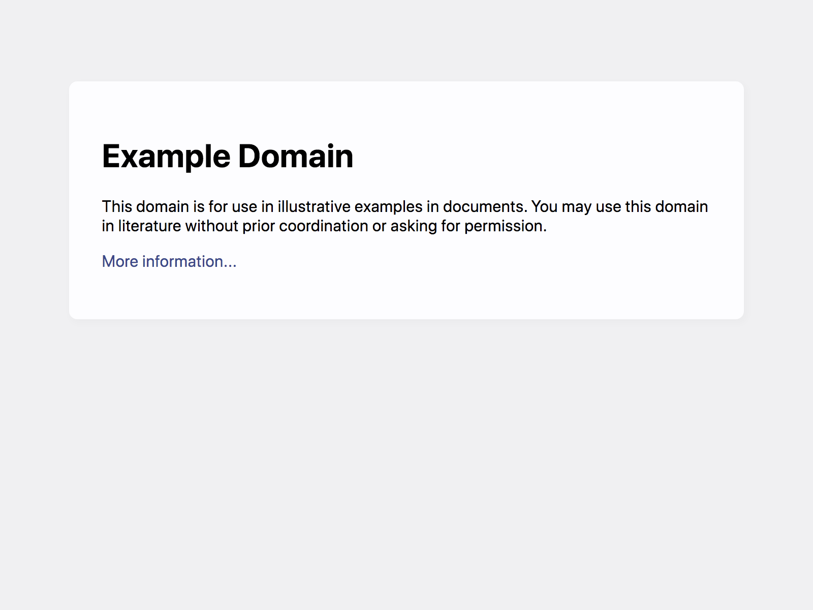

Started
Sep 14, 2023 07:01:40 PM
Ended
Sep 14, 2023 07:02:53 PM
Features Passed
0
Features Failed
50
Features
Scenarios
Steps
Timeline
Tags
| Name | Passed | Failed | Skipped | Others | Passed % |
|---|---|---|---|---|---|
| @Valid | 3 | 80 | 0 | 0 | 3.614% |
| @validProgram | 0 | 5 | 0 | 0 | 0% |
| @Invalid | 2 | 4 | 0 | 0 | 33.333% |
| @validprogram | 0 | 2 | 0 | 0 | 0% |
| @valid | 0 | 159 | 0 | 0 | 0% |
| @invalidprogram | 0 | 6 | 0 | 0 | 0% |
| @invalid | 0 | 36 | 0 | 0 | 0% |
| @invalidProgram | 0 | 8 | 0 | 0 | 0% |
System/Environment
| Name | Value |
|---|---|
| AppName | DS-ALGO_PROJECT |
| user | Cool Cukes Team |
| build | 1.1 |
| os | MAC |
-
Home Page Verification
7:01:42 PM / 00:00:06:181 Fail
Home Page Verification
09.14.2023 7:01:42 PM 09.14.2023 7:01:48 PM 00:00:06:181 · #test-id=1FailVerify admin is able to land on home pageGiven Admin launch the browserWhen Admin gives the correct LMS portal URLThen Admin should land on the home pagecom.lmsproject.apphooks.Hooks.addScreenShot(io.cucumber.java.Scenario)Verify_admin_is_able_to_land_on_home_page FailVerify admin is able to land on home page with invalid URLGiven Admin launch the browserWhen Admin gives the invalid LMS portal URLcom.lmsproject.apphooks.Hooks.addScreenShot(io.cucumber.java.Scenario)Verify_admin_is_able_to_land_on_home_page_with_invalid_URL
FailVerify admin is able to land on home page with invalid URLGiven Admin launch the browserWhen Admin gives the invalid LMS portal URLcom.lmsproject.apphooks.Hooks.addScreenShot(io.cucumber.java.Scenario)Verify_admin_is_able_to_land_on_home_page_with_invalid_URL Then Admin should recieve 404 page not found errorStep skippedFailVerify for broken linkGiven Admin launch the browserWhen Admin gives the correct LMS portal URLThen HTTP response >= 400 the link is brokencom.lmsproject.apphooks.Hooks.addScreenShot(io.cucumber.java.Scenario)Verify_for_broken_link
Then Admin should recieve 404 page not found errorStep skippedFailVerify for broken linkGiven Admin launch the browserWhen Admin gives the correct LMS portal URLThen HTTP response >= 400 the link is brokencom.lmsproject.apphooks.Hooks.addScreenShot(io.cucumber.java.Scenario)Verify_for_broken_link FailVerify the text spelling in the pageGiven Admin launch the browserWhen Admin gives the correct LMS portal URLThen Admin should see correct spellings in all fieldscom.lmsproject.apphooks.Hooks.addScreenShot(io.cucumber.java.Scenario)Verify_the_text_spelling_in_the_page
FailVerify the text spelling in the pageGiven Admin launch the browserWhen Admin gives the correct LMS portal URLThen Admin should see correct spellings in all fieldscom.lmsproject.apphooks.Hooks.addScreenShot(io.cucumber.java.Scenario)Verify_the_text_spelling_in_the_page FailVerify the logo of the LMSGiven Admin launch the browserWhen Admin gives the correct LMS portal URLThen Admin should see correct logo of the LMScom.lmsproject.apphooks.Hooks.addScreenShot(io.cucumber.java.Scenario)Verify_the_logo_of_the_LMS
FailVerify the logo of the LMSGiven Admin launch the browserWhen Admin gives the correct LMS portal URLThen Admin should see correct logo of the LMScom.lmsproject.apphooks.Hooks.addScreenShot(io.cucumber.java.Scenario)Verify_the_logo_of_the_LMS FailVerify the logo properly alignedGiven Admin launch the browserWhen Admin gives the correct LMS portal URLThen Admin should see logo is properly alignedcom.lmsproject.apphooks.Hooks.addScreenShot(io.cucumber.java.Scenario)Verify_the_logo_properly_aligned
FailVerify the logo properly alignedGiven Admin launch the browserWhen Admin gives the correct LMS portal URLThen Admin should see logo is properly alignedcom.lmsproject.apphooks.Hooks.addScreenShot(io.cucumber.java.Scenario)Verify_the_logo_properly_aligned FailVerify login button is presentGiven Admin launch the browserWhen Admin gives the correct LMS portal URLThen Admin should see login buttoncom.lmsproject.apphooks.Hooks.addScreenShot(io.cucumber.java.Scenario)Verify_login_button_is_present
FailVerify login button is presentGiven Admin launch the browserWhen Admin gives the correct LMS portal URLThen Admin should see login buttoncom.lmsproject.apphooks.Hooks.addScreenShot(io.cucumber.java.Scenario)Verify_login_button_is_present FailVerify login button is clickableGiven Admin launch the browserWhen Admin gives the correct LMS portal URLThen Admin should able to click the Login buttoncom.lmsproject.apphooks.Hooks.addScreenShot(io.cucumber.java.Scenario)Verify_login_button_is_clickable
FailVerify login button is clickableGiven Admin launch the browserWhen Admin gives the correct LMS portal URLThen Admin should able to click the Login buttoncom.lmsproject.apphooks.Hooks.addScreenShot(io.cucumber.java.Scenario)Verify_login_button_is_clickable
-
Authenticate and verify the login feature
7:01:48 PM / 00:00:07:477 Fail
Authenticate and verify the login feature
09.14.2023 7:01:48 PM 09.14.2023 7:01:55 PM 00:00:07:477 · #test-id=66FailVerify admin is able to land on homepageGiven The admin is in Home pageWhen The admin clicks on the Login linkcom.lmsproject.apphooks.Hooks.addScreenShot(io.cucumber.java.Scenario)Verify_admin_is_able_to_land_on_homepage Then The admin should landed on LMS Login Page "LMS Login Page"Step skippedFailVerifies for broken linkGiven The admin is in Home pageWhen The admin clicks on the Login linkcom.lmsproject.apphooks.Hooks.addScreenShot(io.cucumber.java.Scenario)Verifies_for_broken_link
Then The admin should landed on LMS Login Page "LMS Login Page"Step skippedFailVerifies for broken linkGiven The admin is in Home pageWhen The admin clicks on the Login linkcom.lmsproject.apphooks.Hooks.addScreenShot(io.cucumber.java.Scenario)Verifies_for_broken_link Then The admin gets the errorMessage "URL is broken link." when the response is >=400Step skippedFailVerifies the header of the login pageGiven The admin is in Home pageWhen The admin clicks on the Login linkcom.lmsproject.apphooks.Hooks.addScreenShot(io.cucumber.java.Scenario)Verifies_the_header_of_the_login_page
Then The admin gets the errorMessage "URL is broken link." when the response is >=400Step skippedFailVerifies the header of the login pageGiven The admin is in Home pageWhen The admin clicks on the Login linkcom.lmsproject.apphooks.Hooks.addScreenShot(io.cucumber.java.Scenario)Verifies_the_header_of_the_login_page Then The admin gets the Message "Please login to LMS Application"Step skippedFailVerifies the correct spelling of the fields in login pageGiven The admin is in Home pageWhen The admin clicks on the Login linkcom.lmsproject.apphooks.Hooks.addScreenShot(io.cucumber.java.Scenario)Verifies_the_correct_spelling_of_the_fields_in_login_page
Then The admin gets the Message "Please login to LMS Application"Step skippedFailVerifies the correct spelling of the fields in login pageGiven The admin is in Home pageWhen The admin clicks on the Login linkcom.lmsproject.apphooks.Hooks.addScreenShot(io.cucumber.java.Scenario)Verifies_the_correct_spelling_of_the_fields_in_login_page Then The admin should see the correct spellings in all fieldsStep skippedFailVerifies the text field is presentGiven The admin is in Home pageWhen The admin clicks on the Login linkcom.lmsproject.apphooks.Hooks.addScreenShot(io.cucumber.java.Scenario)Verifies_the_text_field_is_present
Then The admin should see the correct spellings in all fieldsStep skippedFailVerifies the text field is presentGiven The admin is in Home pageWhen The admin clicks on the Login linkcom.lmsproject.apphooks.Hooks.addScreenShot(io.cucumber.java.Scenario)Verifies_the_text_field_is_present Then The admin should see the two text fieldsStep skippedFailVerifies text on the first text fieldGiven The admin is in Home pageWhen The admin clicks on the Login linkcom.lmsproject.apphooks.Hooks.addScreenShot(io.cucumber.java.Scenario)Verifies_text_on_the_first_text_field
Then The admin should see the two text fieldsStep skippedFailVerifies text on the first text fieldGiven The admin is in Home pageWhen The admin clicks on the Login linkcom.lmsproject.apphooks.Hooks.addScreenShot(io.cucumber.java.Scenario)Verifies_text_on_the_first_text_field Then The admin should see "User" in the first text fieldStep skippedFailVerifies symbol next to user textGiven The admin is in Home pageWhen The admin clicks on the Login linkcom.lmsproject.apphooks.Hooks.addScreenShot(io.cucumber.java.Scenario)Verifies_symbol_next_to_user_text
Then The admin should see "User" in the first text fieldStep skippedFailVerifies symbol next to user textGiven The admin is in Home pageWhen The admin clicks on the Login linkcom.lmsproject.apphooks.Hooks.addScreenShot(io.cucumber.java.Scenario)Verifies_symbol_next_to_user_text Then The admin should see "*" symbol next to user textStep skippedFailVerifies text on the second text fieldGiven The admin is in Home pageWhen The admin clicks on the Login linkcom.lmsproject.apphooks.Hooks.addScreenShot(io.cucumber.java.Scenario)Verifies_text_on_the_second_text_field
Then The admin should see "*" symbol next to user textStep skippedFailVerifies text on the second text fieldGiven The admin is in Home pageWhen The admin clicks on the Login linkcom.lmsproject.apphooks.Hooks.addScreenShot(io.cucumber.java.Scenario)Verifies_text_on_the_second_text_field Then The admin should see "password" in the second text fieldStep skippedFailVerifies symbol next to password textGiven The admin is in Home pageWhen The admin clicks on the Login linkcom.lmsproject.apphooks.Hooks.addScreenShot(io.cucumber.java.Scenario)Verifies_symbol_next_to_password_text
Then The admin should see "password" in the second text fieldStep skippedFailVerifies symbol next to password textGiven The admin is in Home pageWhen The admin clicks on the Login linkcom.lmsproject.apphooks.Hooks.addScreenShot(io.cucumber.java.Scenario)Verifies_symbol_next_to_password_text Then The admin should see "*" symbol next to password textStep skippedFailVerifies the alignment input field for the loginGiven The admin is in Home pageWhen The admin clicks on the Login linkcom.lmsproject.apphooks.Hooks.addScreenShot(io.cucumber.java.Scenario)Verifies_the_alignment_input_field_for_the_login
Then The admin should see "*" symbol next to password textStep skippedFailVerifies the alignment input field for the loginGiven The admin is in Home pageWhen The admin clicks on the Login linkcom.lmsproject.apphooks.Hooks.addScreenShot(io.cucumber.java.Scenario)Verifies_the_alignment_input_field_for_the_login Then The admin should see the input field on the center of the pageStep skippedFailVerifies the login is presentGiven The admin is in Home pageWhen The admin clicks on the Login linkcom.lmsproject.apphooks.Hooks.addScreenShot(io.cucumber.java.Scenario)Verifies_the_login_is_present
Then The admin should see the input field on the center of the pageStep skippedFailVerifies the login is presentGiven The admin is in Home pageWhen The admin clicks on the Login linkcom.lmsproject.apphooks.Hooks.addScreenShot(io.cucumber.java.Scenario)Verifies_the_login_is_present Then The admin should see login buttonStep skippedFailVerifies the alignment of the login buttonGiven The admin is in Home pageWhen The admin clicks on the Login linkcom.lmsproject.apphooks.Hooks.addScreenShot(io.cucumber.java.Scenario)Verifies_the_alignment_of_the_login_button
Then The admin should see login buttonStep skippedFailVerifies the alignment of the login buttonGiven The admin is in Home pageWhen The admin clicks on the Login linkcom.lmsproject.apphooks.Hooks.addScreenShot(io.cucumber.java.Scenario)Verifies_the_alignment_of_the_login_button Then The admin should see login button on the center of the pageStep skippedFailVerifies forgot username or password linkGiven The admin is in Home pageWhen The admin clicks on the Login linkcom.lmsproject.apphooks.Hooks.addScreenShot(io.cucumber.java.Scenario)Verifies_forgot_username_or_password_link
Then The admin should see login button on the center of the pageStep skippedFailVerifies forgot username or password linkGiven The admin is in Home pageWhen The admin clicks on the Login linkcom.lmsproject.apphooks.Hooks.addScreenShot(io.cucumber.java.Scenario)Verifies_forgot_username_or_password_link Then The admin should see forget username or password linkStep skippedFailVerifies reset password linkGiven The admin is in Home pageWhen The admin clicks on the Login linkcom.lmsproject.apphooks.Hooks.addScreenShot(io.cucumber.java.Scenario)Verifies_reset_password_link
Then The admin should see forget username or password linkStep skippedFailVerifies reset password linkGiven The admin is in Home pageWhen The admin clicks on the Login linkcom.lmsproject.apphooks.Hooks.addScreenShot(io.cucumber.java.Scenario)Verifies_reset_password_link Then The admin should see reset password linkStep skippedFailVerifies input decriptive test in user fieldGiven The admin is in Home pageWhen The admin clicks on the Login linkcom.lmsproject.apphooks.Hooks.addScreenShot(io.cucumber.java.Scenario)Verifies_input_decriptive_test_in_user_field
Then The admin should see reset password linkStep skippedFailVerifies input decriptive test in user fieldGiven The admin is in Home pageWhen The admin clicks on the Login linkcom.lmsproject.apphooks.Hooks.addScreenShot(io.cucumber.java.Scenario)Verifies_input_decriptive_test_in_user_field Then The admin should see user in gray "#808080" scolorStep skippedFailVerifies input decriptive test in password fieldGiven The admin is in Home pageWhen The admin clicks on the Login linkcom.lmsproject.apphooks.Hooks.addScreenShot(io.cucumber.java.Scenario)Verifies_input_decriptive_test_in_password_field
Then The admin should see user in gray "#808080" scolorStep skippedFailVerifies input decriptive test in password fieldGiven The admin is in Home pageWhen The admin clicks on the Login linkcom.lmsproject.apphooks.Hooks.addScreenShot(io.cucumber.java.Scenario)Verifies_input_decriptive_test_in_password_field Then The admin should see password in gray "#808080" colorStep skippedFailValidate login with valid credentialsGiven The admin is in login pageWhen The admin enter valid credentials and clicks login button
Then The admin should see password in gray "#808080" colorStep skippedFailValidate login with valid credentialsGiven The admin is in login pageWhen The admin enter valid credentials and clicks login buttonUIAchievers Test@1234 com.lmsproject.apphooks.Hooks.addScreenShot(io.cucumber.java.Scenario)Validate_login_with_valid_credentials Then The admin should land on dashboard page with the message "Welcome, Admin! Logged in successfully"Step skippedFailValidate login with invalid credentialsFailValidate login with invalid credentialsGiven The admin is in login pageWhen The admin enters "", "Test@1234" and clicks the login buttoncom.lmsproject.apphooks.Hooks.addScreenShot(io.cucumber.java.Scenario)Validate_login_with_invalid_credentials
Then The admin should land on dashboard page with the message "Welcome, Admin! Logged in successfully"Step skippedFailValidate login with invalid credentialsFailValidate login with invalid credentialsGiven The admin is in login pageWhen The admin enters "", "Test@1234" and clicks the login buttoncom.lmsproject.apphooks.Hooks.addScreenShot(io.cucumber.java.Scenario)Validate_login_with_invalid_credentials Then the admin should see the error message indicating "Please enter valid username"Step skippedFailValidate login with invalid credentialsGiven The admin is in login pageWhen The admin enters "UIAchievers", "" and clicks the login buttoncom.lmsproject.apphooks.Hooks.addScreenShot(io.cucumber.java.Scenario)Validate_login_with_invalid_credentials
Then the admin should see the error message indicating "Please enter valid username"Step skippedFailValidate login with invalid credentialsGiven The admin is in login pageWhen The admin enters "UIAchievers", "" and clicks the login buttoncom.lmsproject.apphooks.Hooks.addScreenShot(io.cucumber.java.Scenario)Validate_login_with_invalid_credentials Then the admin should see the error message indicating "Please enter valid password"Step skippedFailValidate login with invalid credentialsGiven The admin is in login pageWhen The admin enters "00000000000", "Test@1234" and clicks the login buttoncom.lmsproject.apphooks.Hooks.addScreenShot(io.cucumber.java.Scenario)Validate_login_with_invalid_credentials
Then the admin should see the error message indicating "Please enter valid password"Step skippedFailValidate login with invalid credentialsGiven The admin is in login pageWhen The admin enters "00000000000", "Test@1234" and clicks the login buttoncom.lmsproject.apphooks.Hooks.addScreenShot(io.cucumber.java.Scenario)Validate_login_with_invalid_credentials Then the admin should see the error message indicating "Please enter valid username"Step skippedFailValidate login with invalid credentialsGiven The admin is in login pageWhen The admin enters "UIAchievers", "00000000000" and clicks the login buttoncom.lmsproject.apphooks.Hooks.addScreenShot(io.cucumber.java.Scenario)Validate_login_with_invalid_credentials
Then the admin should see the error message indicating "Please enter valid username"Step skippedFailValidate login with invalid credentialsGiven The admin is in login pageWhen The admin enters "UIAchievers", "00000000000" and clicks the login buttoncom.lmsproject.apphooks.Hooks.addScreenShot(io.cucumber.java.Scenario)Validate_login_with_invalid_credentials Then the admin should see the error message indicating "Please enter valid password"Step skippedFailValidate login with invalid credentialsGiven The admin is in login pageWhen The admin enters "*&^$$$$$$$$", "Test@1234" and clicks the login buttoncom.lmsproject.apphooks.Hooks.addScreenShot(io.cucumber.java.Scenario)Validate_login_with_invalid_credentials
Then the admin should see the error message indicating "Please enter valid password"Step skippedFailValidate login with invalid credentialsGiven The admin is in login pageWhen The admin enters "*&^$$$$$$$$", "Test@1234" and clicks the login buttoncom.lmsproject.apphooks.Hooks.addScreenShot(io.cucumber.java.Scenario)Validate_login_with_invalid_credentials Then the admin should see the error message indicating "Please enter valid username"Step skippedFailValidate login with invalid credentialsGiven The admin is in login pageWhen The admin enters "", "" and clicks the login buttoncom.lmsproject.apphooks.Hooks.addScreenShot(io.cucumber.java.Scenario)Validate_login_with_invalid_credentials
Then the admin should see the error message indicating "Please enter valid username"Step skippedFailValidate login with invalid credentialsGiven The admin is in login pageWhen The admin enters "", "" and clicks the login buttoncom.lmsproject.apphooks.Hooks.addScreenShot(io.cucumber.java.Scenario)Validate_login_with_invalid_credentials Then the admin should see the error message indicating "Please enter valid username and password"Step skippedFailVerify login button action through keyboardGiven The admin is in Home pageWhen The admin enter valid credentials and clicks login button through keyboard
Then the admin should see the error message indicating "Please enter valid username and password"Step skippedFailVerify login button action through keyboardGiven The admin is in Home pageWhen The admin enter valid credentials and clicks login button through keyboardUIAchievers Test@1234 com.lmsproject.apphooks.Hooks.addScreenShot(io.cucumber.java.Scenario)Verify_login_button_action_through_keyboard Then The admin should land on dashboard page with the message "Welcome, Admin! Logged in successfully"Step skippedFailVerify login button action through mouseGiven The admin is in Home pageWhen The admin enter valid credentials and clicks login button through mouse
Then The admin should land on dashboard page with the message "Welcome, Admin! Logged in successfully"Step skippedFailVerify login button action through mouseGiven The admin is in Home pageWhen The admin enter valid credentials and clicks login button through mouseUIAchievers Test@1234 com.lmsproject.apphooks.Hooks.addScreenShot(io.cucumber.java.Scenario)Verify_login_button_action_through_mouse Then The admin should land on dashboard page with the message "Welcome, Admin! Logged in successfully"Step skipped
Then The admin should land on dashboard page with the message "Welcome, Admin! Logged in successfully"Step skipped -
Dashboard Page
7:01:55 PM / 00:00:05:014 Fail
Dashboard Page
09.14.2023 7:01:55 PM 09.14.2023 7:02:00 PM 00:00:05:014 · #test-id=268FailVerify after login admin lands on manage program as dashboard pageGiven Admin launch the browser to open UIWhen Admin enters URL and clicks login buttoncom.lmsproject.apphooks.Hooks.addScreenShot(io.cucumber.java.Scenario)Verify_after_login__admin_lands_on_manage_program_as_dashboard_page Then Admin should be in login pageStep skippedGiven Admin is in login page to sign inStep skippedWhen The admin enter valid credentials and clicks login button to enter dashboard
Then Admin should be in login pageStep skippedGiven Admin is in login page to sign inStep skippedWhen The admin enter valid credentials and clicks login button to enter dashboardUIAchievers Test@1234 Step skippedThen Admin should see manage program as headerStep skippedFailVerify the response timeGiven Admin launch the browser to open UIWhen Admin enters URL and clicks login buttoncom.lmsproject.apphooks.Hooks.addScreenShot(io.cucumber.java.Scenario)Verify_the_response_time Then Admin should be in login pageStep skippedGiven Admin is in login page to sign inStep skippedWhen The admin enter valid credentials and clicks login button to enter dashboard
Then Admin should be in login pageStep skippedGiven Admin is in login page to sign inStep skippedWhen The admin enter valid credentials and clicks login button to enter dashboardUIAchievers Test@1234 Step skippedThen Maximum navigation time in milliseconds, defaults to 30 seconds in DasboardStep skippedFailVerify broken linkGiven Admin launch the browser to open UIWhen Admin enters URL and clicks login buttoncom.lmsproject.apphooks.Hooks.addScreenShot(io.cucumber.java.Scenario)Verify_broken_link Then Admin should be in login pageStep skippedGiven Admin is in login page to sign inStep skippedWhen The admin enter valid credentials and clicks login button to enter dashboard
Then Admin should be in login pageStep skippedGiven Admin is in login page to sign inStep skippedWhen The admin enter valid credentials and clicks login button to enter dashboardUIAchievers Test@1234 Step skippedThen HTTP response >= 400. Then the link is broken for dashboardStep skippedFailVerify LMS titleGiven Admin launch the browser to open UIWhen Admin enters URL and clicks login buttoncom.lmsproject.apphooks.Hooks.addScreenShot(io.cucumber.java.Scenario)Verify_LMS_titleThen Admin should be in login pageStep skippedGiven Admin is in login page to sign inStep skippedWhen The admin enter valid credentials and clicks login button to enter dashboardUIAchievers Test@1234 Step skippedThen Admin should see LMS -Learning management system as title in DashboardStep skippedFailVerify LMS title alignmentGiven Admin launch the browser to open UIWhen Admin enters URL and clicks login buttoncom.lmsproject.apphooks.Hooks.addScreenShot(io.cucumber.java.Scenario)Verify__LMS_title_alignment Then Admin should be in login pageStep skippedGiven Admin is in login page to sign inStep skippedWhen The admin enter valid credentials and clicks login button to enter dashboard
Then Admin should be in login pageStep skippedGiven Admin is in login page to sign inStep skippedWhen The admin enter valid credentials and clicks login button to enter dashboardUIAchievers Test@1234 Step skippedThen LMS title should be on the top left corner of pageStep skippedFailValidate navigation bar textGiven Admin launch the browser to open UIWhen Admin enters URL and clicks login buttoncom.lmsproject.apphooks.Hooks.addScreenShot(io.cucumber.java.Scenario)Validate_navigation_bar_text Then Admin should be in login pageStep skippedGiven Admin is in login page to sign inStep skippedWhen The admin enter valid credentials and clicks login button to enter dashboard
Then Admin should be in login pageStep skippedGiven Admin is in login page to sign inStep skippedWhen The admin enter valid credentials and clicks login button to enter dashboardUIAchievers Test@1234 Step skippedThen Admin should see correct spelling in navigation bar textStep skippedFailValidate LMS title has correct spelling ang spaceGiven Admin launch the browser to open UIWhen Admin enters URL and clicks login buttoncom.lmsproject.apphooks.Hooks.addScreenShot(io.cucumber.java.Scenario)Validate_LMS_title_has_correct_spelling_ang_space Then Admin should be in login pageStep skippedGiven Admin is in login page to sign inStep skippedWhen The admin enter valid credentials and clicks login button to enter dashboard
Then Admin should be in login pageStep skippedGiven Admin is in login page to sign inStep skippedWhen The admin enter valid credentials and clicks login button to enter dashboardUIAchievers Test@1234 Step skippedThen Admin should see correct spelling and space in LMS titleStep skippedFailValidate alignment for navigation barGiven Admin launch the browser to open UIWhen Admin enters URL and clicks login buttoncom.lmsproject.apphooks.Hooks.addScreenShot(io.cucumber.java.Scenario)Validate_alignment_for_navigation_bar Then Admin should be in login pageStep skippedGiven Admin is in login page to sign inStep skippedWhen The admin enter valid credentials and clicks login button to enter dashboard
Then Admin should be in login pageStep skippedGiven Admin is in login page to sign inStep skippedWhen The admin enter valid credentials and clicks login button to enter dashboardUIAchievers Test@1234 Step skippedThen Admin should see the navigation bar text on the top right sideStep skippedFailValidate navigation bar ordersFailValidate navigation bar ordersGiven Admin launch the browser to open UIWhen Admin enters URL and clicks login buttoncom.lmsproject.apphooks.Hooks.addScreenShot(io.cucumber.java.Scenario)Validate_navigation_bar_orders Then Admin should be in login pageStep skippedGiven Admin is in login page to sign inStep skippedWhen The admin enter valid credentials and clicks login button to enter dashboard
Then Admin should be in login pageStep skippedGiven Admin is in login page to sign inStep skippedWhen The admin enter valid credentials and clicks login button to enter dashboardUIAchievers Test@1234 Step skippedThen Admin should see "fieldname" in the 8 positionStep skippedFailValidate navigation bar ordersGiven Admin launch the browser to open UIWhen Admin enters URL and clicks login buttoncom.lmsproject.apphooks.Hooks.addScreenShot(io.cucumber.java.Scenario)Validate_navigation_bar_orders Then Admin should be in login pageStep skippedGiven Admin is in login page to sign inStep skippedWhen The admin enter valid credentials and clicks login button to enter dashboard
Then Admin should be in login pageStep skippedGiven Admin is in login page to sign inStep skippedWhen The admin enter valid credentials and clicks login button to enter dashboardUIAchievers Test@1234 Step skippedThen Admin should see "fieldname" in the 8 positionStep skippedFailValidate navigation bar ordersGiven Admin launch the browser to open UIWhen Admin enters URL and clicks login buttoncom.lmsproject.apphooks.Hooks.addScreenShot(io.cucumber.java.Scenario)Validate_navigation_bar_orders Then Admin should be in login pageStep skippedGiven Admin is in login page to sign inStep skippedWhen The admin enter valid credentials and clicks login button to enter dashboard
Then Admin should be in login pageStep skippedGiven Admin is in login page to sign inStep skippedWhen The admin enter valid credentials and clicks login button to enter dashboardUIAchievers Test@1234 Step skippedThen Admin should see "fieldname" in the 8 positionStep skippedFailValidate navigation bar ordersGiven Admin launch the browser to open UIWhen Admin enters URL and clicks login buttoncom.lmsproject.apphooks.Hooks.addScreenShot(io.cucumber.java.Scenario)Validate_navigation_bar_orders Then Admin should be in login pageStep skippedGiven Admin is in login page to sign inStep skippedWhen The admin enter valid credentials and clicks login button to enter dashboard
Then Admin should be in login pageStep skippedGiven Admin is in login page to sign inStep skippedWhen The admin enter valid credentials and clicks login button to enter dashboardUIAchievers Test@1234 Step skippedThen Admin should see "fieldname" in the 8 positionStep skippedFailValidate navigation bar ordersGiven Admin launch the browser to open UIWhen Admin enters URL and clicks login buttoncom.lmsproject.apphooks.Hooks.addScreenShot(io.cucumber.java.Scenario)Validate_navigation_bar_orders Then Admin should be in login pageStep skippedGiven Admin is in login page to sign inStep skippedWhen The admin enter valid credentials and clicks login button to enter dashboard
Then Admin should be in login pageStep skippedGiven Admin is in login page to sign inStep skippedWhen The admin enter valid credentials and clicks login button to enter dashboardUIAchievers Test@1234 Step skippedThen Admin should see "fieldname" in the 8 positionStep skippedFailValidate navigation bar ordersGiven Admin launch the browser to open UIWhen Admin enters URL and clicks login buttoncom.lmsproject.apphooks.Hooks.addScreenShot(io.cucumber.java.Scenario)Validate_navigation_bar_orders Then Admin should be in login pageStep skippedGiven Admin is in login page to sign inStep skippedWhen The admin enter valid credentials and clicks login button to enter dashboard
Then Admin should be in login pageStep skippedGiven Admin is in login page to sign inStep skippedWhen The admin enter valid credentials and clicks login button to enter dashboardUIAchievers Test@1234 Step skippedThen Admin should see "fieldname" in the 8 positionStep skippedFailValidate navigation bar ordersGiven Admin launch the browser to open UIWhen Admin enters URL and clicks login buttoncom.lmsproject.apphooks.Hooks.addScreenShot(io.cucumber.java.Scenario)Validate_navigation_bar_orders Then Admin should be in login pageStep skippedGiven Admin is in login page to sign inStep skippedWhen The admin enter valid credentials and clicks login button to enter dashboard
Then Admin should be in login pageStep skippedGiven Admin is in login page to sign inStep skippedWhen The admin enter valid credentials and clicks login button to enter dashboardUIAchievers Test@1234 Step skippedThen Admin should see "fieldname" in the 8 positionStep skippedFailValidate navigation bar ordersGiven Admin launch the browser to open UIWhen Admin enters URL and clicks login buttoncom.lmsproject.apphooks.Hooks.addScreenShot(io.cucumber.java.Scenario)Validate_navigation_bar_orders Then Admin should be in login pageStep skippedGiven Admin is in login page to sign inStep skippedWhen The admin enter valid credentials and clicks login button to enter dashboard
Then Admin should be in login pageStep skippedGiven Admin is in login page to sign inStep skippedWhen The admin enter valid credentials and clicks login button to enter dashboardUIAchievers Test@1234 Step skippedThen Admin should see "fieldname" in the 8 positionStep skipped -
Student Page Verification
7:02:01 PM / 00:00:05:415 Fail
Student Page Verification
09.14.2023 7:02:01 PM 09.14.2023 7:02:06 PM 00:00:05:415 · #test-id=494FailValidate the title of the pageGiven Admin is on dashboard page after Login.When Admin clicks "Student" on the navigation bar.com.lmsproject.apphooks.Hooks.addScreenShot(io.cucumber.java.Scenario)Validate_the_title_of_the_page Then Admin should see the Student details Page TitleStep skippedFailValidate response time from dashboard page to student pageGiven Admin is on dashboard page after Login.When Admin clicks "Student" on the navigation bar.com.lmsproject.apphooks.Hooks.addScreenShot(io.cucumber.java.Scenario)Validate_response_time_from_dashboard_page_to_student_page
Then Admin should see the Student details Page TitleStep skippedFailValidate response time from dashboard page to student pageGiven Admin is on dashboard page after Login.When Admin clicks "Student" on the navigation bar.com.lmsproject.apphooks.Hooks.addScreenShot(io.cucumber.java.Scenario)Validate_response_time_from_dashboard_page_to_student_page Then Maximum navigation time in milliseconds, defaults to 30 secondsStep skippedFailValidate the broken linkGiven Admin is on dashboard page after Login.When Admin clicks "Student" on the navigation bar.com.lmsproject.apphooks.Hooks.addScreenShot(io.cucumber.java.Scenario)Validate_the_broken_link
Then Maximum navigation time in milliseconds, defaults to 30 secondsStep skippedFailValidate the broken linkGiven Admin is on dashboard page after Login.When Admin clicks "Student" on the navigation bar.com.lmsproject.apphooks.Hooks.addScreenShot(io.cucumber.java.Scenario)Validate_the_broken_link Then HTTP response >= 400. Then the link is broken.Step skippedFailVerify LMS titleGiven Admin is on dashboard page after Login.When Admin clicks "Student" on the navigation bar.com.lmsproject.apphooks.Hooks.addScreenShot(io.cucumber.java.Scenario)Verify_LMS_title
Then HTTP response >= 400. Then the link is broken.Step skippedFailVerify LMS titleGiven Admin is on dashboard page after Login.When Admin clicks "Student" on the navigation bar.com.lmsproject.apphooks.Hooks.addScreenShot(io.cucumber.java.Scenario)Verify_LMS_title Then Admin should see LMS -Learning management system as titleStep skippedFailVerify the alignment of the Student detail titleGiven Admin is on dashboard page after Login.When Admin clicks "Student" on the navigation bar.com.lmsproject.apphooks.Hooks.addScreenShot(io.cucumber.java.Scenario)Verify_the_alignment_of_the_Student_detail_title
Then Admin should see LMS -Learning management system as titleStep skippedFailVerify the alignment of the Student detail titleGiven Admin is on dashboard page after Login.When Admin clicks "Student" on the navigation bar.com.lmsproject.apphooks.Hooks.addScreenShot(io.cucumber.java.Scenario)Verify_the_alignment_of_the_Student_detail_title Then Student Detail title should be in centre of the pageStep skippedFailValidate drop down is present in the pageGiven Admin is on dashboard page after Login.When Admin clicks "Student" on the navigation bar.com.lmsproject.apphooks.Hooks.addScreenShot(io.cucumber.java.Scenario)Validate_drop_down_is_present_in_the_page
Then Student Detail title should be in centre of the pageStep skippedFailValidate drop down is present in the pageGiven Admin is on dashboard page after Login.When Admin clicks "Student" on the navigation bar.com.lmsproject.apphooks.Hooks.addScreenShot(io.cucumber.java.Scenario)Validate_drop_down_is_present_in_the_page Then 2 dropdowns should be present in the pageStep skippedFailValidate search bar in select student name drop downGiven Admin is on dashboard page after Login.When Admin clicks "Student" on the navigation bar.com.lmsproject.apphooks.Hooks.addScreenShot(io.cucumber.java.Scenario)Validate_search_bar_in_select_student_name_drop_down
Then 2 dropdowns should be present in the pageStep skippedFailValidate search bar in select student name drop downGiven Admin is on dashboard page after Login.When Admin clicks "Student" on the navigation bar.com.lmsproject.apphooks.Hooks.addScreenShot(io.cucumber.java.Scenario)Validate_search_bar_in_select_student_name_drop_down Then Admin should see search box inside the drop downStep skippedFailValidate search bar in select batch id drop downGiven Admin is on dashboard page after Login.When Admin clicks "Student" on the navigation bar.com.lmsproject.apphooks.Hooks.addScreenShot(io.cucumber.java.Scenario)Validate_search_bar_in_select_batch_id_drop_down
Then Admin should see search box inside the drop downStep skippedFailValidate search bar in select batch id drop downGiven Admin is on dashboard page after Login.When Admin clicks "Student" on the navigation bar.com.lmsproject.apphooks.Hooks.addScreenShot(io.cucumber.java.Scenario)Validate_search_bar_in_select_batch_id_drop_down Then Admin should see search box inside batch id drop downStep skippedFailValidate text spelling student nameGiven Admin is on dashboard page after Login.When Admin clicks "Student" on the navigation bar.com.lmsproject.apphooks.Hooks.addScreenShot(io.cucumber.java.Scenario)Validate_text_spelling_student_name
Then Admin should see search box inside batch id drop downStep skippedFailValidate text spelling student nameGiven Admin is on dashboard page after Login.When Admin clicks "Student" on the navigation bar.com.lmsproject.apphooks.Hooks.addScreenShot(io.cucumber.java.Scenario)Validate_text_spelling_student_name Then Admin should see correct spelling select student nameStep skippedFailValidate text spelling select batch idGiven Admin is on dashboard page after Login.When Admin clicks "Student" on the navigation bar.com.lmsproject.apphooks.Hooks.addScreenShot(io.cucumber.java.Scenario)Validate_text_spelling_select_batch_id
Then Admin should see correct spelling select student nameStep skippedFailValidate text spelling select batch idGiven Admin is on dashboard page after Login.When Admin clicks "Student" on the navigation bar.com.lmsproject.apphooks.Hooks.addScreenShot(io.cucumber.java.Scenario)Validate_text_spelling_select_batch_id Then Admin should see correct spelling select batch idStep skippedFailValidate only numbers inside select batch idGiven Admin is on dashboard page after Login.When Admin clicks "Student" on the navigation bar.com.lmsproject.apphooks.Hooks.addScreenShot(io.cucumber.java.Scenario)Validate_only_numbers_inside_select_batch_id
Then Admin should see correct spelling select batch idStep skippedFailValidate only numbers inside select batch idGiven Admin is on dashboard page after Login.When Admin clicks "Student" on the navigation bar.com.lmsproject.apphooks.Hooks.addScreenShot(io.cucumber.java.Scenario)Validate_only_numbers_inside_select_batch_id Then Admin should see only numbers inside batch id drop downStep skippedFailValidate gray color in student name drop downGiven Admin is on dashboard page after Login.When Admin clicks "Student" on the navigation bar.com.lmsproject.apphooks.Hooks.addScreenShot(io.cucumber.java.Scenario)Validate_gray_color_in_student_name_drop_down
Then Admin should see only numbers inside batch id drop downStep skippedFailValidate gray color in student name drop downGiven Admin is on dashboard page after Login.When Admin clicks "Student" on the navigation bar.com.lmsproject.apphooks.Hooks.addScreenShot(io.cucumber.java.Scenario)Validate_gray_color_in_student_name_drop_down Then Admin should see select student name in gray colorStep skippedFailValidate gray color in student name drop downGiven Admin is on dashboard page after Login.When Admin clicks "Student" on the navigation bar.com.lmsproject.apphooks.Hooks.addScreenShot(io.cucumber.java.Scenario)Validate_gray_color_in_student_name_drop_down
Then Admin should see select student name in gray colorStep skippedFailValidate gray color in student name drop downGiven Admin is on dashboard page after Login.When Admin clicks "Student" on the navigation bar.com.lmsproject.apphooks.Hooks.addScreenShot(io.cucumber.java.Scenario)Validate_gray_color_in_student_name_drop_down Then Admin should see select batch ID in gray colorStep skippedFailValidate first drop down label is select student nameGiven Admin is on dashboard page after Login.When Admin clicks "Student" on the navigation bar.com.lmsproject.apphooks.Hooks.addScreenShot(io.cucumber.java.Scenario)Validate_first_drop_down_label_is_select_student_name
Then Admin should see select batch ID in gray colorStep skippedFailValidate first drop down label is select student nameGiven Admin is on dashboard page after Login.When Admin clicks "Student" on the navigation bar.com.lmsproject.apphooks.Hooks.addScreenShot(io.cucumber.java.Scenario)Validate_first_drop_down_label_is_select_student_name Then Admin should see select student name in firstStep skippedFailValidate second drop down label is select batch idGiven Admin is on dashboard page after Login.When Admin clicks "Student" on the navigation bar.com.lmsproject.apphooks.Hooks.addScreenShot(io.cucumber.java.Scenario)Validate_second_drop_down_label_is_select_batch_id
Then Admin should see select student name in firstStep skippedFailValidate second drop down label is select batch idGiven Admin is on dashboard page after Login.When Admin clicks "Student" on the navigation bar.com.lmsproject.apphooks.Hooks.addScreenShot(io.cucumber.java.Scenario)Validate_second_drop_down_label_is_select_batch_id Then Admin should see select batch id in secondStep skippedFailValidate scroll down inside student name dropdownGiven Admin is on dashboard page after Login.When Admin clicks "Student" on the navigation bar.com.lmsproject.apphooks.Hooks.addScreenShot(io.cucumber.java.Scenario)Validate_scroll_down_inside_student_name_dropdown
Then Admin should see select batch id in secondStep skippedFailValidate scroll down inside student name dropdownGiven Admin is on dashboard page after Login.When Admin clicks "Student" on the navigation bar.com.lmsproject.apphooks.Hooks.addScreenShot(io.cucumber.java.Scenario)Validate_scroll_down_inside_student_name_dropdown Then Admin should able to scroll down to select the nameStep skippedFailValidate scroll down inside batch id dropdownGiven Admin is on dashboard page after Login.When Admin clicks "Student" on the navigation bar.com.lmsproject.apphooks.Hooks.addScreenShot(io.cucumber.java.Scenario)Validate_scroll_down_inside_batch_id_dropdown
Then Admin should able to scroll down to select the nameStep skippedFailValidate scroll down inside batch id dropdownGiven Admin is on dashboard page after Login.When Admin clicks "Student" on the navigation bar.com.lmsproject.apphooks.Hooks.addScreenShot(io.cucumber.java.Scenario)Validate_scroll_down_inside_batch_id_dropdown Then Admin should able to scroll down to select the batch idStep skipped
Then Admin should able to scroll down to select the batch idStep skipped -
Sudent Page Verification
7:02:06 PM / 00:00:01:622 Fail
Sudent Page Verification
09.14.2023 7:02:06 PM 09.14.2023 7:02:08 PM 00:00:01:622 · #test-id=631FailValidate select student name is fadingGiven Admin is on student details pagecom.lmsproject.apphooks.Hooks.addScreenShot(io.cucumber.java.Scenario)Validate_select_student_name_is_fading When Admin select student name from the drop downStep skippedThen Admin shouldn't see select student name textStep skippedFailValidate select batch id is fadingGiven Admin is on student details pagecom.lmsproject.apphooks.Hooks.addScreenShot(io.cucumber.java.Scenario)Validate_select_batch_id__is_fading
When Admin select student name from the drop downStep skippedThen Admin shouldn't see select student name textStep skippedFailValidate select batch id is fadingGiven Admin is on student details pagecom.lmsproject.apphooks.Hooks.addScreenShot(io.cucumber.java.Scenario)Validate_select_batch_id__is_fading When Admin select batch id from the drop downStep skippedThen Admin shouldn't see select batch id textStep skippedFailValidate select student name using search boxGiven Admin is on student details pagecom.lmsproject.apphooks.Hooks.addScreenShot(io.cucumber.java.Scenario)Validate_select_student_name_using_search_box
When Admin select batch id from the drop downStep skippedThen Admin shouldn't see select batch id textStep skippedFailValidate select student name using search boxGiven Admin is on student details pagecom.lmsproject.apphooks.Hooks.addScreenShot(io.cucumber.java.Scenario)Validate_select_student_name_using_search_box When Admin clicks select student name and enters x alphabet in the search boxStep skippedThen Admin should see student name start with x is listed belowStep skippedFailValidate select batch id using search boxGiven Admin is on student details pagecom.lmsproject.apphooks.Hooks.addScreenShot(io.cucumber.java.Scenario)Validate_select_batch_id_using_search_box
When Admin clicks select student name and enters x alphabet in the search boxStep skippedThen Admin should see student name start with x is listed belowStep skippedFailValidate select batch id using search boxGiven Admin is on student details pagecom.lmsproject.apphooks.Hooks.addScreenShot(io.cucumber.java.Scenario)Validate_select_batch_id_using_search_box When Admin clicks select batch id and enter x number in the search boxStep skippedThen Admin should see batch id start with x is listed belowStep skippedFailValidate selecting only student name will not display any detailsGiven Admin is on student details pagecom.lmsproject.apphooks.Hooks.addScreenShot(io.cucumber.java.Scenario)Validate_selecting_only__student_name__will_not_display_any_details
When Admin clicks select batch id and enter x number in the search boxStep skippedThen Admin should see batch id start with x is listed belowStep skippedFailValidate selecting only student name will not display any detailsGiven Admin is on student details pagecom.lmsproject.apphooks.Hooks.addScreenShot(io.cucumber.java.Scenario)Validate_selecting_only__student_name__will_not_display_any_details When Admin selects only student nameStep skippedThen Student details shouldn't be displayedStep skippedFailValidate selecting only batch id will not display any detailsGiven Admin is on student details pagecom.lmsproject.apphooks.Hooks.addScreenShot(io.cucumber.java.Scenario)Validate_selecting_only__batch_id__will_not_display_any_details
When Admin selects only student nameStep skippedThen Student details shouldn't be displayedStep skippedFailValidate selecting only batch id will not display any detailsGiven Admin is on student details pagecom.lmsproject.apphooks.Hooks.addScreenShot(io.cucumber.java.Scenario)Validate_selecting_only__batch_id__will_not_display_any_details When Admin selects only batch idStep skippedThen batchid details shouldn't be displayedStep skippedFailValidate selecting student name and batch idGiven Admin is on student details pagecom.lmsproject.apphooks.Hooks.addScreenShot(io.cucumber.java.Scenario)Validate_selecting_student_name_and_batch_id
When Admin selects only batch idStep skippedThen batchid details shouldn't be displayedStep skippedFailValidate selecting student name and batch idGiven Admin is on student details pagecom.lmsproject.apphooks.Hooks.addScreenShot(io.cucumber.java.Scenario)Validate_selecting_student_name_and_batch_id When Admin selects student name and batch idStep skippedThen Particular student informations should be displayStep skipped
When Admin selects student name and batch idStep skippedThen Particular student informations should be displayStep skipped -
Navigation Validation from student page to other Pages
7:02:08 PM / 00:00:01:591 Fail
Navigation Validation from student page to other Pages
09.14.2023 7:02:08 PM 09.14.2023 7:02:09 PM 00:00:01:591 · #test-id=688FailProgram link on navigation barGiven Admin is on student details pagecom.lmsproject.apphooks.Hooks.addScreenShot(io.cucumber.java.Scenario)Program_link_on_navigation_bar When Admin clicks on program link on student pageStep skippedThen Admin is redirected to Program pageStep skippedFailBatch link on navigation barGiven Admin is on student details pagecom.lmsproject.apphooks.Hooks.addScreenShot(io.cucumber.java.Scenario)Batch_link_on_navigation_bar
When Admin clicks on program link on student pageStep skippedThen Admin is redirected to Program pageStep skippedFailBatch link on navigation barGiven Admin is on student details pagecom.lmsproject.apphooks.Hooks.addScreenShot(io.cucumber.java.Scenario)Batch_link_on_navigation_bar When Admin clicks on Batch link on student pageStep skippedThen Admin is redirected to Batch pageStep skippedFailClass link on navigation barGiven Admin is on student details pagecom.lmsproject.apphooks.Hooks.addScreenShot(io.cucumber.java.Scenario)Class_link_on_navigation_bar
When Admin clicks on Batch link on student pageStep skippedThen Admin is redirected to Batch pageStep skippedFailClass link on navigation barGiven Admin is on student details pagecom.lmsproject.apphooks.Hooks.addScreenShot(io.cucumber.java.Scenario)Class_link_on_navigation_bar When Admin is redirected to User pageStep skippedThen Admin is redirected to Class pageStep skippedFailUser link on navigation barGiven Admin is on student details pagecom.lmsproject.apphooks.Hooks.addScreenShot(io.cucumber.java.Scenario)User_link_on_navigation_bar
When Admin is redirected to User pageStep skippedThen Admin is redirected to Class pageStep skippedFailUser link on navigation barGiven Admin is on student details pagecom.lmsproject.apphooks.Hooks.addScreenShot(io.cucumber.java.Scenario)User_link_on_navigation_bar When Admin clicks on User link on student pageStep skippedThen Admin is redirected to User pageStep skippedFailAssignment link on navigation barGiven Admin is on student details pagecom.lmsproject.apphooks.Hooks.addScreenShot(io.cucumber.java.Scenario)Assignment_link_on_navigation_bar
When Admin clicks on User link on student pageStep skippedThen Admin is redirected to User pageStep skippedFailAssignment link on navigation barGiven Admin is on student details pagecom.lmsproject.apphooks.Hooks.addScreenShot(io.cucumber.java.Scenario)Assignment_link_on_navigation_bar When Admin clicks on Assignment link on student pageStep skippedThen Admin is redirected to Assignment pageStep skippedFailAttendance link on navigation barGiven Admin is on student details pagecom.lmsproject.apphooks.Hooks.addScreenShot(io.cucumber.java.Scenario)Attendance_link_on_navigation_bar
When Admin clicks on Assignment link on student pageStep skippedThen Admin is redirected to Assignment pageStep skippedFailAttendance link on navigation barGiven Admin is on student details pagecom.lmsproject.apphooks.Hooks.addScreenShot(io.cucumber.java.Scenario)Attendance_link_on_navigation_bar When Admin clicks on Attendance link on student pageStep skippedThen Admin is redirected to Attendance pageStep skippedFailLogout link on navigation barGiven Admin is on student details pagecom.lmsproject.apphooks.Hooks.addScreenShot(io.cucumber.java.Scenario)Logout_link_on_navigation_bar
When Admin clicks on Attendance link on student pageStep skippedThen Admin is redirected to Attendance pageStep skippedFailLogout link on navigation barGiven Admin is on student details pagecom.lmsproject.apphooks.Hooks.addScreenShot(io.cucumber.java.Scenario)Logout_link_on_navigation_bar When Admin clicks on Logout link on student pageStep skippedThen Admin is redirected to Login pageStep skipped
When Admin clicks on Logout link on student pageStep skippedThen Admin is redirected to Login pageStep skipped -
Manage Program Validation
7:02:09 PM / 00:00:00:671 Fail
Manage Program Validation
09.14.2023 7:02:09 PM 09.14.2023 7:02:10 PM 00:00:00:671 · #test-id=745FailValidate landing in Program pageGiven Admin users launch the browser.Step undefinedWhen Admin users gives the correct LMS portal URL.Step skippedThen Admin users should land on the dashboard page.Step skippedGiven Admin users is on dashboard page after Login page.Step skippedWhen Admin users clicks Program on the navigation bar.Step skippedThen Admin users should see URL with "Manage Program" in program module.Step skippedFailValidate the heading in program pageGiven Admin users launch the browser.Step undefinedWhen Admin users gives the correct LMS portal URL.Step skippedThen Admin users should land on the dashboard page.Step skippedThen Admin users should see a heading with text "Manage Program" on the page.Step skippedFailValidate the text and pagination icon below the data table in program pageGiven Admin users launch the browser.Step undefinedWhen Admin users gives the correct LMS portal URL.Step skippedThen Admin users should land on the dashboard page.Step skippedThen Admin users should see the text as "Showing x to y of z entries" along with Pagination icon below the table.Step skippedFailValidate the text and pagination icon below the data table in program pageGiven Admin users launch the browser.Step undefinedWhen Admin users gives the correct LMS portal URL.Step skippedThen Admin users should land on the dashboard page.Step skippedThen Admin users should see the footer as "In total there are z programs".Step skippedFailValidate the text and pagination icon below the data table in program pageGiven Admin users launch the browser.Step undefinedWhen Admin users gives the correct LMS portal URL.Step skippedThen Admin users should land on the dashboard page.Step skippedThen Admin users should see a Delete button on the top left hand side as Disabled.Step skippedFailValidate the text and pagination icon below the data table in program pageGiven Admin users launch the browser.Step undefinedWhen Admin users gives the correct LMS portal URL.Step skippedThen Admin users should land on the dashboard page.Step skippedThen Admin users should see a "+A New Program" button on the program page above the data table.Step skippedFailValidate that number of records (rows of data in the table) displayed in program pageGiven Admin users launch the browser.Step undefinedWhen Admin users gives the correct LMS portal URL.Step skippedThen Admin users should land on the dashboard page.Step skippedThen Admin users should see the number of records (rows of data in the table) displayed on the page are 5.Step skippedFailVerify data table on the Program pageGiven Admin users launch the browser.Step undefinedWhen Admin users gives the correct LMS portal URL.Step skippedThen Admin users should land on the dashboard page.Step skippedThen Admin users should see data table on the Manage Program Page with following column headers 'Program'.Step skippedFailVerify Sort arrow icon on the data table in program pageGiven Admin users launch the browser.Step undefinedWhen Admin users gives the correct LMS portal URL.Step skippedThen Admin users should land on the dashboard page.Step skippedThen Admin users should see the sort arrow icon beside to each column header except Edit and Delete.Step skippedFailVerify Check box on the data table in program pageGiven Admin users launch the browser.Step undefinedWhen Admin users gives the correct LMS portal URL.Step skippedThen Admin users should land on the dashboard page.Step skippedThen Admin users should see check box on the left side in all rows of the data table.Step skippedFailVerify Edit and Delete buttons in program pageGiven Admin users launch the browser.Step undefinedWhen Admin users gives the correct LMS portal URL.Step skippedThen Admin users should land on the dashboard page.Step skippedThen Admin users should see the Edit and Delete buttons on each row of the data table.Step skippedFailVerify Search bar on the Program pageGiven Admin users launch the browser.Step undefinedWhen Admin users gives the correct LMS portal URL.Step skippedThen Admin users should land on the dashboard page.Step skippedThen Admin users should see Search bar with text as "Search...".Step skipped -
Manage Program Validation
7:02:10 PM / 00:00:00:069 Fail
Manage Program Validation
09.14.2023 7:02:10 PM 09.14.2023 7:02:10 PM 00:00:00:069 · #test-id=870FailSearch Program By NameFailSearch Program By NameGiven Admin is on dashboard page after Login page.Step undefinedWhen Admin clicks Program page on the navigation bar.Step skippedThen Admin should see URL with "Manage Program" page in program module.Step skippedGiven Admin is on Manage Program page.Step skippedWhen Admin enters Program Name , Program Description and Program Status in search content into search box "" 'Program description', 'ProgramStatus' . Step skippedThen Admin see the search result "" 'Program description', 'ProgramStatus' . Step skippedFailValidating the Search with unrelated keywordGiven Admin is on dashboard page after Login page.Step undefinedWhen Admin clicks Program page on the navigation bar.Step skippedThen Admin should see URL with "Manage Program" page in program module.Step skippedWhen Admin enters the keywords not present in the data table 'AI 'on the Search box.Step skippedThen Admin should see zero entries on the data table.Step skipped -
Add New Program
7:02:10 PM / 00:00:00:755 Fail
Add New Program
09.14.2023 7:02:10 PM 09.14.2023 7:02:11 PM 00:00:00:755 · #test-id=898FailValidate Program Details Popup windowGiven Admin is on dashboard page after LoginWhen Admin clicks Program on the navigation barcom.lmsproject.apphooks.Hooks.addScreenShot(io.cucumber.java.Scenario)Validate_Program_Details_Popup_window Then Admin should see URL with "Manage Program" in program moduleStep skippedGiven Admin is on Manage Program page.Step skippedWhen Admin clicks <+ A New Program>button.Step skippedThen Admin should see a popup open for Program details with empty form along with
Then Admin should see URL with "Manage Program" in program moduleStep skippedGiven Admin is on Manage Program page.Step skippedWhen Admin clicks <+ A New Program>button.Step skippedThen Admin should see a popup open for Program details with empty form along withand button and Close(X) Icon on the top right corner of the window. Step skippedFailValidate input fields and their text boxes in Program details formGiven Admin is on dashboard page after LoginWhen Admin clicks Program on the navigation barcom.lmsproject.apphooks.Hooks.addScreenShot(io.cucumber.java.Scenario)Validate_input_fields_and_their_text_boxes_in_Program_details_form Then Admin should see URL with "Manage Program" in program moduleStep skippedThen Admin should see two input fields and their respective text boxes in the program details window.Step skippedFailValidate radio button for Program Status.Given Admin is on dashboard page after LoginWhen Admin clicks Program on the navigation barcom.lmsproject.apphooks.Hooks.addScreenShot(io.cucumber.java.Scenario)Validate_radio_button_for_Program_Status.
Then Admin should see URL with "Manage Program" in program moduleStep skippedThen Admin should see two input fields and their respective text boxes in the program details window.Step skippedFailValidate radio button for Program Status.Given Admin is on dashboard page after LoginWhen Admin clicks Program on the navigation barcom.lmsproject.apphooks.Hooks.addScreenShot(io.cucumber.java.Scenario)Validate_radio_button_for_Program_Status. Then Admin should see URL with "Manage Program" in program moduleStep skippedThen Admin should see two radio button for Program Status.Step skipped
Then Admin should see URL with "Manage Program" in program moduleStep skippedThen Admin should see two radio button for Program Status.Step skipped -
Add New Program
7:02:11 PM / 00:00:00:666 Fail
Add New Program
09.14.2023 7:02:11 PM 09.14.2023 7:02:12 PM 00:00:00:666 · #test-id=933FailAdding New ProgramGiven Admin is on Manage Program page.Step undefinedWhen Admin clicks Program on the navigation bar.Step skippedThen Admin should see URL with "Manage Program" in program module.Step skippedGiven The admin is in Add New Program Pop up page.Step skippedWhen The user enter all the valid program details.Step skippedThen the user sees the 'sucesss' message in program page.Step skippedFailEmpty form submissionFailEmpty form submissionGiven Admin is on Manage Program page.Step undefinedWhen Admin clicks Program on the navigation bar.Step skippedThen Admin should see URL with "Manage Program" in program module.Step skippedWhen Admin clicks 'Save'button without entering any data "" "" "Active" "Save".Step skippedThen Admin gets a Error message alert 'Enter mandatory fields Program Name and status'.Step skippedFailEnter only Program Name, Program Description and Select Status only.FailEnter only Program Name, Program Description and Select Status only.Given Admin is on Manage Program page.Step undefinedWhen Admin clicks Program on the navigation bar.Step skippedThen Admin should see URL with "Manage Program" in program module.Step skippedWhen Admin enters only program name or program description or status "SDET" or "" or "Active" or 'Save' in text box and clicks Save button.Step skippedFailEnter only Program Name, Program Description and Select Status only.Given Admin is on Manage Program page.Step undefinedWhen Admin clicks Program on the navigation bar.Step skippedThen Admin should see URL with "Manage Program" in program module.Step skippedWhen Admin enters only program name or program description or status "" or "TestEngineer" or "Active" or 'Save' in text box and clicks Save button.Step skippedFailEnter only Program Name, Program Description and Select Status only.Given Admin is on Manage Program page.Step undefinedWhen Admin clicks Program on the navigation bar.Step skippedThen Admin should see URL with "Manage Program" in program module.Step skippedWhen Admin enters only program name or program description or status "" or "" or "InActive" or 'Save' in text box and clicks Save button.Step skippedFailEnter only Program Name, Program Description and Select Status only.Given Admin is on Manage Program page.Step undefinedWhen Admin clicks Program on the navigation bar.Step skippedThen Admin should see URL with "Manage Program" in program module.Step skippedWhen Admin enters only program name or program description or status "" or "" or "InActive" or 'Save' in text box and clicks Save button.Step skippedFailEnter only Program Name, Program Description and Select Status only.Given Admin is on Manage Program page.Step undefinedWhen Admin clicks Program on the navigation bar.Step skippedThen Admin should see URL with "Manage Program" in program module.Step skippedWhen Admin enters only program name or program description or status "SDET123" or "TestEngineer" or "InActive" or 'Save' in text box and clicks Save button.Step skippedFailEnter only Program Name, Program Description and Select Status only.Given Admin is on Manage Program page.Step undefinedWhen Admin clicks Program on the navigation bar.Step skippedThen Admin should see URL with "Manage Program" in program module.Step skippedWhen Admin enters only program name or program description or status "SDET@@@" or "TestEngineer" or "InActive" or 'Save' in text box and clicks Save button.Step skippedFailEnter only Program Name, Program Description and Select Status only.Given Admin is on Manage Program page.Step undefinedWhen Admin clicks Program on the navigation bar.Step skippedThen Admin should see URL with "Manage Program" in program module.Step skippedWhen Admin enters only program name or program description or status "SDET" or "TestEngineer" or "Active" or 'Save' in text box and clicks Save button.Step skippedFailEnter valid Program Name, Program Description and Select StatusFailEnter valid Program Name, Program Description and Select StatusGiven Admin is on Manage Program page.Step undefinedWhen Admin clicks Program on the navigation bar.Step skippedThen Admin should see URL with "Manage Program" in program module.Step skippedWhen Admin enters program name, program description, status "SDET" or "TestEngineer" or "Active" in text box and clicks Save buttonStep skippedThen Admin gets a message "Successful Program Created" alert and able to see the updated details in the table for the particular programStep skippedFailValidate Cancel/Close(X) icon on Program Details formGiven Admin is on Manage Program page.Step undefinedWhen Admin clicks Program on the navigation bar.Step skippedThen Admin should see URL with "Manage Program" in program module.Step skippedWhen Admin clicks Close 'close' Icon on Program Details formStep skippedThen Program Details popup window should be closed without savingStep skippedFailValidate Cancel/Close(X) icon on Program Details formGiven Admin is on Manage Program page.Step undefinedWhen Admin clicks Program on the navigation bar.Step skippedThen Admin should see URL with "Manage Program" in program module.Step skippedWhen Admin clicks'cancel' button Step skippedThen Admin can see the Program details popup disappears without creating any programStep skipped -
Edit New Program
7:02:12 PM / 00:00:00:133 Fail
Edit New Program
09.14.2023 7:02:12 PM 09.14.2023 7:02:12 PM 00:00:00:133 · #test-id=1,069FailValidating admin is in LoginPage.Given Admin is on dashboard page after Login.When Admin clicks Program on the navigation bar.Step undefinedThen Admin should see URL with "Manage Program" in program moduleStep skippedGiven Admin is in dashboard Page after login.Step skippedWhen Admin clicks program on the navigator bar.Step skippedThen Admin should be on Manage Program page 'Manage Program'.Step skippedFailValidate Edit FeatureGiven Admin is on dashboard page after Login.When Admin clicks Program on the navigation bar.Step undefinedThen Admin should see URL with "Manage Program" in program moduleStep skippedWhen Admin clicksbutton on the data table for any row. Step skippedThen Admin should see a popup open for Program details to edit.Step skipped -
Edit New Program
7:02:12 PM / 00:00:00:566 Fail
Edit New Program
09.14.2023 7:02:12 PM 09.14.2023 7:02:13 PM 00:00:00:566 · #test-id=1,096FailValidating admin is in 'Manage Program'Given Admin is in Manage program Page.Step undefinedWhen Admin clicks program link on the navigator bar.Step skippedThen Admin should be on Manage Program page 'Manage Program' in program moduleStep skippedFailEnter valid Program Name, Program Description and Select StatusFailEnter valid Program Name, Program Description and Select StatusWhen Admin edits the Name column and clicks save button program name, program description, status "SDET-edit" or "TestEngineer" or "Active" in text box and clicks Save button.Step undefinedThen Admin gets a message "Successful Program Updated" alert and able to see the updated details in the table for the particular program.Step skippedFailValidate invalid values on the text column of Manage Program PageFailValidate invalid values on the text column of Manage Program PageWhen Admin enters only program name or program description or status "SDET" or "" or "Active" or 'Save' in text box and clicks Save button.Step undefinedFailValidate invalid values on the text column of Manage Program PageWhen Admin enters only program name or program description or status "" or "TestEngineer" or "Active" or 'Save' in text box and clicks Save button.Step undefinedFailValidate invalid values on the text column of Manage Program PageWhen Admin enters only program name or program description or status "" or "" or "InActive" or 'Save' in text box and clicks Save button.Step undefinedFailValidate invalid values on the text column of Manage Program PageWhen Admin enters only program name or program description or status "" or "" or "InActive" or 'Save' in text box and clicks Save button.Step undefinedFailValidate invalid values on the text column of Manage Program PageWhen Admin enters only program name or program description or status "SDET123" or "TestEngineer" or "InActive" or 'Save' in text box and clicks Save button.Step undefinedFailValidate invalid values on the text column of Manage Program PageWhen Admin enters only program name or program description or status "SDET@@@" or "TestEngineer" or "InActive" or 'Save' in text box and clicks Save button.Step undefinedFailValidate save button on Edit popup in program page.When Admin clicks'save' button on edit popup. Step undefinedThen Admin gets a message "Successful Program Updated" alert and able to see the updated details in the table for the particular program.Step skippedFailValidate Cancel button on Edit popupWhen Admin clicksbutton on edit popup. Step undefinedThen Admin can see the Program details popup disappears and can see nothing changed for particular program.Step skipped -
Delete Program
7:02:13 PM / 00:00:00:226 Fail
Delete Program
09.14.2023 7:02:13 PM 09.14.2023 7:02:13 PM 00:00:00:226 · #test-id=1,149FailValidating admin is in LoginPage.Given Admin is in dashboard Page after login.Step undefinedWhen Admin clicks program on the navigator bar.Step skippedThen Admin should be on Manage Program page 'Manage Program' in program moduleStep skippedFailValidate details for Confirm Deletion formThen Admin should see a message "Are you sure you want to delete?". Step undefinedFailDelete Single ProgramGiven Admin is in Manage program Page.Step undefinedWhen User select the single program checkbox and its delete button.Step skippedThen User lands on program delete confirmation page.Step skippedFailDelete Single Program with the confirmation.FailDelete Single Program with the confirmation.When User clicks on Program delete dialog "Yes" button.Step undefinedThen User gets confirmation for Program delete "Successful Program Deleted".Step skippedAnd Admin is in Manage program Page.Step skippedFailDelete Single Program with the confirmation.When User clicks on Program delete dialog "No" button.Step undefinedThen User gets confirmation for Program delete "NA".Step skippedAnd Admin is in Manage program Page.Step skipped -
Delete Program
7:02:13 PM / 00:00:00:066 Fail
Delete Program
09.14.2023 7:02:13 PM 09.14.2023 7:02:13 PM 00:00:00:066 · #test-id=1,187FailValidating admin is in 'Manage Program'.Given Admin is in Manage program Page .Step undefinedWhen Admin clicks program link on the navigator bar.Step skippedThen Admin should be on Manage Program page 'Manage Program' in program moduleStep skippedFailValidate Close icon on Confirm Deletion alert.When Admin clicks Close Icon on Deletion alert.Step undefinedThen Admin can see the deletion alert disappears without any changes.Step skipped -
Multiple delete
7:02:13 PM / 00:00:00:005 Fail
Multiple delete
09.14.2023 7:02:13 PM 09.14.2023 7:02:13 PM 00:00:00:005 · #test-id=1,202FailValidate Common Delete button.Given Admin is on dashboard page after Login .Step undefinedWhen Admin clicks Program on the navigation bar.Step skippedThen Admin should see URL with "Manage Program" in program moduleStep skippedGiven Admin is on Manage Program page.Step skippedWhen Admin clicks any checkbox in the data table.Step skippedThen Admin should see common delete option enabled under header Manage Program.Step skipped -
Multiple Delete
7:02:13 PM / 00:00:00:076 Fail
Multiple Delete
09.14.2023 7:02:13 PM 09.14.2023 7:02:13 PM 00:00:00:076 · #test-id=1,217FailValidate multiple program deletion by selecting Single checkboxFailValidate multiple program deletion by selecting Single checkboxGiven Admin should see common delete option enabled under header Manage Program.Step undefinedWhen Admin clicks any checkbox in the data table.Step skippedThen Admin should see the checkbox selected.Step skippedGiven Admin click on multiple program delete button with checkbox selected.Step skippedWhen Admin clicks on Program delete dialog "Yes" button.Step skippedThen Admin gets confirmation for Program delete "Programs Deleted".Step skippedAnd Admin is in Manage program Page.Step skippedFailValidate multiple program deletion by selecting Single checkboxGiven Admin should see common delete option enabled under header Manage Program.Step undefinedWhen Admin clicks any checkbox in the data table.Step skippedThen Admin should see the checkbox selected.Step skippedGiven Admin click on multiple program delete button with checkbox selected.Step skippedWhen Admin clicks on Program delete dialog "No" button.Step skippedThen Admin gets confirmation for Program delete "NA".Step skippedAnd Admin is in Manage program Page.Step skipped -
Multiple Delete
7:02:13 PM / 00:00:00:065 Fail
Multiple Delete
09.14.2023 7:02:13 PM 09.14.2023 7:02:13 PM 00:00:00:065 · #test-id=1,251FailValidate multiple program deletion by selecting Single checkboxFailValidate multiple program deletion by selecting Single checkboxGiven Admin should see common delete option enabled under header Manage Program.Step undefinedWhen Admin clicks any checkbox in the data table.Step skippedThen Admin should see the checkbox selected.Step skippedGiven Admin click on multiple program delete button with checkbox selected.Step skippedWhen Admin clicks on Program delete dialog "Yes" button.Step skippedThen Admin gets confirmation for Program delete "Programs Deleted".Step skippedAnd Admin is in Manage program Page.Step skippedFailValidate multiple program deletion by selecting Single checkboxGiven Admin should see common delete option enabled under header Manage Program.Step undefinedWhen Admin clicks any checkbox in the data table.Step skippedThen Admin should see the checkbox selected.Step skippedGiven Admin click on multiple program delete button with checkbox selected.Step skippedWhen Admin clicks on Program delete dialog "No" button.Step skippedThen Admin gets confirmation for Program delete "NA".Step skippedAnd Admin is in Manage program Page.Step skipped -
Sorting(Data Ordering) Validation
7:02:13 PM / 00:00:00:006 Fail
Sorting(Data Ordering) Validation
09.14.2023 7:02:13 PM 09.14.2023 7:02:13 PM 00:00:00:006 · #test-id=1,285FailValidates Sorting(data ordering) on the Program Data tableGiven Admin is in Manage program Page.Step undefinedWhen Admin clicks program link on the navigator bar.Step skippedThen Admin should be on Manage Program page 'Manage Program'.Step skippedGiven Admin is in Manage program Page.Step skippedWhen User clicks on the Ascending or Descending arrow button on program page.Program Name Program Description Program Status Step skippedThen User can see the results in Ascending or Descending order on program page.Step skipped -
Pagination
7:02:13 PM / 00:00:00:192 Fail
Pagination
09.14.2023 7:02:13 PM 09.14.2023 7:02:14 PM 00:00:00:192 · #test-id=1,300FailVerify Next page linkGiven Admin is in Manage program Page.Step undefinedWhen Admin clicks program link on the navigator bar.Step skippedThen Admin should be on Manage Program page 'Manage Program'.Step skippedWhen Admin clicks Next page link on the program table.Step skippedThen Admin should see the Pagination has "Next" link.Step skippedFailVerify Last page linkGiven Admin is in Manage program Page.Step undefinedWhen Admin clicks program link on the navigator bar.Step skippedThen Admin should be on Manage Program page 'Manage Program'.Step skippedWhen Admin clicks Last page link.Step skippedThen Admin should see the last page record on the table with Next page link are disabled.Step skippedFailVerify First page linkGiven Admin is in Manage program Page.Step undefinedWhen Admin clicks program link on the navigator bar.Step skippedThen Admin should be on Manage Program page 'Manage Program'.Step skippedGiven Admin is on last page of Program table.Step skippedWhen Admin clicks First page link.Step skippedThen Admin should see the previous page record on the table with pagination has previous page link.Step skippedFailVerify Start page linkGiven Admin is in Manage program Page.Step undefinedWhen Admin clicks program link on the navigator bar.Step skippedThen Admin should be on Manage Program page 'Manage Program'.Step skippedGiven Admin is on Previous Program page.Step skippedWhen Admin clicks Start page link.Step skippedThen Admin should see the very first page record on the table with Previous page link are disabled.Step skipped -
Navigation Validation from Manage Program to other Pages
7:02:14 PM / 00:00:00:378 Fail
Navigation Validation from Manage Program to other Pages
09.14.2023 7:02:14 PM 09.14.2023 7:02:14 PM 00:00:00:378 · #test-id=1,353FailStudent link on navigation barGiven Admin is on dashboard page after Login .Step undefinedWhen Admin clicks Program on the navigation bar.Step skippedThen Admin should see URL with "Manage Program".Step skippedGiven Admin is on Manage Program page.Step skippedWhen Admin clicks on Student link on Manage Program page.Step skippedThen Admin is re-directed to Student page.Step skippedFailBatch link on navigation barGiven Admin is on dashboard page after Login .Step undefinedWhen Admin clicks Program on the navigation bar.Step skippedThen Admin should see URL with "Manage Program".Step skippedWhen Admin clicks on Batch link on Manage Program page.Step skippedThen Admin is re-directed to Batch page.Step skippedFailClass link on navigation barGiven Admin is on dashboard page after Login .Step undefinedWhen Admin clicks Program on the navigation bar.Step skippedThen Admin should see URL with "Manage Program".Step skippedWhen Admin clicks on Class link on Manage Program page.Step skippedThen Admin is re-directed to Class page.Step skippedFailUser link on navigation barGiven Admin is on dashboard page after Login .Step undefinedWhen Admin clicks Program on the navigation bar.Step skippedThen Admin should see URL with "Manage Program".Step skippedWhen Admin clicks on User link on Manage Program page.Step skippedThen Admin is re-directed to User page.Step skippedFailAssignment link on navigation barGiven Admin is on dashboard page after Login .Step undefinedWhen Admin clicks Program on the navigation bar.Step skippedThen Admin should see URL with "Manage Program".Step skippedWhen Admin clicks on Assignment link on Manage Program page.Step skippedThen Admin is re-directed to Assignment page.Step skippedFailAttendance link on navigation barGiven Admin is on dashboard page after Login .Step undefinedWhen Admin clicks Program on the navigation bar.Step skippedThen Admin should see URL with "Manage Program".Step skippedWhen Admin clicks on Attendance link on Manage Program page.Step skippedThen Admin is re-directed to Attendance page.Step skippedFailLogout link on navigation barGiven Admin is on dashboard page after Login .Step undefinedWhen Admin clicks Program on the navigation bar.Step skippedThen Admin should see URL with "Manage Program".Step skippedWhen Admin clicks on Logout link on Manage Program page.Step skippedThen Admin is re-directed to Login page.Step skipped -
Batch Page Validation
7:02:14 PM / 00:00:04:091 Fail
Batch Page Validation
09.14.2023 7:02:14 PM 09.14.2023 7:02:18 PM 00:00:04:091 · #test-id=1,440FailVerify admin is landing in Batch PageGiven The admin is on dashboard page after login to click batchcom.lmsproject.apphooks.Hooks.addScreenShot(io.cucumber.java.Scenario)Verify_admin_is_landing_in_Batch_Page When The admin clicks "Batch" from navigation barStep skippedThen The admin should see the "Manage Batch" in the URLStep skippedFailValidate the header in the batch pageGiven The admin is on dashboard page after login to click batchcom.lmsproject.apphooks.Hooks.addScreenShot(io.cucumber.java.Scenario)Validate_the_header_in_the_batch_page
When The admin clicks "Batch" from navigation barStep skippedThen The admin should see the "Manage Batch" in the URLStep skippedFailValidate the header in the batch pageGiven The admin is on dashboard page after login to click batchcom.lmsproject.apphooks.Hooks.addScreenShot(io.cucumber.java.Scenario)Validate_the_header_in_the_batch_page When The admin clicks "Batch" from navigation barStep skippedThen The admin should see the "Manage Batch" in the headerStep skippedFailValidate the pagination in the batch pageGiven The admin is on dashboard page after login to click batchcom.lmsproject.apphooks.Hooks.addScreenShot(io.cucumber.java.Scenario)Validate_the_pagination_in_the_batch_page
When The admin clicks "Batch" from navigation barStep skippedThen The admin should see the "Manage Batch" in the headerStep skippedFailValidate the pagination in the batch pageGiven The admin is on dashboard page after login to click batchcom.lmsproject.apphooks.Hooks.addScreenShot(io.cucumber.java.Scenario)Validate_the_pagination_in_the_batch_page When The admin clicks "Batch" from navigation barStep skippedThen The admin should see the pagination controls in the Manage batch data tableStep skippedFailValidate the data table headers in the batch pageGiven The admin is on dashboard page after login to click batchcom.lmsproject.apphooks.Hooks.addScreenShot(io.cucumber.java.Scenario)Validate_the_data_table_headers_in_the_batch_page
When The admin clicks "Batch" from navigation barStep skippedThen The admin should see the pagination controls in the Manage batch data tableStep skippedFailValidate the data table headers in the batch pageGiven The admin is on dashboard page after login to click batchcom.lmsproject.apphooks.Hooks.addScreenShot(io.cucumber.java.Scenario)Validate_the_data_table_headers_in_the_batch_page When The admin clicks "Batch" from navigation barStep skippedThen The admin should see the data table headers in "Batch" as Batch Name,Batch Description,Batch Status,No of Classes,Program Name,Edit ,DeleteStep skippedFailValidate the delete button in the batch pageGiven The admin is on dashboard page after login to click batchcom.lmsproject.apphooks.Hooks.addScreenShot(io.cucumber.java.Scenario)Validate_the_delete_button_in_the_batch_page
When The admin clicks "Batch" from navigation barStep skippedThen The admin should see the data table headers in "Batch" as Batch Name,Batch Description,Batch Status,No of Classes,Program Name,Edit ,DeleteStep skippedFailValidate the delete button in the batch pageGiven The admin is on dashboard page after login to click batchcom.lmsproject.apphooks.Hooks.addScreenShot(io.cucumber.java.Scenario)Validate_the_delete_button_in_the_batch_page When The admin clicks "Batch" from navigation barStep skippedThen The admin should be able to see the "Delete" icon button in Manage batch is disabledStep skippedFailValidate "+New Batch" in Batch PageGiven The admin is on dashboard page after login to click batchcom.lmsproject.apphooks.Hooks.addScreenShot(io.cucumber.java.Scenario)Validate_"+New_Batch"_in_Batch_Page
When The admin clicks "Batch" from navigation barStep skippedThen The admin should be able to see the "Delete" icon button in Manage batch is disabledStep skippedFailValidate "+New Batch" in Batch PageGiven The admin is on dashboard page after login to click batchcom.lmsproject.apphooks.Hooks.addScreenShot(io.cucumber.java.Scenario)Validate_"+New_Batch"_in_Batch_Page When The admin clicks "Batch" from navigation barStep skippedThen The admin should be able to see the "+New Batch" button in Manage batchStep skippedFailValidate data rowsGiven The admin is on dashboard page after login to click batchcom.lmsproject.apphooks.Hooks.addScreenShot(io.cucumber.java.Scenario)Validate_data_rows
When The admin clicks "Batch" from navigation barStep skippedThen The admin should be able to see the "+New Batch" button in Manage batchStep skippedFailValidate data rowsGiven The admin is on dashboard page after login to click batchcom.lmsproject.apphooks.Hooks.addScreenShot(io.cucumber.java.Scenario)Validate_data_rows When The admin clicks "Batch" from navigation barStep skippedThen Each row in the Manage batch table should have a checkboxStep skippedFailValidate data rowsGiven The admin is on dashboard page after login to click batchcom.lmsproject.apphooks.Hooks.addScreenShot(io.cucumber.java.Scenario)Validate_data_rows
When The admin clicks "Batch" from navigation barStep skippedThen Each row in the Manage batch table should have a checkboxStep skippedFailValidate data rowsGiven The admin is on dashboard page after login to click batchcom.lmsproject.apphooks.Hooks.addScreenShot(io.cucumber.java.Scenario)Validate_data_rows When The admin clicks "Batch" from navigation barStep skippedThen Each row in Manage batch table should have a Edit icon that is enabledStep skippedFailValidate data rowsGiven The admin is on dashboard page after login to click batchcom.lmsproject.apphooks.Hooks.addScreenShot(io.cucumber.java.Scenario)Validate_data_rows
When The admin clicks "Batch" from navigation barStep skippedThen Each row in Manage batch table should have a Edit icon that is enabledStep skippedFailValidate data rowsGiven The admin is on dashboard page after login to click batchcom.lmsproject.apphooks.Hooks.addScreenShot(io.cucumber.java.Scenario)Validate_data_rows When The admin clicks "Batch" from navigation barStep skippedThen Each row in Manage batch table should have a delete icon that is enabledStep skippedFailValidate pop up for adding batchGiven The admin is on dashboard page after login to click batchcom.lmsproject.apphooks.Hooks.addScreenShot(io.cucumber.java.Scenario)Validate_pop_up_for_adding_batch
When The admin clicks "Batch" from navigation barStep skippedThen Each row in Manage batch table should have a delete icon that is enabledStep skippedFailValidate pop up for adding batchGiven The admin is on dashboard page after login to click batchcom.lmsproject.apphooks.Hooks.addScreenShot(io.cucumber.java.Scenario)Validate_pop_up_for_adding_batch When The admin clicks "+ New Batch" buttonStep skippedThen A new pop up with batch details appearStep skipped
When The admin clicks "+ New Batch" buttonStep skippedThen A new pop up with batch details appearStep skipped -
Add Batch Page Validation
7:02:18 PM / 00:00:02:716 Fail
Add Batch Page Validation
09.14.2023 7:02:18 PM 09.14.2023 7:02:21 PM 00:00:02:716 · #test-id=1,521FailValidate if the batch fields exist in popGiven The new pop up with batch details appearcom.lmsproject.apphooks.Hooks.addScreenShot(io.cucumber.java.Scenario)Validate_if_the_batch_fields_exist_in_pop When The admin clicks "+ New Batch" buttonStep skippedThen The pop up should include the fields "Name","Description","Program Name","Status","No of Classes"Step skippedFailAdding New BatchGiven The admin is in Add New Batch Pop up pagecom.lmsproject.apphooks.Hooks.addScreenShot(io.cucumber.java.Scenario)Adding_New_Batch
When The admin clicks "+ New Batch" buttonStep skippedThen The pop up should include the fields "Name","Description","Program Name","Status","No of Classes"Step skippedFailAdding New BatchGiven The admin is in Add New Batch Pop up pagecom.lmsproject.apphooks.Hooks.addScreenShot(io.cucumber.java.Scenario)Adding_New_Batch When The user enter all the valid batch detailsStep skippedThen the user sees the sucesss message "Batch Details Added Successfully"Step skippedFailValidate batch with invalid credentialsFailValidate batch with invalid credentialsGiven The new pop up with batch details appearcom.lmsproject.apphooks.Hooks.addScreenShot(io.cucumber.java.Scenario)Validate_batch_with_invalid_credentials
When The user enter all the valid batch detailsStep skippedThen the user sees the sucesss message "Batch Details Added Successfully"Step skippedFailValidate batch with invalid credentialsFailValidate batch with invalid credentialsGiven The new pop up with batch details appearcom.lmsproject.apphooks.Hooks.addScreenShot(io.cucumber.java.Scenario)Validate_batch_with_invalid_credentials When The admin enters "","","","","" in batch add pop upStep skippedThen the admin should see the error message indicating "Please enter Mandatory fields" in Batch pop upStep skippedFailValidate batch with invalid credentialsGiven The new pop up with batch details appearcom.lmsproject.apphooks.Hooks.addScreenShot(io.cucumber.java.Scenario)Validate_batch_with_invalid_credentials
When The admin enters "","","","","" in batch add pop upStep skippedThen the admin should see the error message indicating "Please enter Mandatory fields" in Batch pop upStep skippedFailValidate batch with invalid credentialsGiven The new pop up with batch details appearcom.lmsproject.apphooks.Hooks.addScreenShot(io.cucumber.java.Scenario)Validate_batch_with_invalid_credentials When The admin enters "101","","","Active","3" in batch add pop upStep skippedThen the admin should see the error message indicating "Please enter valid Program Name" in Batch pop upStep skippedFailValidate batch with invalid credentialsGiven The new pop up with batch details appearcom.lmsproject.apphooks.Hooks.addScreenShot(io.cucumber.java.Scenario)Validate_batch_with_invalid_credentials
When The admin enters "101","","","Active","3" in batch add pop upStep skippedThen the admin should see the error message indicating "Please enter valid Program Name" in Batch pop upStep skippedFailValidate batch with invalid credentialsGiven The new pop up with batch details appearcom.lmsproject.apphooks.Hooks.addScreenShot(io.cucumber.java.Scenario)Validate_batch_with_invalid_credentials When The admin enters "","","SDET","Active","3" in batch add pop upStep skippedThen the admin should see the error message indicating "Please enter valid Batch Name" in Batch pop upStep skippedFailValidate batch with invalid credentialsGiven The new pop up with batch details appearcom.lmsproject.apphooks.Hooks.addScreenShot(io.cucumber.java.Scenario)Validate_batch_with_invalid_credentials
When The admin enters "","","SDET","Active","3" in batch add pop upStep skippedThen the admin should see the error message indicating "Please enter valid Batch Name" in Batch pop upStep skippedFailValidate batch with invalid credentialsGiven The new pop up with batch details appearcom.lmsproject.apphooks.Hooks.addScreenShot(io.cucumber.java.Scenario)Validate_batch_with_invalid_credentials When The admin enters "101","","SDET","","3" in batch add pop upStep skippedThen the admin should see the error message indicating "Please enter Status" in Batch pop upStep skippedFailValidate batch with invalid credentialsGiven The new pop up with batch details appearcom.lmsproject.apphooks.Hooks.addScreenShot(io.cucumber.java.Scenario)Validate_batch_with_invalid_credentials
When The admin enters "101","","SDET","","3" in batch add pop upStep skippedThen the admin should see the error message indicating "Please enter Status" in Batch pop upStep skippedFailValidate batch with invalid credentialsGiven The new pop up with batch details appearcom.lmsproject.apphooks.Hooks.addScreenShot(io.cucumber.java.Scenario)Validate_batch_with_invalid_credentials When The admin enters "101","","SDET","Active","" in batch add pop upStep skippedThen the admin should see the error message indicating "Please enter No of Classes" in Batch pop upStep skippedFailValidate batch with invalid credentialsGiven The new pop up with batch details appearcom.lmsproject.apphooks.Hooks.addScreenShot(io.cucumber.java.Scenario)Validate_batch_with_invalid_credentials
When The admin enters "101","","SDET","Active","" in batch add pop upStep skippedThen the admin should see the error message indicating "Please enter No of Classes" in Batch pop upStep skippedFailValidate batch with invalid credentialsGiven The new pop up with batch details appearcom.lmsproject.apphooks.Hooks.addScreenShot(io.cucumber.java.Scenario)Validate_batch_with_invalid_credentials When The admin enters "000000000","","SDET","Active","3" in batch add pop upStep skippedThen the admin should see the error message indicating "Please enter valid Batch Name" in Batch pop upStep skippedFailValidate batch with invalid credentialsGiven The new pop up with batch details appearcom.lmsproject.apphooks.Hooks.addScreenShot(io.cucumber.java.Scenario)Validate_batch_with_invalid_credentials
When The admin enters "000000000","","SDET","Active","3" in batch add pop upStep skippedThen the admin should see the error message indicating "Please enter valid Batch Name" in Batch pop upStep skippedFailValidate batch with invalid credentialsGiven The new pop up with batch details appearcom.lmsproject.apphooks.Hooks.addScreenShot(io.cucumber.java.Scenario)Validate_batch_with_invalid_credentials When The admin enters "{}[]*&^%$?><@","","SDET","Active","3" in batch add pop upStep skippedThen the admin should see the error message indicating "Please enter valid Batch Name" in Batch pop upStep skippedFailValidate batch with invalid credentialsGiven The new pop up with batch details appearcom.lmsproject.apphooks.Hooks.addScreenShot(io.cucumber.java.Scenario)Validate_batch_with_invalid_credentials
When The admin enters "{}[]*&^%$?><@","","SDET","Active","3" in batch add pop upStep skippedThen the admin should see the error message indicating "Please enter valid Batch Name" in Batch pop upStep skippedFailValidate batch with invalid credentialsGiven The new pop up with batch details appearcom.lmsproject.apphooks.Hooks.addScreenShot(io.cucumber.java.Scenario)Validate_batch_with_invalid_credentials When The admin enters "4","","SDET","Active","3" in batch add pop upStep skippedThen the admin should see the error message indicating "Batch Name already exists" in Batch pop upStep skipped
When The admin enters "4","","SDET","Active","3" in batch add pop upStep skippedThen the admin should see the error message indicating "Batch Name already exists" in Batch pop upStep skipped -
Delete Batch Page Validation
7:02:21 PM / 00:00:00:713 Fail
Delete Batch Page Validation
09.14.2023 7:02:21 PM 09.14.2023 7:02:22 PM 00:00:00:713 · #test-id=1,603FailValidate row level delete icon in manage BatchGiven The delete icon on row level in batch data table is enabledcom.lmsproject.apphooks.Hooks.addScreenShot(io.cucumber.java.Scenario)Validate_row_level_delete_icon_in_manage_Batch When Admin clicks the delete icon in batchStep skippedThen Alert appears with Yes and No ButtonStep skippedFailValidate accept in delete pop up message in BatchGiven Admin clicks the delete icon in batchcom.lmsproject.apphooks.Hooks.addScreenShot(io.cucumber.java.Scenario)Validate_accept_in_delete_pop_up_message_in_Batch
When Admin clicks the delete icon in batchStep skippedThen Alert appears with Yes and No ButtonStep skippedFailValidate accept in delete pop up message in BatchGiven Admin clicks the delete icon in batchcom.lmsproject.apphooks.Hooks.addScreenShot(io.cucumber.java.Scenario)Validate_accept_in_delete_pop_up_message_in_Batch When Click Yes option in batch delete confirmation pageStep skippedThen Batch deleted alert pops and batch is no more avaliable in batchStep skippedFailValidate reject alert in delete pop up message in batchGiven Admin clicks the delete icon in batchcom.lmsproject.apphooks.Hooks.addScreenShot(io.cucumber.java.Scenario)Validate_reject_alert_in_delete_pop_up_message_in_batch
When Click Yes option in batch delete confirmation pageStep skippedThen Batch deleted alert pops and batch is no more avaliable in batchStep skippedFailValidate reject alert in delete pop up message in batchGiven Admin clicks the delete icon in batchcom.lmsproject.apphooks.Hooks.addScreenShot(io.cucumber.java.Scenario)Validate_reject_alert_in_delete_pop_up_message_in_batch When Click No option in batch delete confirmation pageStep skippedThen Batch is still listed in data tableStep skipped
When Click No option in batch delete confirmation pageStep skippedThen Batch is still listed in data tableStep skipped -
Delete Multiple Batches Page Validation
7:02:22 PM / 00:00:00:683 Fail
Delete Multiple Batches Page Validation
09.14.2023 7:02:22 PM 09.14.2023 7:02:22 PM 00:00:00:683 · #test-id=1,628FailValidate the delete icon below the header in manage batch pageGiven admin in in the manage batch pagecom.lmsproject.apphooks.Hooks.addScreenShot(io.cucumber.java.Scenario)Validate_the_delete_icon_below_the_header_in_manage_batch_page When None of the checkboxes are selectedStep skippedThen The delete icon under the manage batch header should be disabledStep skippedFailcheck for single row delete in manage batch pageGiven one of the checkbox/row 1 shold be selectedcom.lmsproject.apphooks.Hooks.addScreenShot(io.cucumber.java.Scenario)check_for_single_row_delete_in_manage_batch_page
When None of the checkboxes are selectedStep skippedThen The delete icon under the manage batch header should be disabledStep skippedFailcheck for single row delete in manage batch pageGiven one of the checkbox/row 1 shold be selectedcom.lmsproject.apphooks.Hooks.addScreenShot(io.cucumber.java.Scenario)check_for_single_row_delete_in_manage_batch_page When click delete icon below "Manage Batch" headerStep skippedThen The respective row in the manage batch data table is deletedStep skippedFailcheck for multiple rows delete in manage batch pageGiven checkbox indexes 3 , 4 , 6 shold be selectedcom.lmsproject.apphooks.Hooks.addScreenShot(io.cucumber.java.Scenario)check_for_multiple_rows_delete_in_manage_batch_page
When click delete icon below "Manage Batch" headerStep skippedThen The respective row in the manage batch data table is deletedStep skippedFailcheck for multiple rows delete in manage batch pageGiven checkbox indexes 3 , 4 , 6 shold be selectedcom.lmsproject.apphooks.Hooks.addScreenShot(io.cucumber.java.Scenario)check_for_multiple_rows_delete_in_manage_batch_page When click delete icon below "Manage Batch" headerStep skippedThen The respective rows in the manage batch data table is deletedStep skipped
When click delete icon below "Manage Batch" headerStep skippedThen The respective rows in the manage batch data table is deletedStep skipped -
Delete Multiple Batches Page Validation
7:02:23 PM / 00:00:02:572 Fail
Delete Multiple Batches Page Validation
09.14.2023 7:02:23 PM 09.14.2023 7:02:25 PM 00:00:02:572 · #test-id=1,653FailValidate row level edit icon in manage batch pageGiven The edit icon on row level in manage batch data table is enabledcom.lmsproject.apphooks.Hooks.addScreenShot(io.cucumber.java.Scenario)Validate_row_level_edit_icon_in_manage_batch_page When Admin clicks the rownumber 2 edit icon in manage batch pageStep skippedThen A new pop up with batch details appearsStep skippedFailCheck the fields in the new pop up with batch details are updatedGiven The admin is in the pop up edit batch pagecom.lmsproject.apphooks.Hooks.addScreenShot(io.cucumber.java.Scenario)Check_the_fields_in_the_new_pop_up_with_batch_details_are_updated
When Admin clicks the rownumber 2 edit icon in manage batch pageStep skippedThen A new pop up with batch details appearsStep skippedFailCheck the fields in the new pop up with batch details are updatedGiven The admin is in the pop up edit batch pagecom.lmsproject.apphooks.Hooks.addScreenShot(io.cucumber.java.Scenario)Check_the_fields_in_the_new_pop_up_with_batch_details_are_updated When Admin clicks the save button in edit batch page with valid details from excelStep skippedThen The updated batch fields should appear on the data tableStep skippedFailCheck the fields in the new pop up with batch details are updatedGiven The admin is in the pop up edit batch pagecom.lmsproject.apphooks.Hooks.addScreenShot(io.cucumber.java.Scenario)Check_the_fields_in_the_new_pop_up_with_batch_details_are_updated
When Admin clicks the save button in edit batch page with valid details from excelStep skippedThen The updated batch fields should appear on the data tableStep skippedFailCheck the fields in the new pop up with batch details are updatedGiven The admin is in the pop up edit batch pagecom.lmsproject.apphooks.Hooks.addScreenShot(io.cucumber.java.Scenario)Check_the_fields_in_the_new_pop_up_with_batch_details_are_updated When Admin clicks the save button in edit batch page with valid details
When Admin clicks the save button in edit batch page with valid details100 SDET Active 4 Step skippedThen The updated batch fields should appear on the data tableStep skippedFailThe error message will appear when the invaild details are given in the edit batchFailThe error message will appear when the invaild details are given in the edit batchGiven The edit pop up with batch details appearcom.lmsproject.apphooks.Hooks.addScreenShot(io.cucumber.java.Scenario)The_error_message_will_appear_when_the_invaild_details_are_given_in_the_edit_batch When The admin enters "","","","","" in batch edit pop upStep skippedThen the admin should see the error message indicating "Please enter Mandatory fields" in Batch edit pop upStep skippedFailThe error message will appear when the invaild details are given in the edit batchGiven The edit pop up with batch details appearcom.lmsproject.apphooks.Hooks.addScreenShot(io.cucumber.java.Scenario)The_error_message_will_appear_when_the_invaild_details_are_given_in_the_edit_batch
When The admin enters "","","","","" in batch edit pop upStep skippedThen the admin should see the error message indicating "Please enter Mandatory fields" in Batch edit pop upStep skippedFailThe error message will appear when the invaild details are given in the edit batchGiven The edit pop up with batch details appearcom.lmsproject.apphooks.Hooks.addScreenShot(io.cucumber.java.Scenario)The_error_message_will_appear_when_the_invaild_details_are_given_in_the_edit_batch When The admin enters "101","","","Active","3" in batch edit pop upStep skippedThen the admin should see the error message indicating "Please enter valid Program Name" in Batch edit pop upStep skippedFailThe error message will appear when the invaild details are given in the edit batchGiven The edit pop up with batch details appearcom.lmsproject.apphooks.Hooks.addScreenShot(io.cucumber.java.Scenario)The_error_message_will_appear_when_the_invaild_details_are_given_in_the_edit_batch
When The admin enters "101","","","Active","3" in batch edit pop upStep skippedThen the admin should see the error message indicating "Please enter valid Program Name" in Batch edit pop upStep skippedFailThe error message will appear when the invaild details are given in the edit batchGiven The edit pop up with batch details appearcom.lmsproject.apphooks.Hooks.addScreenShot(io.cucumber.java.Scenario)The_error_message_will_appear_when_the_invaild_details_are_given_in_the_edit_batch When The admin enters "","","SDET","Active","3" in batch edit pop upStep skippedThen the admin should see the error message indicating "Please enter valid Batch Name" in Batch edit pop upStep skippedFailThe error message will appear when the invaild details are given in the edit batchGiven The edit pop up with batch details appearcom.lmsproject.apphooks.Hooks.addScreenShot(io.cucumber.java.Scenario)The_error_message_will_appear_when_the_invaild_details_are_given_in_the_edit_batch
When The admin enters "","","SDET","Active","3" in batch edit pop upStep skippedThen the admin should see the error message indicating "Please enter valid Batch Name" in Batch edit pop upStep skippedFailThe error message will appear when the invaild details are given in the edit batchGiven The edit pop up with batch details appearcom.lmsproject.apphooks.Hooks.addScreenShot(io.cucumber.java.Scenario)The_error_message_will_appear_when_the_invaild_details_are_given_in_the_edit_batch When The admin enters "101","","SDET","","3" in batch edit pop upStep skippedThen the admin should see the error message indicating "Please enter Status" in Batch edit pop upStep skippedFailThe error message will appear when the invaild details are given in the edit batchGiven The edit pop up with batch details appearcom.lmsproject.apphooks.Hooks.addScreenShot(io.cucumber.java.Scenario)The_error_message_will_appear_when_the_invaild_details_are_given_in_the_edit_batch
When The admin enters "101","","SDET","","3" in batch edit pop upStep skippedThen the admin should see the error message indicating "Please enter Status" in Batch edit pop upStep skippedFailThe error message will appear when the invaild details are given in the edit batchGiven The edit pop up with batch details appearcom.lmsproject.apphooks.Hooks.addScreenShot(io.cucumber.java.Scenario)The_error_message_will_appear_when_the_invaild_details_are_given_in_the_edit_batch When The admin enters "101","","SDET","Active","" in batch edit pop upStep skippedThen the admin should see the error message indicating "Please enter No of Classes" in Batch edit pop upStep skippedFailThe error message will appear when the invaild details are given in the edit batchGiven The edit pop up with batch details appearcom.lmsproject.apphooks.Hooks.addScreenShot(io.cucumber.java.Scenario)The_error_message_will_appear_when_the_invaild_details_are_given_in_the_edit_batch
When The admin enters "101","","SDET","Active","" in batch edit pop upStep skippedThen the admin should see the error message indicating "Please enter No of Classes" in Batch edit pop upStep skippedFailThe error message will appear when the invaild details are given in the edit batchGiven The edit pop up with batch details appearcom.lmsproject.apphooks.Hooks.addScreenShot(io.cucumber.java.Scenario)The_error_message_will_appear_when_the_invaild_details_are_given_in_the_edit_batch When The admin enters "000000000","","SDET","Active","3" in batch edit pop upStep skippedThen the admin should see the error message indicating "Please enter valid Batch Name" in Batch edit pop upStep skippedFailThe error message will appear when the invaild details are given in the edit batchGiven The edit pop up with batch details appearcom.lmsproject.apphooks.Hooks.addScreenShot(io.cucumber.java.Scenario)The_error_message_will_appear_when_the_invaild_details_are_given_in_the_edit_batch
When The admin enters "000000000","","SDET","Active","3" in batch edit pop upStep skippedThen the admin should see the error message indicating "Please enter valid Batch Name" in Batch edit pop upStep skippedFailThe error message will appear when the invaild details are given in the edit batchGiven The edit pop up with batch details appearcom.lmsproject.apphooks.Hooks.addScreenShot(io.cucumber.java.Scenario)The_error_message_will_appear_when_the_invaild_details_are_given_in_the_edit_batch When The admin enters "{}[]*&^%$?><@","","SDET","Active","3" in batch edit pop upStep skippedThen the admin should see the error message indicating "Please enter valid Batch Name" in Batch edit pop upStep skippedFailThe error message will appear when the invaild details are given in the edit batchGiven The edit pop up with batch details appearcom.lmsproject.apphooks.Hooks.addScreenShot(io.cucumber.java.Scenario)The_error_message_will_appear_when_the_invaild_details_are_given_in_the_edit_batch
When The admin enters "{}[]*&^%$?><@","","SDET","Active","3" in batch edit pop upStep skippedThen the admin should see the error message indicating "Please enter valid Batch Name" in Batch edit pop upStep skippedFailThe error message will appear when the invaild details are given in the edit batchGiven The edit pop up with batch details appearcom.lmsproject.apphooks.Hooks.addScreenShot(io.cucumber.java.Scenario)The_error_message_will_appear_when_the_invaild_details_are_given_in_the_edit_batch When The admin enters "4","","SDET","Active","3" in batch edit pop upStep skippedThen the admin should see the error message indicating "Batch Name already exists" in Batch edit pop upStep skipped
When The admin enters "4","","SDET","Active","3" in batch edit pop upStep skippedThen the admin should see the error message indicating "Batch Name already exists" in Batch edit pop upStep skipped -
Admin Manage class page verification
7:02:25 PM / 00:00:04:688 Fail
Admin Manage class page verification
09.14.2023 7:02:25 PM 09.14.2023 7:02:30 PM 00:00:04:688 · #test-id=1,743FailVerify landing in class page in lms portalGiven Admin is on dashboard page after Login for Manage classWhen Admin clicks manage Class button on the navigation barcom.lmsproject.apphooks.Hooks.addScreenShot(io.cucumber.java.Scenario)Verify_landing_in_class_page_in_lms_portal Then Admin should see URL with "Manage Class" to classStep skippedFailCapture the response time to navigate to Manage class pageWhen Admin clicks Class button on the navigation bar from dashboardcom.lmsproject.apphooks.Hooks.addScreenShot(io.cucumber.java.Scenario)Capture_the_response_time_to_navigate_to_Manage_class_page
Then Admin should see URL with "Manage Class" to classStep skippedFailCapture the response time to navigate to Manage class pageWhen Admin clicks Class button on the navigation bar from dashboardcom.lmsproject.apphooks.Hooks.addScreenShot(io.cucumber.java.Scenario)Capture_the_response_time_to_navigate_to_Manage_class_page Then Get the response time for navigation from dashboard page to Manage class pageStep skippedFailVerify Manage Class Page Header to check Class pageGiven Admin is on dashboard page after Login for Manage classWhen Admin clicks Class button on the navigation barcom.lmsproject.apphooks.Hooks.addScreenShot(io.cucumber.java.Scenario)Verify_Manage_Class_Page_Header_to_check_Class_page
Then Get the response time for navigation from dashboard page to Manage class pageStep skippedFailVerify Manage Class Page Header to check Class pageGiven Admin is on dashboard page after Login for Manage classWhen Admin clicks Class button on the navigation barcom.lmsproject.apphooks.Hooks.addScreenShot(io.cucumber.java.Scenario)Verify_Manage_Class_Page_Header_to_check_Class_page Then Admin should see header with "Manage Class" tooStep skippedFailValidate text in Manage Class pageGiven Admin is on dashboard page after Login for Manage classWhen Admin clicks Class button on the navigation bar and get all text from the portal pageThen Admin should see correct spelling for the all the fields in manage classStep undefinedFailVerify delete icon below the header in Manage class PageGiven Admin is on dashboard page after Login for Manage classWhen Admin clicks Class button on the navigation barcom.lmsproject.apphooks.Hooks.addScreenShot(io.cucumber.java.Scenario)Verify_delete_icon_below_the_header_in_Manage_class_Page
Then Admin should see header with "Manage Class" tooStep skippedFailValidate text in Manage Class pageGiven Admin is on dashboard page after Login for Manage classWhen Admin clicks Class button on the navigation bar and get all text from the portal pageThen Admin should see correct spelling for the all the fields in manage classStep undefinedFailVerify delete icon below the header in Manage class PageGiven Admin is on dashboard page after Login for Manage classWhen Admin clicks Class button on the navigation barcom.lmsproject.apphooks.Hooks.addScreenShot(io.cucumber.java.Scenario)Verify_delete_icon_below_the_header_in_Manage_class_Page Then Admin should see disabled delete icon below the "Manage Class" in classStep skippedFailVerify checking search bar on the class pageGiven Admin is on dashboard page after Login for Manage classWhen Admin clicks Class button on the navigation barcom.lmsproject.apphooks.Hooks.addScreenShot(io.cucumber.java.Scenario)Verify_checking_search_bar_on_the_class_page
Then Admin should see disabled delete icon below the "Manage Class" in classStep skippedFailVerify checking search bar on the class pageGiven Admin is on dashboard page after Login for Manage classWhen Admin clicks Class button on the navigation barcom.lmsproject.apphooks.Hooks.addScreenShot(io.cucumber.java.Scenario)Verify_checking_search_bar_on_the_class_page Then Admin should see search bar on the class pageStep skippedFailVerify add new class button on class pageGiven Admin is on dashboard page after Login for Manage classWhen Admin clicks Class button on the navigation barcom.lmsproject.apphooks.Hooks.addScreenShot(io.cucumber.java.Scenario)Verify_add_new_class_button__on_class_page
Then Admin should see search bar on the class pageStep skippedFailVerify add new class button on class pageGiven Admin is on dashboard page after Login for Manage classWhen Admin clicks Class button on the navigation barcom.lmsproject.apphooks.Hooks.addScreenShot(io.cucumber.java.Scenario)Verify_add_new_class_button__on_class_page Then Admin should see +Add New Class button on the class pageStep skippedFailVerify data table on the class pageGiven Admin is on dashboard page after Login for Manage classWhen Admin clicks Class button on the navigation barcom.lmsproject.apphooks.Hooks.addScreenShot(io.cucumber.java.Scenario)Verify_data_table_on_the_class_page
Then Admin should see +Add New Class button on the class pageStep skippedFailVerify data table on the class pageGiven Admin is on dashboard page after Login for Manage classWhen Admin clicks Class button on the navigation barcom.lmsproject.apphooks.Hooks.addScreenShot(io.cucumber.java.Scenario)Verify_data_table_on_the_class_page Then Admin should see data table on the Manage Class Page With column headers.Step skippedFailVerify Edit icon in the data table on class pageGiven Admin is on dashboard page after Login for Manage classWhen Admin clicks Class button on the navigation barcom.lmsproject.apphooks.Hooks.addScreenShot(io.cucumber.java.Scenario)Verify_Edit_icon_in_the_data_table_on_class_page
Then Admin should see data table on the Manage Class Page With column headers.Step skippedFailVerify Edit icon in the data table on class pageGiven Admin is on dashboard page after Login for Manage classWhen Admin clicks Class button on the navigation barcom.lmsproject.apphooks.Hooks.addScreenShot(io.cucumber.java.Scenario)Verify_Edit_icon_in_the_data_table_on_class_page Then Edit Icon in each row of class data table only when entries are availableStep skippedFailVerify Edit icon when no data in the table on class apgeGiven Admin is on dashboard page after Login for Manage classWhen Admin clicks Class button on the navigation barcom.lmsproject.apphooks.Hooks.addScreenShot(io.cucumber.java.Scenario)Verify_Edit_icon_when_no_data_in_the_table_on_class_apge
Then Edit Icon in each row of class data table only when entries are availableStep skippedFailVerify Edit icon when no data in the table on class apgeGiven Admin is on dashboard page after Login for Manage classWhen Admin clicks Class button on the navigation barcom.lmsproject.apphooks.Hooks.addScreenShot(io.cucumber.java.Scenario)Verify_Edit_icon_when_no_data_in_the_table_on_class_apge Then Edit Icon will not be present in manage class data tableStep skippedFailVerify delete icon in the data table on class pageGiven Admin is on dashboard page after Login for Manage classWhen Admin clicks Class button on the navigation barcom.lmsproject.apphooks.Hooks.addScreenShot(io.cucumber.java.Scenario)Verify_delete_icon_in_the_data_table_on_class_page
Then Edit Icon will not be present in manage class data tableStep skippedFailVerify delete icon in the data table on class pageGiven Admin is on dashboard page after Login for Manage classWhen Admin clicks Class button on the navigation barcom.lmsproject.apphooks.Hooks.addScreenShot(io.cucumber.java.Scenario)Verify_delete_icon_in_the_data_table_on_class_page Then Delete Icon in each row of manage class data table only when entries are availableStep skippedFailVerify delete icon when no data in the table on class pageGiven Admin is on dashboard page after Login for Manage classWhen Admin clicks Class button on the navigation barcom.lmsproject.apphooks.Hooks.addScreenShot(io.cucumber.java.Scenario)Verify_delete_icon_when_no_data_in_the_table_on_class_page
Then Delete Icon in each row of manage class data table only when entries are availableStep skippedFailVerify delete icon when no data in the table on class pageGiven Admin is on dashboard page after Login for Manage classWhen Admin clicks Class button on the navigation barcom.lmsproject.apphooks.Hooks.addScreenShot(io.cucumber.java.Scenario)Verify_delete_icon_when_no_data_in_the_table_on_class_page Then Admin cant see delete Icon in data table in manage class pageStep skippedFailVerify sort icon in the data table on class pageGiven Admin is on dashboard page after Login for Manage classWhen Admin clicks Class button on the navigation barcom.lmsproject.apphooks.Hooks.addScreenShot(io.cucumber.java.Scenario)Verify_sort_icon_in_the_data_table_on_class_page
Then Admin cant see delete Icon in data table in manage class pageStep skippedFailVerify sort icon in the data table on class pageGiven Admin is on dashboard page after Login for Manage classWhen Admin clicks Class button on the navigation barcom.lmsproject.apphooks.Hooks.addScreenShot(io.cucumber.java.Scenario)Verify_sort_icon_in_the_data_table_on_class_page Then Admin should see sort icon near the column headers except for Edit and Delete in manage class pageStep skippedFailVerify check box in the data table on class pageGiven Admin is on dashboard page after Login for Manage classWhen Admin clicks Class button on the navigation barcom.lmsproject.apphooks.Hooks.addScreenShot(io.cucumber.java.Scenario)Verify_check_box_in_the_data_table_on_class_page
Then Admin should see sort icon near the column headers except for Edit and Delete in manage class pageStep skippedFailVerify check box in the data table on class pageGiven Admin is on dashboard page after Login for Manage classWhen Admin clicks Class button on the navigation barcom.lmsproject.apphooks.Hooks.addScreenShot(io.cucumber.java.Scenario)Verify_check_box_in_the_data_table_on_class_page Then Admin should see check box in the all rows of data table on class page in manage class pageStep skippedFailValidate the number entries displaying on class pageGiven Admin is on dashboard page after Login for Manage classWhen Admin clicks Class button on the navigation barcom.lmsproject.apphooks.Hooks.addScreenShot(io.cucumber.java.Scenario)Validate_the_number_entries_displaying_on_class_page
Then Admin should see check box in the all rows of data table on class page in manage class pageStep skippedFailValidate the number entries displaying on class pageGiven Admin is on dashboard page after Login for Manage classWhen Admin clicks Class button on the navigation barcom.lmsproject.apphooks.Hooks.addScreenShot(io.cucumber.java.Scenario)Validate_the_number_entries_displaying_on_class_page Then Admin should see the text as "Showing x to y of z entries" below the table in manage class pageStep skippedFailVerify Pagination control below the data table on class apgeGiven Admin is on dashboard page after Login for Manage classWhen Admin clicks Class button on the navigation barcom.lmsproject.apphooks.Hooks.addScreenShot(io.cucumber.java.Scenario)Verify_Pagination_control_below_the_data_table_on_class_apge
Then Admin should see the text as "Showing x to y of z entries" below the table in manage class pageStep skippedFailVerify Pagination control below the data table on class apgeGiven Admin is on dashboard page after Login for Manage classWhen Admin clicks Class button on the navigation barcom.lmsproject.apphooks.Hooks.addScreenShot(io.cucumber.java.Scenario)Verify_Pagination_control_below_the_data_table_on_class_apge Then Admin should see the pagination controls under the data table in manage class pageStep skippedFailValidate footer text on manage class pageGiven Admin is on dashboard page after Login for Manage classWhen Admin clicks Class button on the navigation barcom.lmsproject.apphooks.Hooks.addScreenShot(io.cucumber.java.Scenario)Validate_footer__text_on_manage_class_page
Then Admin should see the pagination controls under the data table in manage class pageStep skippedFailValidate footer text on manage class pageGiven Admin is on dashboard page after Login for Manage classWhen Admin clicks Class button on the navigation barcom.lmsproject.apphooks.Hooks.addScreenShot(io.cucumber.java.Scenario)Validate_footer__text_on_manage_class_page Then Admin should see the text with total number classes in the data table( " In total there are number of classes")Step skippedFailValidate search box function in class pageGiven Admin is on Manage Class Pagecom.lmsproject.apphooks.Hooks.addScreenShot(io.cucumber.java.Scenario)Validate_search_box_function_in_class_page
Then Admin should see the text with total number classes in the data table( " In total there are number of classes")Step skippedFailValidate search box function in class pageGiven Admin is on Manage Class Pagecom.lmsproject.apphooks.Hooks.addScreenShot(io.cucumber.java.Scenario)Validate_search_box_function_in_class_page When Admin enters batch id into search box "Batch Id" in manage class pageStep skippedThen Displays entries with that batch Id in class pageStep skippedWhen Admin enters batch id which is not existing the table into search box "Batch Id" in manage class pageStep skippedThen Displays empty details in the data table in manage class pageStep skippedWhen Admin enters "class no" into search box in manage Class pageStep skippedThen Displays entries with that class no in manage class pageStep skippedWhen Admin enters "class no" which is not existing the table into search box in manage class pageStep skippedThen Displays empty details in the data table in manage class pageStep skippedWhen Admin enters class topic into search box "Class Topic" in manage class pageStep skippedThen Displays entries with that class topic in manage class pageStep skippedWhen Admin enters class topic which is not existing the table into search box "Class Topic" in manage class pageStep skippedThen Displays empty details in the data table in manage class pageStep skippedWhen Admin enters staff id into search box "Staff Id" in manage class pageStep skippedThen Displays entries with that staff id in manage class pageStep skippedWhen Admin enters staff id which is not existing the table into search box "Staff Id" in manage class pageStep skippedThen Displays empty details in the data table in manage class pageStep skippedWhen Admin enters class date into search box "Class Date" in manage class pageStep skippedThen Displays entries with that class date in manage class pageStep skippedWhen Admin enters invalid class date into search box "Class Date" in manage class pageStep skippedThen Displays empty details in the data table in manage class pageStep skipped
When Admin enters batch id into search box "Batch Id" in manage class pageStep skippedThen Displays entries with that batch Id in class pageStep skippedWhen Admin enters batch id which is not existing the table into search box "Batch Id" in manage class pageStep skippedThen Displays empty details in the data table in manage class pageStep skippedWhen Admin enters "class no" into search box in manage Class pageStep skippedThen Displays entries with that class no in manage class pageStep skippedWhen Admin enters "class no" which is not existing the table into search box in manage class pageStep skippedThen Displays empty details in the data table in manage class pageStep skippedWhen Admin enters class topic into search box "Class Topic" in manage class pageStep skippedThen Displays entries with that class topic in manage class pageStep skippedWhen Admin enters class topic which is not existing the table into search box "Class Topic" in manage class pageStep skippedThen Displays empty details in the data table in manage class pageStep skippedWhen Admin enters staff id into search box "Staff Id" in manage class pageStep skippedThen Displays entries with that staff id in manage class pageStep skippedWhen Admin enters staff id which is not existing the table into search box "Staff Id" in manage class pageStep skippedThen Displays empty details in the data table in manage class pageStep skippedWhen Admin enters class date into search box "Class Date" in manage class pageStep skippedThen Displays entries with that class date in manage class pageStep skippedWhen Admin enters invalid class date into search box "Class Date" in manage class pageStep skippedThen Displays empty details in the data table in manage class pageStep skipped -
Class detail Popup window verification
7:02:30 PM / 00:00:01:838 Fail
Class detail Popup window verification
09.14.2023 7:02:30 PM 09.14.2023 7:02:32 PM 00:00:01:838 · #test-id=1,922FailVerify class details popup windowGiven Admin is on Manage Class Page to validate class detailcom.lmsproject.apphooks.Hooks.addScreenShot(io.cucumber.java.Scenario)Verify_class_details_popup_window When Admin Click +Add New Class buttonStep skippedThen Admin should see a popup with heading class detailsStep skippedFailVerify input fields in class details popup windowGiven Admin is on Manage Class Page to validate class detailcom.lmsproject.apphooks.Hooks.addScreenShot(io.cucumber.java.Scenario)Verify_input_fields_in_class_details_popup_window
When Admin Click +Add New Class buttonStep skippedThen Admin should see a popup with heading class detailsStep skippedFailVerify input fields in class details popup windowGiven Admin is on Manage Class Page to validate class detailcom.lmsproject.apphooks.Hooks.addScreenShot(io.cucumber.java.Scenario)Verify_input_fields_in_class_details_popup_window When Admin Click +Add New class button1Step skippedThen Admin should see input fields Text (Batch ID , No of Classes, Class Date, Class Topic, Staff Id, Class description, Comments, Notes, Recordings)Step skippedFailVerify text box present in class details popup windowGiven Admin is on Manage Class Page to validate class detailcom.lmsproject.apphooks.Hooks.addScreenShot(io.cucumber.java.Scenario)Verify_text_box_present_in_class_details_popup_window
When Admin Click +Add New class button1Step skippedThen Admin should see input fields Text (Batch ID , No of Classes, Class Date, Class Topic, Staff Id, Class description, Comments, Notes, Recordings)Step skippedFailVerify text box present in class details popup windowGiven Admin is on Manage Class Page to validate class detailcom.lmsproject.apphooks.Hooks.addScreenShot(io.cucumber.java.Scenario)Verify_text_box_present_in_class_details_popup_window When Admin Click +Add New Class buttonStep skippedThen 6 textbox should be present in Class details popup windowStep skippedFailVerify drop down in Batch Id in class details popup windowGiven Admin is on Manage Class Page to validate class detailcom.lmsproject.apphooks.Hooks.addScreenShot(io.cucumber.java.Scenario)Verify_drop_down_in_Batch_Id_in_class_details_popup_window
When Admin Click +Add New Class buttonStep skippedThen 6 textbox should be present in Class details popup windowStep skippedFailVerify drop down in Batch Id in class details popup windowGiven Admin is on Manage Class Page to validate class detailcom.lmsproject.apphooks.Hooks.addScreenShot(io.cucumber.java.Scenario)Verify_drop_down_in_Batch_Id_in_class_details_popup_window When Admin Click +Add New Class buttonStep skippedThen Admin should see Dropdown option for Batch ID in class details popup windowStep skippedFailVerify drop down in Staff Id in class details popup windowGiven Admin is on Manage Class Page to validate class detailcom.lmsproject.apphooks.Hooks.addScreenShot(io.cucumber.java.Scenario)Verify_drop_down_in_Staff_Id_in_class_details_popup_window
When Admin Click +Add New Class buttonStep skippedThen Admin should see Dropdown option for Batch ID in class details popup windowStep skippedFailVerify drop down in Staff Id in class details popup windowGiven Admin is on Manage Class Page to validate class detailcom.lmsproject.apphooks.Hooks.addScreenShot(io.cucumber.java.Scenario)Verify_drop_down_in_Staff_Id_in_class_details_popup_window When Admin Click +Add New Class buttonStep skippedThen Admin should see Dropdown option for Staff Id in class details popup windowStep skippedFailVerify calendar icon in class date in class details popup windowGiven Admin is on Manage Class Page to validate class detailcom.lmsproject.apphooks.Hooks.addScreenShot(io.cucumber.java.Scenario)Verify_calendar_icon_in_class_date_in_class_details_popup_window
When Admin Click +Add New Class buttonStep skippedThen Admin should see Dropdown option for Staff Id in class details popup windowStep skippedFailVerify calendar icon in class date in class details popup windowGiven Admin is on Manage Class Page to validate class detailcom.lmsproject.apphooks.Hooks.addScreenShot(io.cucumber.java.Scenario)Verify_calendar_icon_in_class_date_in_class_details_popup_window When Admin Click +Add New Class buttonStep skippedThen Admin should see Calendar icon for class date in class details popup windowStep skippedFailVerify save button is present in class details popup windowGiven Admin is on Manage Class Page to validate class detailcom.lmsproject.apphooks.Hooks.addScreenShot(io.cucumber.java.Scenario)Verify_save_button_is_present_in_class_details_popup_window
When Admin Click +Add New Class buttonStep skippedThen Admin should see Calendar icon for class date in class details popup windowStep skippedFailVerify save button is present in class details popup windowGiven Admin is on Manage Class Page to validate class detailcom.lmsproject.apphooks.Hooks.addScreenShot(io.cucumber.java.Scenario)Verify_save_button_is_present_in_class_details_popup_window When Admin Click +Add New Class buttonStep skippedThen Admin should see "Save" button in the class detail Popup windowStep skippedFailVerify cancel button is present in class details popup windowGiven Admin is on Manage Class Page to validate class detailcom.lmsproject.apphooks.Hooks.addScreenShot(io.cucumber.java.Scenario)Verify_cancel_button_is_present_in_class_details_popup_window
When Admin Click +Add New Class buttonStep skippedThen Admin should see "Save" button in the class detail Popup windowStep skippedFailVerify cancel button is present in class details popup windowGiven Admin is on Manage Class Page to validate class detailcom.lmsproject.apphooks.Hooks.addScreenShot(io.cucumber.java.Scenario)Verify_cancel_button_is_present_in_class_details_popup_window When Admin Click +Add New Class buttonStep skippedThen Admin should see "Cancel" button in the class detail popup window1Step skippedFailVerify close button in class details popup windowGiven Admin is on Manage Class Page to validate class detailcom.lmsproject.apphooks.Hooks.addScreenShot(io.cucumber.java.Scenario)Verify_close_button_in_class_details_popup_window
When Admin Click +Add New Class buttonStep skippedThen Admin should see "Cancel" button in the class detail popup window1Step skippedFailVerify close button in class details popup windowGiven Admin is on Manage Class Page to validate class detailcom.lmsproject.apphooks.Hooks.addScreenShot(io.cucumber.java.Scenario)Verify_close_button_in_class_details_popup_window When Admin Click +Add New Class buttonStep skippedThen Admin should see Close button on the class details popup windowStep skipped
When Admin Click +Add New Class buttonStep skippedThen Admin should see Close button on the class details popup windowStep skipped -
Edit class Validation
7:02:32 PM / 00:00:02:866 Fail
Edit class Validation
09.14.2023 7:02:32 PM 09.14.2023 7:02:35 PM 00:00:02:866 · #test-id=1,995FailVerify Edit class popup window in manage class windowGiven Admin is in Manage Class page to validate edit class windowcom.lmsproject.apphooks.Hooks.addScreenShot(io.cucumber.java.Scenario)Verify_Edit_class_popup_window_in_manage_class_window When Admin clicks Edit button in data table in manage class windowStep skippedThen Edit popup window appears with Heading Class DetailsStep skippedFailVerify values in popup window in Edit class windowGiven Admin is in Manage Class page to validate Edit class window1com.lmsproject.apphooks.Hooks.addScreenShot(io.cucumber.java.Scenario)Verify_values_in_popup_window_in_Edit_class_window
When Admin clicks Edit button in data table in manage class windowStep skippedThen Edit popup window appears with Heading Class DetailsStep skippedFailVerify values in popup window in Edit class windowGiven Admin is in Manage Class page to validate Edit class window1com.lmsproject.apphooks.Hooks.addScreenShot(io.cucumber.java.Scenario)Verify_values_in_popup_window_in_Edit_class_window When Admin clicks Edit button from one of the row in data table in manage class windowStep skippedThen Edit popup window appears with same row values in the all fields in manage class windowStep skippedFailValidate admin able to update class with valid data in mandatory fieldsGiven Admin is in Edit class detail popup window in Edit class windowcom.lmsproject.apphooks.Hooks.addScreenShot(io.cucumber.java.Scenario)Validate_admin_able_to_update_class_with_valid_data_in_mandatory_fields
When Admin clicks Edit button from one of the row in data table in manage class windowStep skippedThen Edit popup window appears with same row values in the all fields in manage class windowStep skippedFailValidate admin able to update class with valid data in mandatory fieldsGiven Admin is in Edit class detail popup window in Edit class windowcom.lmsproject.apphooks.Hooks.addScreenShot(io.cucumber.java.Scenario)Validate_admin_able_to_update_class_with_valid_data_in_mandatory_fields When Admin enters all mandatory field values with valid data and clicks save button( Batch ID , No of Classes, Class Date, Staff Id)
When Admin enters all mandatory field values with valid data and clicks save button( Batch ID , No of Classes, Class Date, Staff Id)Batch Id No of Classes Class date Staff Id 1352 3 07/25/2021 U17 Step skippedThen Admin should see particular class details is updated in the data tableStep skippedFailValidate admin able to update class with invalid data in mandatory fieldsGiven Admin is in Edit class detail popup window in Edit class windowcom.lmsproject.apphooks.Hooks.addScreenShot(io.cucumber.java.Scenario)Validate_admin_able_to__update_class_with_invalid_data_in_mandatory_fields When Admin enters all mandatory field values with invalid data and clicks save button( Batch ID , No of Classes, Class Date, Staff Id) in Edit class window
When Admin enters all mandatory field values with invalid data and clicks save button( Batch ID , No of Classes, Class Date, Staff Id) in Edit class windowBatch Id No of Classes Class date Staff Id 27y8 five 02/20/2020 8ah Step skippedThen Error message should appear in alert in manage class windowStep skippedFailValidate admin able to update class with valid data in all fields in Edit class windowGiven Admin is in Edit class detail popup in Edit class windowcom.lmsproject.apphooks.Hooks.addScreenShot(io.cucumber.java.Scenario)Validate_admin_able_to_update_class_with_valid_data__in_all_fields_in_Edit_class_window When Admin enters values in all fields with valid data and clicks save button(Batch ID , No of Classes, Class Date, Class Topic, Staff Id, Class description, Comments, Notes, Recordings) in Edit class window
When Admin enters values in all fields with valid data and clicks save button(Batch ID , No of Classes, Class Date, Class Topic, Staff Id, Class description, Comments, Notes, Recordings) in Edit class windowBatch Id No of Classes Class date Staff Id Class descirption Comments Notes Recordings 2121 3 09/19/2022 U06 Advanced SQL No C:\pr\Notes C:\pr\Reocordings Step skippedThen Admin should see particular class details is updated in the data tableStep skippedFailValidate admin able to update class with invalid data in all fieldsGiven Admin is in Edit class detail popup in Edit class windowcom.lmsproject.apphooks.Hooks.addScreenShot(io.cucumber.java.Scenario)Validate_admin_able_to__update__class_with_invalid_data__in_all_fields When Admin enters with invalid data in optional fields and clicks save button( Batch ID , No of Classes, Class Date, Staff Id) in Edit class window
When Admin enters with invalid data in optional fields and clicks save button( Batch ID , No of Classes, Class Date, Staff Id) in Edit class windowClass description Comments Notes Recordings CoreJava2.0 Yes NA NA Step skippedThen Error message should appear in alert in manage class windowStep skippedFailValidate admin able to update class missing Batch IdGiven Admin is in Edit class detail popup in manage class windowcom.lmsproject.apphooks.Hooks.addScreenShot(io.cucumber.java.Scenario)Validate_admin_able_to_update_class_missing_Batch_Id When Admin enters data missing value in Batch ID and clicks save button(No of Classes, Class Date, Staff Id) in manage class window
When Admin enters data missing value in Batch ID and clicks save button(No of Classes, Class Date, Staff Id) in manage class windowNo of Classes Class Date Staff ID 3 09/19/2022 U06 Step skippedThen BatchId is missing in manage class windowStep skippedFailValidate admin able to update class missing No of ClassGiven Admin is in Edit class detail popup in Edit class windowcom.lmsproject.apphooks.Hooks.addScreenShot(io.cucumber.java.Scenario)Validate_admin_able_to_update__class_missing_No_of_Class When Admin enters data missing value in No of class and clicks save button(Batch ID , Class Date, Staff Id) in Edit class window
When Admin enters data missing value in No of class and clicks save button(Batch ID , Class Date, Staff Id) in Edit class windowBatch Id Class Date Staff ID 2121 09/19/2022 U06 Step skippedThen Noofclasses is missing in manage class windowStep skippedFailValidate admin able to update class missing Class DateGiven Admin is in Edit class detail popup in Edit class windowcom.lmsproject.apphooks.Hooks.addScreenShot(io.cucumber.java.Scenario)Validate_admin_able_to_update_class_missing_Class_Date When Admin enters data missing value in class date and clicks save button(Batch ID , No of Classes, Staff Id) in manage class window
When Admin enters data missing value in class date and clicks save button(Batch ID , No of Classes, Staff Id) in manage class windowBatch Id No of Classes Staff ID 2121 3 U06 Step skippedThen classdate is missing in manage class windowStep skippedFailValidate admin able to update class missing staff idGiven Admin is in Edit class detail popup in Edit class windowcom.lmsproject.apphooks.Hooks.addScreenShot(io.cucumber.java.Scenario)Validate_admin_able_to_update_class_missing_staff_id When Admin enters data missing value in staff id and clicks save button (Batch ID , No of Classes, Class Date) in manage class window
When Admin enters data missing value in staff id and clicks save button (Batch ID , No of Classes, Class Date) in manage class windowBatch ID No of Classes Class Date 2121 3 09/19/2022 Step skippedThen staffid is missing in manage class windowStep skippedFailValidate admin able to update class passing past dateGiven Admin is in Edit class detail popup in Edit class windowcom.lmsproject.apphooks.Hooks.addScreenShot(io.cucumber.java.Scenario)Validate__admin_able_to_update_class_passing_past_date When Admin enters passed date in the class date field and clicks save button( Batch ID , No of Classes, Class Date, Staff Id) in manage class window
When Admin enters passed date in the class date field and clicks save button( Batch ID , No of Classes, Class Date, Staff Id) in manage class windowBatch ID No of Classes Class Date StaffID 126 2 08/19/2005 U29 Step skippedThen class cannot be updated for the passed date in manage class windowStep skippedFailValidate cancel button function in Edit class details popup windowGiven Admin is in Edit class detail popup in manage class windowcom.lmsproject.apphooks.Hooks.addScreenShot(io.cucumber.java.Scenario)Validate_cancel_button_function_in_Edit_class_details_popup_window When Admin clicks "Cancel" button without entering values in the fields in Edit class windowStep skippedThen Admin should land on Manage Class page to validate edit classStep skippedFailValidate cancel button function in Edit class details popup window with values in fieldGiven Admin is in Edit class detail popup in manage class windowcom.lmsproject.apphooks.Hooks.addScreenShot(io.cucumber.java.Scenario)Validate_cancel_button_function_in_Edit_class_details_popup_window_with_values_in_field
When Admin clicks "Cancel" button without entering values in the fields in Edit class windowStep skippedThen Admin should land on Manage Class page to validate edit classStep skippedFailValidate cancel button function in Edit class details popup window with values in fieldGiven Admin is in Edit class detail popup in manage class windowcom.lmsproject.apphooks.Hooks.addScreenShot(io.cucumber.java.Scenario)Validate_cancel_button_function_in_Edit_class_details_popup_window_with_values_in_field When Admin clicks "Cancel" button entering values in the fields in Edit class windowStep skippedThen Admin should land on Manage Class Page and validate particular class details are not changed in the data tableStep skipped
When Admin clicks "Cancel" button entering values in the fields in Edit class windowStep skippedThen Admin should land on Manage Class Page and validate particular class details are not changed in the data tableStep skipped -
Verifying Delete Class Window
7:02:35 PM / 00:00:01:405 Fail
Verifying Delete Class Window
09.14.2023 7:02:35 PM 09.14.2023 7:02:36 PM 00:00:01:405 · #test-id=2,100FailVerify Delete class alert in class pageGiven Admin is in Manage class pagecom.lmsproject.apphooks.Hooks.addScreenShot(io.cucumber.java.Scenario)Verify_Delete_class_alert_in_class_page When Admin clicks delete button in data table row level in Manage class pageStep skippedThen Admin should see alert in delete class windowStep skippedFailVerify accept enabled in alert in class pageGiven Admin is in Manage class pagecom.lmsproject.apphooks.Hooks.addScreenShot(io.cucumber.java.Scenario)Verify__accept_enabled_in_alert_in_class_page
When Admin clicks delete button in data table row level in Manage class pageStep skippedThen Admin should see alert in delete class windowStep skippedFailVerify accept enabled in alert in class pageGiven Admin is in Manage class pagecom.lmsproject.apphooks.Hooks.addScreenShot(io.cucumber.java.Scenario)Verify__accept_enabled_in_alert_in_class_page When Admin clicks delete button in data table row level in Manage class pageStep skippedThen Alert should have "yes" button to accept in delete class windowStep skippedFailVerify reject enabled in alert in class pageGiven Admin is in Manage class pagecom.lmsproject.apphooks.Hooks.addScreenShot(io.cucumber.java.Scenario)Verify_reject_enabled_in_alert_in_class_page
When Admin clicks delete button in data table row level in Manage class pageStep skippedThen Alert should have "yes" button to accept in delete class windowStep skippedFailVerify reject enabled in alert in class pageGiven Admin is in Manage class pagecom.lmsproject.apphooks.Hooks.addScreenShot(io.cucumber.java.Scenario)Verify_reject_enabled_in_alert_in_class_page When Admin clicks delete button in data table row level in Manage class pageStep skippedThen Alert should have "No" button to reject in delete class windowStep skippedFailValidate accept in alert in class pageGiven Admin is on delete alert in delete class windowcom.lmsproject.apphooks.Hooks.addScreenShot(io.cucumber.java.Scenario)Validate_accept_in_alert_in_class_page
When Admin clicks delete button in data table row level in Manage class pageStep skippedThen Alert should have "No" button to reject in delete class windowStep skippedFailValidate accept in alert in class pageGiven Admin is on delete alert in delete class windowcom.lmsproject.apphooks.Hooks.addScreenShot(io.cucumber.java.Scenario)Validate_accept_in_alert_in_class_page When Admin clicks "yes" button on Alert in delete class windowStep skippedThen Success message and validate particular class details are deleted from the data tableStep skippedFailValidate reject in alert in class pageGiven Admin is on delete alert in delete class windowcom.lmsproject.apphooks.Hooks.addScreenShot(io.cucumber.java.Scenario)Validate_reject_in_alert_in_class_page
When Admin clicks "yes" button on Alert in delete class windowStep skippedThen Success message and validate particular class details are deleted from the data tableStep skippedFailValidate reject in alert in class pageGiven Admin is on delete alert in delete class windowcom.lmsproject.apphooks.Hooks.addScreenShot(io.cucumber.java.Scenario)Validate_reject_in_alert_in_class_page When Admin click "no" button on Alert in delete class windowStep skippedThen Admin should land on manage class page and validate particular class details are not deleted from the data tableStep skipped
When Admin click "no" button on Alert in delete class windowStep skippedThen Admin should land on manage class page and validate particular class details are not deleted from the data tableStep skipped -
Verify delete multiple class button
7:02:36 PM / 00:00:00:516 Fail
Verify delete multiple class button
09.14.2023 7:02:36 PM 09.14.2023 7:02:37 PM 00:00:00:516 · #test-id=2,141FailVerify delete multiple class button is enabledGiven Admin is in Manage Class pagecom.lmsproject.apphooks.Hooks.addScreenShot(io.cucumber.java.Scenario)When Admin clicks single <1> row level check box in the data table in delete class windowStep skippedThen Admin should see delete icon below the class header is enabledStep skippedFailverify tick mark is visible after clicking on check box in delete class windowGiven Admin is in Manage Class pagecom.lmsproject.apphooks.Hooks.addScreenShot(io.cucumber.java.Scenario)When Admin clicks single <1> row level check box in the data table in delete class windowStep skippedThen Admin should see tick mark in check box in delete class windowStep skippedFailverify admin able to click multiple check box in delete class windowGiven Admin is in Manage Class pagecom.lmsproject.apphooks.Hooks.addScreenShot(io.cucumber.java.Scenario)When Admin clicks multiple row level check box in the delete data tableStep skippedThen Admin should see tick mark in Check box of the selected rows in delete class windowStep skippedFailVerify accept alert in delete multiple class function by selecting single checkboxGiven Admin is on Delete alert in delete class windowcom.lmsproject.apphooks.Hooks.addScreenShot(io.cucumber.java.Scenario)When Admin clicks "Yes" button on alert window in delete class windowStep skippedThen Success Message and validate particular Class details are deleted from the data tableStep skippedFailVerify reject alert in delete multiple class function by selecting single checkboxGiven Admin is on Delete alert in delete class windowcom.lmsproject.apphooks.Hooks.addScreenShot(io.cucumber.java.Scenario)When Admin clicks "No" button on alert window in delete class windowStep skippedThen Admin should land on Manage class page and validate particular Class details are not deleted from the data table1Step skippedFailVerify accept alert in delete multiple class function by selecting multiple checkboxGiven Admin is on Delete alert in delete class windowcom.lmsproject.apphooks.Hooks.addScreenShot(io.cucumber.java.Scenario)When Admin click "Yes" button on alert window in delete class window1Step skippedThen Admin should land on Manage Class page and validate particular Class details are deleted from the data tableStep skippedFailVerify reject alert in delete multiple class function by selecting multiple checkboxGiven Admin is on Delete alert in delete class windowcom.lmsproject.apphooks.Hooks.addScreenShot(io.cucumber.java.Scenario)When Admin click "No" button in alert in delete class windowStep skippedThen Admin should land on Manage Class page and validate particular class details are not deleted from the data tableStep skipped -
Verify sort Function in manage class page
7:02:37 PM / 00:00:00:066 Fail
Verify sort Function in manage class page
09.14.2023 7:02:37 PM 09.14.2023 7:02:37 PM 00:00:00:066 · #test-id=2,198FailVerify sort function in data table for descending order in class pageGiven Admin is in manage Class pagecom.lmsproject.apphooks.Hooks.addScreenShot(io.cucumber.java.Scenario)When Admin click on Batch id column header to sort in class pageStep skippedThen Admin should see data table sorted in descending order in "class" pageStep skippedFailVerify sort function in data table for ascending orderGiven Admin is in Manage Class pagecom.lmsproject.apphooks.Hooks.addScreenShot(io.cucumber.java.Scenario)When Admin double click on Batch id column header to sort in class pageStep skippedThen Admin should see data table sorted in ascending order in "class" pageStep skipped -
Navigation function validation from manage class page to other pages
7:02:37 PM / 00:00:00:365 Fail
Navigation function validation from manage class page to other pages
09.14.2023 7:02:37 PM 09.14.2023 7:02:37 PM 00:00:00:365 · #test-id=2,215FailVerify admin is able to navigate from manage class to student pageGiven Admin is in ManageClass pagecom.lmsproject.apphooks.Hooks.addScreenShot(io.cucumber.java.Scenario)When Admin clicks "Student" student button in the navigation bar from manage classStep skippedThen Admin should be able to land on student page from manage classStep skippedFailVerify admin is able to navigate from manage class to program pageGiven Admin is in Manage class pagecom.lmsproject.apphooks.Hooks.addScreenShot(io.cucumber.java.Scenario)When Admin clicks "Program" program button in the navigation bar from manage classStep skippedThen Admin should be able to land on program page from manage classStep skippedFailVerify admin is able to navigate from manage class to batch pageGiven Admin is in Manage Class pagecom.lmsproject.apphooks.Hooks.addScreenShot(io.cucumber.java.Scenario)When Admin clicks "Batch" batch button in the navigation bar from manage classStep skippedThen Admin should be able to land on batch page from manage classStep skippedFailVerify admin is able to navigate from manage class to user pageGiven Admin is in Manage Class pagecom.lmsproject.apphooks.Hooks.addScreenShot(io.cucumber.java.Scenario)When Admin clicks "User" user button in the navigation bar from manage classStep skippedThen Admin should be able to land on user page from manage classStep skippedFailVerify admin is able to navigate from manage class to assignment pageGiven Admin is in Manage Class pagecom.lmsproject.apphooks.Hooks.addScreenShot(io.cucumber.java.Scenario)When Admin clicks "Assignment" assignment button in the navigation bar from manage classStep skippedThen Admin should be able to land on Assignment page from manage classStep skippedFailVerify admin is able to navigate from manage class to attendance pageGiven Admin is in Manage Class pagecom.lmsproject.apphooks.Hooks.addScreenShot(io.cucumber.java.Scenario)When Admin clicks "Attendance" attendance button in the navigation bar from manage classStep skippedThen Admin should be able to land on attendance page from manage classStep skippedFailVerify admin should able to do logout function from manage classGiven Admin is in Manage Class pagecom.lmsproject.apphooks.Hooks.addScreenShot(io.cucumber.java.Scenario)When Admin clicks "Logout" logout button in the navigation bar from manage classStep skippedThen Admin should be able to land on login page from manage classStep skipped -
Adding new Class
7:02:37 PM / 00:00:01:033 Fail
Adding new Class
09.14.2023 7:02:37 PM 09.14.2023 7:02:38 PM 00:00:01:033 · #test-id=2,272FailValidate all Batch ID is reflecting in the dropdown in class pageGiven Admin is in class detail popup window for adding new classcom.lmsproject.apphooks.Hooks.addScreenShot(io.cucumber.java.Scenario)When Admin clicks Batch ID dropdown in add new class pageStep skippedThen Batch ID in the drop down should match with Batch ID manage class page tableStep skippedFailAdmin fills mandatory fields with valid data to add new classGiven Admin is in class detail popup window for adding new classcom.lmsproject.apphooks.Hooks.addScreenShot(io.cucumber.java.Scenario)When Admin enters all mandatory field values with valid data and clicks save button "Batch ID" , "No of Classes", "Class Date","Staff Id" in add new class pageBatch Id No of Classes Class date Staff Id 2123 6 09/19/2021 U12 Step skippedThen Admin should see new class detail is added in the data tableStep skippedFailValidate admin able to add new class with invalid data in mandatory fieldsGiven Admin is in class detail popup window for adding new classcom.lmsproject.apphooks.Hooks.addScreenShot(io.cucumber.java.Scenario)When Admin enters all mandatory field values with invalid data and clicks save button "Batch ID" , "No of Classes", "Class Date","Staff Id" in add new class pageBatch Id No of Classes Class date Staff Id 212Br 6 09/19/2021 Uir Step skippedThen Error message should appear for adding new classStep skippedFailValidate admin able to add new class with valid data in all fieldsGiven Admin is in class detail popup window for adding new classcom.lmsproject.apphooks.Hooks.addScreenShot(io.cucumber.java.Scenario)When Admin enters values in all fields with valid data and clicks save button "Batch ID" , "No of Classes", "Class Date","Staff Id", "Class description", "Comments", "Notes", "Recordings" from given "" and in add new class page Step skippedThen Admin get success message for adding new classStep skippedFailValidate admin able to add new class with invalid data in optional fieldsGiven Admin is in class detail popup window for adding new classcom.lmsproject.apphooks.Hooks.addScreenShot(io.cucumber.java.Scenario)When Admin enters with invalid data in optional fields and clicks save button "Class description", "Comments", "Notes", "Recordings" in add new class pageClass description Comments Notes Recordings Advanced Python Yes C:\Notes C:\Recordings\data Step skippedThen Error message should appear as "Invalid data" for adding new classStep skippedFailValidate admin able to add new class missing Batch IdGiven Admin is in class detail popup window for adding new classcom.lmsproject.apphooks.Hooks.addScreenShot(io.cucumber.java.Scenario)When Admin enters data missing value in Batch ID and clicks save button "No of Classes", "Class Date","Staff Id" in add new class pageNo of Classes Class Date Staff ID 3 08/19/2021 U29 Step skippedThen Error message should appear as "Batch ID is missing" for adding new classStep skippedFailValidate admin able to add new class missing No of ClassWhen Admin enters data missing value in No of classes and clicks save button "Batch ID", "Class Date","Staff Id" in add new class pageBatch Id Class Date Staff ID 1256 08/19/2021 U20 com.lmsproject.apphooks.Hooks.addScreenShot(io.cucumber.java.Scenario)Then Error message should appear as "No of Classes is missing" for adding new classStep skippedFailValidate admin able to add new class missing Class DateGiven Admin is in class detail popup window for adding new classcom.lmsproject.apphooks.Hooks.addScreenShot(io.cucumber.java.Scenario)When Admin enters data missing value in class date and clicks save button "Batch ID","No of Classes", "Staff Id" in add new class pageBatch Id No of Classes Staff ID 2763 4 U89 Step skippedThen Error message should appear as "Class date" for adding new classStep skippedFailValidate admin able to add new class missing staff idWhen Admin enters data missing value in Staff Id and clicks save button "Batch ID","No of Classes","Class Date" in add new class pageBatch ID No of Classes Class Date 1365 3 08/19/2021 com.lmsproject.apphooks.Hooks.addScreenShot(io.cucumber.java.Scenario)Then Error message should appear as "Staff Id is missing" for adding new classStep skippedFailValidate admin able to add new class passing past dateGiven Admin is in class detail popup window for adding new classcom.lmsproject.apphooks.Hooks.addScreenShot(io.cucumber.java.Scenario)When Admin enters passed date in the class date field and clicks save button "Batch ID" , "No of Classes", "Class Date","Staff Id" in add new class pageBatch ID No of Classes Class Date StaffID 1231 6 08/19/2005 U29 Step skippedThen class cannot be created for the passed date for adding new classStep skippedFailValidate date pickerGiven Admin is in class detail popup window for adding new classcom.lmsproject.apphooks.Hooks.addScreenShot(io.cucumber.java.Scenario)When Admin clicks Class date from date picker in add new class pageStep skippedThen Selected date should be their in Class date text box with mm/dd/yyyy formatStep skippedFailValidate right arrow in data picker to navigate to next monthGiven Admin is in class detail popup window for adding new classcom.lmsproject.apphooks.Hooks.addScreenShot(io.cucumber.java.Scenario)When Admin clicks Right arrow in the date picker near month in add new class pageStep skippedThen Next month Calender should visible for adding new classStep skippedFailValidate left arrow in data picker to navigate to previous monthGiven Admin is in class detail popup window for adding new classcom.lmsproject.apphooks.Hooks.addScreenShot(io.cucumber.java.Scenario)When Admin clicks Left arrow in the date picker near month in add new class pageStep skippedThen Previous month calender should visible for adding new classStep skippedFailValidate current date is highlighted in the date pickerGiven Admin is in class detail popup window for adding new classcom.lmsproject.apphooks.Hooks.addScreenShot(io.cucumber.java.Scenario)When Admin clicks Date picker button in add new class pageStep skippedThen Admin should see current date is highlighted in the date picker for adding new classStep skippedFailValidate selected date is highlighted in the date pickerGiven Admin is in class detail popup window for adding new classcom.lmsproject.apphooks.Hooks.addScreenShot(io.cucumber.java.Scenario)When Admin clicks Date picker button and selects future date in add new class pageStep skippedThen Admin should see selected date is highlighted in the date picker for adding new classStep skippedFailValidate cancel button function in class details popup windowGiven Admin is in class detail popup window for adding new classcom.lmsproject.apphooks.Hooks.addScreenShot(io.cucumber.java.Scenario)When Admin clicks cancel button without entering values in the fields "cancel" in add new class pageStep skippedThen Admin should land on Manage Class Page for adding new classStep skippedFailValidate cancel button function in class details popup window with values in fieldGiven Admin is in class detail popup window for adding new classcom.lmsproject.apphooks.Hooks.addScreenShot(io.cucumber.java.Scenario)When Admin clicks cancel button entering values in the fields "cancel" in add new class pageStep skippedThen Admin should land on Manage Class Page and validate new Class is not created in the data tableStep skipped -
User page validation
7:02:38 PM / 00:00:01:595 Fail
User page validation
09.14.2023 7:02:38 PM 09.14.2023 7:02:40 PM 00:00:01:595 · #test-id=2,405FailValidate landing in User pageGiven Admin is on dashboard page after Logincom.lmsproject.apphooks.Hooks.addScreenShot(io.cucumber.java.Scenario)When Admin clicks "User" from navigation barStep skippedThen Admin should see the "Manage User" in the URLStep skippedFailValidate header in the User PageGiven Admin is on dashboard page after Logincom.lmsproject.apphooks.Hooks.addScreenShot(io.cucumber.java.Scenario)When Admin clicks "User" from navigation barStep skippedThen Admin should see the "Manage User" in the headerStep skippedFailValidate pagination in the User PageGiven Admin is on dashboard page after Logincom.lmsproject.apphooks.Hooks.addScreenShot(io.cucumber.java.Scenario)When Admin clicks "User" from navigation barStep skippedThen Admin should see the pagination controls under the data tableStep skippedFailValidate data table headers in the User PageGiven Admin is on dashboard page after Logincom.lmsproject.apphooks.Hooks.addScreenShot(io.cucumber.java.Scenario)When Admin clicks "User" from navigation barStep skippedThen Admin Should see the data table with headers Id, Name, location, Phone Number, Edit/DeleteStep skippedFailValidate Delete button in User PageGiven Admin is on dashboard page after Logincom.lmsproject.apphooks.Hooks.addScreenShot(io.cucumber.java.Scenario)When Admin clicks "User" from navigation barStep skippedThen Admin should be able to see the "Delete" icon button that is disabledStep skippedFailValidate "+ A New user" button in User PageGiven Admin is on dashboard page after Logincom.lmsproject.apphooks.Hooks.addScreenShot(io.cucumber.java.Scenario)When Admin clicks "User" from navigation barStep skippedThen Admin should be able to see the "+ A New User" buttonStep skippedFailValidate "+ Assign staff" button in User pageGiven Admin is on dashboard page after Logincom.lmsproject.apphooks.Hooks.addScreenShot(io.cucumber.java.Scenario)When Admin clicks "User" from navigation barStep skippedThen Admin should be able to see the "+ Assign staff" buttonStep skippedFailValidate search box in User pageGiven Admin is on dashboard page after Logincom.lmsproject.apphooks.Hooks.addScreenShot(io.cucumber.java.Scenario)When Admin clicks "User" from navigation barStep skippedThen Admin should be able to see the search text boxStep skippedFailValidate data rowsGiven Admin is on dashboard page after Logincom.lmsproject.apphooks.Hooks.addScreenShot(io.cucumber.java.Scenario)When Admin clicks "User" from navigation barStep skippedThen Each row in the data table should have a checkboxStep skippedFailValidate data rowsGiven Admin is on dashboard page after Logincom.lmsproject.apphooks.Hooks.addScreenShot(io.cucumber.java.Scenario)When Admin clicks "User" from navigation barStep skippedThen Each row in the data table should have a delete icon that is enabledStep skippedFailValidate pop up for adding userGiven Admin is on dashboard page after Login and Admin clicks "User" from navigation barWhen Admin clicks "+ A New User" buttoncom.lmsproject.apphooks.Hooks.addScreenShot(io.cucumber.java.Scenario)Then A new pop up with User details appearStep skippedPassCheck if the fields exist in popGiven A new pop up with user details appearsThen The pop up should include the fields First Name,Middle name, Last Name, Location phone, email,linkedin Url,Undergraduate,postgraduate,time zone and user comments as text box User Role, Role status, visa status as drop down"PassCheck if Middle name, linkedIn url, email, user comments.under graduate,post graduate,time zone are optionalGiven A new pop up with user details appearsWhen Fill in all the fields except optional fields with valid values and click submitThen The newly added user should be present in the data table in Manage User pagePassCheck if the program details are added in data tableGiven A new pop up with user details appearsWhen Fill in all the fields with valid values and click submitThen The newly added user should be present in the data table in Manage User pagePassCheck for error messages for invalid fieldsGiven A new pop up with user details appearsWhen any of the fields have invalid valuesThen Error message should appearPassCheck for error messages for mandatory fieldsGiven A new pop up with user details appearsWhen Any of the mandatory fields are blankThen Error message should appearFailValidate row level edit iconGiven The edit icon on row level in data table is enabledWhen Admin clicks the edit iconcom.lmsproject.apphooks.Hooks.addScreenShot(io.cucumber.java.Scenario)Then A new pop up with User detail appearsStep skippedFailCheck if the fields are updatedGiven Admin clicks the edit icnWhen Update the fields with valid values and click submitcom.lmsproject.apphooks.Hooks.addScreenShot(io.cucumber.java.Scenario)Then The updated user details should appear on the data tableStep skippedFailCheck if the update throws error with invalid valuesGiven Admin clicks the edit iconcom.lmsproject.apphooks.Hooks.addScreenShot(io.cucumber.java.Scenario)When Update the fields with invalid values and click submitStep skippedThen Error message should appearStep skippedFailCheck if you get error message when mandatory fields are erasedGiven Admin clicks the edit iconcom.lmsproject.apphooks.Hooks.addScreenShot(io.cucumber.java.Scenario)When Erase data from mandatory fieldStep skippedThen Error message should appearStep skippedFailCheck if description field is optional in updateGiven Admin clicks the edit iconcom.lmsproject.apphooks.Hooks.addScreenShot(io.cucumber.java.Scenario)When Erase data from description fieldStep skippedThen The updated user details should appear on the data tableStep skippedFailValidate row level delete iconGiven The delete icon on row level in data table is enabledWhen Admin clicks the delete iconcom.lmsproject.apphooks.Hooks.addScreenShot(io.cucumber.java.Scenario)Then Alert appears with yes and No optionStep skippedFailValidate accept alertGiven Admin clicks the delete icnWhen Admin click yes optioncom.lmsproject.apphooks.Hooks.addScreenShot(io.cucumber.java.Scenario)Then User deleted alert pops and user is no more available in data tableStep skippedFailValidate reject alertGiven Admin clicks the delete iconcom.lmsproject.apphooks.Hooks.addScreenShot(io.cucumber.java.Scenario)When Admin click No optionStep skippedThen User is still listed in data tableStep skippedFailValidate the delete icon below the headerGiven None of the checkboxes in data table are selectedThen The delete icon under the "Manage User" header should be disabledcom.lmsproject.apphooks.Hooks.addScreenShot(io.cucumber.java.Scenario)FailCheck for single row deleteGiven One of the checkbox or row is selectedcom.lmsproject.apphooks.Hooks.addScreenShot(io.cucumber.java.Scenario)When Click delete icon below "Manage User" headerStep skippedThen The respective row in the data table is deletedStep skippedFailCheck for multi row deleteGiven Two or more checkboxes/row is selectedcom.lmsproject.apphooks.Hooks.addScreenShot(io.cucumber.java.Scenario)When Click delete icon below "Manage User" headerStep skippedThen The respective row in the data table is deletedStep skipped -
Manage assignment page Verification
7:02:40 PM / 00:00:02:987 Fail
Manage assignment page Verification
09.14.2023 7:02:40 PM 09.14.2023 7:02:43 PM 00:00:02:987 · #test-id=2,618FailVerify landing in manage assignment pageGiven Admin is on login pagecom.lmsproject.apphooks.Hooks.addScreenShot(io.cucumber.java.Scenario)When Enter valid credentials "Admin""admin123"Step skippedThen successfully logged in LMSportalStep skippedGiven Admin is on dashboard page after Login in manage assignStep skippedWhen Admin clicks "assignment" button on the navigation barStep skippedThen Admin should see URL with "Manage assignment"Step skippedFailCapture the response time to navigate to manage assignment pageGiven Admin is on login pagecom.lmsproject.apphooks.Hooks.addScreenShot(io.cucumber.java.Scenario)When Enter valid credentials "Admin""admin123"Step skippedThen successfully logged in LMSportalStep skippedGiven Admin is on dashboard page after Login in manage assignStep skippedWhen Admin clicks "assignment" button on the navigation barStep skippedThen Get the response time for navigation from dashboard page to manage assignment pageStep skippedFailVerify manage assignment page HeaderGiven Admin is on login pagecom.lmsproject.apphooks.Hooks.addScreenShot(io.cucumber.java.Scenario)When Enter valid credentials "Admin""admin123"Step skippedThen successfully logged in LMSportalStep skippedGiven Admin is on dashboard page after Login in manage assignStep skippedWhen Admin clicks "assignment" button on the navigation barStep skippedThen Admin should see header with "Manage assignment"Step skippedFailValidate text in manage assignment pageGiven Admin is on login pagecom.lmsproject.apphooks.Hooks.addScreenShot(io.cucumber.java.Scenario)When Enter valid credentials "Admin""admin123"Step skippedThen successfully logged in LMSportalStep skippedGiven Admin is on dashboard page after Login in manage assignStep skippedWhen Admin clicks "assignment" button on the navigation bar and get all text from the portal pageStep skippedThen Admin should see correct spelling for the all the fieldsStep skippedFailVerify delete icon below the headerGiven Admin is on login pagecom.lmsproject.apphooks.Hooks.addScreenShot(io.cucumber.java.Scenario)When Enter valid credentials "Admin""admin123"Step skippedThen successfully logged in LMSportalStep skippedGiven Admin is on dashboard page after Login in manage assignStep skippedWhen Admin clicks "assignment" button on the navigation barStep skippedThen Admin should see disabled delete icon below the "Manage assignment"Step skippedFailVerify search bar on the manage assignment pageGiven Admin is on login pagecom.lmsproject.apphooks.Hooks.addScreenShot(io.cucumber.java.Scenario)When Enter valid credentials "Admin""admin123"Step skippedThen successfully logged in LMSportalStep skippedGiven Admin is on dashboard page after Login in manage assignStep skippedWhen Admin clicks "assignment" button on the navigation barStep skippedThen Admin should see search bar on the manage assignment pageStep skippedFailVerify add new assignment button on manage assignment pageGiven Admin is on login pagecom.lmsproject.apphooks.Hooks.addScreenShot(io.cucumber.java.Scenario)When Enter valid credentials "Admin""admin123"Step skippedThen successfully logged in LMSportalStep skippedGiven Admin is on dashboard page after Login in manage assignStep skippedWhen Admin clicks "assignment" button on the navigation barStep skippedThen Admin should see +Add New assignment button on the manage assignment pageStep skippedFailVerify data table on the manage assignment pageGiven Admin is on login pagecom.lmsproject.apphooks.Hooks.addScreenShot(io.cucumber.java.Scenario)When Enter valid credentials "Admin""admin123"Step skippedThen successfully logged in LMSportalStep skippedGiven Admin is on dashboard page after Login in manage assignStep skippedWhen Admin clicks "assignment" button on the navigation barStep skippedThen Admin should see data table on the manage "assignment" page With following column headersStep skippedFailVerify Edit icon in the data tableGiven Admin is on login pagecom.lmsproject.apphooks.Hooks.addScreenShot(io.cucumber.java.Scenario)When Enter valid credentials "Admin""admin123"Step skippedThen successfully logged in LMSportalStep skippedGiven Admin is on dashboard page after Login in manage assignStep skippedWhen Admin clicks "assignment" button on the navigation barStep skippedThen Edit Icon in each row of data table only when entries are availableStep skippedFailVerify Edit icon when no data in the tableGiven Admin is on login pagecom.lmsproject.apphooks.Hooks.addScreenShot(io.cucumber.java.Scenario)When Enter valid credentials "Admin""admin123"Step skippedThen successfully logged in LMSportalStep skippedGiven Admin is on dashboard page after Login in manage assignStep skippedWhen Admin clicks "assignment" button on the navigation barStep skippedThen Edit Icon will not be present in data tableStep skippedFailVerify delete icon in the data tableGiven Admin is on login pagecom.lmsproject.apphooks.Hooks.addScreenShot(io.cucumber.java.Scenario)When Enter valid credentials "Admin""admin123"Step skippedThen successfully logged in LMSportalStep skippedGiven Admin is on dashboard page after Login in manage assignStep skippedWhen Admin clicks "assignment" button on the navigation barStep skippedThen Delete Icon in each row of data table only when entries are availableStep skippedFailVerify delete icon when no data in the tableGiven Admin is on login pagecom.lmsproject.apphooks.Hooks.addScreenShot(io.cucumber.java.Scenario)When Enter valid credentials "Admin""admin123"Step skippedThen successfully logged in LMSportalStep skippedGiven Admin is on dashboard page after Login in manage assignStep skippedWhen Admin clicks "assignment" button on the navigation barStep skippedThen Delete Icon will not be present in data tableStep skippedFailVerify sort icon in the data tableGiven Admin is on login pagecom.lmsproject.apphooks.Hooks.addScreenShot(io.cucumber.java.Scenario)When Enter valid credentials "Admin""admin123"Step skippedThen successfully logged in LMSportalStep skippedGiven Admin is on dashboard page after Login in manage assignStep skippedWhen Admin clicks "assignment" button on the navigation barStep skippedThen Admin should see sort icon near the column headers except for Edit and DeleteStep skippedFailVerify check box in the data tableGiven Admin is on login pagecom.lmsproject.apphooks.Hooks.addScreenShot(io.cucumber.java.Scenario)When Enter valid credentials "Admin""admin123"Step skippedThen successfully logged in LMSportalStep skippedGiven Admin is on dashboard page after Login in manage assignStep skippedWhen Admin clicks "assignment" button on the navigation barStep skippedThen Admin should see check box in the all rows of data table when entries availableStep skippedFailValidate the number entries displayingGiven Admin is on login pagecom.lmsproject.apphooks.Hooks.addScreenShot(io.cucumber.java.Scenario)When Enter valid credentials "Admin""admin123"Step skippedThen successfully logged in LMSportalStep skippedGiven Admin is on dashboard page after Login in manage assignStep skippedWhen Admin clicks "assignment" button on the navigation barStep skippedThen Above the footer Admin should see the text as "Showing x to y of z entries"Step skippedFailVerify Pagination control below the data tableGiven Admin is on login pagecom.lmsproject.apphooks.Hooks.addScreenShot(io.cucumber.java.Scenario)When Enter valid credentials "Admin""admin123"Step skippedThen successfully logged in LMSportalStep skippedGiven Admin is on dashboard page after Login in manage assignStep skippedWhen Admin clicks "assignment" button on the navigation barStep skippedThen Admin should see the pagination controls under the assignment data tableStep skippedFailValidate footer textGiven Admin is on login pagecom.lmsproject.apphooks.Hooks.addScreenShot(io.cucumber.java.Scenario)When Enter valid credentials "Admin""admin123"Step skippedThen successfully logged in LMSportalStep skippedGiven Admin is on dashboard page after Login in manage assignStep skippedWhen Admin clicks "assignment" button on the navigation barStep skippedThen Admin should see the text with total number assignments in the data table.Step skippedFailValidate search box functionGiven Admin is on login pagecom.lmsproject.apphooks.Hooks.addScreenShot(io.cucumber.java.Scenario)When Enter valid credentials "Admin""admin123"Step skippedThen successfully logged in LMSportalStep skippedGiven Admin is on manage assignment pageStep skippedWhen Admin enters assignment name into search boxStep skippedThen Displays entries with that assignment nameStep skippedFailValidate search box functionGiven Admin is on login pagecom.lmsproject.apphooks.Hooks.addScreenShot(io.cucumber.java.Scenario)When Enter valid credentials "Admin""admin123"Step skippedThen successfully logged in LMSportalStep skippedGiven Admin is on manage assignment pageStep skippedWhen Admin enters assignment name is not existing the table into search boxStep skippedThen Displays empty details in the data tableStep skippedFailValidating search box functionGiven Admin is on login pagecom.lmsproject.apphooks.Hooks.addScreenShot(io.cucumber.java.Scenario)When Enter valid credentials "Admin""admin123"Step skippedThen successfully logged in LMSportalStep skippedGiven Admin is on manage assignment pageStep skippedWhen Admin enters assignment description into search boxStep skippedThen Displays entries with that assignment descriptionStep skippedFailValidate the search box functionGiven Admin is on login pagecom.lmsproject.apphooks.Hooks.addScreenShot(io.cucumber.java.Scenario)When Enter valid credentials "Admin""admin123"Step skippedThen successfully logged in LMSportalStep skippedGiven Admin is on manage assignment pageStep skippedWhen Admin enters assignment description which is not existing the table into search boxStep skippedThen Displays empty details in the data tableStep skippedFailValidate entries with search box functionGiven Admin is on login pagecom.lmsproject.apphooks.Hooks.addScreenShot(io.cucumber.java.Scenario)When Enter valid credentials "Admin""admin123"Step skippedThen successfully logged in LMSportalStep skippedGiven Admin is on manage assignment pageStep skippedWhen Admin enters assignment due date into search boxStep skippedThen Displays entries with that assignment due dateStep skippedFailValidate invalidentries with search box functionGiven Admin is on login pagecom.lmsproject.apphooks.Hooks.addScreenShot(io.cucumber.java.Scenario)When Enter valid credentials "Admin""admin123"Step skippedThen successfully logged in LMSportalStep skippedGiven Admin is on manage assignment pageStep skippedWhen Admin enters assignment due date which is not existing the table into search boxStep skippedThen Displays empty details in the data tableStep skippedFailValidate the entriy with search box functionGiven Admin is on login pagecom.lmsproject.apphooks.Hooks.addScreenShot(io.cucumber.java.Scenario)When Enter valid credentials "Admin""admin123"Step skippedThen successfully logged in LMSportalStep skippedGiven Admin is on manage assignment pageStep skippedWhen Admin enters grade value into search boxStep skippedThen Displays entries with that assignment gradeStep skippedFailValidate invalidentries in search box functionGiven Admin is on login pagecom.lmsproject.apphooks.Hooks.addScreenShot(io.cucumber.java.Scenario)When Enter valid credentials "Admin""admin123"Step skippedThen successfully logged in LMSportalStep skippedGiven Admin is on manage assignment pageStep skippedWhen Admin enters grade value which is not existing the table into search boxStep skippedThen Displays empty details in the data tableStep skippedFailVerify Assignment details popup windowGiven Admin is on login pagecom.lmsproject.apphooks.Hooks.addScreenShot(io.cucumber.java.Scenario)When Enter valid credentials "Admin""admin123"Step skippedThen successfully logged in LMSportalStep skippedGiven Admin is on manage assignment pageStep skippedWhen Admin click +Add new assignment buttonStep skippedThen Admin should see a popup with heading "Assignment details"Step skippedFailVerify input fields in Assignment details popup windowFailVerify input fields in Assignment details popup windowGiven Admin is on login pagecom.lmsproject.apphooks.Hooks.addScreenShot(io.cucumber.java.Scenario)When Enter valid credentials "Admin""admin123"Step skippedThen successfully logged in LMSportalStep skippedGiven Admin is on manage assignment pageStep skippedWhen Admin click +Add new assignment buttonStep skippedThen Admin should see input "fields Text"Step skippedFailVerify input fields in Assignment details popup windowGiven Admin is on login pagecom.lmsproject.apphooks.Hooks.addScreenShot(io.cucumber.java.Scenario)When Enter valid credentials "Admin""admin123"Step skippedThen successfully logged in LMSportalStep skippedGiven Admin is on manage assignment pageStep skippedWhen Admin click +Add new assignment buttonStep skippedThen Admin should see input "fields Text"Step skippedFailVerify input fields in Assignment details popup windowGiven Admin is on login pagecom.lmsproject.apphooks.Hooks.addScreenShot(io.cucumber.java.Scenario)When Enter valid credentials "Admin""admin123"Step skippedThen successfully logged in LMSportalStep skippedGiven Admin is on manage assignment pageStep skippedWhen Admin click +Add new assignment buttonStep skippedThen Admin should see input "fields Text"Step skippedFailVerify input fields in Assignment details popup windowGiven Admin is on login pagecom.lmsproject.apphooks.Hooks.addScreenShot(io.cucumber.java.Scenario)When Enter valid credentials "Admin""admin123"Step skippedThen successfully logged in LMSportalStep skippedGiven Admin is on manage assignment pageStep skippedWhen Admin click +Add new assignment buttonStep skippedThen Admin should see input "fields Text"Step skippedFailVerify input fields in Assignment details popup windowGiven Admin is on login pagecom.lmsproject.apphooks.Hooks.addScreenShot(io.cucumber.java.Scenario)When Enter valid credentials "Admin""admin123"Step skippedThen successfully logged in LMSportalStep skippedGiven Admin is on manage assignment pageStep skippedWhen Admin click +Add new assignment buttonStep skippedThen Admin should see input "fields Text"Step skippedFailVerify input fields in Assignment details popup windowGiven Admin is on login pagecom.lmsproject.apphooks.Hooks.addScreenShot(io.cucumber.java.Scenario)When Enter valid credentials "Admin""admin123"Step skippedThen successfully logged in LMSportalStep skippedGiven Admin is on manage assignment pageStep skippedWhen Admin click +Add new assignment buttonStep skippedThen Admin should see input "fields Text"Step skippedFailVerify input fields in Assignment details popup windowGiven Admin is on login pagecom.lmsproject.apphooks.Hooks.addScreenShot(io.cucumber.java.Scenario)When Enter valid credentials "Admin""admin123"Step skippedThen successfully logged in LMSportalStep skippedGiven Admin is on manage assignment pageStep skippedWhen Admin click +Add new assignment buttonStep skippedThen Admin should see input "fields Text"Step skippedFailVerify input fields in Assignment details popup windowGiven Admin is on login pagecom.lmsproject.apphooks.Hooks.addScreenShot(io.cucumber.java.Scenario)When Enter valid credentials "Admin""admin123"Step skippedThen successfully logged in LMSportalStep skippedGiven Admin is on manage assignment pageStep skippedWhen Admin click +Add new assignment buttonStep skippedThen Admin should see input "fields Text"Step skippedFailVerify input fields in Assignment details popup windowGiven Admin is on login pagecom.lmsproject.apphooks.Hooks.addScreenShot(io.cucumber.java.Scenario)When Enter valid credentials "Admin""admin123"Step skippedThen successfully logged in LMSportalStep skippedGiven Admin is on manage assignment pageStep skippedWhen Admin click +Add new assignment buttonStep skippedThen Admin should see input "fields Text"Step skippedFailVerify input fields in Assignment details popup windowGiven Admin is on login pagecom.lmsproject.apphooks.Hooks.addScreenShot(io.cucumber.java.Scenario)When Enter valid credentials "Admin""admin123"Step skippedThen successfully logged in LMSportalStep skippedGiven Admin is on manage assignment pageStep skippedWhen Admin click +Add new assignment buttonStep skippedThen Admin should see input "fields Text"Step skippedFailVerify input fields in Assignment details popup windowGiven Admin is on login pagecom.lmsproject.apphooks.Hooks.addScreenShot(io.cucumber.java.Scenario)When Enter valid credentials "Admin""admin123"Step skippedThen successfully logged in LMSportalStep skippedGiven Admin is on manage assignment pageStep skippedWhen Admin click +Add new assignment buttonStep skippedThen Admin should see input "fields Text"Step skippedFailVerify text box present in Assignment details popup windowGiven Admin is on login pagecom.lmsproject.apphooks.Hooks.addScreenShot(io.cucumber.java.Scenario)When Enter valid credentials "Admin""admin123"Step skippedThen successfully logged in LMSportalStep skippedGiven Admin is on manage assignment pageStep skippedWhen Admin click +Add new assignment buttonStep skippedThen 8 textbox should be present in Assignment details popup windowStep skippedFailVerify drop down in Batch Number in Assignment details popup windowGiven Admin is on login pagecom.lmsproject.apphooks.Hooks.addScreenShot(io.cucumber.java.Scenario)When Enter valid credentials "Admin""admin123"Step skippedThen successfully logged in LMSportalStep skippedGiven Admin is on manage assignment pageStep skippedWhen Admin click +Add new assignment buttonStep skippedThen Admin should see dropdown option for Batch NumberStep skippedFailVerify drop down in Program name in Assignment details popup windowGiven Admin is on login pagecom.lmsproject.apphooks.Hooks.addScreenShot(io.cucumber.java.Scenario)When Enter valid credentials "Admin""admin123"Step skippedThen successfully logged in LMSportalStep skippedGiven Admin is on manage assignment pageStep skippedWhen Admin click +Add new assignment buttonStep skippedThen Admin should see dropdown option for Program nameStep skippedFailVerify calendar icon in Assignment due date in Assignment details popup windowGiven Admin is on login pagecom.lmsproject.apphooks.Hooks.addScreenShot(io.cucumber.java.Scenario)When Enter valid credentials "Admin""admin123"Step skippedThen successfully logged in LMSportalStep skippedGiven Admin is on manage assignment pageStep skippedWhen Admin click +Add new assignment buttonStep skippedThen Admin should see calendar icon for assignment due dateStep skippedFailVerify save button is presentGiven Admin is on login pagecom.lmsproject.apphooks.Hooks.addScreenShot(io.cucumber.java.Scenario)When Enter valid credentials "Admin""admin123"Step skippedThen successfully logged in LMSportalStep skippedGiven Admin is on manage assignment pageStep skippedWhen Admin click +Add new assignment buttonStep skippedThen Admin should see save button in the Assignment detail popup windowStep skippedFailVerify cancel button is presentGiven Admin is on login pagecom.lmsproject.apphooks.Hooks.addScreenShot(io.cucumber.java.Scenario)When Enter valid credentials "Admin""admin123"Step skippedThen successfully logged in LMSportalStep skippedGiven Admin is on manage assignment pageStep skippedWhen Admin click +Add new assignment buttonStep skippedThen Admin should see cancel button in the Assignment detail popup windowStep skippedFailVerify close button in Assignment details popup windowGiven Admin is on login pagecom.lmsproject.apphooks.Hooks.addScreenShot(io.cucumber.java.Scenario)When Enter valid credentials "Admin""admin123"Step skippedThen successfully logged in LMSportalStep skippedGiven Admin is on manage assignment pageStep skippedWhen Admin click +Add new assignment buttonStep skippedThen Admin should see close button on the Assignment details popup windowsStep skipped -
Add new assignment
7:02:43 PM / 00:00:01:107 Fail
Add new assignment
09.14.2023 7:02:43 PM 09.14.2023 7:02:44 PM 00:00:01:107 · #test-id=3,236FailValidate admin able to add new assignment with valid data in mandatory fieldsGiven Admin is on dashboardpagecom.lmsproject.apphooks.Hooks.addScreenShot(io.cucumber.java.Scenario)And Admin clicks assignment buttonStep skippedWhen Admin is in Manage assignment pageStep skippedThen Admin Clicks +Add new assignment buttonStep skippedGiven Admin is in assignment details popup windowStep skippedWhen Admin enters all mandatory field values with "valid data" and clicks save buttonStep skippedThen Admin should see new assignment details is added in the data tableStep skippedFailValidate admin able to add new assignment with invalid data in mandatory fieldsFailValidate admin able to add new assignment with invalid data in mandatory fieldsGiven Admin is on dashboardpagecom.lmsproject.apphooks.Hooks.addScreenShot(io.cucumber.java.Scenario)And Admin clicks assignment buttonStep skippedWhen Admin is in Manage assignment pageStep skippedThen Admin Clicks +Add new assignment buttonStep skippedGiven Admin is in assignment details popup windowStep skippedWhen The admin enters all mandatory fields "","00","hackathon","admi","11-11-2000" and clicks save Step skippedThen "Please enter valid credentials" should appear in alertStep skippedFailValidate admin able to add new assignment with valid data in all fieldsGiven Admin is on dashboardpagecom.lmsproject.apphooks.Hooks.addScreenShot(io.cucumber.java.Scenario)And Admin clicks assignment buttonStep skippedWhen Admin is in Manage assignment pageStep skippedThen Admin Clicks +Add new assignment buttonStep skippedGiven Admin is in assignment details popup windowStep skippedWhen Admin enters values in all fields with "all valid data" and clicks save buttonStep skippedThen Admin should see new assignment details is added in the data tableStep skippedFailValidate admin able to add new assignment with invalid data in optional fieldsFailValidate admin able to add new assignment with invalid data in optional fieldsGiven Admin is on dashboardpagecom.lmsproject.apphooks.Hooks.addScreenShot(io.cucumber.java.Scenario)And Admin clicks assignment buttonStep skippedWhen Admin is in Manage assignment pageStep skippedThen Admin Clicks +Add new assignment buttonStep skippedGiven Admin is in assignment details popup windowStep skippedWhen Admin enters with invalid data "Filesassign1",""," "," "," " in optional fields and clicks save button Step skippedThen "" should appear in alert Step skippedFailValidate admin able to add new assignment missing program nameGiven Admin is on dashboardpagecom.lmsproject.apphooks.Hooks.addScreenShot(io.cucumber.java.Scenario)And Admin clicks assignment buttonStep skippedWhen Admin is in Manage assignment pageStep skippedThen Admin Clicks +Add new assignment buttonStep skippedGiven Admin is in assignment details popup windowStep skippedWhen Admin enters "data" missing value in program name and clicks save buttonStep skippedThen Program Name is missingStep skippedFailValidate admin able to add new assignment missing batch numberGiven Admin is on dashboardpagecom.lmsproject.apphooks.Hooks.addScreenShot(io.cucumber.java.Scenario)And Admin clicks assignment buttonStep skippedWhen Admin is in Manage assignment pageStep skippedThen Admin Clicks +Add new assignment buttonStep skippedGiven Admin is in assignment details popup windowStep skippedWhen Admin enters data "missing value" in Batch number and clicks save buttonStep skippedThen Batch number is missingStep skippedFailValidate admin able to add new assignment missing assignment nameGiven Admin is on dashboardpagecom.lmsproject.apphooks.Hooks.addScreenShot(io.cucumber.java.Scenario)And Admin clicks assignment buttonStep skippedWhen Admin is in Manage assignment pageStep skippedThen Admin Clicks +Add new assignment buttonStep skippedGiven Admin is in assignment details popup windowStep skippedWhen Admin enters data missing "value" in Assignment name and clicks save buttonStep skippedThen Assignment name is missingStep skippedFailValidate admin able to add new assignment missing due dateGiven Admin is on dashboardpagecom.lmsproject.apphooks.Hooks.addScreenShot(io.cucumber.java.Scenario)And Admin clicks assignment buttonStep skippedWhen Admin is in Manage assignment pageStep skippedThen Admin Clicks +Add new assignment buttonStep skippedGiven Admin is in assignment details popup windowStep skippedWhen Admin enters data "missing" value in Assignment due date and clicks save buttonStep skippedThen Assignment due date is missingStep skippedFailValidate admin able to add new assignment missing grade byGiven Admin is on dashboardpagecom.lmsproject.apphooks.Hooks.addScreenShot(io.cucumber.java.Scenario)And Admin clicks assignment buttonStep skippedWhen Admin is in Manage assignment pageStep skippedThen Admin Clicks +Add new assignment buttonStep skippedGiven Admin is in assignment details popup windowStep skippedWhen Admin enters "data missing" value in grade by and clicks save buttonStep skippedThen Grade by is missingStep skippedFailValidate admin able to add new assignment passing past dateGiven Admin is on dashboardpagecom.lmsproject.apphooks.Hooks.addScreenShot(io.cucumber.java.Scenario)And Admin clicks assignment buttonStep skippedWhen Admin is in Manage assignment pageStep skippedThen Admin Clicks +Add new assignment buttonStep skippedGiven Admin is in assignment details popup windowStep skippedWhen Admin enters passed date in the due date field and clicks save buttonStep skippedThen Assignment cannot be created for the passed dateStep skippedFailValidate date pickerGiven Admin is on dashboardpagecom.lmsproject.apphooks.Hooks.addScreenShot(io.cucumber.java.Scenario)And Admin clicks assignment buttonStep skippedWhen Admin is in Manage assignment pageStep skippedThen Admin Clicks +Add new assignment buttonStep skippedGiven Admin is in assignment details popup windowStep skippedWhen Admin clicks date from date pickerStep skippedThen selected date should be their in class date text boxStep skippedFailvalidate date picker should be correct formatGiven Admin is on dashboardpagecom.lmsproject.apphooks.Hooks.addScreenShot(io.cucumber.java.Scenario)And Admin clicks assignment buttonStep skippedWhen Admin is in Manage assignment pageStep skippedThen Admin Clicks +Add new assignment buttonStep skippedGiven Admin is in assignment details popup windowStep skippedWhen Admin clicks date from date pickerStep skippedThen selected date should be in mm/dd/yyyy formatStep skippedFailValidate right arrow in data picker to navigate to next monthGiven Admin is on dashboardpagecom.lmsproject.apphooks.Hooks.addScreenShot(io.cucumber.java.Scenario)And Admin clicks assignment buttonStep skippedWhen Admin is in Manage assignment pageStep skippedThen Admin Clicks +Add new assignment buttonStep skippedGiven Admin is in assignment details popup windowStep skippedWhen Admin clicks right arrow in the date picker near monthStep skippedThen Next month calender should visibleStep skippedFailValidate left arrow in data picker to navigate to previous monthGiven Admin is on dashboardpagecom.lmsproject.apphooks.Hooks.addScreenShot(io.cucumber.java.Scenario)And Admin clicks assignment buttonStep skippedWhen Admin is in Manage assignment pageStep skippedThen Admin Clicks +Add new assignment buttonStep skippedGiven Admin is in assignment details popup windowStep skippedWhen Admin clicks left arrow in the date picker near monthStep skippedThen previous month calender should visibleStep skippedFailValidate current date is highlighted in the date pickerGiven Admin is on dashboardpagecom.lmsproject.apphooks.Hooks.addScreenShot(io.cucumber.java.Scenario)And Admin clicks assignment buttonStep skippedWhen Admin is in Manage assignment pageStep skippedThen Admin Clicks +Add new assignment buttonStep skippedGiven Admin is in assignment details popup windowStep skippedWhen Admin clicks date picker buttonStep skippedThen Admin should see current date is highled in the date pickerStep skippedFailValidate selected date is highlighted in the date pickerGiven Admin is on dashboardpagecom.lmsproject.apphooks.Hooks.addScreenShot(io.cucumber.java.Scenario)And Admin clicks assignment buttonStep skippedWhen Admin is in Manage assignment pageStep skippedThen Admin Clicks +Add new assignment buttonStep skippedGiven Admin is in assignment details popup windowStep skippedWhen Admin clicks date picker button and selects future dateStep skippedThen Admin should see selected date is highled in the date pickerStep skippedFailValidate cancel button function in assignment details popup windowGiven Admin is on dashboardpagecom.lmsproject.apphooks.Hooks.addScreenShot(io.cucumber.java.Scenario)And Admin clicks assignment buttonStep skippedWhen Admin is in Manage assignment pageStep skippedThen Admin Clicks +Add new assignment buttonStep skippedGiven Admin is in assignment details popup windowStep skippedWhen Admin clicks Cancel button without entering values in the fieldsStep skippedThen Admin should land on manage assignment pageStep skippedFailValidate cancel button function in assignment details popup window with values in fieldGiven Admin is on dashboardpagecom.lmsproject.apphooks.Hooks.addScreenShot(io.cucumber.java.Scenario)And Admin clicks assignment buttonStep skippedWhen Admin is in Manage assignment pageStep skippedThen Admin Clicks +Add new assignment buttonStep skippedGiven Admin is in assignment details popup windowStep skippedWhen Admin clicks Cancel button entering values in the fieldsStep skippedThen Admin should land on manage assignment Page and validate new assignment is not created in the data tableStep skipped -
Edit Assignment with all validations
7:02:44 PM / 00:00:00:806 Fail
Edit Assignment with all validations
09.14.2023 7:02:44 PM 09.14.2023 7:02:45 PM 00:00:00:806 · #test-id=3,527FailValidate admin able to update assignment with valid data in mandatory fieldsGiven Admin is on dashboard page clickscom.lmsproject.apphooks.Hooks.addScreenShot(io.cucumber.java.Scenario)When Admin clicks on assignment buttonStep skippedThen Admin is on assignment page and clicks edit buttonStep skippedGiven Admin is in Edit assignment detail popup windowStep skippedWhen Admin enters all mandatory field values with valid data and clicks save buttonStep skippedThen Admin should see updated assignment details is added in the data tableStep skippedFailValidate admin able to update assignment with invalid data in mandatory fieldsFailValidate admin able to update assignment with invalid data in mandatory fieldsGiven Admin is on dashboard page clickscom.lmsproject.apphooks.Hooks.addScreenShot(io.cucumber.java.Scenario)When Admin clicks on assignment buttonStep skippedThen Admin is on assignment page and clicks edit buttonStep skippedGiven Admin is in Edit assignment detail popup windowStep skippedWhen The admin enters all mandatory fields "","00","hackathon","admi","11-11-2000" and clicks save Step skippedThen "Please enter valid credentials" should appear in alertStep skippedFailValidate admin able to update assignment with valid data in all fieldsGiven Admin is on dashboard page clickscom.lmsproject.apphooks.Hooks.addScreenShot(io.cucumber.java.Scenario)When Admin clicks on assignment buttonStep skippedThen Admin is on assignment page and clicks edit buttonStep skippedGiven Admin is in Edit assignment detail popup windowStep skippedWhen Admin enters values in all fields with "all valid data" and clicks save buttonStep skippedThen Admin should see new assignment details is added in the data tableStep skippedFailValidate admin able to update assignment with invalid data in optional fieldsFailValidate admin able to update assignment with invalid data in optional fieldsGiven Admin is on dashboard page clickscom.lmsproject.apphooks.Hooks.addScreenShot(io.cucumber.java.Scenario)When Admin clicks on assignment buttonStep skippedThen Admin is on assignment page and clicks edit buttonStep skippedGiven Admin is in Edit assignment detail popup windowStep skippedWhen Admin enters with invalid data "Filesassign1",""," "," "," " in optional fields and clicks save button Step skippedThen "" should appear in alert Step skippedFailValidate admin able to update assignment missing program nameGiven Admin is on dashboard page clickscom.lmsproject.apphooks.Hooks.addScreenShot(io.cucumber.java.Scenario)When Admin clicks on assignment buttonStep skippedThen Admin is on assignment page and clicks edit buttonStep skippedGiven Admin is in Edit assignment detail popup windowStep skippedWhen Admin enters "data" missing value in program name and clicks save buttonStep skippedThen Program Name is missingStep skippedFailValidate admin able to update assignment missing batch numberGiven Admin is on dashboard page clickscom.lmsproject.apphooks.Hooks.addScreenShot(io.cucumber.java.Scenario)When Admin clicks on assignment buttonStep skippedThen Admin is on assignment page and clicks edit buttonStep skippedGiven Admin is in Edit assignment detail popup windowStep skippedWhen Admin enters data "missing value" in Batch number and clicks save buttonStep skippedThen Batch number is missingStep skippedFailValidate admin able to update assignment missing assignment nameGiven Admin is on dashboard page clickscom.lmsproject.apphooks.Hooks.addScreenShot(io.cucumber.java.Scenario)When Admin clicks on assignment buttonStep skippedThen Admin is on assignment page and clicks edit buttonStep skippedWhen Admin enters data missing "value" in Assignment name and clicks save buttonStep skippedThen Assignment name is missingStep skippedFailValidate admin able to update assignment missing due dateGiven Admin is on dashboard page clickscom.lmsproject.apphooks.Hooks.addScreenShot(io.cucumber.java.Scenario)When Admin clicks on assignment buttonStep skippedThen Admin is on assignment page and clicks edit buttonStep skippedWhen Admin enters data "missing" value in Assignment due date and clicks save buttonStep skippedThen Assignment due date is missingStep skippedFailValidate admin able to update assignment missing grade byGiven Admin is on dashboard page clickscom.lmsproject.apphooks.Hooks.addScreenShot(io.cucumber.java.Scenario)When Admin clicks on assignment buttonStep skippedThen Admin is on assignment page and clicks edit buttonStep skippedWhen Admin enters "data missing" value in grade by and clicks save buttonStep skippedThen Grade by is missingStep skippedFailValidate admin able to update assignment passing past dateGiven Admin is on dashboard page clickscom.lmsproject.apphooks.Hooks.addScreenShot(io.cucumber.java.Scenario)When Admin clicks on assignment buttonStep skippedThen Admin is on assignment page and clicks edit buttonStep skippedWhen Admin enters passed date in the due date field and clicks save buttonStep skippedThen Assignment cannot be updated for the passed dateStep skippedFailValidate cancel button function in assignment details popup windowGiven Admin is on dashboard page clickscom.lmsproject.apphooks.Hooks.addScreenShot(io.cucumber.java.Scenario)When Admin clicks on assignment buttonStep skippedThen Admin is on assignment page and clicks edit buttonStep skippedWhen Admin clicks Cancel button without entering values in the fieldsStep skippedThen Admin should land on manage assignment pageStep skippedFailValidate cancel button function in assignment details popup window with values in fieldGiven Admin is on dashboard page clickscom.lmsproject.apphooks.Hooks.addScreenShot(io.cucumber.java.Scenario)When Admin clicks on assignment buttonStep skippedThen Admin is on assignment page and clicks edit buttonStep skippedWhen Admin clicks Cancel button entering values in the fieldsStep skippedThen Admin should land on manage assignment Page and validate new assignment is not created in the data tableStep skippedFailVerify Edit assignment popup windowGiven Admin is on dashboard page clickscom.lmsproject.apphooks.Hooks.addScreenShot(io.cucumber.java.Scenario)When Admin clicks on assignment buttonStep skippedThen Admin is on assignment page and clicks edit buttonStep skippedGiven Admin is in manage assignment pageStep skippedWhen Admin clicks Edit button in data tableStep skippedThen Edit popup window appears with heading Assignment DetailsStep skippedFailVerify values in popup windowGiven Admin is on dashboard page clickscom.lmsproject.apphooks.Hooks.addScreenShot(io.cucumber.java.Scenario)When Admin clicks on assignment buttonStep skippedThen Admin is on assignment page and clicks edit buttonStep skippedGiven Admin is in manage assignment pageStep skippedWhen Admin clicks Edit button from one of the row in data tableStep skippedThen Edit popup window appears with same row values in the all fieldsStep skipped -
Manage assignment page Verification
7:02:45 PM / 00:00:00:605 Fail
Manage assignment page Verification
09.14.2023 7:02:45 PM 09.14.2023 7:02:46 PM 00:00:00:605 · #test-id=3,714FailVerify Delete Assignment alertGiven Admin is on login pagecom.lmsproject.apphooks.Hooks.addScreenShot(io.cucumber.java.Scenario)When Enter valid credentials "Admin""admin123"Step skippedGiven Admin is in manage assignment pageStep skippedWhen Admin clicks delete button in data table "row level"Step skippedThen Admin should see dialog boxStep skippedFailVerify accept enabled in alertGiven Admin is on login pagecom.lmsproject.apphooks.Hooks.addScreenShot(io.cucumber.java.Scenario)When Enter valid credentials "Admin""admin123"Step skippedGiven Admin is in manage assignment pageStep skippedWhen Admin clicks delete button in data table "row level"Step skippedThen Alert should have "yes" button to acceptStep skippedFailVerify reject enabled in alertGiven Admin is on login pagecom.lmsproject.apphooks.Hooks.addScreenShot(io.cucumber.java.Scenario)When Enter valid credentials "Admin""admin123"Step skippedGiven Admin is in manage assignment pageStep skippedWhen Admin clicks delete button in data table "row level"Step skippedThen Alert should have "No" button to rejectStep skippedFailValidate accept in alertGiven Admin is on login pagecom.lmsproject.apphooks.Hooks.addScreenShot(io.cucumber.java.Scenario)When Enter valid credentials "Admin""admin123"Step skippedGiven Admin is in manage assignment pageStep skippedWhen Admin clicks "yes" buttonStep skippedThen Redirected to assignment page and selected assignment details are "deleted" from the data tableStep skippedFailValidate reject in alertGiven Admin is on login pagecom.lmsproject.apphooks.Hooks.addScreenShot(io.cucumber.java.Scenario)When Enter valid credentials "Admin""admin123"Step skippedGiven Admin is in manage assignment pageStep skippedWhen Admin clicks "no" buttonStep skippedThen Redirected to assignment page and selected assignment details are "not deleted" from the data table (edited)Step skippedFailVerify delete multiple class button is enabledGiven Admin is on login pagecom.lmsproject.apphooks.Hooks.addScreenShot(io.cucumber.java.Scenario)When Enter valid credentials "Admin""admin123"Step skippedGiven Admin is in manage assignment pageStep skippedWhen Admin clicks single row level check box in the data tableStep skippedThen Admin should see delete icon below the header is enabledStep skippedFailVerify accept alert in delete multiple class function by selecting single checkboxGiven Admin is on login pagecom.lmsproject.apphooks.Hooks.addScreenShot(io.cucumber.java.Scenario)When Enter valid credentials "Admin""admin123"Step skippedGiven Admin is in manage assignment pageStep skippedGiven Admin is in delete alert in delete assignStep skippedWhen Admin clicks "yes" button in delete assignStep skippedThen Redirected to assignment page and selected assignment details are "deleted" from the data tableStep skippedFailValidate reject in alertGiven Admin is on login pagecom.lmsproject.apphooks.Hooks.addScreenShot(io.cucumber.java.Scenario)When Enter valid credentials "Admin""admin123"Step skippedGiven Admin is in manage assignment pageStep skippedGiven Admin is in delete alert in delete assignStep skippedWhen Admin clicks "no" button in delete assignStep skippedThen Redirected to assignment page and selected assignment details are "not deleted" from the data tableStep skippedFailVerify accept alert in delete multiple class function by selecting multiple checkboxGiven Admin is on login pagecom.lmsproject.apphooks.Hooks.addScreenShot(io.cucumber.java.Scenario)When Enter valid credentials "Admin""admin123"Step skippedGiven Admin is in manage assignment pageStep skippedGiven Admin is in delete alert in delete assignStep skippedWhen Admin clicks "yes" button in delete assignStep skippedThen Redirected to assignment page and selected assignment details are "deleted" from the data tableStep skippedFailVerify reject alert in delete multiple class function by selecting multiple checkboxGiven Admin is on login pagecom.lmsproject.apphooks.Hooks.addScreenShot(io.cucumber.java.Scenario)When Enter valid credentials "Admin""admin123"Step skippedGiven Admin is in manage assignment pageStep skippedGiven Admin is in delete alert in delete assignStep skippedWhen Admin clicks "no" button in delete assignStep skippedThen Redirected to assignment page and selected assignment details are "not deleted" from the data tableStep skipped -
Pagination in manage assignment
7:02:46 PM / 00:00:00:395 Fail
Pagination in manage assignment
09.14.2023 7:02:46 PM 09.14.2023 7:02:46 PM 00:00:00:395 · #test-id=3,843FailVerify sheet one is displayed on default in Assigment data tableThen Admin logged on LMS portalGiven Admin is on Dashboard page after Login to checkStep undefinedWhen Admin clicks "Assignment" button in the Navigation bar to checkStep skippedThen Data table should display 1 page of assignment when entries availableStep skippedFailVerify right arrow is enable when sheet one is displayed in Assigment data tableThen Admin logged on LMS portalGiven Admin is on Dashboard page after Login to checkStep undefinedWhen Admin clicks "Assignment" button in the Navigation bar to checkStep skippedThen Right arrow should be enabled in page one when of page entries are more than 5 availableStep skippedFailVerify left arrow is disable when sheet one is displayed in Assigment data tableThen Admin logged on LMS portalGiven Admin is on Dashboard page after Login to checkStep undefinedWhen Admin clicks "Assignment" button in the Navigation bar to checkStep skippedThen Left arrow should be disabled in assign page one when entries are more than 5 availableStep skippedFailVerify right arrow is enable when sheet two is displayed in Assigment data table when entries are more than 10Then Admin logged on LMS portalGiven Admin is on Dashboard page after Login to checkStep undefinedWhen Admin clicks "Assignment" button in the Navigation bar to checkStep skippedThen Right arrow should be enabled in assignment page two when entries are more than 10 availableStep skippedFailVerify left arrow is enable when sheet two is displayed in Assigment data tableThen Admin logged on LMS portalGiven Admin is on Dashboard page after Login to checkStep undefinedWhen Admin clicks "Assignment" button in the Navigation bar to checkStep skippedThen Left arrow should be enabled in adminassign page twoStep skippedFailVerify right arrow is disable when sheet two is displayed in Assigment data table when entries are less than 10Then Admin logged on LMS portalGiven Admin is on Dashboard page after Login to checkStep undefinedWhen Admin clicks "Assignment" button in the Navigation bar to checkStep skippedThen Data table should display page 1 when of assignment entries availableStep skippedFailVerify pagination controls enabledThen Admin logged on LMS portalGiven Admin is on Dashboard page after Login to checkStep undefinedWhen Admin clicks "Assignment" button in the Navigation bar to checkStep skippedThen Entries are more than 5 in data table pagination assignment controls enabledStep skippedFailVerify pagination controls disabledThen Admin logged on LMS portalGiven Admin is on Dashboard page after Login to checkStep undefinedWhen Admin clicks "Assignment" button in the Navigation bar to checkStep skippedThen Pagination controls disabled if entries are less than 5 in data table asssignmentStep skipped -
Pagination in manage assignment
7:02:46 PM / 00:00:00:067 Fail
Pagination in manage assignment
09.14.2023 7:02:46 PM 09.14.2023 7:02:46 PM 00:00:00:067 · #test-id=3,924FailVerify next page is enabledGiven Admin is in add Assignment details popup windowsWhen Admin creates 6 new Assignmentcom.lmsproject.apphooks.Hooks.addScreenShot(io.cucumber.java.Scenario)Then total Assignment entries above 5 next page is enabled ( On multiples of 5 new page will be enabled)Step skippedFailverify next page is disabledGiven Admin is in add Assignment details popup windowsWhen Admin creates less than or equals to 5 new Assignmentcom.lmsproject.apphooks.Hooks.addScreenShot(io.cucumber.java.Scenario)Then total Assignment entries 5 or below next pages is disabledStep skipped -
Manage Attendance Page verification and pop up window
7:02:46 PM / 00:00:02:760 Fail
Manage Attendance Page verification and pop up window
09.14.2023 7:02:46 PM 09.14.2023 7:02:49 PM 00:00:02:760 · #test-id=3,941FailValidate the header of the pageGiven Admin is on login pagecom.lmsproject.apphooks.Hooks.addScreenShot(io.cucumber.java.Scenario)When Enter valid credentials "Admin""admin123"Step skippedThen successfully logged in LMSportalStep skippedAnd click attendance navigation buttonStep skippedThen Admin is in manage attendance page.Step skippedGiven Admin is on dashboard page after LoginStep skippedWhen Admin clicks "Attendance" on the navigation barStep skippedThen Admin should see the Manage attendance in headerStep skippedFailValidate response time from dashboard page to attendance pageGiven Admin is on login pagecom.lmsproject.apphooks.Hooks.addScreenShot(io.cucumber.java.Scenario)When Enter valid credentials "Admin""admin123"Step skippedThen successfully logged in LMSportalStep skippedAnd click attendance navigation buttonStep skippedThen Admin is in manage attendance page.Step skippedGiven Admin is on dashboard page after LoginStep skippedWhen Admin clicks "Attendance" on the navigation barStep skippedThen Maximum navigation time in milliseconds, defaults to 30 secondsStep skippedFailValidate the broken linkGiven Admin is on login pagecom.lmsproject.apphooks.Hooks.addScreenShot(io.cucumber.java.Scenario)When Enter valid credentials "Admin""admin123"Step skippedThen successfully logged in LMSportalStep skippedAnd click attendance navigation buttonStep skippedThen Admin is in manage attendance page.Step skippedGiven Admin is on dashboard page after LoginStep skippedWhen Admin clicks "Attendance" on the navigation barStep skippedThen HTTP response >= 400. Then the link is brokenStep skippedFailVerify LMS titleGiven Admin is on login pagecom.lmsproject.apphooks.Hooks.addScreenShot(io.cucumber.java.Scenario)When Enter valid credentials "Admin""admin123"Step skippedThen successfully logged in LMSportalStep skippedAnd click attendance navigation buttonStep skippedThen Admin is in manage attendance page.Step skippedGiven Admin is on dashboard page after LoginStep skippedWhen Admin clicks "Attendance" on the navigation barStep skippedThen Admin should see LMS -Learning management system as titleStep skippedFailVerify the alignment of the Manage Attendance headerGiven Admin is on login pagecom.lmsproject.apphooks.Hooks.addScreenShot(io.cucumber.java.Scenario)When Enter valid credentials "Admin""admin123"Step skippedThen successfully logged in LMSportalStep skippedAnd click attendance navigation buttonStep skippedThen Admin is in manage attendance page.Step skippedGiven Admin is on dashboard page after LoginStep skippedWhen Admin clicks "Attendance" on the navigation barStep skippedThen Manage attendance header should be in left side of the pageStep skippedFailValidate text in manage attendancepageGiven Admin is on login pagecom.lmsproject.apphooks.Hooks.addScreenShot(io.cucumber.java.Scenario)When Enter valid credentials "Admin""admin123"Step skippedThen successfully logged in LMSportalStep skippedAnd click attendance navigation buttonStep skippedThen Admin is in manage attendance page.Step skippedGiven Admin is on dashboard page after LoginStep skippedWhen Admin clicks "Attendance" on the navigation barStep skippedThen Admin should see correct spelling for the all the fieldsStep skippedFailVerify delete icon below the headerGiven Admin is on login pagecom.lmsproject.apphooks.Hooks.addScreenShot(io.cucumber.java.Scenario)When Enter valid credentials "Admin""admin123"Step skippedThen successfully logged in LMSportalStep skippedAnd click attendance navigation buttonStep skippedThen Admin is in manage attendance page.Step skippedGiven Admin is on dashboard page after LoginStep skippedWhen Admin clicks "Attendance" on the navigation barStep skippedThen Admin should see disabled delete icon below the "Manage Attendance"Step skippedFailVerify search bar on the class pageGiven Admin is on login pagecom.lmsproject.apphooks.Hooks.addScreenShot(io.cucumber.java.Scenario)When Enter valid credentials "Admin""admin123"Step skippedThen successfully logged in LMSportalStep skippedAnd click attendance navigation buttonStep skippedThen Admin is in manage attendance page.Step skippedGiven Admin is on dashboard page after LoginStep skippedWhen Admin clicks "Attendance" on the navigation barStep skippedThen Admin should see search bar on the attendance pageStep skippedFailVerify add new Attendance button on Attendance pageGiven Admin is on login pagecom.lmsproject.apphooks.Hooks.addScreenShot(io.cucumber.java.Scenario)When Enter valid credentials "Admin""admin123"Step skippedThen successfully logged in LMSportalStep skippedAnd click attendance navigation buttonStep skippedThen Admin is in manage attendance page.Step skippedGiven Admin is on dashboard page after LoginStep skippedWhen Admin clicks "Attendance" on the navigation barStep skippedThen Admin should see +Add New Attendance button on the attendance pageStep skippedFailVerify data table on the attendance pageGiven Admin is on login pagecom.lmsproject.apphooks.Hooks.addScreenShot(io.cucumber.java.Scenario)When Enter valid credentials "Admin""admin123"Step skippedThen successfully logged in LMSportalStep skippedAnd click attendance navigation buttonStep skippedThen Admin is in manage attendance page.Step skippedGiven Admin is on dashboard page after LoginStep skippedWhen Admin clicks "Attendance" on the navigation barStep skippedThen Admin should see data table on the Manage Attendance Page With following column headers.Step skippedFailVerify Edit icon in the data tableGiven Admin is on login pagecom.lmsproject.apphooks.Hooks.addScreenShot(io.cucumber.java.Scenario)When Enter valid credentials "Admin""admin123"Step skippedThen successfully logged in LMSportalStep skippedAnd click attendance navigation buttonStep skippedThen Admin is in manage attendance page.Step skippedGiven Admin is on dashboard page after LoginStep skippedWhen Admin clicks "Attendance" on the navigation barStep skippedThen Edit Icon in each row of data table only when entries are availableStep skippedFailVerify Edit icon when no data in the tableGiven Admin is on login pagecom.lmsproject.apphooks.Hooks.addScreenShot(io.cucumber.java.Scenario)When Enter valid credentials "Admin""admin123"Step skippedThen successfully logged in LMSportalStep skippedAnd click attendance navigation buttonStep skippedThen Admin is in manage attendance page.Step skippedGiven Admin is on dashboard page after LoginStep skippedWhen Admin clicks "Attendance" on the navigation barStep skippedThen Edit Icon will not be present in data tableStep skippedFailVerify delete icon in the data tableGiven Admin is on login pagecom.lmsproject.apphooks.Hooks.addScreenShot(io.cucumber.java.Scenario)When Enter valid credentials "Admin""admin123"Step skippedThen successfully logged in LMSportalStep skippedAnd click attendance navigation buttonStep skippedThen Admin is in manage attendance page.Step skippedGiven Admin is on dashboard page after LoginStep skippedWhen Admin clicks "Attendance" on the navigation barStep skippedThen Delete Icon in each row of data table only when entries are availableStep skippedFailVerify delete icon when no data in the tableGiven Admin is on login pagecom.lmsproject.apphooks.Hooks.addScreenShot(io.cucumber.java.Scenario)When Enter valid credentials "Admin""admin123"Step skippedThen successfully logged in LMSportalStep skippedAnd click attendance navigation buttonStep skippedThen Admin is in manage attendance page.Step skippedGiven Admin is on dashboard page after LoginStep skippedWhen Admin clicks "Attendance" on the navigation barStep skippedThen Admin cant see delete Icon in data tableStep skippedFailVerify sort icon in the data tableGiven Admin is on login pagecom.lmsproject.apphooks.Hooks.addScreenShot(io.cucumber.java.Scenario)When Enter valid credentials "Admin""admin123"Step skippedThen successfully logged in LMSportalStep skippedAnd click attendance navigation buttonStep skippedThen Admin is in manage attendance page.Step skippedGiven Admin is on dashboard page after LoginStep skippedWhen Admin clicks "Attendance" on the navigation barStep skippedThen Admin should see sort icon near the column headers except for Edit and DeleteStep skippedFailVerify check box in the data tableGiven Admin is on login pagecom.lmsproject.apphooks.Hooks.addScreenShot(io.cucumber.java.Scenario)When Enter valid credentials "Admin""admin123"Step skippedThen successfully logged in LMSportalStep skippedAnd click attendance navigation buttonStep skippedThen Admin is in manage attendance page.Step skippedGiven Admin is on dashboard page after LoginStep skippedWhen Admin clicks "Attendance" on the navigation barStep skippedThen Admin should see check box in the all rows of data tableStep skippedFailValidate the number entries displayingGiven Admin is on login pagecom.lmsproject.apphooks.Hooks.addScreenShot(io.cucumber.java.Scenario)When Enter valid credentials "Admin""admin123"Step skippedThen successfully logged in LMSportalStep skippedAnd click attendance navigation buttonStep skippedThen Admin is in manage attendance page.Step skippedGiven Admin is on dashboard page after LoginStep skippedWhen Admin clicks "Attendance" on the navigation barStep skippedThen Above the footer Admin should see the text as "Showing x to y of z entries" below the tableStep skippedFailVerify Pagination control below the data tableGiven Admin is on login pagecom.lmsproject.apphooks.Hooks.addScreenShot(io.cucumber.java.Scenario)When Enter valid credentials "Admin""admin123"Step skippedThen successfully logged in LMSportalStep skippedAnd click attendance navigation buttonStep skippedThen Admin is in manage attendance page.Step skippedGiven Admin is on dashboard page after LoginStep skippedWhen Admin clicks "Attendance" on the navigation barStep skippedThen Admin should see the pagination controls under the data tableStep skippedFailValidate footer textGiven Admin is on login pagecom.lmsproject.apphooks.Hooks.addScreenShot(io.cucumber.java.Scenario)When Enter valid credentials "Admin""admin123"Step skippedThen successfully logged in LMSportalStep skippedAnd click attendance navigation buttonStep skippedThen Admin is in manage attendance page.Step skippedGiven Admin is on dashboard page after LoginStep skippedWhen Admin clicks "Attendance" on the navigation barStep skippedThen Admin should see the text with total number classes in the data table.Step skippedFailVerify all label textGiven Admin is on login pagecom.lmsproject.apphooks.Hooks.addScreenShot(io.cucumber.java.Scenario)When Enter valid credentials "Admin""admin123"Step skippedThen successfully logged in LMSportalStep skippedAnd click attendance navigation buttonStep skippedThen Admin is in manage attendance page.Step skippedGiven Admin now on manage attendance pageStep skippedWhen Admin clicks + a new attendance buttonStep skippedThen Admin should see correct spellings in the labelStep skippedFailVerify dropdown box is presentGiven Admin is on login pagecom.lmsproject.apphooks.Hooks.addScreenShot(io.cucumber.java.Scenario)When Enter valid credentials "Admin""admin123"Step skippedThen successfully logged in LMSportalStep skippedAnd click attendance navigation buttonStep skippedThen Admin is in manage attendance page.Step skippedGiven Admin now on manage attendance pageStep skippedWhen Admin clicks + a new attendance buttonStep skippedThen four dropdown should be presentStep skippedFailVerify close button in attendance details popup windowGiven Admin is on login pagecom.lmsproject.apphooks.Hooks.addScreenShot(io.cucumber.java.Scenario)When Enter valid credentials "Admin""admin123"Step skippedThen successfully logged in LMSportalStep skippedAnd click attendance navigation buttonStep skippedThen Admin is in manage attendance page.Step skippedGiven Admin now on manage attendance pageStep skippedWhen Admin clicks + a new attendance buttonStep skippedThen Admin should see close button on the attendance details popup windowStep skippedFailVerify the alignment of the close buttonGiven Admin is on login pagecom.lmsproject.apphooks.Hooks.addScreenShot(io.cucumber.java.Scenario)When Enter valid credentials "Admin""admin123"Step skippedThen successfully logged in LMSportalStep skippedAnd click attendance navigation buttonStep skippedThen Admin is in manage attendance page.Step skippedGiven Admin now on manage attendance pageStep skippedWhen Admin clicks + a new attendance buttonStep skippedThen Close button should on the top right cornerStep skippedFailVerify the text on first dropdown select a program nameGiven Admin is on login pagecom.lmsproject.apphooks.Hooks.addScreenShot(io.cucumber.java.Scenario)When Enter valid credentials "Admin""admin123"Step skippedThen successfully logged in LMSportalStep skippedAnd click attendance navigation buttonStep skippedThen Admin is in manage attendance page.Step skippedGiven Admin now on manage attendance pageStep skippedWhen Admin clicks + a new attendance buttonStep skippedThen First dropdown box "select a program name" text should be presentStep skippedFailVerify the text on second dropdown select class nameGiven Admin is on login pagecom.lmsproject.apphooks.Hooks.addScreenShot(io.cucumber.java.Scenario)When Enter valid credentials "Admin""admin123"Step skippedThen successfully logged in LMSportalStep skippedAnd click attendance navigation buttonStep skippedThen Admin is in manage attendance page.Step skippedGiven Admin now on manage attendance pageStep skippedWhen Admin clicks + a new attendance buttonStep skippedThen Second dropdown box "select class name" text should be presentStep skippedFailVerify the text on third dropdown select studentsGiven Admin is on login pagecom.lmsproject.apphooks.Hooks.addScreenShot(io.cucumber.java.Scenario)When Enter valid credentials "Admin""admin123"Step skippedThen successfully logged in LMSportalStep skippedAnd click attendance navigation buttonStep skippedThen Admin is in manage attendance page.Step skippedGiven Admin now on manage attendance pageStep skippedWhen Admin clicks + a new attendance buttonStep skippedThen Third dropdown box "select students" text should be presentStep skippedFailVerify the text on fourth dropdown select attendanceGiven Admin is on login pagecom.lmsproject.apphooks.Hooks.addScreenShot(io.cucumber.java.Scenario)When Enter valid credentials "Admin""admin123"Step skippedThen successfully logged in LMSportalStep skippedAnd click attendance navigation buttonStep skippedThen Admin is in manage attendance page.Step skippedGiven Admin now on manage attendance pageStep skippedWhen Admin clicks + a new attendance buttonStep skippedThen Fourth dropdown box "select attendance" text should be presentStep skippedFailVerify all the text inside the dropdown box is gray colorGiven Admin is on login pagecom.lmsproject.apphooks.Hooks.addScreenShot(io.cucumber.java.Scenario)When Enter valid credentials "Admin""admin123"Step skippedThen successfully logged in LMSportalStep skippedAnd click attendance navigation buttonStep skippedThen Admin is in manage attendance page.Step skippedGiven Admin now on manage attendance pageStep skippedWhen Admin clicks + a new attendance buttonStep skippedThen Admin should text in gray colorStep skippedFailVerify save button is presentGiven Admin is on login pagecom.lmsproject.apphooks.Hooks.addScreenShot(io.cucumber.java.Scenario)When Enter valid credentials "Admin""admin123"Step skippedThen successfully logged in LMSportalStep skippedAnd click attendance navigation buttonStep skippedThen Admin is in manage attendance page.Step skippedGiven Admin now on manage attendance pageStep skippedWhen Admin clicks + a new attendance buttonStep skippedThen Admin should see save button in the class detail popup windowStep skippedFailVerify cancel button is presentGiven Admin is on login pagecom.lmsproject.apphooks.Hooks.addScreenShot(io.cucumber.java.Scenario)When Enter valid credentials "Admin""admin123"Step skippedThen successfully logged in LMSportalStep skippedAnd click attendance navigation buttonStep skippedThen Admin is in manage attendance page.Step skippedGiven Admin now on manage attendance pageStep skippedWhen Admin clicks + a new attendance buttonStep skippedThen Admin should see cancel button in the class detail popup windowStep skippedFailVerify order of the label in attendance details pageFailVerify order of the label in attendance details pageGiven Admin is on login pagecom.lmsproject.apphooks.Hooks.addScreenShot(io.cucumber.java.Scenario)When Enter valid credentials "Admin""admin123"Step skippedThen successfully logged in LMSportalStep skippedAnd click attendance navigation buttonStep skippedThen Admin is in manage attendance page.Step skippedGiven Admin now on manage attendance pageStep skippedWhen Admin clicks + a new attendance buttonStep skippedThen Order of the label should be "Program name"Step skippedFailVerify order of the label in attendance details pageGiven Admin is on login pagecom.lmsproject.apphooks.Hooks.addScreenShot(io.cucumber.java.Scenario)When Enter valid credentials "Admin""admin123"Step skippedThen successfully logged in LMSportalStep skippedAnd click attendance navigation buttonStep skippedThen Admin is in manage attendance page.Step skippedGiven Admin now on manage attendance pageStep skippedWhen Admin clicks + a new attendance buttonStep skippedThen Order of the label should be "Class Name"Step skippedFailVerify order of the label in attendance details pageGiven Admin is on login pagecom.lmsproject.apphooks.Hooks.addScreenShot(io.cucumber.java.Scenario)When Enter valid credentials "Admin""admin123"Step skippedThen successfully logged in LMSportalStep skippedAnd click attendance navigation buttonStep skippedThen Admin is in manage attendance page.Step skippedGiven Admin now on manage attendance pageStep skippedWhen Admin clicks + a new attendance buttonStep skippedThen Order of the label should be "Student Name"Step skippedFailVerify order of the label in attendance details pageGiven Admin is on login pagecom.lmsproject.apphooks.Hooks.addScreenShot(io.cucumber.java.Scenario)When Enter valid credentials "Admin""admin123"Step skippedThen successfully logged in LMSportalStep skippedAnd click attendance navigation buttonStep skippedThen Admin is in manage attendance page.Step skippedGiven Admin now on manage attendance pageStep skippedWhen Admin clicks + a new attendance buttonStep skippedThen Order of the label should be "Attendance"Step skippedFailVerify order of the label in attendance details pageGiven Admin is on login pagecom.lmsproject.apphooks.Hooks.addScreenShot(io.cucumber.java.Scenario)When Enter valid credentials "Admin""admin123"Step skippedThen successfully logged in LMSportalStep skippedAnd click attendance navigation buttonStep skippedThen Admin is in manage attendance page.Step skippedGiven Admin now on manage attendance pageStep skippedWhen Admin clicks + a new attendance buttonStep skippedThen Order of the label should be "Attendance Date"Step skippedFailValidate all program name is reflecting in the dropdownGiven Admin is on login pagecom.lmsproject.apphooks.Hooks.addScreenShot(io.cucumber.java.Scenario)When Enter valid credentials "Admin""admin123"Step skippedThen successfully logged in LMSportalStep skippedAnd click attendance navigation buttonStep skippedThen Admin is in manage attendance page.Step skippedGiven Admin is in attendance details popup windowStep skippedWhen Admin clicks program name dropdownStep skippedThen Program Name in the drop down should match with program name in manage program page tableStep skippedFailValidate all class name is reflecting in the dropdownGiven Admin is on login pagecom.lmsproject.apphooks.Hooks.addScreenShot(io.cucumber.java.Scenario)When Enter valid credentials "Admin""admin123"Step skippedThen successfully logged in LMSportalStep skippedAnd click attendance navigation buttonStep skippedThen Admin is in manage attendance page.Step skippedGiven Admin is in attendance details popup windowStep skippedWhen Admin clicks class name dropdownStep skippedThen Class Name in the drop down should match with class name in manage class page tableStep skippedFailValidate attendance field dropdown all mandatory keywordsGiven Admin is on login pagecom.lmsproject.apphooks.Hooks.addScreenShot(io.cucumber.java.Scenario)When Enter valid credentials "Admin""admin123"Step skippedThen successfully logged in LMSportalStep skippedAnd click attendance navigation buttonStep skippedThen Admin is in manage attendance page.Step skippedGiven Admin is in attendance details popup windowStep skippedWhen Admin clicks attendance dropdownStep skippedThen Attendance field should have keywords such as - present, absent, late, excusedStep skippedFailVerify spellings in the attendance field drop downGiven Admin is on login pagecom.lmsproject.apphooks.Hooks.addScreenShot(io.cucumber.java.Scenario)When Enter valid credentials "Admin""admin123"Step skippedThen successfully logged in LMSportalStep skippedAnd click attendance navigation buttonStep skippedThen Admin is in manage attendance page.Step skippedGiven Admin is in attendance details popup windowStep skippedWhen Admin clicks attendance dropdownStep skippedThen Admin should see correct spellings in dropdown textStep skippedFailValidate date pickerGiven Admin is on login pagecom.lmsproject.apphooks.Hooks.addScreenShot(io.cucumber.java.Scenario)When Enter valid credentials "Admin""admin123"Step skippedThen successfully logged in LMSportalStep skippedAnd click attendance navigation buttonStep skippedThen Admin is in manage attendance page.Step skippedGiven Admin is in attendance details popup windowStep skippedWhen Admin clicks date from date pickerStep skippedThen selected date should be their in class date text boxStep skippedFailvalidate date picker should be correct formatGiven Admin is on login pagecom.lmsproject.apphooks.Hooks.addScreenShot(io.cucumber.java.Scenario)When Enter valid credentials "Admin""admin123"Step skippedThen successfully logged in LMSportalStep skippedAnd click attendance navigation buttonStep skippedThen Admin is in manage attendance page.Step skippedGiven Admin is in attendance details popup windowStep skippedWhen Admin clicks date from date pickerStep skippedThen selected date should be in mm/dd/yyyy formatStep skippedFailValidate right arrow in data picker to navigate to next monthGiven Admin is on login pagecom.lmsproject.apphooks.Hooks.addScreenShot(io.cucumber.java.Scenario)When Enter valid credentials "Admin""admin123"Step skippedThen successfully logged in LMSportalStep skippedAnd click attendance navigation buttonStep skippedThen Admin is in manage attendance page.Step skippedGiven Admin is in attendance details popup windowStep skippedWhen Admin clicks right arrow in the date picker near monthStep skippedThen Next month calender should visibleStep skippedFailValidate left arrow in data picker to navigate to previous monthGiven Admin is on login pagecom.lmsproject.apphooks.Hooks.addScreenShot(io.cucumber.java.Scenario)When Enter valid credentials "Admin""admin123"Step skippedThen successfully logged in LMSportalStep skippedAnd click attendance navigation buttonStep skippedThen Admin is in manage attendance page.Step skippedGiven Admin is in attendance details popup windowStep skippedWhen Admin clicks left arrow in the date picker near monthStep skippedThen previous month calender should visibleStep skippedFailValidate current date is highlighted in the date pickerGiven Admin is on login pagecom.lmsproject.apphooks.Hooks.addScreenShot(io.cucumber.java.Scenario)When Enter valid credentials "Admin""admin123"Step skippedThen successfully logged in LMSportalStep skippedAnd click attendance navigation buttonStep skippedThen Admin is in manage attendance page.Step skippedGiven Admin is in attendance details popup windowStep skippedWhen Admin clicks date picker buttonStep skippedThen Admin should see current date is highled in the date pickerStep skippedFailValidate selected date is highlighted in the date pickerGiven Admin is on login pagecom.lmsproject.apphooks.Hooks.addScreenShot(io.cucumber.java.Scenario)When Enter valid credentials "Admin""admin123"Step skippedThen successfully logged in LMSportalStep skippedAnd click attendance navigation buttonStep skippedThen Admin is in manage attendance page.Step skippedGiven Admin is in attendance details popup windowStep skippedWhen Admin clicks date picker button and selects future dateStep skippedThen Admin should see selected date is highled in the date pickerStep skipped -
Add new Attendance
7:02:49 PM / 00:00:00:835 Fail
Add new Attendance
09.14.2023 7:02:49 PM 09.14.2023 7:02:50 PM 00:00:00:835 · #test-id=4,753FailValidate admin able to create new attendance dataGiven Admin is in attendance details popup window pagecom.lmsproject.apphooks.Hooks.addScreenShot(io.cucumber.java.Scenario)When Admin fills "all the values" and click saveStep skippedThen Admin should see success message in popup window and sees new attendance details in manage attendance details DBStep skippedFailValidate admin able to create new attendance data without program nameGiven Admin is in attendance details popup window pagecom.lmsproject.apphooks.Hooks.addScreenShot(io.cucumber.java.Scenario)When Admin fills values "missing program" name and click saveStep skippedThen Program name is missingStep skippedFailValidate admin able to create new attendance data without class nameGiven Admin is in attendance details popup window pagecom.lmsproject.apphooks.Hooks.addScreenShot(io.cucumber.java.Scenario)When Admin fills values "missing class" name and click saveStep skippedThen class name is missingStep skippedFailValidate admin able to create new attendance data without student nameGiven Admin is in attendance details popup window pagecom.lmsproject.apphooks.Hooks.addScreenShot(io.cucumber.java.Scenario)When Admin fills values "missing student" name and click saveStep skippedThen student name is missingStep skippedFailValidate admin able to create new attendance data without attendancesGiven Admin is in attendance details popup window pagecom.lmsproject.apphooks.Hooks.addScreenShot(io.cucumber.java.Scenario)When Admin fills values "missing attendance" and click saveStep skippedThen Attendance is missingStep skippedFailValidate admin able to create new attendance data without attendance dateGiven Admin is in attendance details popup window pagecom.lmsproject.apphooks.Hooks.addScreenShot(io.cucumber.java.Scenario)When Admin fills values missing "attendance date" and click saveStep skippedThen Attendance date is missingStep skippedFailValidate admin able to create new attendance by selecting future dateGiven Admin is in attendance details popup window pagecom.lmsproject.apphooks.Hooks.addScreenShot(io.cucumber.java.Scenario)When Admin fills values with future date and click saveStep skippedThen Invalidate attendance dateStep skippedFailValidate admin able to update attendance dataGiven Admin is in attendance details popup window pagecom.lmsproject.apphooks.Hooks.addScreenShot(io.cucumber.java.Scenario)When Admin fills "all the values" and click saveStep skippedThen Admin should see success message in popup window and sees new attendance details in manage attendance details DBStep skippedFailValidate admin able to update attendance data without program nameGiven Admin is in attendance details popup window pagecom.lmsproject.apphooks.Hooks.addScreenShot(io.cucumber.java.Scenario)When Admin fills values "missing program" name and click saveStep skippedThen Program name is missingStep skippedFailValidate admin able to update attendance data without class nameGiven Admin is in attendance details popup window pagecom.lmsproject.apphooks.Hooks.addScreenShot(io.cucumber.java.Scenario)When Admin fills values "missing class" name and click saveStep skippedThen class name is missingStep skippedFailValidate admin able to create new attendance data without student nameGiven Admin is in attendance details popup window pagecom.lmsproject.apphooks.Hooks.addScreenShot(io.cucumber.java.Scenario)When Admin fills values "missing student" name and click saveStep skippedThen student name is missingStep skippedFailValidate admin able to create new attendance data without student nameGiven Admin is in attendance details popup window pagecom.lmsproject.apphooks.Hooks.addScreenShot(io.cucumber.java.Scenario)When Admin fills values "missing attendance" and click saveStep skippedThen Attendance is missingStep skippedFailValidate admin able to create new attendance data without attendance dateGiven Admin is in attendance details popup window pagecom.lmsproject.apphooks.Hooks.addScreenShot(io.cucumber.java.Scenario)When Admin fills values missing "attendance date" and click saveStep skippedThen Attendance date is missingStep skippedFailValidate admin able to create new attendance by selecting future dateGiven Admin is in attendance details popup window pagecom.lmsproject.apphooks.Hooks.addScreenShot(io.cucumber.java.Scenario)When Admin fills values with future date and click saveStep skippedThen Invalidate attendance dateStep skipped -
Delete attendance validation
7:02:50 PM / 00:00:00:641 Fail
Delete attendance validation
09.14.2023 7:02:50 PM 09.14.2023 7:02:51 PM 00:00:00:641 · #test-id=4,866FailVerify Delete attendance alertGiven Admin is on login pagecom.lmsproject.apphooks.Hooks.addScreenShot(io.cucumber.java.Scenario)When Enter valid credentials "Admin""admin123"Step skippedGiven Admin is in manage attendance pageStep skippedGiven Admin is in manage attendance pageStep skippedWhen Admin clicks delete button in data table row levelStep skippedThen Admin should see alertStep skippedFailVerify accept enabled in alertGiven Admin is on login pagecom.lmsproject.apphooks.Hooks.addScreenShot(io.cucumber.java.Scenario)When Enter valid credentials "Admin""admin123"Step skippedGiven Admin is in manage attendance pageStep skippedGiven Admin is in manage attendance pageStep skippedWhen Admin clicks delete button in data table row levelStep skippedThen Alert should have "yes" button to acceptStep skippedFailVerify reject enabled in alertGiven Admin is on login pagecom.lmsproject.apphooks.Hooks.addScreenShot(io.cucumber.java.Scenario)When Enter valid credentials "Admin""admin123"Step skippedGiven Admin is in manage attendance pageStep skippedGiven Admin is in manage attendance pageStep skippedWhen Admin clicks delete button in data table row levelStep skippedThen Alert should have "No" button to rejectStep skippedFailValidate accept in alertGiven Admin is on login pagecom.lmsproject.apphooks.Hooks.addScreenShot(io.cucumber.java.Scenario)When Enter valid credentials "Admin""admin123"Step skippedGiven Admin is in manage attendance pageStep skippedGiven Admin is in delete alertStep skippedWhen Admin clicks yes buttonStep skippedThen Success message and selected attendance details are deleted from the data tableStep skippedFailValidate reject in alertGiven Admin is on login pagecom.lmsproject.apphooks.Hooks.addScreenShot(io.cucumber.java.Scenario)When Enter valid credentials "Admin""admin123"Step skippedGiven Admin is in manage attendance pageStep skippedGiven Admin is in delete alertStep skippedWhen Admin clicks no buttonStep skippedThen Redirected attendance page and selected attendance details are not deleted from the data tableStep skippedFailVerify delete multiple class button is enabledGiven Admin is on login pagecom.lmsproject.apphooks.Hooks.addScreenShot(io.cucumber.java.Scenario)When Enter valid credentials "Admin""admin123"Step skippedGiven Admin is in manage attendance pageStep skippedGiven Admin is in manage attendance pageStep skippedWhen Admin clicks single row level check box in the data tableStep skippedThen Admin should see delete icon below the header is enabledStep skippedFailverify tick mark is visible after clicking on check box for single dataGiven Admin is on login pagecom.lmsproject.apphooks.Hooks.addScreenShot(io.cucumber.java.Scenario)When Enter valid credentials "Admin""admin123"Step skippedGiven Admin is in manage attendance pageStep skippedGiven Admin is in manage attendance pageStep skippedWhen Admin clicks single row level check box in the data tableStep skippedThen Admin should see tick mark in check boxStep skippedFailverify admin able to click multiple check boxGiven Admin is on login pagecom.lmsproject.apphooks.Hooks.addScreenShot(io.cucumber.java.Scenario)When Enter valid credentials "Admin""admin123"Step skippedGiven Admin is in manage attendance pageStep skippedGiven Admin is in manage attendance pageStep skippedWhen Admin clicks multiple row level check box in the data tableStep skippedThen Admin should see tick mark in check box of the selected rowsStep skippedFailVerify accept alert in delete multiple attendance by selecting single checkboxGiven Admin is on login pagecom.lmsproject.apphooks.Hooks.addScreenShot(io.cucumber.java.Scenario)When Enter valid credentials "Admin""admin123"Step skippedGiven Admin is in manage attendance pageStep skippedGiven Admin is in delete alertStep skippedWhen Admin clicks yes buttonStep skippedThen Success message and selected attendance detail are deleted from the data tableStep skippedFailVerify reject alert in delete multiple attendance by selecting multiple checkboxGiven Admin is on login pagecom.lmsproject.apphooks.Hooks.addScreenShot(io.cucumber.java.Scenario)When Enter valid credentials "Admin""admin123"Step skippedGiven Admin is in manage attendance pageStep skippedGiven Admin is in delete alertStep skippedWhen Admin clicks no buttonStep skippedThen Redirected to attendance page and selected attendance details are not deleted from the data tableStep skippedFailVerify accept alert in delete multiple attendance by selecting multiple checkboxGiven Admin is on login pagecom.lmsproject.apphooks.Hooks.addScreenShot(io.cucumber.java.Scenario)When Enter valid credentials "Admin""admin123"Step skippedGiven Admin is in manage attendance pageStep skippedGiven Admin is in delete alertStep skippedWhen Admin clicks yes buttonStep skippedThen Success message and validate particular attendance details are deleted from the data tableStep skippedFailVerify reject alert in delete multiple attendance by selecting multiple checkboxGiven Admin is on login pagecom.lmsproject.apphooks.Hooks.addScreenShot(io.cucumber.java.Scenario)When Enter valid credentials "Admin""admin123"Step skippedGiven Admin is in manage attendance pageStep skippedGiven Admin is in delete alertStep skippedWhen Admin clicks no buttonStep skippedThen Redirected to attendance page and selected attendance details are not deleted from the data tableStep skipped -
Pagination in manage attendance
7:02:51 PM / 00:00:00:591 Fail
Pagination in manage attendance
09.14.2023 7:02:51 PM 09.14.2023 7:02:51 PM 00:00:00:591 · #test-id=5,035FailVerify sheet one is displayed in attendance on default in data tableThen Admin is in Manage attendance page and licks +Add new Attendance buttoncom.lmsproject.apphooks.Hooks.addScreenShot(io.cucumber.java.Scenario)Given Admin is on Dashboard page after LoginStep skippedWhen Admin clicks "Attendance" button on the Navigation barStep skippedThen Data table should display 1 a page when entries availableStep skippedFailVerify right arrow is enable when sheet one is displayed in data tableThen Admin is in Manage attendance page and licks +Add new Attendance buttoncom.lmsproject.apphooks.Hooks.addScreenShot(io.cucumber.java.Scenario)Given Admin is on Dashboard page after LoginStep skippedWhen Admin clicks "Attendance" button on the Navigation barStep skippedThen Right arrow should be enabled in page one when of entries are more than 5 availableStep skippedFailVerify left arrow is disable when sheet one is displayed in data tableThen Admin is in Manage attendance page and licks +Add new Attendance buttoncom.lmsproject.apphooks.Hooks.addScreenShot(io.cucumber.java.Scenario)Given Admin is on Dashboard page after LoginStep skippedWhen Admin clicks "Attendance" button on the Navigation barStep skippedThen Left arrow should be disabled in page one of when entries are more than 5 availableStep skippedFailVerify right arrow is enable when sheet two is displayed in data table when entries are more than 10Then Admin is in Manage attendance page and licks +Add new Attendance buttoncom.lmsproject.apphooks.Hooks.addScreenShot(io.cucumber.java.Scenario)Given Admin is on Dashboard page after LoginStep skippedWhen Admin clicks "Attendance" button on the Navigation barStep skippedThen Right arrow should be enabled in page of two when entries are more than 10 availableStep skippedFailVerify left arrow is enable when sheet two is displayed in data tableThen Admin is in Manage attendance page and licks +Add new Attendance buttoncom.lmsproject.apphooks.Hooks.addScreenShot(io.cucumber.java.Scenario)Given Admin is on Dashboard page after LoginStep skippedWhen Admin clicks "Attendance" button on the Navigation barStep skippedThen Left arrow should be enabled in page two in attendanceStep skippedFailVerify right arrow is disable when sheet two is displayed in data table when entries are less than 10Then Admin is in Manage attendance page and licks +Add new Attendance buttoncom.lmsproject.apphooks.Hooks.addScreenShot(io.cucumber.java.Scenario)Given Admin is on Dashboard page after LoginStep skippedWhen Admin clicks "Attendance" button on the Navigation barStep skippedThen Data table should display page 1 in attendance when entries availableStep skippedFailVerify pagination controls enabledThen Admin is in Manage attendance page and licks +Add new Attendance buttoncom.lmsproject.apphooks.Hooks.addScreenShot(io.cucumber.java.Scenario)Given Admin is on Dashboard page after LoginStep skippedWhen Admin clicks "Attendance" button on the Navigation barStep skippedThen Entries are more than 5 in attendance data table pagination controls enabledStep skippedFailVerify pagination controls disabledThen Admin is in Manage attendance page and licks +Add new Attendance buttoncom.lmsproject.apphooks.Hooks.addScreenShot(io.cucumber.java.Scenario)Given Admin is on Dashboard page after LoginStep skippedWhen Admin clicks "Attendance" button on the Navigation barStep skippedThen Pagination controls disabled if entries are less than 5 in attendance data tableStep skippedFailVerify next page is enabledThen Admin is in Manage attendance page and licks +Add new Attendance buttoncom.lmsproject.apphooks.Hooks.addScreenShot(io.cucumber.java.Scenario)Given Admin is on Dashboard page after LoginStep skippedWhen Admin clicks "Attendance" button on the Navigation barStep skippedGiven Admin is in add Attendance details popup windowStep skippedWhen Admin creates 6 new AttendanceStep skippedThen total Attendance entries above 5 next page is enabled ( On multiples of 5 new page will be enabled)Step skippedFailverify next page is disabledThen Admin is in Manage attendance page and licks +Add new Attendance buttoncom.lmsproject.apphooks.Hooks.addScreenShot(io.cucumber.java.Scenario)Given Admin is on Dashboard page after LoginStep skippedWhen Admin clicks "Attendance" button on the Navigation barStep skippedGiven Admin is in add Attendance details popup windowStep skippedWhen Admin creates less than or equal to 5 new AttendanceStep skippedThen total Attendance entries 5 or below next page is disabledStep skipped -
Additional scenarios for all modules
7:02:51 PM / 00:00:00:419 Fail
Additional scenarios for all modules
09.14.2023 7:02:51 PM 09.14.2023 7:02:52 PM 00:00:00:419 · #test-id=5,144FailValidating navigation bars on dashboardpageGiven Admin is on Dashboard Pagecom.lmsproject.apphooks.Hooks.addScreenShot(io.cucumber.java.Scenario)When clicks on student navigation buttonStep skippedThen Admin should navigate to student pageStep skippedFailValidating program button adn link on dashboard pageGiven Admin is on Dashboard Pagecom.lmsproject.apphooks.Hooks.addScreenShot(io.cucumber.java.Scenario)When cLicked on program navigation bar linkStep skippedThen Admin should navigate to program pageStep skippedFailValidating Batch button and link on dashboard pageGiven Admin is on Dashboard Pagecom.lmsproject.apphooks.Hooks.addScreenShot(io.cucumber.java.Scenario)When cLicked on Batch navigation bar linkStep skippedThen Admin should navigate to Batch pageStep skippedFailValidating class button and link on dashboard pageGiven Admin is on Dashboard Pagecom.lmsproject.apphooks.Hooks.addScreenShot(io.cucumber.java.Scenario)When cLicked on program class bar linkStep skippedThen Admin should navigate to class pageStep skippedFailValidating user button adn link on dashboard pageGiven Admin is on Dashboard Pagecom.lmsproject.apphooks.Hooks.addScreenShot(io.cucumber.java.Scenario)When cLicked on user naigation bar linkStep skippedThen Admin should navigate to user pageStep skippedFailValidating Assignment button adn link on dashboard pageGiven Admin is on Dashboard Pagecom.lmsproject.apphooks.Hooks.addScreenShot(io.cucumber.java.Scenario)When cLicked on Assignment navigation bar linkStep skippedThen Admin should navigate to Assignemnt pageStep skippedFailValidating Attendance button adn link on dashboard pageGiven Admin is on Dashboard Pagecom.lmsproject.apphooks.Hooks.addScreenShot(io.cucumber.java.Scenario)When cLicked on Attendance navigation bar linkStep skippedThen Admin should navigate to Attendance pageStep skippedFailLogout button is enabledGiven Admin is on Dashboard Pagecom.lmsproject.apphooks.Hooks.addScreenShot(io.cucumber.java.Scenario)When Able to click on logout buttonStep skippedThen action performed as button is enabledStep skipped -
Forgot username /password
7:02:52 PM / 00:00:00:433 Fail
Forgot username /password
09.14.2023 7:02:52 PM 09.14.2023 7:02:52 PM 00:00:00:433 · #test-id=5,209FailVerify forgot username or password linkGiven Admin is in login page.Step undefinedWhen Admin click login button in home page.Step skippedThen verify admin is on 'DashBoard Page'.Step skippedWhen Admin clicks forgot username or password link.Step skippedThen Admin should land on forgot username or password page.Step skippedFailverify broken linkGiven Admin is in login page.Step undefinedWhen Admin click login button in home page.Step skippedThen verify admin is on 'DashBoard Page'.Step skippedThen HTTP response >= 400. Then the link is broken.Step skippedFailverify input descriptive text for Email.Given Admin is in login page.Step undefinedWhen Admin click login button in home page.Step skippedThen verify admin is on 'DashBoard Page'.Step skippedThen Admin should see "Email" text in gray color.Step skippedFailVerify email text in text field.Given Admin is in login page.Step undefinedWhen Admin click login button in home page.Step skippedThen verify admin is on 'DashBoard Page'.Step skippedThen Admin should see "Email" in text field.Step skippedFailVerify send link button is present.Given Admin is in login page.Step undefinedWhen Admin click login button in home page.Step skippedThen verify admin is on 'DashBoard Page'.Step skippedThen Admin should see "send Link" button.Step skippedFailVerify asterik near Email textGiven Admin is in login page.Step undefinedWhen Admin click login button in home page.Step skippedThen verify admin is on 'DashBoard Page'.Step skippedThen Admin should see asterik symbol need Email.Step skippedFailVerify text in the forgot username or password page.Given Admin is in login page.Step undefinedWhen Admin click login button in home page.Step skippedThen verify admin is on 'DashBoard Page'.Step skippedThen Admin should see correct spellings in all fields in forgot password page.Step skippedFailVerify the alignment of the send link button in forgot username or password pageGiven Admin is in login page.Step undefinedWhen Admin click login button in home page.Step skippedThen verify admin is on 'DashBoard Page'.Step skippedThen Admin should see send link button in center of the forgot username or password page.Step skipped -
Admin Clicks forgot username and password after reaching login page
7:02:52 PM / 00:00:00:067 Fail
Admin Clicks forgot username and password after reaching login page
09.14.2023 7:02:52 PM 09.14.2023 7:02:52 PM 00:00:00:067 · #test-id=5,292FailValidate email sent for forgot passwordFailValidate email sent for forgot passwordGiven Admin is in forgot username and password page.Step undefinedWhen Admin click login button in home page.Step skippedThen Admin is in forgot username or password page.Step skippedGiven Admin is in login page.Step skippedWhen Admin enters valid 'email id' and clicks send link button 'message'.Step skippedThen Admin sends link in mail for reset username or password.Step skippedFailValidate email sent for forgot passwordGiven Admin is in forgot username and password page.Step undefinedWhen Admin click login button in home page.Step skippedThen Admin is in forgot username or password page.Step skippedGiven Admin is in login page.Step skippedWhen Admin enters valid 'email id' and clicks send link button 'message'.Step skippedThen Admin sends link in mail for reset username or password.Step skipped -
Reset Password
7:02:52 PM / 00:00:00:408 Fail
Reset Password
09.14.2023 7:02:52 PM 09.14.2023 7:02:53 PM 00:00:00:408 · #test-id=5,322FailVerify reset password linkGiven Admin is in home page.Step undefinedWhen Admin clicks login button in home page.Step skippedThen verify Admin is on login page.Step skippedGiven Admin is in login page.Step skippedWhen Admin clicks reset password link.Step skippedThen Admin should land on reset password page 'Reset password'.Step skippedFailVerify text in the resetPassword pageGiven Admin is in home page.Step undefinedWhen Admin clicks login button in home page.Step skippedThen verify Admin is on login page.Step skippedThen Admin should see correct spellings in all fields in reset password page.Step skippedFailVerify submit button is presentGiven Admin is in home page.Step undefinedWhen Admin clicks login button in home page.Step skippedThen verify Admin is on login page.Step skippedThen Admin should see "submit" button.Step skippedFailVerify the alignment of the submit buttonGiven Admin is in home page.Step undefinedWhen Admin clicks login button in home page.Step skippedThen verify Admin is on login page.Step skippedThen Admin should see submit button in center of the page.Step skippedFailVerify text box is present is the pageGiven Admin is in home page.Step undefinedWhen Admin clicks login button in home page.Step skippedThen verify Admin is on login page.Step skippedThen Admin should see two text box.Step skippedFailVerify first label textGiven Admin is in home page.Step undefinedWhen Admin clicks login button in home page.Step skippedThen verify Admin is on login page.Step skippedThen Admin should see "Type in new password" in the first label text.Step skippedFailVerify second label textGiven Admin is in home page.Step undefinedWhen Admin clicks login button in home page.Step skippedThen verify Admin is on login page.Step skippedThen Admin should see "Retype password" in the second label text.Step skippedFailverify text box is in disabledGiven Admin is in home page.Step undefinedWhen Admin clicks login button in home page.Step skippedThen verify Admin is on login page.Step skippedThen Admin should see text box in disabled state.Step skipped -
Reset Password
7:02:53 PM / 00:00:00:009 Fail
Reset Password
09.14.2023 7:02:53 PM 09.14.2023 7:02:53 PM 00:00:00:009 · #test-id=5,407Failverify text box is in enabled in new password field and retype password fieldGiven Admin clicks reset password linkcom.lmsproject.apphooks.Hooks.addScreenShot(io.cucumber.java.Scenario)When Admin is in log in pageStep skippedThen verify Admin is on Reset Password pageStep skippedWhen Admin clicks on type in new password and retype password fieldStep skippedThen Admin should see text box is enabled stateStep skipped -
Logout function
7:02:53 PM / 00:00:00:012 Fail
Logout function
09.14.2023 7:02:53 PM 09.14.2023 7:02:53 PM 00:00:00:012 · #test-id=5,420FailVerify Logout button functionGiven Admin is in dashboard pagecom.lmsproject.apphooks.Hooks.addScreenShot(io.cucumber.java.Scenario)When Admin click Logout button on navigation barStep skippedThen Admin should land on login in pageStep skipped
-
@Valid
83 tests
@Valid
3 passed 80 failedStatus Timestamp TestName Fail 19:02:01 PM Validate the title of the page Student Page Verification.Validate the title of the pageFail 19:02:01 PM Validate response time from dashboard page to student page Student Page Verification.Validate response time from dashboard page to student pageFail 19:02:01 PM Validate the broken link Student Page Verification.Validate the broken linkFail 19:02:02 PM Verify LMS title Student Page Verification.Verify LMS titleFail 19:02:02 PM Verify the alignment of the Student detail title Student Page Verification.Verify the alignment of the Student detail titleFail 19:02:02 PM Validate drop down is present in the page Student Page Verification.Validate drop down is present in the pageFail 19:02:03 PM Validate search bar in select student name drop down Student Page Verification.Validate search bar in select student name drop downFail 19:02:03 PM Validate search bar in select batch id drop down Student Page Verification.Validate search bar in select batch id drop downFail 19:02:04 PM Validate text spelling student name Student Page Verification.Validate text spelling student nameFail 19:02:04 PM Validate text spelling select batch id Student Page Verification.Validate text spelling select batch idFail 19:02:04 PM Validate only numbers inside select batch id Student Page Verification.Validate only numbers inside select batch idFail 19:02:04 PM Validate gray color in student name drop down Student Page Verification.Validate gray color in student name drop downFail 19:02:05 PM Validate gray color in student name drop down Student Page Verification.Validate gray color in student name drop downFail 19:02:05 PM Validate first drop down label is select student name Student Page Verification.Validate first drop down label is select student nameFail 19:02:05 PM Validate second drop down label is select batch id Student Page Verification.Validate second drop down label is select batch idFail 19:02:05 PM Validate scroll down inside student name dropdown Student Page Verification.Validate scroll down inside student name dropdownFail 19:02:06 PM Validate scroll down inside batch id dropdown Student Page Verification.Validate scroll down inside batch id dropdownFail 19:02:06 PM Validate select student name is fading Sudent Page Verification.Validate select student name is fadingFail 19:02:06 PM Validate select batch id is fading Sudent Page Verification.Validate select batch id is fadingFail 19:02:07 PM Validate select student name using search box Sudent Page Verification.Validate select student name using search boxFail 19:02:07 PM Validate select batch id using search box Sudent Page Verification.Validate select batch id using search boxFail 19:02:07 PM Validate selecting student name and batch id Sudent Page Verification.Validate selecting student name and batch idFail 19:02:08 PM Program link on navigation bar Navigation Validation from student page to other Pages.Program link on navigation barFail 19:02:08 PM Batch link on navigation bar Navigation Validation from student page to other Pages.Batch link on navigation barFail 19:02:08 PM Class link on navigation bar Navigation Validation from student page to other Pages.Class link on navigation barFail 19:02:08 PM User link on navigation bar Navigation Validation from student page to other Pages.User link on navigation barFail 19:02:09 PM Assignment link on navigation bar Navigation Validation from student page to other Pages.Assignment link on navigation barFail 19:02:09 PM Attendance link on navigation bar Navigation Validation from student page to other Pages.Attendance link on navigation barFail 19:02:09 PM Logout link on navigation bar Navigation Validation from student page to other Pages.Logout link on navigation barFail 19:02:38 PM Validate landing in User page User page validation.Validate landing in User pageFail 19:02:38 PM Validate header in the User Page User page validation.Validate header in the User PageFail 19:02:39 PM Validate pagination in the User Page User page validation.Validate pagination in the User PageFail 19:02:39 PM Validate data table headers in the User Page User page validation.Validate data table headers in the User PageFail 19:02:39 PM Validate Delete button in User Page User page validation.Validate Delete button in User PageFail 19:02:39 PM Validate "+ A New user" button in User Page User page validation.Validate "+ A New user" button in User PageFail 19:02:39 PM Validate "+ Assign staff" button in User page User page validation.Validate "+ Assign staff" button in User pageFail 19:02:39 PM Validate search box in User page User page validation.Validate search box in User pageFail 19:02:39 PM Validate data rows User page validation.Validate data rowsFail 19:02:39 PM Validate data rows User page validation.Validate data rowsFail 19:02:39 PM Validate pop up for adding user User page validation.Validate pop up for adding userPass 19:02:39 PM Check if the fields exist in pop User page validation.Check if the fields exist in popPass 19:02:39 PM Check if Middle name, linkedIn url, email, user comments.under graduate,post graduate,time zone are optional User page validation.Check if Middle name, linkedIn url, email, user comments.under graduate,post graduate,time zone are optionalPass 19:02:39 PM Check if the program details are added in data table User page validation.Check if the program details are added in data tableFail 19:02:39 PM Validate row level edit icon User page validation.Validate row level edit iconFail 19:02:39 PM Check if the fields are updated User page validation.Check if the fields are updatedFail 19:02:40 PM Check if description field is optional in update User page validation.Check if description field is optional in updateFail 19:02:40 PM Validate row level delete icon User page validation.Validate row level delete iconFail 19:02:40 PM Validate accept alert User page validation.Validate accept alertFail 19:02:40 PM Validate reject alert User page validation.Validate reject alertFail 19:02:40 PM Validate the delete icon below the header User page validation.Validate the delete icon below the headerFail 19:02:40 PM Check for single row delete User page validation.Check for single row deleteFail 19:02:40 PM Check for multi row delete User page validation.Check for multi row deleteFail 19:02:46 PM Validate the header of the page Manage Attendance Page verification and pop up window.Validate the header of the pageFail 19:02:46 PM Validate response time from dashboard page to attendance page Manage Attendance Page verification and pop up window.Validate response time from dashboard page to attendance pageFail 19:02:47 PM Validate the broken link Manage Attendance Page verification and pop up window.Validate the broken linkFail 19:02:47 PM Verify LMS title Manage Attendance Page verification and pop up window.Verify LMS titleFail 19:02:47 PM Verify the alignment of the Manage Attendance header Manage Attendance Page verification and pop up window.Verify the alignment of the Manage Attendance headerFail 19:02:47 PM Validate text in manage attendancepage Manage Attendance Page verification and pop up window.Validate text in manage attendancepageFail 19:02:47 PM Verify delete icon below the header Manage Attendance Page verification and pop up window.Verify delete icon below the headerFail 19:02:47 PM Verify search bar on the class page Manage Attendance Page verification and pop up window.Verify search bar on the class pageFail 19:02:47 PM Verify add new Attendance button on Attendance page Manage Attendance Page verification and pop up window.Verify add new Attendance button on Attendance pageFail 19:02:47 PM Verify data table on the attendance page Manage Attendance Page verification and pop up window.Verify data table on the attendance pageFail 19:02:47 PM Verify Edit icon in the data table Manage Attendance Page verification and pop up window.Verify Edit icon in the data tableFail 19:02:47 PM Verify Edit icon when no data in the table Manage Attendance Page verification and pop up window.Verify Edit icon when no data in the tableFail 19:02:47 PM Verify delete icon in the data table Manage Attendance Page verification and pop up window.Verify delete icon in the data tableFail 19:02:47 PM Verify delete icon when no data in the table Manage Attendance Page verification and pop up window.Verify delete icon when no data in the tableFail 19:02:47 PM Verify sort icon in the data table Manage Attendance Page verification and pop up window.Verify sort icon in the data tableFail 19:02:47 PM Verify check box in the data table Manage Attendance Page verification and pop up window.Verify check box in the data tableFail 19:02:47 PM Validate the number entries displaying Manage Attendance Page verification and pop up window.Validate the number entries displayingFail 19:02:47 PM Verify Pagination control below the data table Manage Attendance Page verification and pop up window.Verify Pagination control below the data tableFail 19:02:48 PM Validate footer text Manage Attendance Page verification and pop up window.Validate footer textFail 19:02:50 PM Verify Delete attendance alert Delete attendance validation.Verify Delete attendance alertFail 19:02:50 PM Verify accept enabled in alert Delete attendance validation.Verify accept enabled in alertFail 19:02:50 PM Verify reject enabled in alert Delete attendance validation.Verify reject enabled in alertFail 19:02:50 PM Validate accept in alert Delete attendance validation.Validate accept in alertFail 19:02:50 PM Validate reject in alert Delete attendance validation.Validate reject in alertFail 19:02:50 PM Verify delete multiple class button is enabled Delete attendance validation.Verify delete multiple class button is enabledFail 19:02:50 PM verify tick mark is visible after clicking on check box for single data Delete attendance validation.verify tick mark is visible after clicking on check box for single dataFail 19:02:50 PM verify admin able to click multiple check box Delete attendance validation.verify admin able to click multiple check boxFail 19:02:51 PM Verify accept alert in delete multiple attendance by selecting single checkbox Delete attendance validation.Verify accept alert in delete multiple attendance by selecting single checkboxFail 19:02:51 PM Verify reject alert in delete multiple attendance by selecting multiple checkbox Delete attendance validation.Verify reject alert in delete multiple attendance by selecting multiple checkboxFail 19:02:51 PM Verify accept alert in delete multiple attendance by selecting multiple checkbox Delete attendance validation.Verify accept alert in delete multiple attendance by selecting multiple checkboxFail 19:02:51 PM Verify reject alert in delete multiple attendance by selecting multiple checkbox Delete attendance validation.Verify reject alert in delete multiple attendance by selecting multiple checkbox -
@validProgram
5 tests
@validProgram
5 failedStatus Timestamp TestName Fail 19:02:10 PM Validate Program Details Popup window Add New Program.Validate Program Details Popup windowFail 19:02:11 PM Validate input fields and their text boxes in Program details form Add New Program.Validate input fields and their text boxes in Program details formFail 19:02:11 PM Validate radio button for Program Status. Add New Program.Validate radio button for Program Status.Fail 19:02:11 PM Adding New Program Add New Program.Adding New ProgramFail 19:02:12 PM Enter valid Program Name, Program Description and Select Status Add New Program.Enter valid Program Name, Program Description and Select Status -
@Invalid
6 tests
@Invalid
2 passed 4 failedStatus Timestamp TestName Fail 19:02:07 PM Validate selecting only student name will not display any details Sudent Page Verification.Validate selecting only student name will not display any detailsFail 19:02:07 PM Validate selecting only batch id will not display any details Sudent Page Verification.Validate selecting only batch id will not display any detailsPass 19:02:39 PM Check for error messages for invalid fields User page validation.Check for error messages for invalid fieldsPass 19:02:39 PM Check for error messages for mandatory fields User page validation.Check for error messages for mandatory fieldsFail 19:02:39 PM Check if the update throws error with invalid values User page validation.Check if the update throws error with invalid valuesFail 19:02:40 PM Check if you get error message when mandatory fields are erased User page validation.Check if you get error message when mandatory fields are erased -
@validprogram
2 tests
@validprogram
2 failedStatus Timestamp TestName Fail 19:02:12 PM Enter valid Program Name, Program Description and Select Status Edit New Program.Enter valid Program Name, Program Description and Select StatusFail 19:02:13 PM Validate save button on Edit popup in program page. Edit New Program.Validate save button on Edit popup in program page. -
@valid
159 tests
@valid
159 failedStatus Timestamp TestName Fail 19:01:42 PM Verify admin is able to land on home page Home Page Verification.Verify admin is able to land on home pageFail 19:01:45 PM Verify admin is able to land on home page with invalid URL Home Page Verification.Verify admin is able to land on home page with invalid URLFail 19:01:46 PM Verify for broken link Home Page Verification.Verify for broken linkFail 19:01:46 PM Verify the text spelling in the page Home Page Verification.Verify the text spelling in the pageFail 19:01:47 PM Verify the logo of the LMS Home Page Verification.Verify the logo of the LMSFail 19:01:47 PM Verify the logo properly aligned Home Page Verification.Verify the logo properly alignedFail 19:01:47 PM Verify login button is present Home Page Verification.Verify login button is presentFail 19:01:48 PM Verify login button is clickable Home Page Verification.Verify login button is clickableFail 19:01:48 PM Verify admin is able to land on homepage Authenticate and verify the login feature.Verify admin is able to land on homepageFail 19:01:48 PM Verifies for broken link Authenticate and verify the login feature.Verifies for broken linkFail 19:01:49 PM Verifies the header of the login page Authenticate and verify the login feature.Verifies the header of the login pageFail 19:01:49 PM Verifies the correct spelling of the fields in login page Authenticate and verify the login feature.Verifies the correct spelling of the fields in login pageFail 19:01:49 PM Verifies the text field is present Authenticate and verify the login feature.Verifies the text field is presentFail 19:01:49 PM Verifies text on the first text field Authenticate and verify the login feature.Verifies text on the first text fieldFail 19:01:50 PM Verifies symbol next to user text Authenticate and verify the login feature.Verifies symbol next to user textFail 19:01:50 PM Verifies text on the second text field Authenticate and verify the login feature.Verifies text on the second text fieldFail 19:01:50 PM Verifies symbol next to password text Authenticate and verify the login feature.Verifies symbol next to password textFail 19:01:51 PM Verifies the alignment input field for the login Authenticate and verify the login feature.Verifies the alignment input field for the loginFail 19:01:51 PM Verifies the login is present Authenticate and verify the login feature.Verifies the login is presentFail 19:01:51 PM Verifies the alignment of the login button Authenticate and verify the login feature.Verifies the alignment of the login buttonFail 19:01:52 PM Verifies forgot username or password link Authenticate and verify the login feature.Verifies forgot username or password linkFail 19:01:52 PM Verifies reset password link Authenticate and verify the login feature.Verifies reset password linkFail 19:01:52 PM Verifies input decriptive test in user field Authenticate and verify the login feature.Verifies input decriptive test in user fieldFail 19:01:53 PM Verifies input decriptive test in password field Authenticate and verify the login feature.Verifies input decriptive test in password fieldFail 19:01:53 PM Validate login with valid credentials Authenticate and verify the login feature.Validate login with valid credentialsFail 19:01:55 PM Verify login button action through keyboard Authenticate and verify the login feature.Verify login button action through keyboardFail 19:01:55 PM Verify login button action through mouse Authenticate and verify the login feature.Verify login button action through mouseFail 19:01:55 PM Verify after login admin lands on manage program as dashboard page Dashboard Page.Verify after login admin lands on manage program as dashboard pageFail 19:01:56 PM Verify the response time Dashboard Page.Verify the response timeFail 19:01:56 PM Verify broken link Dashboard Page.Verify broken linkFail 19:01:56 PM Verify LMS title Dashboard Page.Verify LMS titleFail 19:01:57 PM Verify LMS title alignment Dashboard Page.Verify LMS title alignmentFail 19:01:57 PM Validate navigation bar text Dashboard Page.Validate navigation bar textFail 19:01:57 PM Validate LMS title has correct spelling ang space Dashboard Page.Validate LMS title has correct spelling ang spaceFail 19:01:58 PM Validate alignment for navigation bar Dashboard Page.Validate alignment for navigation barFail 19:01:58 PM Validate navigation bar orders Dashboard Page.Validate navigation bar ordersFail 19:01:58 PM Validate navigation bar orders Dashboard Page.Validate navigation bar ordersFail 19:01:59 PM Validate navigation bar orders Dashboard Page.Validate navigation bar ordersFail 19:01:59 PM Validate navigation bar orders Dashboard Page.Validate navigation bar ordersFail 19:01:59 PM Validate navigation bar orders Dashboard Page.Validate navigation bar ordersFail 19:02:00 PM Validate navigation bar orders Dashboard Page.Validate navigation bar ordersFail 19:02:00 PM Validate navigation bar orders Dashboard Page.Validate navigation bar ordersFail 19:02:00 PM Validate navigation bar orders Dashboard Page.Validate navigation bar ordersFail 19:02:14 PM Verify admin is landing in Batch Page Batch Page Validation.Verify admin is landing in Batch PageFail 19:02:15 PM Validate the header in the batch page Batch Page Validation.Validate the header in the batch pageFail 19:02:16 PM Validate the pagination in the batch page Batch Page Validation.Validate the pagination in the batch pageFail 19:02:16 PM Validate the data table headers in the batch page Batch Page Validation.Validate the data table headers in the batch pageFail 19:02:16 PM Validate the delete button in the batch page Batch Page Validation.Validate the delete button in the batch pageFail 19:02:17 PM Validate "+New Batch" in Batch Page Batch Page Validation.Validate "+New Batch" in Batch PageFail 19:02:17 PM Validate data rows Batch Page Validation.Validate data rowsFail 19:02:17 PM Validate data rows Batch Page Validation.Validate data rowsFail 19:02:18 PM Validate data rows Batch Page Validation.Validate data rowsFail 19:02:18 PM Validate pop up for adding batch Batch Page Validation.Validate pop up for adding batchFail 19:02:18 PM Validate if the batch fields exist in pop Add Batch Page Validation.Validate if the batch fields exist in popFail 19:02:19 PM Adding New Batch Add Batch Page Validation.Adding New BatchFail 19:02:21 PM Validate row level delete icon in manage Batch Delete Batch Page Validation.Validate row level delete icon in manage BatchFail 19:02:21 PM Validate accept in delete pop up message in Batch Delete Batch Page Validation.Validate accept in delete pop up message in BatchFail 19:02:22 PM Validate reject alert in delete pop up message in batch Delete Batch Page Validation.Validate reject alert in delete pop up message in batchFail 19:02:22 PM Validate the delete icon below the header in manage batch page Delete Multiple Batches Page Validation.Validate the delete icon below the header in manage batch pageFail 19:02:22 PM check for single row delete in manage batch page Delete Multiple Batches Page Validation.check for single row delete in manage batch pageFail 19:02:22 PM check for multiple rows delete in manage batch page Delete Multiple Batches Page Validation.check for multiple rows delete in manage batch pageFail 19:02:23 PM Validate row level edit icon in manage batch page Delete Multiple Batches Page Validation.Validate row level edit icon in manage batch pageFail 19:02:23 PM Check the fields in the new pop up with batch details are updated Delete Multiple Batches Page Validation.Check the fields in the new pop up with batch details are updatedFail 19:02:23 PM Check the fields in the new pop up with batch details are updated Delete Multiple Batches Page Validation.Check the fields in the new pop up with batch details are updatedFail 19:02:30 PM Verify class details popup window Class detail Popup window verification.Verify class details popup windowFail 19:02:30 PM Verify input fields in class details popup window Class detail Popup window verification.Verify input fields in class details popup windowFail 19:02:30 PM Verify text box present in class details popup window Class detail Popup window verification.Verify text box present in class details popup windowFail 19:02:31 PM Verify drop down in Batch Id in class details popup window Class detail Popup window verification.Verify drop down in Batch Id in class details popup windowFail 19:02:31 PM Verify drop down in Staff Id in class details popup window Class detail Popup window verification.Verify drop down in Staff Id in class details popup windowFail 19:02:31 PM Verify calendar icon in class date in class details popup window Class detail Popup window verification.Verify calendar icon in class date in class details popup windowFail 19:02:31 PM Verify save button is present in class details popup window Class detail Popup window verification.Verify save button is present in class details popup windowFail 19:02:31 PM Verify cancel button is present in class details popup window Class detail Popup window verification.Verify cancel button is present in class details popup windowFail 19:02:32 PM Verify close button in class details popup window Class detail Popup window verification.Verify close button in class details popup windowFail 19:02:37 PM Validate all Batch ID is reflecting in the dropdown in class page Adding new Class.Validate all Batch ID is reflecting in the dropdown in class pageFail 19:02:37 PM Admin fills mandatory fields with valid data to add new class Adding new Class.Admin fills mandatory fields with valid data to add new classFail 19:02:37 PM Validate admin able to add new class with valid data in all fields Adding new Class.Validate admin able to add new class with valid data in all fieldsFail 19:02:38 PM Validate date picker Adding new Class.Validate date pickerFail 19:02:38 PM Validate right arrow in data picker to navigate to next month Adding new Class.Validate right arrow in data picker to navigate to next monthFail 19:02:38 PM Validate left arrow in data picker to navigate to previous month Adding new Class.Validate left arrow in data picker to navigate to previous monthFail 19:02:38 PM Validate current date is highlighted in the date picker Adding new Class.Validate current date is highlighted in the date pickerFail 19:02:38 PM Validate selected date is highlighted in the date picker Adding new Class.Validate selected date is highlighted in the date pickerFail 19:02:40 PM Verify landing in manage assignment page Manage assignment page Verification.Verify landing in manage assignment pageFail 19:02:40 PM Capture the response time to navigate to manage assignment page Manage assignment page Verification.Capture the response time to navigate to manage assignment pageFail 19:02:40 PM Verify manage assignment page Header Manage assignment page Verification.Verify manage assignment page HeaderFail 19:02:40 PM Validate text in manage assignment page Manage assignment page Verification.Validate text in manage assignment pageFail 19:02:40 PM Verify delete icon below the header Manage assignment page Verification.Verify delete icon below the headerFail 19:02:40 PM Verify search bar on the manage assignment page Manage assignment page Verification.Verify search bar on the manage assignment pageFail 19:02:40 PM Verify add new assignment button on manage assignment page Manage assignment page Verification.Verify add new assignment button on manage assignment pageFail 19:02:41 PM Verify data table on the manage assignment page Manage assignment page Verification.Verify data table on the manage assignment pageFail 19:02:41 PM Verify Edit icon in the data table Manage assignment page Verification.Verify Edit icon in the data tableFail 19:02:41 PM Verify Edit icon when no data in the table Manage assignment page Verification.Verify Edit icon when no data in the tableFail 19:02:41 PM Verify delete icon in the data table Manage assignment page Verification.Verify delete icon in the data tableFail 19:02:41 PM Verify delete icon when no data in the table Manage assignment page Verification.Verify delete icon when no data in the tableFail 19:02:41 PM Verify sort icon in the data table Manage assignment page Verification.Verify sort icon in the data tableFail 19:02:41 PM Verify check box in the data table Manage assignment page Verification.Verify check box in the data tableFail 19:02:41 PM Validate the number entries displaying Manage assignment page Verification.Validate the number entries displayingFail 19:02:41 PM Verify Pagination control below the data table Manage assignment page Verification.Verify Pagination control below the data tableFail 19:02:41 PM Validate footer text Manage assignment page Verification.Validate footer textFail 19:02:41 PM Validate search box function Manage assignment page Verification.Validate search box functionFail 19:02:41 PM Validating search box function Manage assignment page Verification.Validating search box functionFail 19:02:42 PM Validate the search box function Manage assignment page Verification.Validate the search box functionFail 19:02:42 PM Validate entries with search box function Manage assignment page Verification.Validate entries with search box functionFail 19:02:42 PM Validate the entriy with search box function Manage assignment page Verification.Validate the entriy with search box functionFail 19:02:42 PM Validate invalidentries in search box function Manage assignment page Verification.Validate invalidentries in search box functionFail 19:02:42 PM Verify Assignment details popup window Manage assignment page Verification.Verify Assignment details popup windowFail 19:02:42 PM Verify input fields in Assignment details popup window Manage assignment page Verification.Verify input fields in Assignment details popup windowFail 19:02:42 PM Verify input fields in Assignment details popup window Manage assignment page Verification.Verify input fields in Assignment details popup windowFail 19:02:42 PM Verify input fields in Assignment details popup window Manage assignment page Verification.Verify input fields in Assignment details popup windowFail 19:02:42 PM Verify input fields in Assignment details popup window Manage assignment page Verification.Verify input fields in Assignment details popup windowFail 19:02:42 PM Verify input fields in Assignment details popup window Manage assignment page Verification.Verify input fields in Assignment details popup windowFail 19:02:42 PM Verify input fields in Assignment details popup window Manage assignment page Verification.Verify input fields in Assignment details popup windowFail 19:02:42 PM Verify input fields in Assignment details popup window Manage assignment page Verification.Verify input fields in Assignment details popup windowFail 19:02:42 PM Verify input fields in Assignment details popup window Manage assignment page Verification.Verify input fields in Assignment details popup windowFail 19:02:42 PM Verify input fields in Assignment details popup window Manage assignment page Verification.Verify input fields in Assignment details popup windowFail 19:02:42 PM Verify input fields in Assignment details popup window Manage assignment page Verification.Verify input fields in Assignment details popup windowFail 19:02:43 PM Verify input fields in Assignment details popup window Manage assignment page Verification.Verify input fields in Assignment details popup windowFail 19:02:43 PM Verify text box present in Assignment details popup window Manage assignment page Verification.Verify text box present in Assignment details popup windowFail 19:02:43 PM Verify drop down in Batch Number in Assignment details popup window Manage assignment page Verification.Verify drop down in Batch Number in Assignment details popup windowFail 19:02:43 PM Verify drop down in Program name in Assignment details popup window Manage assignment page Verification.Verify drop down in Program name in Assignment details popup windowFail 19:02:43 PM Verify calendar icon in Assignment due date in Assignment details popup window Manage assignment page Verification.Verify calendar icon in Assignment due date in Assignment details popup windowFail 19:02:43 PM Verify save button is present Manage assignment page Verification.Verify save button is presentFail 19:02:43 PM Verify cancel button is present Manage assignment page Verification.Verify cancel button is presentFail 19:02:43 PM Verify close button in Assignment details popup window Manage assignment page Verification.Verify close button in Assignment details popup windowFail 19:02:43 PM Validate admin able to add new assignment with valid data in mandatory fields Add new assignment.Validate admin able to add new assignment with valid data in mandatory fieldsFail 19:02:43 PM Validate admin able to add new assignment with valid data in all fields Add new assignment.Validate admin able to add new assignment with valid data in all fieldsFail 19:02:43 PM Validate admin able to add new assignment missing program name Add new assignment.Validate admin able to add new assignment missing program nameFail 19:02:43 PM Validate admin able to add new assignment missing batch number Add new assignment.Validate admin able to add new assignment missing batch numberFail 19:02:44 PM Validate admin able to add new assignment missing assignment name Add new assignment.Validate admin able to add new assignment missing assignment nameFail 19:02:44 PM Validate admin able to add new assignment missing due date Add new assignment.Validate admin able to add new assignment missing due dateFail 19:02:44 PM Validate admin able to add new assignment missing grade by Add new assignment.Validate admin able to add new assignment missing grade byFail 19:02:44 PM Validate admin able to add new assignment passing past date Add new assignment.Validate admin able to add new assignment passing past dateFail 19:02:44 PM Validate date picker Add new assignment.Validate date pickerFail 19:02:44 PM validate date picker should be correct format Add new assignment.validate date picker should be correct formatFail 19:02:44 PM Validate right arrow in data picker to navigate to next month Add new assignment.Validate right arrow in data picker to navigate to next monthFail 19:02:44 PM Validate left arrow in data picker to navigate to previous month Add new assignment.Validate left arrow in data picker to navigate to previous monthFail 19:02:44 PM Validate current date is highlighted in the date picker Add new assignment.Validate current date is highlighted in the date pickerFail 19:02:44 PM Validate selected date is highlighted in the date picker Add new assignment.Validate selected date is highlighted in the date pickerFail 19:02:44 PM Validate cancel button function in assignment details popup window Add new assignment.Validate cancel button function in assignment details popup windowFail 19:02:44 PM Validate cancel button function in assignment details popup window with values in field Add new assignment.Validate cancel button function in assignment details popup window with values in fieldFail 19:02:44 PM Validate admin able to update assignment with valid data in mandatory fields Edit Assignment with all validations.Validate admin able to update assignment with valid data in mandatory fieldsFail 19:02:44 PM Validate admin able to update assignment with valid data in all fields Edit Assignment with all validations.Validate admin able to update assignment with valid data in all fieldsFail 19:02:45 PM Validate admin able to update assignment missing program name Edit Assignment with all validations.Validate admin able to update assignment missing program nameFail 19:02:45 PM Validate admin able to update assignment missing batch number Edit Assignment with all validations.Validate admin able to update assignment missing batch numberFail 19:02:45 PM Validate admin able to update assignment missing assignment name Edit Assignment with all validations.Validate admin able to update assignment missing assignment nameFail 19:02:45 PM Validate admin able to update assignment missing due date Edit Assignment with all validations.Validate admin able to update assignment missing due dateFail 19:02:45 PM Validate admin able to update assignment missing grade by Edit Assignment with all validations.Validate admin able to update assignment missing grade byFail 19:02:45 PM Validate admin able to update assignment passing past date Edit Assignment with all validations.Validate admin able to update assignment passing past dateFail 19:02:45 PM Validate cancel button function in assignment details popup window Edit Assignment with all validations.Validate cancel button function in assignment details popup windowFail 19:02:45 PM Validate cancel button function in assignment details popup window with values in field Edit Assignment with all validations.Validate cancel button function in assignment details popup window with values in fieldFail 19:02:45 PM Verify Edit assignment popup window Edit Assignment with all validations.Verify Edit assignment popup windowFail 19:02:45 PM Verify values in popup window Edit Assignment with all validations.Verify values in popup windowFail 19:02:51 PM Validating navigation bars on dashboardpage Additional scenarios for all modules.Validating navigation bars on dashboardpageFail 19:02:51 PM Validating program button adn link on dashboard page Additional scenarios for all modules.Validating program button adn link on dashboard pageFail 19:02:52 PM Validating Batch button and link on dashboard page Additional scenarios for all modules.Validating Batch button and link on dashboard pageFail 19:02:52 PM Validating class button and link on dashboard page Additional scenarios for all modules.Validating class button and link on dashboard pageFail 19:02:52 PM Validating user button adn link on dashboard page Additional scenarios for all modules.Validating user button adn link on dashboard pageFail 19:02:52 PM Validating Assignment button adn link on dashboard page Additional scenarios for all modules.Validating Assignment button adn link on dashboard pageFail 19:02:52 PM Validating Attendance button adn link on dashboard page Additional scenarios for all modules.Validating Attendance button adn link on dashboard pageFail 19:02:52 PM Logout button is enabled Additional scenarios for all modules.Logout button is enabled -
@invalidprogram
6 tests
@invalidprogram
6 failedStatus Timestamp TestName Fail 19:02:12 PM Validate invalid values on the text column of Manage Program Page Edit New Program.Validate invalid values on the text column of Manage Program PageFail 19:02:12 PM Validate invalid values on the text column of Manage Program Page Edit New Program.Validate invalid values on the text column of Manage Program PageFail 19:02:12 PM Validate invalid values on the text column of Manage Program Page Edit New Program.Validate invalid values on the text column of Manage Program PageFail 19:02:12 PM Validate invalid values on the text column of Manage Program Page Edit New Program.Validate invalid values on the text column of Manage Program PageFail 19:02:12 PM Validate invalid values on the text column of Manage Program Page Edit New Program.Validate invalid values on the text column of Manage Program PageFail 19:02:12 PM Validate invalid values on the text column of Manage Program Page Edit New Program.Validate invalid values on the text column of Manage Program Page -
@invalid
36 tests
@invalid
36 failedStatus Timestamp TestName Fail 19:01:53 PM Validate login with invalid credentials Authenticate and verify the login feature.Validate login with invalid credentialsFail 19:01:53 PM Validate login with invalid credentials Authenticate and verify the login feature.Validate login with invalid credentialsFail 19:01:54 PM Validate login with invalid credentials Authenticate and verify the login feature.Validate login with invalid credentialsFail 19:01:54 PM Validate login with invalid credentials Authenticate and verify the login feature.Validate login with invalid credentialsFail 19:01:54 PM Validate login with invalid credentials Authenticate and verify the login feature.Validate login with invalid credentialsFail 19:01:55 PM Validate login with invalid credentials Authenticate and verify the login feature.Validate login with invalid credentialsFail 19:02:19 PM Validate batch with invalid credentials Add Batch Page Validation.Validate batch with invalid credentialsFail 19:02:19 PM Validate batch with invalid credentials Add Batch Page Validation.Validate batch with invalid credentialsFail 19:02:19 PM Validate batch with invalid credentials Add Batch Page Validation.Validate batch with invalid credentialsFail 19:02:20 PM Validate batch with invalid credentials Add Batch Page Validation.Validate batch with invalid credentialsFail 19:02:20 PM Validate batch with invalid credentials Add Batch Page Validation.Validate batch with invalid credentialsFail 19:02:20 PM Validate batch with invalid credentials Add Batch Page Validation.Validate batch with invalid credentialsFail 19:02:20 PM Validate batch with invalid credentials Add Batch Page Validation.Validate batch with invalid credentialsFail 19:02:21 PM Validate batch with invalid credentials Add Batch Page Validation.Validate batch with invalid credentialsFail 19:02:23 PM The error message will appear when the invaild details are given in the edit batch Delete Multiple Batches Page Validation.The error message will appear when the invaild details are given in the edit batchFail 19:02:23 PM The error message will appear when the invaild details are given in the edit batch Delete Multiple Batches Page Validation.The error message will appear when the invaild details are given in the edit batchFail 19:02:24 PM The error message will appear when the invaild details are given in the edit batch Delete Multiple Batches Page Validation.The error message will appear when the invaild details are given in the edit batchFail 19:02:24 PM The error message will appear when the invaild details are given in the edit batch Delete Multiple Batches Page Validation.The error message will appear when the invaild details are given in the edit batchFail 19:02:24 PM The error message will appear when the invaild details are given in the edit batch Delete Multiple Batches Page Validation.The error message will appear when the invaild details are given in the edit batchFail 19:02:24 PM The error message will appear when the invaild details are given in the edit batch Delete Multiple Batches Page Validation.The error message will appear when the invaild details are given in the edit batchFail 19:02:25 PM The error message will appear when the invaild details are given in the edit batch Delete Multiple Batches Page Validation.The error message will appear when the invaild details are given in the edit batchFail 19:02:25 PM The error message will appear when the invaild details are given in the edit batch Delete Multiple Batches Page Validation.The error message will appear when the invaild details are given in the edit batchFail 19:02:37 PM Validate admin able to add new class with invalid data in mandatory fields Adding new Class.Validate admin able to add new class with invalid data in mandatory fieldsFail 19:02:38 PM Validate admin able to add new class with invalid data in optional fields Adding new Class.Validate admin able to add new class with invalid data in optional fieldsFail 19:02:38 PM Validate admin able to add new class missing Batch Id Adding new Class.Validate admin able to add new class missing Batch IdFail 19:02:38 PM Validate admin able to add new class missing No of Class Adding new Class.Validate admin able to add new class missing No of ClassFail 19:02:38 PM Validate admin able to add new class missing Class Date Adding new Class.Validate admin able to add new class missing Class DateFail 19:02:38 PM Validate admin able to add new class missing staff id Adding new Class.Validate admin able to add new class missing staff idFail 19:02:38 PM Validate admin able to add new class passing past date Adding new Class.Validate admin able to add new class passing past dateFail 19:02:38 PM Validate cancel button function in class details popup window Adding new Class.Validate cancel button function in class details popup windowFail 19:02:38 PM Validate cancel button function in class details popup window with values in field Adding new Class.Validate cancel button function in class details popup window with values in fieldFail 19:02:41 PM Validate search box function Manage assignment page Verification.Validate search box functionFail 19:02:42 PM Validate invalidentries with search box function Manage assignment page Verification.Validate invalidentries with search box functionFail 19:02:43 PM Validate admin able to add new assignment with invalid data in optional fields Add new assignment.Validate admin able to add new assignment with invalid data in optional fieldsFail 19:02:44 PM Validate admin able to update assignment with invalid data in mandatory fields Edit Assignment with all validations.Validate admin able to update assignment with invalid data in mandatory fieldsFail 19:02:44 PM Validate admin able to update assignment with invalid data in optional fields Edit Assignment with all validations.Validate admin able to update assignment with invalid data in optional fields -
@invalidProgram
8 tests
@invalidProgram
8 failedStatus Timestamp TestName Fail 19:02:11 PM Empty form submission Add New Program.Empty form submissionFail 19:02:11 PM Enter only Program Name, Program Description and Select Status only. Add New Program.Enter only Program Name, Program Description and Select Status only.Fail 19:02:11 PM Enter only Program Name, Program Description and Select Status only. Add New Program.Enter only Program Name, Program Description and Select Status only.Fail 19:02:11 PM Enter only Program Name, Program Description and Select Status only. Add New Program.Enter only Program Name, Program Description and Select Status only.Fail 19:02:11 PM Enter only Program Name, Program Description and Select Status only. Add New Program.Enter only Program Name, Program Description and Select Status only.Fail 19:02:11 PM Enter only Program Name, Program Description and Select Status only. Add New Program.Enter only Program Name, Program Description and Select Status only.Fail 19:02:12 PM Enter only Program Name, Program Description and Select Status only. Add New Program.Enter only Program Name, Program Description and Select Status only.Fail 19:02:12 PM Enter only Program Name, Program Description and Select Status only. Add New Program.Enter only Program Name, Program Description and Select Status only.
-
java.lang.ExceptionInInitializerError
1 tests
java.lang.ExceptionInInitializerError
1 failedStatus Timestamp TestName Fail 19:02:30 PM Given Admin is on Manage Class Page to validate class detail Class detail Popup window verification.Verify class details popup window.Given Admin is on Manage Class Page to validate class detail -
java.lang.AssertionError
3 tests
java.lang.AssertionError
3 failedStatus Timestamp TestName Fail 19:01:45 PM Then Admin should land on the home page Home Page Verification.Verify admin is able to land on home page.Then Admin should land on the home pageFail 19:01:46 PM Then HTTP response >= 400 the link is broken Home Page Verification.Verify for broken link.Then HTTP response >= 400 the link is brokenFail 19:01:46 PM Then Admin should see correct spellings in all fields Home Page Verification.Verify the text spelling in the page.Then Admin should see correct spellings in all fields -
java.lang.NoClassDefFoundError
8 tests
java.lang.NoClassDefFoundError
8 failedStatus Timestamp TestName Fail 19:02:30 PM Given Admin is on Manage Class Page to validate class detail Class detail Popup window verification.Verify input fields in class details popup window.Given Admin is on Manage Class Page to validate class detailFail 19:02:30 PM Given Admin is on Manage Class Page to validate class detail Class detail Popup window verification.Verify text box present in class details popup window.Given Admin is on Manage Class Page to validate class detailFail 19:02:31 PM Given Admin is on Manage Class Page to validate class detail Class detail Popup window verification.Verify drop down in Batch Id in class details popup window.Given Admin is on Manage Class Page to validate class detailFail 19:02:31 PM Given Admin is on Manage Class Page to validate class detail Class detail Popup window verification.Verify drop down in Staff Id in class details popup window.Given Admin is on Manage Class Page to validate class detailFail 19:02:31 PM Given Admin is on Manage Class Page to validate class detail Class detail Popup window verification.Verify calendar icon in class date in class details popup window.Given Admin is on Manage Class Page to validate class detailFail 19:02:31 PM Given Admin is on Manage Class Page to validate class detail Class detail Popup window verification.Verify save button is present in class details popup window.Given Admin is on Manage Class Page to validate class detailFail 19:02:31 PM Given Admin is on Manage Class Page to validate class detail Class detail Popup window verification.Verify cancel button is present in class details popup window.Given Admin is on Manage Class Page to validate class detailFail 19:02:32 PM Given Admin is on Manage Class Page to validate class detail Class detail Popup window verification.Verify close button in class details popup window.Given Admin is on Manage Class Page to validate class detail -
java.lang.NullPointerException
2 tests
java.lang.NullPointerException
2 failedStatus Timestamp TestName Fail 19:02:37 PM Given Admin is in ManageClass page Navigation function validation from manage class page to other pages.Verify admin is able to navigate from manage class to student page.Given Admin is in ManageClass pageFail 19:02:53 PM Given Admin clicks reset password link Reset Password.verify text box is in enabled in new password field and retype password field.Given Admin clicks reset password link -
io.cucumber.core.exception.CucumberException
84 tests
io.cucumber.core.exception.CucumberException
84 failedStatus Timestamp TestName Fail 19:02:10 PM When Admin clicks Program on the navigation bar Add New Program.Validate Program Details Popup window.When Admin clicks Program on the navigation barFail 19:02:11 PM When Admin clicks Program on the navigation bar Add New Program.Validate input fields and their text boxes in Program details form.When Admin clicks Program on the navigation barFail 19:02:11 PM When Admin clicks Program on the navigation bar Add New Program.Validate radio button for Program Status..When Admin clicks Program on the navigation barFail 19:02:14 PM Given The admin is on dashboard page after login to click batch Batch Page Validation.Verify admin is landing in Batch Page.Given The admin is on dashboard page after login to click batchFail 19:02:15 PM Given The admin is on dashboard page after login to click batch Batch Page Validation.Validate the header in the batch page.Given The admin is on dashboard page after login to click batchFail 19:02:16 PM Given The admin is on dashboard page after login to click batch Batch Page Validation.Validate the pagination in the batch page.Given The admin is on dashboard page after login to click batchFail 19:02:16 PM Given The admin is on dashboard page after login to click batch Batch Page Validation.Validate the data table headers in the batch page.Given The admin is on dashboard page after login to click batchFail 19:02:16 PM Given The admin is on dashboard page after login to click batch Batch Page Validation.Validate the delete button in the batch page.Given The admin is on dashboard page after login to click batchFail 19:02:17 PM Given The admin is on dashboard page after login to click batch Batch Page Validation.Validate "+New Batch" in Batch Page.Given The admin is on dashboard page after login to click batchFail 19:02:17 PM Given The admin is on dashboard page after login to click batch Batch Page Validation.Validate data rows.Given The admin is on dashboard page after login to click batchFail 19:02:17 PM Given The admin is on dashboard page after login to click batch Batch Page Validation.Validate data rows.Given The admin is on dashboard page after login to click batchFail 19:02:18 PM Given The admin is on dashboard page after login to click batch Batch Page Validation.Validate data rows.Given The admin is on dashboard page after login to click batchFail 19:02:18 PM Given The admin is on dashboard page after login to click batch Batch Page Validation.Validate pop up for adding batch.Given The admin is on dashboard page after login to click batchFail 19:02:18 PM Given The new pop up with batch details appear Add Batch Page Validation.Validate if the batch fields exist in pop.Given The new pop up with batch details appearFail 19:02:19 PM Given The admin is in Add New Batch Pop up page Add Batch Page Validation.Adding New Batch.Given The admin is in Add New Batch Pop up pageFail 19:02:19 PM Given The new pop up with batch details appear Add Batch Page Validation.Validate batch with invalid credentials.Given The new pop up with batch details appearFail 19:02:19 PM Given The new pop up with batch details appear Add Batch Page Validation.Validate batch with invalid credentials.Given The new pop up with batch details appearFail 19:02:19 PM Given The new pop up with batch details appear Add Batch Page Validation.Validate batch with invalid credentials.Given The new pop up with batch details appearFail 19:02:20 PM Given The new pop up with batch details appear Add Batch Page Validation.Validate batch with invalid credentials.Given The new pop up with batch details appearFail 19:02:20 PM Given The new pop up with batch details appear Add Batch Page Validation.Validate batch with invalid credentials.Given The new pop up with batch details appearFail 19:02:20 PM Given The new pop up with batch details appear Add Batch Page Validation.Validate batch with invalid credentials.Given The new pop up with batch details appearFail 19:02:20 PM Given The new pop up with batch details appear Add Batch Page Validation.Validate batch with invalid credentials.Given The new pop up with batch details appearFail 19:02:21 PM Given The new pop up with batch details appear Add Batch Page Validation.Validate batch with invalid credentials.Given The new pop up with batch details appearFail 19:02:21 PM Given The delete icon on row level in batch data table is enabled Delete Batch Page Validation.Validate row level delete icon in manage Batch.Given The delete icon on row level in batch data table is enabledFail 19:02:21 PM Given Admin clicks the delete icon in batch Delete Batch Page Validation.Validate accept in delete pop up message in Batch.Given Admin clicks the delete icon in batchFail 19:02:22 PM Given Admin clicks the delete icon in batch Delete Batch Page Validation.Validate reject alert in delete pop up message in batch.Given Admin clicks the delete icon in batchFail 19:02:22 PM Given admin in in the manage batch page Delete Multiple Batches Page Validation.Validate the delete icon below the header in manage batch page.Given admin in in the manage batch pageFail 19:02:22 PM Given one of the checkbox/row 1 shold be selected Delete Multiple Batches Page Validation.check for single row delete in manage batch page.Given one of the checkbox/row 1 shold be selectedFail 19:02:22 PM Given checkbox indexes 3 , 4 , 6 shold be selected Delete Multiple Batches Page Validation.check for multiple rows delete in manage batch page.Given checkbox indexes 3 , 4 , 6 shold be selectedFail 19:02:23 PM Given The edit icon on row level in manage batch data table is enabled Delete Multiple Batches Page Validation.Validate row level edit icon in manage batch page.Given The edit icon on row level in manage batch data table is enabledFail 19:02:23 PM Given The admin is in the pop up edit batch page Delete Multiple Batches Page Validation.Check the fields in the new pop up with batch details are updated.Given The admin is in the pop up edit batch pageFail 19:02:23 PM Given The admin is in the pop up edit batch page Delete Multiple Batches Page Validation.Check the fields in the new pop up with batch details are updated.Given The admin is in the pop up edit batch pageFail 19:02:23 PM Given The edit pop up with batch details appear Delete Multiple Batches Page Validation.The error message will appear when the invaild details are given in the edit batch.Given The edit pop up with batch details appearFail 19:02:23 PM Given The edit pop up with batch details appear Delete Multiple Batches Page Validation.The error message will appear when the invaild details are given in the edit batch.Given The edit pop up with batch details appearFail 19:02:24 PM Given The edit pop up with batch details appear Delete Multiple Batches Page Validation.The error message will appear when the invaild details are given in the edit batch.Given The edit pop up with batch details appearFail 19:02:24 PM Given The edit pop up with batch details appear Delete Multiple Batches Page Validation.The error message will appear when the invaild details are given in the edit batch.Given The edit pop up with batch details appearFail 19:02:24 PM Given The edit pop up with batch details appear Delete Multiple Batches Page Validation.The error message will appear when the invaild details are given in the edit batch.Given The edit pop up with batch details appearFail 19:02:24 PM Given The edit pop up with batch details appear Delete Multiple Batches Page Validation.The error message will appear when the invaild details are given in the edit batch.Given The edit pop up with batch details appearFail 19:02:25 PM Given The edit pop up with batch details appear Delete Multiple Batches Page Validation.The error message will appear when the invaild details are given in the edit batch.Given The edit pop up with batch details appearFail 19:02:25 PM Given The edit pop up with batch details appear Delete Multiple Batches Page Validation.The error message will appear when the invaild details are given in the edit batch.Given The edit pop up with batch details appearFail 19:02:32 PM Given Admin is in Manage Class page to validate edit class window Edit class Validation.Verify Edit class popup window in manage class window.Given Admin is in Manage Class page to validate edit class windowFail 19:02:32 PM Given Admin is in Manage Class page to validate Edit class window1 Edit class Validation.Verify values in popup window in Edit class window.Given Admin is in Manage Class page to validate Edit class window1Fail 19:02:32 PM Given Admin is in Edit class detail popup window in Edit class window Edit class Validation.Validate admin able to update class with valid data in mandatory fields.Given Admin is in Edit class detail popup window in Edit class windowFail 19:02:33 PM Given Admin is in Edit class detail popup window in Edit class window Edit class Validation.Validate admin able to update class with invalid data in mandatory fields.Given Admin is in Edit class detail popup window in Edit class windowFail 19:02:33 PM Given Admin is in Edit class detail popup in Edit class window Edit class Validation.Validate admin able to update class with valid data in all fields in Edit class window.Given Admin is in Edit class detail popup in Edit class windowFail 19:02:33 PM Given Admin is in Edit class detail popup in Edit class window Edit class Validation.Validate admin able to update class with invalid data in all fields.Given Admin is in Edit class detail popup in Edit class windowFail 19:02:33 PM Given Admin is in Edit class detail popup in manage class window Edit class Validation.Validate admin able to update class missing Batch Id.Given Admin is in Edit class detail popup in manage class windowFail 19:02:33 PM Given Admin is in Edit class detail popup in Edit class window Edit class Validation.Validate admin able to update class missing No of Class.Given Admin is in Edit class detail popup in Edit class windowFail 19:02:34 PM Given Admin is in Edit class detail popup in Edit class window Edit class Validation.Validate admin able to update class missing Class Date.Given Admin is in Edit class detail popup in Edit class windowFail 19:02:34 PM Given Admin is in Edit class detail popup in Edit class window Edit class Validation.Validate admin able to update class missing staff id.Given Admin is in Edit class detail popup in Edit class windowFail 19:02:34 PM Given Admin is in Edit class detail popup in Edit class window Edit class Validation.Validate admin able to update class passing past date.Given Admin is in Edit class detail popup in Edit class windowFail 19:02:34 PM Given Admin is in Edit class detail popup in manage class window Edit class Validation.Validate cancel button function in Edit class details popup window.Given Admin is in Edit class detail popup in manage class windowFail 19:02:34 PM Given Admin is in Edit class detail popup in manage class window Edit class Validation.Validate cancel button function in Edit class details popup window with values in field.Given Admin is in Edit class detail popup in manage class windowFail 19:02:36 PM Given Admin is in Manage Class page Verify delete multiple class button.verify tick mark is visible after clicking on check box in delete class window.Given Admin is in Manage Class pageFail 19:02:36 PM Given Admin is in Manage Class page Verify delete multiple class button.verify admin able to click multiple check box in delete class window.Given Admin is in Manage Class pageFail 19:02:36 PM Given Admin is on Delete alert in delete class window Verify delete multiple class button.Verify accept alert in delete multiple class function by selecting single checkbox.Given Admin is on Delete alert in delete class windowFail 19:02:36 PM Given Admin is on Delete alert in delete class window Verify delete multiple class button.Verify reject alert in delete multiple class function by selecting single checkbox.Given Admin is on Delete alert in delete class windowFail 19:02:37 PM Given Admin is on Delete alert in delete class window Verify delete multiple class button.Verify accept alert in delete multiple class function by selecting multiple checkbox.Given Admin is on Delete alert in delete class windowFail 19:02:37 PM Given Admin is on Delete alert in delete class window Verify delete multiple class button.Verify reject alert in delete multiple class function by selecting multiple checkbox.Given Admin is on Delete alert in delete class windowFail 19:02:37 PM Given Admin is in manage Class page Verify sort Function in manage class page.Verify sort function in data table for descending order in class page.Given Admin is in manage Class pageFail 19:02:37 PM Given Admin is in Manage Class page Verify sort Function in manage class page.Verify sort function in data table for ascending order.Given Admin is in Manage Class pageFail 19:02:37 PM Given Admin is in Manage class page Navigation function validation from manage class page to other pages.Verify admin is able to navigate from manage class to program page.Given Admin is in Manage class pageFail 19:02:37 PM Given Admin is in Manage Class page Navigation function validation from manage class page to other pages.Verify admin is able to navigate from manage class to batch page.Given Admin is in Manage Class pageFail 19:02:37 PM Given Admin is in Manage Class page Navigation function validation from manage class page to other pages.Verify admin is able to navigate from manage class to user page.Given Admin is in Manage Class pageFail 19:02:37 PM Given Admin is in Manage Class page Navigation function validation from manage class page to other pages.Verify admin is able to navigate from manage class to assignment page.Given Admin is in Manage Class pageFail 19:02:37 PM Given Admin is in Manage Class page Navigation function validation from manage class page to other pages.Verify admin is able to navigate from manage class to attendance page.Given Admin is in Manage Class pageFail 19:02:37 PM Given Admin is in Manage Class page Navigation function validation from manage class page to other pages.Verify admin should able to do logout function from manage class.Given Admin is in Manage Class pageFail 19:02:37 PM Given Admin is in class detail popup window for adding new class Adding new Class.Validate all Batch ID is reflecting in the dropdown in class page.Given Admin is in class detail popup window for adding new classFail 19:02:37 PM Given Admin is in class detail popup window for adding new class Adding new Class.Admin fills mandatory fields with valid data to add new class.Given Admin is in class detail popup window for adding new classFail 19:02:37 PM Given Admin is in class detail popup window for adding new class Adding new Class.Validate admin able to add new class with invalid data in mandatory fields.Given Admin is in class detail popup window for adding new classFail 19:02:37 PM Given Admin is in class detail popup window for adding new class Adding new Class.Validate admin able to add new class with valid data in all fields.Given Admin is in class detail popup window for adding new classFail 19:02:38 PM Given Admin is in class detail popup window for adding new class Adding new Class.Validate admin able to add new class with invalid data in optional fields.Given Admin is in class detail popup window for adding new classFail 19:02:38 PM Given Admin is in class detail popup window for adding new class Adding new Class.Validate admin able to add new class missing Batch Id.Given Admin is in class detail popup window for adding new classFail 19:02:38 PM When Admin enters data missing value in No of classes and clicks save button "Batch ID", "Class Date","Staff Id" in add new class page Adding new Class.Validate admin able to add new class missing No of Class.When Admin enters data missing value in No of classes and clicks save button "Batch ID", "Class Date","Staff Id" in add new class pageFail 19:02:38 PM Given Admin is in class detail popup window for adding new class Adding new Class.Validate admin able to add new class missing Class Date.Given Admin is in class detail popup window for adding new classFail 19:02:38 PM When Admin enters data missing value in Staff Id and clicks save button "Batch ID","No of Classes","Class Date" in add new class page Adding new Class.Validate admin able to add new class missing staff id.When Admin enters data missing value in Staff Id and clicks save button "Batch ID","No of Classes","Class Date" in add new class pageFail 19:02:38 PM Given Admin is in class detail popup window for adding new class Adding new Class.Validate admin able to add new class passing past date.Given Admin is in class detail popup window for adding new classFail 19:02:38 PM Given Admin is in class detail popup window for adding new class Adding new Class.Validate date picker.Given Admin is in class detail popup window for adding new classFail 19:02:38 PM Given Admin is in class detail popup window for adding new class Adding new Class.Validate right arrow in data picker to navigate to next month.Given Admin is in class detail popup window for adding new classFail 19:02:38 PM Given Admin is in class detail popup window for adding new class Adding new Class.Validate left arrow in data picker to navigate to previous month.Given Admin is in class detail popup window for adding new classFail 19:02:38 PM Given Admin is in class detail popup window for adding new class Adding new Class.Validate current date is highlighted in the date picker.Given Admin is in class detail popup window for adding new classFail 19:02:38 PM Given Admin is in class detail popup window for adding new class Adding new Class.Validate selected date is highlighted in the date picker.Given Admin is in class detail popup window for adding new classFail 19:02:38 PM Given Admin is in class detail popup window for adding new class Adding new Class.Validate cancel button function in class details popup window.Given Admin is in class detail popup window for adding new classFail 19:02:38 PM Given Admin is in class detail popup window for adding new class Adding new Class.Validate cancel button function in class details popup window with values in field.Given Admin is in class detail popup window for adding new class -
org.openqa.selenium.InvalidArgumentException
1 tests
org.openqa.selenium.InvalidArgumentException
1 failedStatus Timestamp TestName Fail 19:01:45 PM When Admin gives the invalid LMS portal URL Home Page Verification.Verify admin is able to land on home page with invalid URL.When Admin gives the invalid LMS portal URL -
org.openqa.selenium.NoSuchElementException
98 tests
org.openqa.selenium.NoSuchElementException
98 failedStatus Timestamp TestName Fail 19:01:47 PM Then Admin should see correct logo of the LMS Home Page Verification.Verify the logo of the LMS.Then Admin should see correct logo of the LMSFail 19:01:47 PM Then Admin should see logo is properly aligned Home Page Verification.Verify the logo properly aligned.Then Admin should see logo is properly alignedFail 19:01:47 PM Then Admin should see login button Home Page Verification.Verify login button is present.Then Admin should see login buttonFail 19:01:48 PM Then Admin should able to click the Login button Home Page Verification.Verify login button is clickable.Then Admin should able to click the Login buttonFail 19:01:48 PM When The admin clicks on the Login link Authenticate and verify the login feature.Verify admin is able to land on homepage.When The admin clicks on the Login linkFail 19:01:48 PM When The admin clicks on the Login link Authenticate and verify the login feature.Verifies for broken link.When The admin clicks on the Login linkFail 19:01:49 PM When The admin clicks on the Login link Authenticate and verify the login feature.Verifies the header of the login page.When The admin clicks on the Login linkFail 19:01:49 PM When The admin clicks on the Login link Authenticate and verify the login feature.Verifies the correct spelling of the fields in login page.When The admin clicks on the Login linkFail 19:01:49 PM When The admin clicks on the Login link Authenticate and verify the login feature.Verifies the text field is present.When The admin clicks on the Login linkFail 19:01:50 PM When The admin clicks on the Login link Authenticate and verify the login feature.Verifies text on the first text field.When The admin clicks on the Login linkFail 19:01:50 PM When The admin clicks on the Login link Authenticate and verify the login feature.Verifies symbol next to user text.When The admin clicks on the Login linkFail 19:01:50 PM When The admin clicks on the Login link Authenticate and verify the login feature.Verifies text on the second text field.When The admin clicks on the Login linkFail 19:01:50 PM When The admin clicks on the Login link Authenticate and verify the login feature.Verifies symbol next to password text.When The admin clicks on the Login linkFail 19:01:51 PM When The admin clicks on the Login link Authenticate and verify the login feature.Verifies the alignment input field for the login.When The admin clicks on the Login linkFail 19:01:51 PM When The admin clicks on the Login link Authenticate and verify the login feature.Verifies the login is present.When The admin clicks on the Login linkFail 19:01:51 PM When The admin clicks on the Login link Authenticate and verify the login feature.Verifies the alignment of the login button.When The admin clicks on the Login linkFail 19:01:52 PM When The admin clicks on the Login link Authenticate and verify the login feature.Verifies forgot username or password link.When The admin clicks on the Login linkFail 19:01:52 PM When The admin clicks on the Login link Authenticate and verify the login feature.Verifies reset password link.When The admin clicks on the Login linkFail 19:01:52 PM When The admin clicks on the Login link Authenticate and verify the login feature.Verifies input decriptive test in user field.When The admin clicks on the Login linkFail 19:01:53 PM When The admin clicks on the Login link Authenticate and verify the login feature.Verifies input decriptive test in password field.When The admin clicks on the Login linkFail 19:01:53 PM When The admin enter valid credentials and clicks login button Authenticate and verify the login feature.Validate login with valid credentials.When The admin enter valid credentials and clicks login buttonFail 19:01:53 PM When The admin enters "", "Test@1234" and clicks the login button Authenticate and verify the login feature.Validate login with invalid credentials.When The admin enters "", "Test@1234" and clicks the login buttonFail 19:01:54 PM When The admin enters "UIAchievers", "" and clicks the login button Authenticate and verify the login feature.Validate login with invalid credentials.When The admin enters "UIAchievers", "" and clicks the login buttonFail 19:01:54 PM When The admin enters "00000000000", "Test@1234" and clicks the login button Authenticate and verify the login feature.Validate login with invalid credentials.When The admin enters "00000000000", "Test@1234" and clicks the login buttonFail 19:01:54 PM When The admin enters "UIAchievers", "00000000000" and clicks the login button Authenticate and verify the login feature.Validate login with invalid credentials.When The admin enters "UIAchievers", "00000000000" and clicks the login buttonFail 19:01:54 PM When The admin enters "*&^$$$$$$$$", "Test@1234" and clicks the login button Authenticate and verify the login feature.Validate login with invalid credentials.When The admin enters "*&^$$$$$$$$", "Test@1234" and clicks the login buttonFail 19:01:55 PM When The admin enters "", "" and clicks the login button Authenticate and verify the login feature.Validate login with invalid credentials.When The admin enters "", "" and clicks the login buttonFail 19:01:55 PM When The admin enter valid credentials and clicks login button through keyboard Authenticate and verify the login feature.Verify login button action through keyboard.When The admin enter valid credentials and clicks login button through keyboardFail 19:01:55 PM When The admin enter valid credentials and clicks login button through mouse Authenticate and verify the login feature.Verify login button action through mouse.When The admin enter valid credentials and clicks login button through mouseFail 19:01:55 PM When Admin enters URL and clicks login button Dashboard Page.Verify after login admin lands on manage program as dashboard page.When Admin enters URL and clicks login buttonFail 19:01:56 PM When Admin enters URL and clicks login button Dashboard Page.Verify the response time.When Admin enters URL and clicks login buttonFail 19:01:56 PM When Admin enters URL and clicks login button Dashboard Page.Verify broken link.When Admin enters URL and clicks login buttonFail 19:01:56 PM When Admin enters URL and clicks login button Dashboard Page.Verify LMS title.When Admin enters URL and clicks login buttonFail 19:01:57 PM When Admin enters URL and clicks login button Dashboard Page.Verify LMS title alignment.When Admin enters URL and clicks login buttonFail 19:01:57 PM When Admin enters URL and clicks login button Dashboard Page.Validate navigation bar text.When Admin enters URL and clicks login buttonFail 19:01:57 PM When Admin enters URL and clicks login button Dashboard Page.Validate LMS title has correct spelling ang space.When Admin enters URL and clicks login buttonFail 19:01:58 PM When Admin enters URL and clicks login button Dashboard Page.Validate alignment for navigation bar.When Admin enters URL and clicks login buttonFail 19:01:58 PM When Admin enters URL and clicks login button Dashboard Page.Validate navigation bar orders.When Admin enters URL and clicks login buttonFail 19:01:58 PM When Admin enters URL and clicks login button Dashboard Page.Validate navigation bar orders.When Admin enters URL and clicks login buttonFail 19:01:59 PM When Admin enters URL and clicks login button Dashboard Page.Validate navigation bar orders.When Admin enters URL and clicks login buttonFail 19:01:59 PM When Admin enters URL and clicks login button Dashboard Page.Validate navigation bar orders.When Admin enters URL and clicks login buttonFail 19:01:59 PM When Admin enters URL and clicks login button Dashboard Page.Validate navigation bar orders.When Admin enters URL and clicks login buttonFail 19:02:00 PM When Admin enters URL and clicks login button Dashboard Page.Validate navigation bar orders.When Admin enters URL and clicks login buttonFail 19:02:00 PM When Admin enters URL and clicks login button Dashboard Page.Validate navigation bar orders.When Admin enters URL and clicks login buttonFail 19:02:00 PM When Admin enters URL and clicks login button Dashboard Page.Validate navigation bar orders.When Admin enters URL and clicks login buttonFail 19:02:01 PM When Admin clicks "Student" on the navigation bar. Student Page Verification.Validate the title of the page.When Admin clicks "Student" on the navigation bar.Fail 19:02:01 PM When Admin clicks "Student" on the navigation bar. Student Page Verification.Validate response time from dashboard page to student page.When Admin clicks "Student" on the navigation bar.Fail 19:02:01 PM When Admin clicks "Student" on the navigation bar. Student Page Verification.Validate the broken link.When Admin clicks "Student" on the navigation bar.Fail 19:02:02 PM When Admin clicks "Student" on the navigation bar. Student Page Verification.Verify LMS title.When Admin clicks "Student" on the navigation bar.Fail 19:02:02 PM When Admin clicks "Student" on the navigation bar. Student Page Verification.Verify the alignment of the Student detail title.When Admin clicks "Student" on the navigation bar.Fail 19:02:02 PM When Admin clicks "Student" on the navigation bar. Student Page Verification.Validate drop down is present in the page.When Admin clicks "Student" on the navigation bar.Fail 19:02:03 PM When Admin clicks "Student" on the navigation bar. Student Page Verification.Validate search bar in select student name drop down.When Admin clicks "Student" on the navigation bar.Fail 19:02:03 PM When Admin clicks "Student" on the navigation bar. Student Page Verification.Validate search bar in select batch id drop down.When Admin clicks "Student" on the navigation bar.Fail 19:02:04 PM When Admin clicks "Student" on the navigation bar. Student Page Verification.Validate text spelling student name.When Admin clicks "Student" on the navigation bar.Fail 19:02:04 PM When Admin clicks "Student" on the navigation bar. Student Page Verification.Validate text spelling select batch id.When Admin clicks "Student" on the navigation bar.Fail 19:02:04 PM When Admin clicks "Student" on the navigation bar. Student Page Verification.Validate only numbers inside select batch id.When Admin clicks "Student" on the navigation bar.Fail 19:02:04 PM When Admin clicks "Student" on the navigation bar. Student Page Verification.Validate gray color in student name drop down.When Admin clicks "Student" on the navigation bar.Fail 19:02:05 PM When Admin clicks "Student" on the navigation bar. Student Page Verification.Validate gray color in student name drop down.When Admin clicks "Student" on the navigation bar.Fail 19:02:05 PM When Admin clicks "Student" on the navigation bar. Student Page Verification.Validate first drop down label is select student name.When Admin clicks "Student" on the navigation bar.Fail 19:02:05 PM When Admin clicks "Student" on the navigation bar. Student Page Verification.Validate second drop down label is select batch id.When Admin clicks "Student" on the navigation bar.Fail 19:02:05 PM When Admin clicks "Student" on the navigation bar. Student Page Verification.Validate scroll down inside student name dropdown.When Admin clicks "Student" on the navigation bar.Fail 19:02:06 PM When Admin clicks "Student" on the navigation bar. Student Page Verification.Validate scroll down inside batch id dropdown.When Admin clicks "Student" on the navigation bar.Fail 19:02:06 PM Given Admin is on student details page Sudent Page Verification.Validate select student name is fading.Given Admin is on student details pageFail 19:02:06 PM Given Admin is on student details page Sudent Page Verification.Validate select batch id is fading.Given Admin is on student details pageFail 19:02:07 PM Given Admin is on student details page Sudent Page Verification.Validate select student name using search box.Given Admin is on student details pageFail 19:02:07 PM Given Admin is on student details page Sudent Page Verification.Validate select batch id using search box.Given Admin is on student details pageFail 19:02:07 PM Given Admin is on student details page Sudent Page Verification.Validate selecting only student name will not display any details.Given Admin is on student details pageFail 19:02:07 PM Given Admin is on student details page Sudent Page Verification.Validate selecting only batch id will not display any details.Given Admin is on student details pageFail 19:02:07 PM Given Admin is on student details page Sudent Page Verification.Validate selecting student name and batch id.Given Admin is on student details pageFail 19:02:08 PM Given Admin is on student details page Navigation Validation from student page to other Pages.Program link on navigation bar.Given Admin is on student details pageFail 19:02:08 PM Given Admin is on student details page Navigation Validation from student page to other Pages.Batch link on navigation bar.Given Admin is on student details pageFail 19:02:08 PM Given Admin is on student details page Navigation Validation from student page to other Pages.Class link on navigation bar.Given Admin is on student details pageFail 19:02:08 PM Given Admin is on student details page Navigation Validation from student page to other Pages.User link on navigation bar.Given Admin is on student details pageFail 19:02:09 PM Given Admin is on student details page Navigation Validation from student page to other Pages.Assignment link on navigation bar.Given Admin is on student details pageFail 19:02:09 PM Given Admin is on student details page Navigation Validation from student page to other Pages.Attendance link on navigation bar.Given Admin is on student details pageFail 19:02:09 PM Given Admin is on student details page Navigation Validation from student page to other Pages.Logout link on navigation bar.Given Admin is on student details pageFail 19:02:25 PM When Admin clicks manage Class button on the navigation bar Admin Manage class page verification.Verify landing in class page in lms portal.When Admin clicks manage Class button on the navigation barFail 19:02:25 PM When Admin clicks Class button on the navigation bar from dashboard Admin Manage class page verification.Capture the response time to navigate to Manage class page.When Admin clicks Class button on the navigation bar from dashboardFail 19:02:26 PM When Admin clicks Class button on the navigation bar Admin Manage class page verification.Verify Manage Class Page Header to check Class page.When Admin clicks Class button on the navigation barFail 19:02:26 PM When Admin clicks Class button on the navigation bar Admin Manage class page verification.Verify delete icon below the header in Manage class Page.When Admin clicks Class button on the navigation barFail 19:02:26 PM When Admin clicks Class button on the navigation bar Admin Manage class page verification.Verify checking search bar on the class page.When Admin clicks Class button on the navigation barFail 19:02:27 PM When Admin clicks Class button on the navigation bar Admin Manage class page verification.Verify add new class button on class page.When Admin clicks Class button on the navigation barFail 19:02:27 PM When Admin clicks Class button on the navigation bar Admin Manage class page verification.Verify data table on the class page.When Admin clicks Class button on the navigation barFail 19:02:27 PM When Admin clicks Class button on the navigation bar Admin Manage class page verification.Verify Edit icon in the data table on class page.When Admin clicks Class button on the navigation barFail 19:02:27 PM When Admin clicks Class button on the navigation bar Admin Manage class page verification.Verify Edit icon when no data in the table on class apge.When Admin clicks Class button on the navigation barFail 19:02:28 PM When Admin clicks Class button on the navigation bar Admin Manage class page verification.Verify delete icon in the data table on class page.When Admin clicks Class button on the navigation barFail 19:02:28 PM When Admin clicks Class button on the navigation bar Admin Manage class page verification.Verify delete icon when no data in the table on class page.When Admin clicks Class button on the navigation barFail 19:02:28 PM When Admin clicks Class button on the navigation bar Admin Manage class page verification.Verify sort icon in the data table on class page.When Admin clicks Class button on the navigation barFail 19:02:29 PM When Admin clicks Class button on the navigation bar Admin Manage class page verification.Verify check box in the data table on class page.When Admin clicks Class button on the navigation barFail 19:02:29 PM When Admin clicks Class button on the navigation bar Admin Manage class page verification.Validate the number entries displaying on class page.When Admin clicks Class button on the navigation barFail 19:02:29 PM When Admin clicks Class button on the navigation bar Admin Manage class page verification.Verify Pagination control below the data table on class apge.When Admin clicks Class button on the navigation barFail 19:02:29 PM When Admin clicks Class button on the navigation bar Admin Manage class page verification.Validate footer text on manage class page.When Admin clicks Class button on the navigation barFail 19:02:30 PM Given Admin is on Manage Class Page Admin Manage class page verification.Validate search box function in class page.Given Admin is on Manage Class PageFail 19:02:35 PM Given Admin is in Manage class page Verifying Delete Class Window.Verify Delete class alert in class page.Given Admin is in Manage class pageFail 19:02:35 PM Given Admin is in Manage class page Verifying Delete Class Window.Verify accept enabled in alert in class page.Given Admin is in Manage class pageFail 19:02:35 PM Given Admin is in Manage class page Verifying Delete Class Window.Verify reject enabled in alert in class page.Given Admin is in Manage class pageFail 19:02:36 PM Given Admin is on delete alert in delete class window Verifying Delete Class Window.Validate accept in alert in class page.Given Admin is on delete alert in delete class windowFail 19:02:36 PM Given Admin is on delete alert in delete class window Verifying Delete Class Window.Validate reject in alert in class page.Given Admin is on delete alert in delete class window -
org.openqa.selenium.json.JsonException
2 tests
org.openqa.selenium.json.JsonException
2 failedStatus Timestamp TestName Fail 19:02:40 PM When Admin click yes option User page validation.Validate accept alert.When Admin click yes optionFail 19:02:40 PM Given Two or more checkboxes/row is selected User page validation.Check for multi row delete.Given Two or more checkboxes/row is selected -
org.openqa.selenium.NoSuchSessionException
433 tests
org.openqa.selenium.NoSuchSessionException
433 failedStatus Timestamp TestName Fail 19:02:36 PM Given Admin is in Manage Class page Verify delete multiple class button.Verify delete multiple class button is enabled.Given Admin is in Manage Class pageFail 19:02:36 PM com.lmsproject.apphooks.Hooks.addScreenShot(io.cucumber.java.Scenario) Verify delete multiple class button.Verify delete multiple class button is enabled.com.lmsproject.apphooks.Hooks.addScreenShot(io.cucumber.java.Scenario)Fail 19:02:36 PM com.lmsproject.apphooks.Hooks.addScreenShot(io.cucumber.java.Scenario) Verify delete multiple class button.verify tick mark is visible after clicking on check box in delete class window.com.lmsproject.apphooks.Hooks.addScreenShot(io.cucumber.java.Scenario)Fail 19:02:36 PM com.lmsproject.apphooks.Hooks.addScreenShot(io.cucumber.java.Scenario) Verify delete multiple class button.verify admin able to click multiple check box in delete class window.com.lmsproject.apphooks.Hooks.addScreenShot(io.cucumber.java.Scenario)Fail 19:02:36 PM com.lmsproject.apphooks.Hooks.addScreenShot(io.cucumber.java.Scenario) Verify delete multiple class button.Verify accept alert in delete multiple class function by selecting single checkbox.com.lmsproject.apphooks.Hooks.addScreenShot(io.cucumber.java.Scenario)Fail 19:02:37 PM com.lmsproject.apphooks.Hooks.addScreenShot(io.cucumber.java.Scenario) Verify delete multiple class button.Verify reject alert in delete multiple class function by selecting single checkbox.com.lmsproject.apphooks.Hooks.addScreenShot(io.cucumber.java.Scenario)Fail 19:02:37 PM com.lmsproject.apphooks.Hooks.addScreenShot(io.cucumber.java.Scenario) Verify delete multiple class button.Verify accept alert in delete multiple class function by selecting multiple checkbox.com.lmsproject.apphooks.Hooks.addScreenShot(io.cucumber.java.Scenario)Fail 19:02:37 PM com.lmsproject.apphooks.Hooks.addScreenShot(io.cucumber.java.Scenario) Verify delete multiple class button.Verify reject alert in delete multiple class function by selecting multiple checkbox.com.lmsproject.apphooks.Hooks.addScreenShot(io.cucumber.java.Scenario)Fail 19:02:37 PM com.lmsproject.apphooks.Hooks.addScreenShot(io.cucumber.java.Scenario) Verify sort Function in manage class page.Verify sort function in data table for descending order in class page.com.lmsproject.apphooks.Hooks.addScreenShot(io.cucumber.java.Scenario)Fail 19:02:37 PM com.lmsproject.apphooks.Hooks.addScreenShot(io.cucumber.java.Scenario) Verify sort Function in manage class page.Verify sort function in data table for ascending order.com.lmsproject.apphooks.Hooks.addScreenShot(io.cucumber.java.Scenario)Fail 19:02:37 PM com.lmsproject.apphooks.Hooks.addScreenShot(io.cucumber.java.Scenario) Navigation function validation from manage class page to other pages.Verify admin is able to navigate from manage class to student page.com.lmsproject.apphooks.Hooks.addScreenShot(io.cucumber.java.Scenario)Fail 19:02:37 PM com.lmsproject.apphooks.Hooks.addScreenShot(io.cucumber.java.Scenario) Navigation function validation from manage class page to other pages.Verify admin is able to navigate from manage class to program page.com.lmsproject.apphooks.Hooks.addScreenShot(io.cucumber.java.Scenario)Fail 19:02:37 PM com.lmsproject.apphooks.Hooks.addScreenShot(io.cucumber.java.Scenario) Navigation function validation from manage class page to other pages.Verify admin is able to navigate from manage class to batch page.com.lmsproject.apphooks.Hooks.addScreenShot(io.cucumber.java.Scenario)Fail 19:02:37 PM com.lmsproject.apphooks.Hooks.addScreenShot(io.cucumber.java.Scenario) Navigation function validation from manage class page to other pages.Verify admin is able to navigate from manage class to user page.com.lmsproject.apphooks.Hooks.addScreenShot(io.cucumber.java.Scenario)Fail 19:02:37 PM com.lmsproject.apphooks.Hooks.addScreenShot(io.cucumber.java.Scenario) Navigation function validation from manage class page to other pages.Verify admin is able to navigate from manage class to assignment page.com.lmsproject.apphooks.Hooks.addScreenShot(io.cucumber.java.Scenario)Fail 19:02:37 PM com.lmsproject.apphooks.Hooks.addScreenShot(io.cucumber.java.Scenario) Navigation function validation from manage class page to other pages.Verify admin is able to navigate from manage class to attendance page.com.lmsproject.apphooks.Hooks.addScreenShot(io.cucumber.java.Scenario)Fail 19:02:37 PM com.lmsproject.apphooks.Hooks.addScreenShot(io.cucumber.java.Scenario) Navigation function validation from manage class page to other pages.Verify admin should able to do logout function from manage class.com.lmsproject.apphooks.Hooks.addScreenShot(io.cucumber.java.Scenario)Fail 19:02:37 PM com.lmsproject.apphooks.Hooks.addScreenShot(io.cucumber.java.Scenario) Adding new Class.Validate all Batch ID is reflecting in the dropdown in class page.com.lmsproject.apphooks.Hooks.addScreenShot(io.cucumber.java.Scenario)Fail 19:02:37 PM com.lmsproject.apphooks.Hooks.addScreenShot(io.cucumber.java.Scenario) Adding new Class.Admin fills mandatory fields with valid data to add new class.com.lmsproject.apphooks.Hooks.addScreenShot(io.cucumber.java.Scenario)Fail 19:02:37 PM com.lmsproject.apphooks.Hooks.addScreenShot(io.cucumber.java.Scenario) Adding new Class.Validate admin able to add new class with invalid data in mandatory fields.com.lmsproject.apphooks.Hooks.addScreenShot(io.cucumber.java.Scenario)Fail 19:02:37 PM com.lmsproject.apphooks.Hooks.addScreenShot(io.cucumber.java.Scenario) Adding new Class.Validate admin able to add new class with valid data in all fields.com.lmsproject.apphooks.Hooks.addScreenShot(io.cucumber.java.Scenario)Fail 19:02:38 PM com.lmsproject.apphooks.Hooks.addScreenShot(io.cucumber.java.Scenario) Adding new Class.Validate admin able to add new class with invalid data in optional fields.com.lmsproject.apphooks.Hooks.addScreenShot(io.cucumber.java.Scenario)Fail 19:02:38 PM com.lmsproject.apphooks.Hooks.addScreenShot(io.cucumber.java.Scenario) Adding new Class.Validate admin able to add new class missing Batch Id.com.lmsproject.apphooks.Hooks.addScreenShot(io.cucumber.java.Scenario)Fail 19:02:38 PM com.lmsproject.apphooks.Hooks.addScreenShot(io.cucumber.java.Scenario) Adding new Class.Validate admin able to add new class missing No of Class.com.lmsproject.apphooks.Hooks.addScreenShot(io.cucumber.java.Scenario)Fail 19:02:38 PM com.lmsproject.apphooks.Hooks.addScreenShot(io.cucumber.java.Scenario) Adding new Class.Validate admin able to add new class missing Class Date.com.lmsproject.apphooks.Hooks.addScreenShot(io.cucumber.java.Scenario)Fail 19:02:38 PM com.lmsproject.apphooks.Hooks.addScreenShot(io.cucumber.java.Scenario) Adding new Class.Validate admin able to add new class missing staff id.com.lmsproject.apphooks.Hooks.addScreenShot(io.cucumber.java.Scenario)Fail 19:02:38 PM com.lmsproject.apphooks.Hooks.addScreenShot(io.cucumber.java.Scenario) Adding new Class.Validate admin able to add new class passing past date.com.lmsproject.apphooks.Hooks.addScreenShot(io.cucumber.java.Scenario)Fail 19:02:38 PM com.lmsproject.apphooks.Hooks.addScreenShot(io.cucumber.java.Scenario) Adding new Class.Validate date picker.com.lmsproject.apphooks.Hooks.addScreenShot(io.cucumber.java.Scenario)Fail 19:02:38 PM com.lmsproject.apphooks.Hooks.addScreenShot(io.cucumber.java.Scenario) Adding new Class.Validate right arrow in data picker to navigate to next month.com.lmsproject.apphooks.Hooks.addScreenShot(io.cucumber.java.Scenario)Fail 19:02:38 PM com.lmsproject.apphooks.Hooks.addScreenShot(io.cucumber.java.Scenario) Adding new Class.Validate left arrow in data picker to navigate to previous month.com.lmsproject.apphooks.Hooks.addScreenShot(io.cucumber.java.Scenario)Fail 19:02:38 PM com.lmsproject.apphooks.Hooks.addScreenShot(io.cucumber.java.Scenario) Adding new Class.Validate current date is highlighted in the date picker.com.lmsproject.apphooks.Hooks.addScreenShot(io.cucumber.java.Scenario)Fail 19:02:38 PM com.lmsproject.apphooks.Hooks.addScreenShot(io.cucumber.java.Scenario) Adding new Class.Validate selected date is highlighted in the date picker.com.lmsproject.apphooks.Hooks.addScreenShot(io.cucumber.java.Scenario)Fail 19:02:38 PM com.lmsproject.apphooks.Hooks.addScreenShot(io.cucumber.java.Scenario) Adding new Class.Validate cancel button function in class details popup window.com.lmsproject.apphooks.Hooks.addScreenShot(io.cucumber.java.Scenario)Fail 19:02:38 PM com.lmsproject.apphooks.Hooks.addScreenShot(io.cucumber.java.Scenario) Adding new Class.Validate cancel button function in class details popup window with values in field.com.lmsproject.apphooks.Hooks.addScreenShot(io.cucumber.java.Scenario)Fail 19:02:38 PM Given Admin is on dashboard page after Login User page validation.Validate landing in User page.Given Admin is on dashboard page after LoginFail 19:02:38 PM com.lmsproject.apphooks.Hooks.addScreenShot(io.cucumber.java.Scenario) User page validation.Validate landing in User page.com.lmsproject.apphooks.Hooks.addScreenShot(io.cucumber.java.Scenario)Fail 19:02:38 PM Given Admin is on dashboard page after Login User page validation.Validate header in the User Page.Given Admin is on dashboard page after LoginFail 19:02:38 PM com.lmsproject.apphooks.Hooks.addScreenShot(io.cucumber.java.Scenario) User page validation.Validate header in the User Page.com.lmsproject.apphooks.Hooks.addScreenShot(io.cucumber.java.Scenario)Fail 19:02:39 PM Given Admin is on dashboard page after Login User page validation.Validate pagination in the User Page.Given Admin is on dashboard page after LoginFail 19:02:39 PM com.lmsproject.apphooks.Hooks.addScreenShot(io.cucumber.java.Scenario) User page validation.Validate pagination in the User Page.com.lmsproject.apphooks.Hooks.addScreenShot(io.cucumber.java.Scenario)Fail 19:02:39 PM Given Admin is on dashboard page after Login User page validation.Validate data table headers in the User Page.Given Admin is on dashboard page after LoginFail 19:02:39 PM com.lmsproject.apphooks.Hooks.addScreenShot(io.cucumber.java.Scenario) User page validation.Validate data table headers in the User Page.com.lmsproject.apphooks.Hooks.addScreenShot(io.cucumber.java.Scenario)Fail 19:02:39 PM Given Admin is on dashboard page after Login User page validation.Validate Delete button in User Page.Given Admin is on dashboard page after LoginFail 19:02:39 PM com.lmsproject.apphooks.Hooks.addScreenShot(io.cucumber.java.Scenario) User page validation.Validate Delete button in User Page.com.lmsproject.apphooks.Hooks.addScreenShot(io.cucumber.java.Scenario)Fail 19:02:39 PM Given Admin is on dashboard page after Login User page validation.Validate "+ A New user" button in User Page.Given Admin is on dashboard page after LoginFail 19:02:39 PM com.lmsproject.apphooks.Hooks.addScreenShot(io.cucumber.java.Scenario) User page validation.Validate "+ A New user" button in User Page.com.lmsproject.apphooks.Hooks.addScreenShot(io.cucumber.java.Scenario)Fail 19:02:39 PM Given Admin is on dashboard page after Login User page validation.Validate "+ Assign staff" button in User page.Given Admin is on dashboard page after LoginFail 19:02:39 PM com.lmsproject.apphooks.Hooks.addScreenShot(io.cucumber.java.Scenario) User page validation.Validate "+ Assign staff" button in User page.com.lmsproject.apphooks.Hooks.addScreenShot(io.cucumber.java.Scenario)Fail 19:02:39 PM Given Admin is on dashboard page after Login User page validation.Validate search box in User page.Given Admin is on dashboard page after LoginFail 19:02:39 PM com.lmsproject.apphooks.Hooks.addScreenShot(io.cucumber.java.Scenario) User page validation.Validate search box in User page.com.lmsproject.apphooks.Hooks.addScreenShot(io.cucumber.java.Scenario)Fail 19:02:39 PM Given Admin is on dashboard page after Login User page validation.Validate data rows.Given Admin is on dashboard page after LoginFail 19:02:39 PM com.lmsproject.apphooks.Hooks.addScreenShot(io.cucumber.java.Scenario) User page validation.Validate data rows.com.lmsproject.apphooks.Hooks.addScreenShot(io.cucumber.java.Scenario)Fail 19:02:39 PM Given Admin is on dashboard page after Login User page validation.Validate data rows.Given Admin is on dashboard page after LoginFail 19:02:39 PM com.lmsproject.apphooks.Hooks.addScreenShot(io.cucumber.java.Scenario) User page validation.Validate data rows.com.lmsproject.apphooks.Hooks.addScreenShot(io.cucumber.java.Scenario)Fail 19:02:39 PM When Admin clicks "+ A New User" button User page validation.Validate pop up for adding user.When Admin clicks "+ A New User" buttonFail 19:02:39 PM com.lmsproject.apphooks.Hooks.addScreenShot(io.cucumber.java.Scenario) User page validation.Validate pop up for adding user.com.lmsproject.apphooks.Hooks.addScreenShot(io.cucumber.java.Scenario)Fail 19:02:39 PM When Admin clicks the edit icon User page validation.Validate row level edit icon.When Admin clicks the edit iconFail 19:02:39 PM com.lmsproject.apphooks.Hooks.addScreenShot(io.cucumber.java.Scenario) User page validation.Validate row level edit icon.com.lmsproject.apphooks.Hooks.addScreenShot(io.cucumber.java.Scenario)Fail 19:02:39 PM When Update the fields with valid values and click submit User page validation.Check if the fields are updated.When Update the fields with valid values and click submitFail 19:02:39 PM com.lmsproject.apphooks.Hooks.addScreenShot(io.cucumber.java.Scenario) User page validation.Check if the fields are updated.com.lmsproject.apphooks.Hooks.addScreenShot(io.cucumber.java.Scenario)Fail 19:02:39 PM Given Admin clicks the edit icon User page validation.Check if the update throws error with invalid values.Given Admin clicks the edit iconFail 19:02:39 PM com.lmsproject.apphooks.Hooks.addScreenShot(io.cucumber.java.Scenario) User page validation.Check if the update throws error with invalid values.com.lmsproject.apphooks.Hooks.addScreenShot(io.cucumber.java.Scenario)Fail 19:02:40 PM Given Admin clicks the edit icon User page validation.Check if you get error message when mandatory fields are erased.Given Admin clicks the edit iconFail 19:02:40 PM com.lmsproject.apphooks.Hooks.addScreenShot(io.cucumber.java.Scenario) User page validation.Check if you get error message when mandatory fields are erased.com.lmsproject.apphooks.Hooks.addScreenShot(io.cucumber.java.Scenario)Fail 19:02:40 PM Given Admin clicks the edit icon User page validation.Check if description field is optional in update.Given Admin clicks the edit iconFail 19:02:40 PM com.lmsproject.apphooks.Hooks.addScreenShot(io.cucumber.java.Scenario) User page validation.Check if description field is optional in update.com.lmsproject.apphooks.Hooks.addScreenShot(io.cucumber.java.Scenario)Fail 19:02:40 PM When Admin clicks the delete icon User page validation.Validate row level delete icon.When Admin clicks the delete iconFail 19:02:40 PM com.lmsproject.apphooks.Hooks.addScreenShot(io.cucumber.java.Scenario) User page validation.Validate row level delete icon.com.lmsproject.apphooks.Hooks.addScreenShot(io.cucumber.java.Scenario)Fail 19:02:40 PM com.lmsproject.apphooks.Hooks.addScreenShot(io.cucumber.java.Scenario) User page validation.Validate accept alert.com.lmsproject.apphooks.Hooks.addScreenShot(io.cucumber.java.Scenario)Fail 19:02:40 PM Given Admin clicks the delete icon User page validation.Validate reject alert.Given Admin clicks the delete iconFail 19:02:40 PM com.lmsproject.apphooks.Hooks.addScreenShot(io.cucumber.java.Scenario) User page validation.Validate reject alert.com.lmsproject.apphooks.Hooks.addScreenShot(io.cucumber.java.Scenario)Fail 19:02:40 PM Then The delete icon under the "Manage User" header should be disabled User page validation.Validate the delete icon below the header.Then The delete icon under the "Manage User" header should be disabledFail 19:02:40 PM com.lmsproject.apphooks.Hooks.addScreenShot(io.cucumber.java.Scenario) User page validation.Validate the delete icon below the header.com.lmsproject.apphooks.Hooks.addScreenShot(io.cucumber.java.Scenario)Fail 19:02:40 PM Given One of the checkbox or row is selected User page validation.Check for single row delete.Given One of the checkbox or row is selectedFail 19:02:40 PM com.lmsproject.apphooks.Hooks.addScreenShot(io.cucumber.java.Scenario) User page validation.Check for single row delete.com.lmsproject.apphooks.Hooks.addScreenShot(io.cucumber.java.Scenario)Fail 19:02:40 PM com.lmsproject.apphooks.Hooks.addScreenShot(io.cucumber.java.Scenario) User page validation.Check for multi row delete.com.lmsproject.apphooks.Hooks.addScreenShot(io.cucumber.java.Scenario)Fail 19:02:40 PM Given Admin is on login page Manage assignment page Verification.Verify landing in manage assignment page.Given Admin is on login pageFail 19:02:40 PM com.lmsproject.apphooks.Hooks.addScreenShot(io.cucumber.java.Scenario) Manage assignment page Verification.Verify landing in manage assignment page.com.lmsproject.apphooks.Hooks.addScreenShot(io.cucumber.java.Scenario)Fail 19:02:40 PM Given Admin is on login page Manage assignment page Verification.Capture the response time to navigate to manage assignment page.Given Admin is on login pageFail 19:02:40 PM com.lmsproject.apphooks.Hooks.addScreenShot(io.cucumber.java.Scenario) Manage assignment page Verification.Capture the response time to navigate to manage assignment page.com.lmsproject.apphooks.Hooks.addScreenShot(io.cucumber.java.Scenario)Fail 19:02:40 PM Given Admin is on login page Manage assignment page Verification.Verify manage assignment page Header.Given Admin is on login pageFail 19:02:40 PM com.lmsproject.apphooks.Hooks.addScreenShot(io.cucumber.java.Scenario) Manage assignment page Verification.Verify manage assignment page Header.com.lmsproject.apphooks.Hooks.addScreenShot(io.cucumber.java.Scenario)Fail 19:02:40 PM Given Admin is on login page Manage assignment page Verification.Validate text in manage assignment page.Given Admin is on login pageFail 19:02:40 PM com.lmsproject.apphooks.Hooks.addScreenShot(io.cucumber.java.Scenario) Manage assignment page Verification.Validate text in manage assignment page.com.lmsproject.apphooks.Hooks.addScreenShot(io.cucumber.java.Scenario)Fail 19:02:40 PM Given Admin is on login page Manage assignment page Verification.Verify delete icon below the header.Given Admin is on login pageFail 19:02:40 PM com.lmsproject.apphooks.Hooks.addScreenShot(io.cucumber.java.Scenario) Manage assignment page Verification.Verify delete icon below the header.com.lmsproject.apphooks.Hooks.addScreenShot(io.cucumber.java.Scenario)Fail 19:02:40 PM Given Admin is on login page Manage assignment page Verification.Verify search bar on the manage assignment page.Given Admin is on login pageFail 19:02:40 PM com.lmsproject.apphooks.Hooks.addScreenShot(io.cucumber.java.Scenario) Manage assignment page Verification.Verify search bar on the manage assignment page.com.lmsproject.apphooks.Hooks.addScreenShot(io.cucumber.java.Scenario)Fail 19:02:40 PM Given Admin is on login page Manage assignment page Verification.Verify add new assignment button on manage assignment page.Given Admin is on login pageFail 19:02:40 PM com.lmsproject.apphooks.Hooks.addScreenShot(io.cucumber.java.Scenario) Manage assignment page Verification.Verify add new assignment button on manage assignment page.com.lmsproject.apphooks.Hooks.addScreenShot(io.cucumber.java.Scenario)Fail 19:02:41 PM Given Admin is on login page Manage assignment page Verification.Verify data table on the manage assignment page.Given Admin is on login pageFail 19:02:41 PM com.lmsproject.apphooks.Hooks.addScreenShot(io.cucumber.java.Scenario) Manage assignment page Verification.Verify data table on the manage assignment page.com.lmsproject.apphooks.Hooks.addScreenShot(io.cucumber.java.Scenario)Fail 19:02:41 PM Given Admin is on login page Manage assignment page Verification.Verify Edit icon in the data table.Given Admin is on login pageFail 19:02:41 PM com.lmsproject.apphooks.Hooks.addScreenShot(io.cucumber.java.Scenario) Manage assignment page Verification.Verify Edit icon in the data table.com.lmsproject.apphooks.Hooks.addScreenShot(io.cucumber.java.Scenario)Fail 19:02:41 PM Given Admin is on login page Manage assignment page Verification.Verify Edit icon when no data in the table.Given Admin is on login pageFail 19:02:41 PM com.lmsproject.apphooks.Hooks.addScreenShot(io.cucumber.java.Scenario) Manage assignment page Verification.Verify Edit icon when no data in the table.com.lmsproject.apphooks.Hooks.addScreenShot(io.cucumber.java.Scenario)Fail 19:02:41 PM Given Admin is on login page Manage assignment page Verification.Verify delete icon in the data table.Given Admin is on login pageFail 19:02:41 PM com.lmsproject.apphooks.Hooks.addScreenShot(io.cucumber.java.Scenario) Manage assignment page Verification.Verify delete icon in the data table.com.lmsproject.apphooks.Hooks.addScreenShot(io.cucumber.java.Scenario)Fail 19:02:41 PM Given Admin is on login page Manage assignment page Verification.Verify delete icon when no data in the table.Given Admin is on login pageFail 19:02:41 PM com.lmsproject.apphooks.Hooks.addScreenShot(io.cucumber.java.Scenario) Manage assignment page Verification.Verify delete icon when no data in the table.com.lmsproject.apphooks.Hooks.addScreenShot(io.cucumber.java.Scenario)Fail 19:02:41 PM Given Admin is on login page Manage assignment page Verification.Verify sort icon in the data table.Given Admin is on login pageFail 19:02:41 PM com.lmsproject.apphooks.Hooks.addScreenShot(io.cucumber.java.Scenario) Manage assignment page Verification.Verify sort icon in the data table.com.lmsproject.apphooks.Hooks.addScreenShot(io.cucumber.java.Scenario)Fail 19:02:41 PM Given Admin is on login page Manage assignment page Verification.Verify check box in the data table.Given Admin is on login pageFail 19:02:41 PM com.lmsproject.apphooks.Hooks.addScreenShot(io.cucumber.java.Scenario) Manage assignment page Verification.Verify check box in the data table.com.lmsproject.apphooks.Hooks.addScreenShot(io.cucumber.java.Scenario)Fail 19:02:41 PM Given Admin is on login page Manage assignment page Verification.Validate the number entries displaying.Given Admin is on login pageFail 19:02:41 PM com.lmsproject.apphooks.Hooks.addScreenShot(io.cucumber.java.Scenario) Manage assignment page Verification.Validate the number entries displaying.com.lmsproject.apphooks.Hooks.addScreenShot(io.cucumber.java.Scenario)Fail 19:02:41 PM Given Admin is on login page Manage assignment page Verification.Verify Pagination control below the data table.Given Admin is on login pageFail 19:02:41 PM com.lmsproject.apphooks.Hooks.addScreenShot(io.cucumber.java.Scenario) Manage assignment page Verification.Verify Pagination control below the data table.com.lmsproject.apphooks.Hooks.addScreenShot(io.cucumber.java.Scenario)Fail 19:02:41 PM Given Admin is on login page Manage assignment page Verification.Validate footer text.Given Admin is on login pageFail 19:02:41 PM com.lmsproject.apphooks.Hooks.addScreenShot(io.cucumber.java.Scenario) Manage assignment page Verification.Validate footer text.com.lmsproject.apphooks.Hooks.addScreenShot(io.cucumber.java.Scenario)Fail 19:02:41 PM Given Admin is on login page Manage assignment page Verification.Validate search box function.Given Admin is on login pageFail 19:02:41 PM com.lmsproject.apphooks.Hooks.addScreenShot(io.cucumber.java.Scenario) Manage assignment page Verification.Validate search box function.com.lmsproject.apphooks.Hooks.addScreenShot(io.cucumber.java.Scenario)Fail 19:02:41 PM Given Admin is on login page Manage assignment page Verification.Validate search box function.Given Admin is on login pageFail 19:02:41 PM com.lmsproject.apphooks.Hooks.addScreenShot(io.cucumber.java.Scenario) Manage assignment page Verification.Validate search box function.com.lmsproject.apphooks.Hooks.addScreenShot(io.cucumber.java.Scenario)Fail 19:02:41 PM Given Admin is on login page Manage assignment page Verification.Validating search box function.Given Admin is on login pageFail 19:02:41 PM com.lmsproject.apphooks.Hooks.addScreenShot(io.cucumber.java.Scenario) Manage assignment page Verification.Validating search box function.com.lmsproject.apphooks.Hooks.addScreenShot(io.cucumber.java.Scenario)Fail 19:02:42 PM Given Admin is on login page Manage assignment page Verification.Validate the search box function.Given Admin is on login pageFail 19:02:42 PM com.lmsproject.apphooks.Hooks.addScreenShot(io.cucumber.java.Scenario) Manage assignment page Verification.Validate the search box function.com.lmsproject.apphooks.Hooks.addScreenShot(io.cucumber.java.Scenario)Fail 19:02:42 PM Given Admin is on login page Manage assignment page Verification.Validate entries with search box function.Given Admin is on login pageFail 19:02:42 PM com.lmsproject.apphooks.Hooks.addScreenShot(io.cucumber.java.Scenario) Manage assignment page Verification.Validate entries with search box function.com.lmsproject.apphooks.Hooks.addScreenShot(io.cucumber.java.Scenario)Fail 19:02:42 PM Given Admin is on login page Manage assignment page Verification.Validate invalidentries with search box function.Given Admin is on login pageFail 19:02:42 PM com.lmsproject.apphooks.Hooks.addScreenShot(io.cucumber.java.Scenario) Manage assignment page Verification.Validate invalidentries with search box function.com.lmsproject.apphooks.Hooks.addScreenShot(io.cucumber.java.Scenario)Fail 19:02:42 PM Given Admin is on login page Manage assignment page Verification.Validate the entriy with search box function.Given Admin is on login pageFail 19:02:42 PM com.lmsproject.apphooks.Hooks.addScreenShot(io.cucumber.java.Scenario) Manage assignment page Verification.Validate the entriy with search box function.com.lmsproject.apphooks.Hooks.addScreenShot(io.cucumber.java.Scenario)Fail 19:02:42 PM Given Admin is on login page Manage assignment page Verification.Validate invalidentries in search box function.Given Admin is on login pageFail 19:02:42 PM com.lmsproject.apphooks.Hooks.addScreenShot(io.cucumber.java.Scenario) Manage assignment page Verification.Validate invalidentries in search box function.com.lmsproject.apphooks.Hooks.addScreenShot(io.cucumber.java.Scenario)Fail 19:02:42 PM Given Admin is on login page Manage assignment page Verification.Verify Assignment details popup window.Given Admin is on login pageFail 19:02:42 PM com.lmsproject.apphooks.Hooks.addScreenShot(io.cucumber.java.Scenario) Manage assignment page Verification.Verify Assignment details popup window.com.lmsproject.apphooks.Hooks.addScreenShot(io.cucumber.java.Scenario)Fail 19:02:42 PM Given Admin is on login page Manage assignment page Verification.Verify input fields in Assignment details popup window.Given Admin is on login pageFail 19:02:42 PM com.lmsproject.apphooks.Hooks.addScreenShot(io.cucumber.java.Scenario) Manage assignment page Verification.Verify input fields in Assignment details popup window.com.lmsproject.apphooks.Hooks.addScreenShot(io.cucumber.java.Scenario)Fail 19:02:42 PM Given Admin is on login page Manage assignment page Verification.Verify input fields in Assignment details popup window.Given Admin is on login pageFail 19:02:42 PM com.lmsproject.apphooks.Hooks.addScreenShot(io.cucumber.java.Scenario) Manage assignment page Verification.Verify input fields in Assignment details popup window.com.lmsproject.apphooks.Hooks.addScreenShot(io.cucumber.java.Scenario)Fail 19:02:42 PM Given Admin is on login page Manage assignment page Verification.Verify input fields in Assignment details popup window.Given Admin is on login pageFail 19:02:42 PM com.lmsproject.apphooks.Hooks.addScreenShot(io.cucumber.java.Scenario) Manage assignment page Verification.Verify input fields in Assignment details popup window.com.lmsproject.apphooks.Hooks.addScreenShot(io.cucumber.java.Scenario)Fail 19:02:42 PM Given Admin is on login page Manage assignment page Verification.Verify input fields in Assignment details popup window.Given Admin is on login pageFail 19:02:42 PM com.lmsproject.apphooks.Hooks.addScreenShot(io.cucumber.java.Scenario) Manage assignment page Verification.Verify input fields in Assignment details popup window.com.lmsproject.apphooks.Hooks.addScreenShot(io.cucumber.java.Scenario)Fail 19:02:42 PM Given Admin is on login page Manage assignment page Verification.Verify input fields in Assignment details popup window.Given Admin is on login pageFail 19:02:42 PM com.lmsproject.apphooks.Hooks.addScreenShot(io.cucumber.java.Scenario) Manage assignment page Verification.Verify input fields in Assignment details popup window.com.lmsproject.apphooks.Hooks.addScreenShot(io.cucumber.java.Scenario)Fail 19:02:42 PM Given Admin is on login page Manage assignment page Verification.Verify input fields in Assignment details popup window.Given Admin is on login pageFail 19:02:42 PM com.lmsproject.apphooks.Hooks.addScreenShot(io.cucumber.java.Scenario) Manage assignment page Verification.Verify input fields in Assignment details popup window.com.lmsproject.apphooks.Hooks.addScreenShot(io.cucumber.java.Scenario)Fail 19:02:42 PM Given Admin is on login page Manage assignment page Verification.Verify input fields in Assignment details popup window.Given Admin is on login pageFail 19:02:42 PM com.lmsproject.apphooks.Hooks.addScreenShot(io.cucumber.java.Scenario) Manage assignment page Verification.Verify input fields in Assignment details popup window.com.lmsproject.apphooks.Hooks.addScreenShot(io.cucumber.java.Scenario)Fail 19:02:42 PM Given Admin is on login page Manage assignment page Verification.Verify input fields in Assignment details popup window.Given Admin is on login pageFail 19:02:42 PM com.lmsproject.apphooks.Hooks.addScreenShot(io.cucumber.java.Scenario) Manage assignment page Verification.Verify input fields in Assignment details popup window.com.lmsproject.apphooks.Hooks.addScreenShot(io.cucumber.java.Scenario)Fail 19:02:42 PM Given Admin is on login page Manage assignment page Verification.Verify input fields in Assignment details popup window.Given Admin is on login pageFail 19:02:42 PM com.lmsproject.apphooks.Hooks.addScreenShot(io.cucumber.java.Scenario) Manage assignment page Verification.Verify input fields in Assignment details popup window.com.lmsproject.apphooks.Hooks.addScreenShot(io.cucumber.java.Scenario)Fail 19:02:42 PM Given Admin is on login page Manage assignment page Verification.Verify input fields in Assignment details popup window.Given Admin is on login pageFail 19:02:42 PM com.lmsproject.apphooks.Hooks.addScreenShot(io.cucumber.java.Scenario) Manage assignment page Verification.Verify input fields in Assignment details popup window.com.lmsproject.apphooks.Hooks.addScreenShot(io.cucumber.java.Scenario)Fail 19:02:43 PM Given Admin is on login page Manage assignment page Verification.Verify input fields in Assignment details popup window.Given Admin is on login pageFail 19:02:43 PM com.lmsproject.apphooks.Hooks.addScreenShot(io.cucumber.java.Scenario) Manage assignment page Verification.Verify input fields in Assignment details popup window.com.lmsproject.apphooks.Hooks.addScreenShot(io.cucumber.java.Scenario)Fail 19:02:43 PM Given Admin is on login page Manage assignment page Verification.Verify text box present in Assignment details popup window.Given Admin is on login pageFail 19:02:43 PM com.lmsproject.apphooks.Hooks.addScreenShot(io.cucumber.java.Scenario) Manage assignment page Verification.Verify text box present in Assignment details popup window.com.lmsproject.apphooks.Hooks.addScreenShot(io.cucumber.java.Scenario)Fail 19:02:43 PM Given Admin is on login page Manage assignment page Verification.Verify drop down in Batch Number in Assignment details popup window.Given Admin is on login pageFail 19:02:43 PM com.lmsproject.apphooks.Hooks.addScreenShot(io.cucumber.java.Scenario) Manage assignment page Verification.Verify drop down in Batch Number in Assignment details popup window.com.lmsproject.apphooks.Hooks.addScreenShot(io.cucumber.java.Scenario)Fail 19:02:43 PM Given Admin is on login page Manage assignment page Verification.Verify drop down in Program name in Assignment details popup window.Given Admin is on login pageFail 19:02:43 PM com.lmsproject.apphooks.Hooks.addScreenShot(io.cucumber.java.Scenario) Manage assignment page Verification.Verify drop down in Program name in Assignment details popup window.com.lmsproject.apphooks.Hooks.addScreenShot(io.cucumber.java.Scenario)Fail 19:02:43 PM Given Admin is on login page Manage assignment page Verification.Verify calendar icon in Assignment due date in Assignment details popup window.Given Admin is on login pageFail 19:02:43 PM com.lmsproject.apphooks.Hooks.addScreenShot(io.cucumber.java.Scenario) Manage assignment page Verification.Verify calendar icon in Assignment due date in Assignment details popup window.com.lmsproject.apphooks.Hooks.addScreenShot(io.cucumber.java.Scenario)Fail 19:02:43 PM Given Admin is on login page Manage assignment page Verification.Verify save button is present.Given Admin is on login pageFail 19:02:43 PM com.lmsproject.apphooks.Hooks.addScreenShot(io.cucumber.java.Scenario) Manage assignment page Verification.Verify save button is present.com.lmsproject.apphooks.Hooks.addScreenShot(io.cucumber.java.Scenario)Fail 19:02:43 PM Given Admin is on login page Manage assignment page Verification.Verify cancel button is present.Given Admin is on login pageFail 19:02:43 PM com.lmsproject.apphooks.Hooks.addScreenShot(io.cucumber.java.Scenario) Manage assignment page Verification.Verify cancel button is present.com.lmsproject.apphooks.Hooks.addScreenShot(io.cucumber.java.Scenario)Fail 19:02:43 PM Given Admin is on login page Manage assignment page Verification.Verify close button in Assignment details popup window.Given Admin is on login pageFail 19:02:43 PM com.lmsproject.apphooks.Hooks.addScreenShot(io.cucumber.java.Scenario) Manage assignment page Verification.Verify close button in Assignment details popup window.com.lmsproject.apphooks.Hooks.addScreenShot(io.cucumber.java.Scenario)Fail 19:02:43 PM Given Admin is on dashboardpage Add new assignment.Validate admin able to add new assignment with valid data in mandatory fields.Given Admin is on dashboardpageFail 19:02:43 PM com.lmsproject.apphooks.Hooks.addScreenShot(io.cucumber.java.Scenario) Add new assignment.Validate admin able to add new assignment with valid data in mandatory fields.com.lmsproject.apphooks.Hooks.addScreenShot(io.cucumber.java.Scenario)Fail 19:02:43 PM Given Admin is on dashboardpage Add new assignment.Validate admin able to add new assignment with invalid data in mandatory fields.Given Admin is on dashboardpageFail 19:02:43 PM com.lmsproject.apphooks.Hooks.addScreenShot(io.cucumber.java.Scenario) Add new assignment.Validate admin able to add new assignment with invalid data in mandatory fields.com.lmsproject.apphooks.Hooks.addScreenShot(io.cucumber.java.Scenario)Fail 19:02:43 PM Given Admin is on dashboardpage Add new assignment.Validate admin able to add new assignment with valid data in all fields.Given Admin is on dashboardpageFail 19:02:43 PM com.lmsproject.apphooks.Hooks.addScreenShot(io.cucumber.java.Scenario) Add new assignment.Validate admin able to add new assignment with valid data in all fields.com.lmsproject.apphooks.Hooks.addScreenShot(io.cucumber.java.Scenario)Fail 19:02:43 PM Given Admin is on dashboardpage Add new assignment.Validate admin able to add new assignment with invalid data in optional fields.Given Admin is on dashboardpageFail 19:02:43 PM com.lmsproject.apphooks.Hooks.addScreenShot(io.cucumber.java.Scenario) Add new assignment.Validate admin able to add new assignment with invalid data in optional fields.com.lmsproject.apphooks.Hooks.addScreenShot(io.cucumber.java.Scenario)Fail 19:02:43 PM Given Admin is on dashboardpage Add new assignment.Validate admin able to add new assignment missing program name.Given Admin is on dashboardpageFail 19:02:43 PM com.lmsproject.apphooks.Hooks.addScreenShot(io.cucumber.java.Scenario) Add new assignment.Validate admin able to add new assignment missing program name.com.lmsproject.apphooks.Hooks.addScreenShot(io.cucumber.java.Scenario)Fail 19:02:43 PM Given Admin is on dashboardpage Add new assignment.Validate admin able to add new assignment missing batch number.Given Admin is on dashboardpageFail 19:02:43 PM com.lmsproject.apphooks.Hooks.addScreenShot(io.cucumber.java.Scenario) Add new assignment.Validate admin able to add new assignment missing batch number.com.lmsproject.apphooks.Hooks.addScreenShot(io.cucumber.java.Scenario)Fail 19:02:44 PM Given Admin is on dashboardpage Add new assignment.Validate admin able to add new assignment missing assignment name.Given Admin is on dashboardpageFail 19:02:44 PM com.lmsproject.apphooks.Hooks.addScreenShot(io.cucumber.java.Scenario) Add new assignment.Validate admin able to add new assignment missing assignment name.com.lmsproject.apphooks.Hooks.addScreenShot(io.cucumber.java.Scenario)Fail 19:02:44 PM Given Admin is on dashboardpage Add new assignment.Validate admin able to add new assignment missing due date.Given Admin is on dashboardpageFail 19:02:44 PM com.lmsproject.apphooks.Hooks.addScreenShot(io.cucumber.java.Scenario) Add new assignment.Validate admin able to add new assignment missing due date.com.lmsproject.apphooks.Hooks.addScreenShot(io.cucumber.java.Scenario)Fail 19:02:44 PM Given Admin is on dashboardpage Add new assignment.Validate admin able to add new assignment missing grade by.Given Admin is on dashboardpageFail 19:02:44 PM com.lmsproject.apphooks.Hooks.addScreenShot(io.cucumber.java.Scenario) Add new assignment.Validate admin able to add new assignment missing grade by.com.lmsproject.apphooks.Hooks.addScreenShot(io.cucumber.java.Scenario)Fail 19:02:44 PM Given Admin is on dashboardpage Add new assignment.Validate admin able to add new assignment passing past date.Given Admin is on dashboardpageFail 19:02:44 PM com.lmsproject.apphooks.Hooks.addScreenShot(io.cucumber.java.Scenario) Add new assignment.Validate admin able to add new assignment passing past date.com.lmsproject.apphooks.Hooks.addScreenShot(io.cucumber.java.Scenario)Fail 19:02:44 PM Given Admin is on dashboardpage Add new assignment.Validate date picker.Given Admin is on dashboardpageFail 19:02:44 PM com.lmsproject.apphooks.Hooks.addScreenShot(io.cucumber.java.Scenario) Add new assignment.Validate date picker.com.lmsproject.apphooks.Hooks.addScreenShot(io.cucumber.java.Scenario)Fail 19:02:44 PM Given Admin is on dashboardpage Add new assignment.validate date picker should be correct format.Given Admin is on dashboardpageFail 19:02:44 PM com.lmsproject.apphooks.Hooks.addScreenShot(io.cucumber.java.Scenario) Add new assignment.validate date picker should be correct format.com.lmsproject.apphooks.Hooks.addScreenShot(io.cucumber.java.Scenario)Fail 19:02:44 PM Given Admin is on dashboardpage Add new assignment.Validate right arrow in data picker to navigate to next month.Given Admin is on dashboardpageFail 19:02:44 PM com.lmsproject.apphooks.Hooks.addScreenShot(io.cucumber.java.Scenario) Add new assignment.Validate right arrow in data picker to navigate to next month.com.lmsproject.apphooks.Hooks.addScreenShot(io.cucumber.java.Scenario)Fail 19:02:44 PM Given Admin is on dashboardpage Add new assignment.Validate left arrow in data picker to navigate to previous month.Given Admin is on dashboardpageFail 19:02:44 PM com.lmsproject.apphooks.Hooks.addScreenShot(io.cucumber.java.Scenario) Add new assignment.Validate left arrow in data picker to navigate to previous month.com.lmsproject.apphooks.Hooks.addScreenShot(io.cucumber.java.Scenario)Fail 19:02:44 PM Given Admin is on dashboardpage Add new assignment.Validate current date is highlighted in the date picker.Given Admin is on dashboardpageFail 19:02:44 PM com.lmsproject.apphooks.Hooks.addScreenShot(io.cucumber.java.Scenario) Add new assignment.Validate current date is highlighted in the date picker.com.lmsproject.apphooks.Hooks.addScreenShot(io.cucumber.java.Scenario)Fail 19:02:44 PM Given Admin is on dashboardpage Add new assignment.Validate selected date is highlighted in the date picker.Given Admin is on dashboardpageFail 19:02:44 PM com.lmsproject.apphooks.Hooks.addScreenShot(io.cucumber.java.Scenario) Add new assignment.Validate selected date is highlighted in the date picker.com.lmsproject.apphooks.Hooks.addScreenShot(io.cucumber.java.Scenario)Fail 19:02:44 PM Given Admin is on dashboardpage Add new assignment.Validate cancel button function in assignment details popup window.Given Admin is on dashboardpageFail 19:02:44 PM com.lmsproject.apphooks.Hooks.addScreenShot(io.cucumber.java.Scenario) Add new assignment.Validate cancel button function in assignment details popup window.com.lmsproject.apphooks.Hooks.addScreenShot(io.cucumber.java.Scenario)Fail 19:02:44 PM Given Admin is on dashboardpage Add new assignment.Validate cancel button function in assignment details popup window with values in field.Given Admin is on dashboardpageFail 19:02:44 PM com.lmsproject.apphooks.Hooks.addScreenShot(io.cucumber.java.Scenario) Add new assignment.Validate cancel button function in assignment details popup window with values in field.com.lmsproject.apphooks.Hooks.addScreenShot(io.cucumber.java.Scenario)Fail 19:02:44 PM Given Admin is on dashboard page clicks Edit Assignment with all validations.Validate admin able to update assignment with valid data in mandatory fields.Given Admin is on dashboard page clicksFail 19:02:44 PM com.lmsproject.apphooks.Hooks.addScreenShot(io.cucumber.java.Scenario) Edit Assignment with all validations.Validate admin able to update assignment with valid data in mandatory fields.com.lmsproject.apphooks.Hooks.addScreenShot(io.cucumber.java.Scenario)Fail 19:02:44 PM Given Admin is on dashboard page clicks Edit Assignment with all validations.Validate admin able to update assignment with invalid data in mandatory fields.Given Admin is on dashboard page clicksFail 19:02:44 PM com.lmsproject.apphooks.Hooks.addScreenShot(io.cucumber.java.Scenario) Edit Assignment with all validations.Validate admin able to update assignment with invalid data in mandatory fields.com.lmsproject.apphooks.Hooks.addScreenShot(io.cucumber.java.Scenario)Fail 19:02:44 PM Given Admin is on dashboard page clicks Edit Assignment with all validations.Validate admin able to update assignment with valid data in all fields.Given Admin is on dashboard page clicksFail 19:02:44 PM com.lmsproject.apphooks.Hooks.addScreenShot(io.cucumber.java.Scenario) Edit Assignment with all validations.Validate admin able to update assignment with valid data in all fields.com.lmsproject.apphooks.Hooks.addScreenShot(io.cucumber.java.Scenario)Fail 19:02:44 PM Given Admin is on dashboard page clicks Edit Assignment with all validations.Validate admin able to update assignment with invalid data in optional fields.Given Admin is on dashboard page clicksFail 19:02:44 PM com.lmsproject.apphooks.Hooks.addScreenShot(io.cucumber.java.Scenario) Edit Assignment with all validations.Validate admin able to update assignment with invalid data in optional fields.com.lmsproject.apphooks.Hooks.addScreenShot(io.cucumber.java.Scenario)Fail 19:02:45 PM Given Admin is on dashboard page clicks Edit Assignment with all validations.Validate admin able to update assignment missing program name.Given Admin is on dashboard page clicksFail 19:02:45 PM com.lmsproject.apphooks.Hooks.addScreenShot(io.cucumber.java.Scenario) Edit Assignment with all validations.Validate admin able to update assignment missing program name.com.lmsproject.apphooks.Hooks.addScreenShot(io.cucumber.java.Scenario)Fail 19:02:45 PM Given Admin is on dashboard page clicks Edit Assignment with all validations.Validate admin able to update assignment missing batch number.Given Admin is on dashboard page clicksFail 19:02:45 PM com.lmsproject.apphooks.Hooks.addScreenShot(io.cucumber.java.Scenario) Edit Assignment with all validations.Validate admin able to update assignment missing batch number.com.lmsproject.apphooks.Hooks.addScreenShot(io.cucumber.java.Scenario)Fail 19:02:45 PM Given Admin is on dashboard page clicks Edit Assignment with all validations.Validate admin able to update assignment missing assignment name.Given Admin is on dashboard page clicksFail 19:02:45 PM com.lmsproject.apphooks.Hooks.addScreenShot(io.cucumber.java.Scenario) Edit Assignment with all validations.Validate admin able to update assignment missing assignment name.com.lmsproject.apphooks.Hooks.addScreenShot(io.cucumber.java.Scenario)Fail 19:02:45 PM Given Admin is on dashboard page clicks Edit Assignment with all validations.Validate admin able to update assignment missing due date.Given Admin is on dashboard page clicksFail 19:02:45 PM com.lmsproject.apphooks.Hooks.addScreenShot(io.cucumber.java.Scenario) Edit Assignment with all validations.Validate admin able to update assignment missing due date.com.lmsproject.apphooks.Hooks.addScreenShot(io.cucumber.java.Scenario)Fail 19:02:45 PM Given Admin is on dashboard page clicks Edit Assignment with all validations.Validate admin able to update assignment missing grade by.Given Admin is on dashboard page clicksFail 19:02:45 PM com.lmsproject.apphooks.Hooks.addScreenShot(io.cucumber.java.Scenario) Edit Assignment with all validations.Validate admin able to update assignment missing grade by.com.lmsproject.apphooks.Hooks.addScreenShot(io.cucumber.java.Scenario)Fail 19:02:45 PM Given Admin is on dashboard page clicks Edit Assignment with all validations.Validate admin able to update assignment passing past date.Given Admin is on dashboard page clicksFail 19:02:45 PM com.lmsproject.apphooks.Hooks.addScreenShot(io.cucumber.java.Scenario) Edit Assignment with all validations.Validate admin able to update assignment passing past date.com.lmsproject.apphooks.Hooks.addScreenShot(io.cucumber.java.Scenario)Fail 19:02:45 PM Given Admin is on dashboard page clicks Edit Assignment with all validations.Validate cancel button function in assignment details popup window.Given Admin is on dashboard page clicksFail 19:02:45 PM com.lmsproject.apphooks.Hooks.addScreenShot(io.cucumber.java.Scenario) Edit Assignment with all validations.Validate cancel button function in assignment details popup window.com.lmsproject.apphooks.Hooks.addScreenShot(io.cucumber.java.Scenario)Fail 19:02:45 PM Given Admin is on dashboard page clicks Edit Assignment with all validations.Validate cancel button function in assignment details popup window with values in field.Given Admin is on dashboard page clicksFail 19:02:45 PM com.lmsproject.apphooks.Hooks.addScreenShot(io.cucumber.java.Scenario) Edit Assignment with all validations.Validate cancel button function in assignment details popup window with values in field.com.lmsproject.apphooks.Hooks.addScreenShot(io.cucumber.java.Scenario)Fail 19:02:45 PM Given Admin is on dashboard page clicks Edit Assignment with all validations.Verify Edit assignment popup window.Given Admin is on dashboard page clicksFail 19:02:45 PM com.lmsproject.apphooks.Hooks.addScreenShot(io.cucumber.java.Scenario) Edit Assignment with all validations.Verify Edit assignment popup window.com.lmsproject.apphooks.Hooks.addScreenShot(io.cucumber.java.Scenario)Fail 19:02:45 PM Given Admin is on dashboard page clicks Edit Assignment with all validations.Verify values in popup window.Given Admin is on dashboard page clicksFail 19:02:45 PM com.lmsproject.apphooks.Hooks.addScreenShot(io.cucumber.java.Scenario) Edit Assignment with all validations.Verify values in popup window.com.lmsproject.apphooks.Hooks.addScreenShot(io.cucumber.java.Scenario)Fail 19:02:45 PM Given Admin is on login page Manage assignment page Verification.Verify Delete Assignment alert.Given Admin is on login pageFail 19:02:45 PM com.lmsproject.apphooks.Hooks.addScreenShot(io.cucumber.java.Scenario) Manage assignment page Verification.Verify Delete Assignment alert.com.lmsproject.apphooks.Hooks.addScreenShot(io.cucumber.java.Scenario)Fail 19:02:45 PM Given Admin is on login page Manage assignment page Verification.Verify accept enabled in alert.Given Admin is on login pageFail 19:02:45 PM com.lmsproject.apphooks.Hooks.addScreenShot(io.cucumber.java.Scenario) Manage assignment page Verification.Verify accept enabled in alert.com.lmsproject.apphooks.Hooks.addScreenShot(io.cucumber.java.Scenario)Fail 19:02:45 PM Given Admin is on login page Manage assignment page Verification.Verify reject enabled in alert.Given Admin is on login pageFail 19:02:45 PM com.lmsproject.apphooks.Hooks.addScreenShot(io.cucumber.java.Scenario) Manage assignment page Verification.Verify reject enabled in alert.com.lmsproject.apphooks.Hooks.addScreenShot(io.cucumber.java.Scenario)Fail 19:02:45 PM Given Admin is on login page Manage assignment page Verification.Validate accept in alert.Given Admin is on login pageFail 19:02:45 PM com.lmsproject.apphooks.Hooks.addScreenShot(io.cucumber.java.Scenario) Manage assignment page Verification.Validate accept in alert.com.lmsproject.apphooks.Hooks.addScreenShot(io.cucumber.java.Scenario)Fail 19:02:45 PM Given Admin is on login page Manage assignment page Verification.Validate reject in alert.Given Admin is on login pageFail 19:02:45 PM com.lmsproject.apphooks.Hooks.addScreenShot(io.cucumber.java.Scenario) Manage assignment page Verification.Validate reject in alert.com.lmsproject.apphooks.Hooks.addScreenShot(io.cucumber.java.Scenario)Fail 19:02:45 PM Given Admin is on login page Manage assignment page Verification.Verify delete multiple class button is enabled.Given Admin is on login pageFail 19:02:45 PM com.lmsproject.apphooks.Hooks.addScreenShot(io.cucumber.java.Scenario) Manage assignment page Verification.Verify delete multiple class button is enabled.com.lmsproject.apphooks.Hooks.addScreenShot(io.cucumber.java.Scenario)Fail 19:02:46 PM Given Admin is on login page Manage assignment page Verification.Verify accept alert in delete multiple class function by selecting single checkbox.Given Admin is on login pageFail 19:02:46 PM com.lmsproject.apphooks.Hooks.addScreenShot(io.cucumber.java.Scenario) Manage assignment page Verification.Verify accept alert in delete multiple class function by selecting single checkbox.com.lmsproject.apphooks.Hooks.addScreenShot(io.cucumber.java.Scenario)Fail 19:02:46 PM Given Admin is on login page Manage assignment page Verification.Validate reject in alert.Given Admin is on login pageFail 19:02:46 PM com.lmsproject.apphooks.Hooks.addScreenShot(io.cucumber.java.Scenario) Manage assignment page Verification.Validate reject in alert.com.lmsproject.apphooks.Hooks.addScreenShot(io.cucumber.java.Scenario)Fail 19:02:46 PM Given Admin is on login page Manage assignment page Verification.Verify accept alert in delete multiple class function by selecting multiple checkbox.Given Admin is on login pageFail 19:02:46 PM com.lmsproject.apphooks.Hooks.addScreenShot(io.cucumber.java.Scenario) Manage assignment page Verification.Verify accept alert in delete multiple class function by selecting multiple checkbox.com.lmsproject.apphooks.Hooks.addScreenShot(io.cucumber.java.Scenario)Fail 19:02:46 PM Given Admin is on login page Manage assignment page Verification.Verify reject alert in delete multiple class function by selecting multiple checkbox.Given Admin is on login pageFail 19:02:46 PM com.lmsproject.apphooks.Hooks.addScreenShot(io.cucumber.java.Scenario) Manage assignment page Verification.Verify reject alert in delete multiple class function by selecting multiple checkbox.com.lmsproject.apphooks.Hooks.addScreenShot(io.cucumber.java.Scenario)Fail 19:02:46 PM When Admin creates 6 new Assignment Pagination in manage assignment.Verify next page is enabled.When Admin creates 6 new AssignmentFail 19:02:46 PM com.lmsproject.apphooks.Hooks.addScreenShot(io.cucumber.java.Scenario) Pagination in manage assignment.Verify next page is enabled.com.lmsproject.apphooks.Hooks.addScreenShot(io.cucumber.java.Scenario)Fail 19:02:46 PM When Admin creates less than or equals to 5 new Assignment Pagination in manage assignment.verify next page is disabled.When Admin creates less than or equals to 5 new AssignmentFail 19:02:46 PM com.lmsproject.apphooks.Hooks.addScreenShot(io.cucumber.java.Scenario) Pagination in manage assignment.verify next page is disabled.com.lmsproject.apphooks.Hooks.addScreenShot(io.cucumber.java.Scenario)Fail 19:02:46 PM Given Admin is on login page Manage Attendance Page verification and pop up window.Validate the header of the page.Given Admin is on login pageFail 19:02:46 PM com.lmsproject.apphooks.Hooks.addScreenShot(io.cucumber.java.Scenario) Manage Attendance Page verification and pop up window.Validate the header of the page.com.lmsproject.apphooks.Hooks.addScreenShot(io.cucumber.java.Scenario)Fail 19:02:46 PM Given Admin is on login page Manage Attendance Page verification and pop up window.Validate response time from dashboard page to attendance page.Given Admin is on login pageFail 19:02:46 PM com.lmsproject.apphooks.Hooks.addScreenShot(io.cucumber.java.Scenario) Manage Attendance Page verification and pop up window.Validate response time from dashboard page to attendance page.com.lmsproject.apphooks.Hooks.addScreenShot(io.cucumber.java.Scenario)Fail 19:02:47 PM Given Admin is on login page Manage Attendance Page verification and pop up window.Validate the broken link.Given Admin is on login pageFail 19:02:47 PM com.lmsproject.apphooks.Hooks.addScreenShot(io.cucumber.java.Scenario) Manage Attendance Page verification and pop up window.Validate the broken link.com.lmsproject.apphooks.Hooks.addScreenShot(io.cucumber.java.Scenario)Fail 19:02:47 PM Given Admin is on login page Manage Attendance Page verification and pop up window.Verify LMS title.Given Admin is on login pageFail 19:02:47 PM com.lmsproject.apphooks.Hooks.addScreenShot(io.cucumber.java.Scenario) Manage Attendance Page verification and pop up window.Verify LMS title.com.lmsproject.apphooks.Hooks.addScreenShot(io.cucumber.java.Scenario)Fail 19:02:47 PM Given Admin is on login page Manage Attendance Page verification and pop up window.Verify the alignment of the Manage Attendance header.Given Admin is on login pageFail 19:02:47 PM com.lmsproject.apphooks.Hooks.addScreenShot(io.cucumber.java.Scenario) Manage Attendance Page verification and pop up window.Verify the alignment of the Manage Attendance header.com.lmsproject.apphooks.Hooks.addScreenShot(io.cucumber.java.Scenario)Fail 19:02:47 PM Given Admin is on login page Manage Attendance Page verification and pop up window.Validate text in manage attendancepage.Given Admin is on login pageFail 19:02:47 PM com.lmsproject.apphooks.Hooks.addScreenShot(io.cucumber.java.Scenario) Manage Attendance Page verification and pop up window.Validate text in manage attendancepage.com.lmsproject.apphooks.Hooks.addScreenShot(io.cucumber.java.Scenario)Fail 19:02:47 PM Given Admin is on login page Manage Attendance Page verification and pop up window.Verify delete icon below the header.Given Admin is on login pageFail 19:02:47 PM com.lmsproject.apphooks.Hooks.addScreenShot(io.cucumber.java.Scenario) Manage Attendance Page verification and pop up window.Verify delete icon below the header.com.lmsproject.apphooks.Hooks.addScreenShot(io.cucumber.java.Scenario)Fail 19:02:47 PM Given Admin is on login page Manage Attendance Page verification and pop up window.Verify search bar on the class page.Given Admin is on login pageFail 19:02:47 PM com.lmsproject.apphooks.Hooks.addScreenShot(io.cucumber.java.Scenario) Manage Attendance Page verification and pop up window.Verify search bar on the class page.com.lmsproject.apphooks.Hooks.addScreenShot(io.cucumber.java.Scenario)Fail 19:02:47 PM Given Admin is on login page Manage Attendance Page verification and pop up window.Verify add new Attendance button on Attendance page.Given Admin is on login pageFail 19:02:47 PM com.lmsproject.apphooks.Hooks.addScreenShot(io.cucumber.java.Scenario) Manage Attendance Page verification and pop up window.Verify add new Attendance button on Attendance page.com.lmsproject.apphooks.Hooks.addScreenShot(io.cucumber.java.Scenario)Fail 19:02:47 PM Given Admin is on login page Manage Attendance Page verification and pop up window.Verify data table on the attendance page.Given Admin is on login pageFail 19:02:47 PM com.lmsproject.apphooks.Hooks.addScreenShot(io.cucumber.java.Scenario) Manage Attendance Page verification and pop up window.Verify data table on the attendance page.com.lmsproject.apphooks.Hooks.addScreenShot(io.cucumber.java.Scenario)Fail 19:02:47 PM Given Admin is on login page Manage Attendance Page verification and pop up window.Verify Edit icon in the data table.Given Admin is on login pageFail 19:02:47 PM com.lmsproject.apphooks.Hooks.addScreenShot(io.cucumber.java.Scenario) Manage Attendance Page verification and pop up window.Verify Edit icon in the data table.com.lmsproject.apphooks.Hooks.addScreenShot(io.cucumber.java.Scenario)Fail 19:02:47 PM Given Admin is on login page Manage Attendance Page verification and pop up window.Verify Edit icon when no data in the table.Given Admin is on login pageFail 19:02:47 PM com.lmsproject.apphooks.Hooks.addScreenShot(io.cucumber.java.Scenario) Manage Attendance Page verification and pop up window.Verify Edit icon when no data in the table.com.lmsproject.apphooks.Hooks.addScreenShot(io.cucumber.java.Scenario)Fail 19:02:47 PM Given Admin is on login page Manage Attendance Page verification and pop up window.Verify delete icon in the data table.Given Admin is on login pageFail 19:02:47 PM com.lmsproject.apphooks.Hooks.addScreenShot(io.cucumber.java.Scenario) Manage Attendance Page verification and pop up window.Verify delete icon in the data table.com.lmsproject.apphooks.Hooks.addScreenShot(io.cucumber.java.Scenario)Fail 19:02:47 PM Given Admin is on login page Manage Attendance Page verification and pop up window.Verify delete icon when no data in the table.Given Admin is on login pageFail 19:02:47 PM com.lmsproject.apphooks.Hooks.addScreenShot(io.cucumber.java.Scenario) Manage Attendance Page verification and pop up window.Verify delete icon when no data in the table.com.lmsproject.apphooks.Hooks.addScreenShot(io.cucumber.java.Scenario)Fail 19:02:47 PM Given Admin is on login page Manage Attendance Page verification and pop up window.Verify sort icon in the data table.Given Admin is on login pageFail 19:02:47 PM com.lmsproject.apphooks.Hooks.addScreenShot(io.cucumber.java.Scenario) Manage Attendance Page verification and pop up window.Verify sort icon in the data table.com.lmsproject.apphooks.Hooks.addScreenShot(io.cucumber.java.Scenario)Fail 19:02:47 PM Given Admin is on login page Manage Attendance Page verification and pop up window.Verify check box in the data table.Given Admin is on login pageFail 19:02:47 PM com.lmsproject.apphooks.Hooks.addScreenShot(io.cucumber.java.Scenario) Manage Attendance Page verification and pop up window.Verify check box in the data table.com.lmsproject.apphooks.Hooks.addScreenShot(io.cucumber.java.Scenario)Fail 19:02:47 PM Given Admin is on login page Manage Attendance Page verification and pop up window.Validate the number entries displaying.Given Admin is on login pageFail 19:02:47 PM com.lmsproject.apphooks.Hooks.addScreenShot(io.cucumber.java.Scenario) Manage Attendance Page verification and pop up window.Validate the number entries displaying.com.lmsproject.apphooks.Hooks.addScreenShot(io.cucumber.java.Scenario)Fail 19:02:47 PM Given Admin is on login page Manage Attendance Page verification and pop up window.Verify Pagination control below the data table.Given Admin is on login pageFail 19:02:47 PM com.lmsproject.apphooks.Hooks.addScreenShot(io.cucumber.java.Scenario) Manage Attendance Page verification and pop up window.Verify Pagination control below the data table.com.lmsproject.apphooks.Hooks.addScreenShot(io.cucumber.java.Scenario)Fail 19:02:48 PM Given Admin is on login page Manage Attendance Page verification and pop up window.Validate footer text.Given Admin is on login pageFail 19:02:48 PM com.lmsproject.apphooks.Hooks.addScreenShot(io.cucumber.java.Scenario) Manage Attendance Page verification and pop up window.Validate footer text.com.lmsproject.apphooks.Hooks.addScreenShot(io.cucumber.java.Scenario)Fail 19:02:48 PM Given Admin is on login page Manage Attendance Page verification and pop up window.Verify all label text.Given Admin is on login pageFail 19:02:48 PM com.lmsproject.apphooks.Hooks.addScreenShot(io.cucumber.java.Scenario) Manage Attendance Page verification and pop up window.Verify all label text.com.lmsproject.apphooks.Hooks.addScreenShot(io.cucumber.java.Scenario)Fail 19:02:48 PM Given Admin is on login page Manage Attendance Page verification and pop up window.Verify dropdown box is present.Given Admin is on login pageFail 19:02:48 PM com.lmsproject.apphooks.Hooks.addScreenShot(io.cucumber.java.Scenario) Manage Attendance Page verification and pop up window.Verify dropdown box is present.com.lmsproject.apphooks.Hooks.addScreenShot(io.cucumber.java.Scenario)Fail 19:02:48 PM Given Admin is on login page Manage Attendance Page verification and pop up window.Verify close button in attendance details popup window.Given Admin is on login pageFail 19:02:48 PM com.lmsproject.apphooks.Hooks.addScreenShot(io.cucumber.java.Scenario) Manage Attendance Page verification and pop up window.Verify close button in attendance details popup window.com.lmsproject.apphooks.Hooks.addScreenShot(io.cucumber.java.Scenario)Fail 19:02:48 PM Given Admin is on login page Manage Attendance Page verification and pop up window.Verify the alignment of the close button.Given Admin is on login pageFail 19:02:48 PM com.lmsproject.apphooks.Hooks.addScreenShot(io.cucumber.java.Scenario) Manage Attendance Page verification and pop up window.Verify the alignment of the close button.com.lmsproject.apphooks.Hooks.addScreenShot(io.cucumber.java.Scenario)Fail 19:02:48 PM Given Admin is on login page Manage Attendance Page verification and pop up window.Verify the text on first dropdown select a program name.Given Admin is on login pageFail 19:02:48 PM com.lmsproject.apphooks.Hooks.addScreenShot(io.cucumber.java.Scenario) Manage Attendance Page verification and pop up window.Verify the text on first dropdown select a program name.com.lmsproject.apphooks.Hooks.addScreenShot(io.cucumber.java.Scenario)Fail 19:02:48 PM Given Admin is on login page Manage Attendance Page verification and pop up window.Verify the text on second dropdown select class name.Given Admin is on login pageFail 19:02:48 PM com.lmsproject.apphooks.Hooks.addScreenShot(io.cucumber.java.Scenario) Manage Attendance Page verification and pop up window.Verify the text on second dropdown select class name.com.lmsproject.apphooks.Hooks.addScreenShot(io.cucumber.java.Scenario)Fail 19:02:48 PM Given Admin is on login page Manage Attendance Page verification and pop up window.Verify the text on third dropdown select students.Given Admin is on login pageFail 19:02:48 PM com.lmsproject.apphooks.Hooks.addScreenShot(io.cucumber.java.Scenario) Manage Attendance Page verification and pop up window.Verify the text on third dropdown select students.com.lmsproject.apphooks.Hooks.addScreenShot(io.cucumber.java.Scenario)Fail 19:02:48 PM Given Admin is on login page Manage Attendance Page verification and pop up window.Verify the text on fourth dropdown select attendance.Given Admin is on login pageFail 19:02:48 PM com.lmsproject.apphooks.Hooks.addScreenShot(io.cucumber.java.Scenario) Manage Attendance Page verification and pop up window.Verify the text on fourth dropdown select attendance.com.lmsproject.apphooks.Hooks.addScreenShot(io.cucumber.java.Scenario)Fail 19:02:48 PM Given Admin is on login page Manage Attendance Page verification and pop up window.Verify all the text inside the dropdown box is gray color.Given Admin is on login pageFail 19:02:48 PM com.lmsproject.apphooks.Hooks.addScreenShot(io.cucumber.java.Scenario) Manage Attendance Page verification and pop up window.Verify all the text inside the dropdown box is gray color.com.lmsproject.apphooks.Hooks.addScreenShot(io.cucumber.java.Scenario)Fail 19:02:48 PM Given Admin is on login page Manage Attendance Page verification and pop up window.Verify save button is present.Given Admin is on login pageFail 19:02:48 PM com.lmsproject.apphooks.Hooks.addScreenShot(io.cucumber.java.Scenario) Manage Attendance Page verification and pop up window.Verify save button is present.com.lmsproject.apphooks.Hooks.addScreenShot(io.cucumber.java.Scenario)Fail 19:02:48 PM Given Admin is on login page Manage Attendance Page verification and pop up window.Verify cancel button is present.Given Admin is on login pageFail 19:02:48 PM com.lmsproject.apphooks.Hooks.addScreenShot(io.cucumber.java.Scenario) Manage Attendance Page verification and pop up window.Verify cancel button is present.com.lmsproject.apphooks.Hooks.addScreenShot(io.cucumber.java.Scenario)Fail 19:02:48 PM Given Admin is on login page Manage Attendance Page verification and pop up window.Verify order of the label in attendance details page.Given Admin is on login pageFail 19:02:48 PM com.lmsproject.apphooks.Hooks.addScreenShot(io.cucumber.java.Scenario) Manage Attendance Page verification and pop up window.Verify order of the label in attendance details page.com.lmsproject.apphooks.Hooks.addScreenShot(io.cucumber.java.Scenario)Fail 19:02:48 PM Given Admin is on login page Manage Attendance Page verification and pop up window.Verify order of the label in attendance details page.Given Admin is on login pageFail 19:02:48 PM com.lmsproject.apphooks.Hooks.addScreenShot(io.cucumber.java.Scenario) Manage Attendance Page verification and pop up window.Verify order of the label in attendance details page.com.lmsproject.apphooks.Hooks.addScreenShot(io.cucumber.java.Scenario)Fail 19:02:48 PM Given Admin is on login page Manage Attendance Page verification and pop up window.Verify order of the label in attendance details page.Given Admin is on login pageFail 19:02:48 PM com.lmsproject.apphooks.Hooks.addScreenShot(io.cucumber.java.Scenario) Manage Attendance Page verification and pop up window.Verify order of the label in attendance details page.com.lmsproject.apphooks.Hooks.addScreenShot(io.cucumber.java.Scenario)Fail 19:02:48 PM Given Admin is on login page Manage Attendance Page verification and pop up window.Verify order of the label in attendance details page.Given Admin is on login pageFail 19:02:48 PM com.lmsproject.apphooks.Hooks.addScreenShot(io.cucumber.java.Scenario) Manage Attendance Page verification and pop up window.Verify order of the label in attendance details page.com.lmsproject.apphooks.Hooks.addScreenShot(io.cucumber.java.Scenario)Fail 19:02:49 PM Given Admin is on login page Manage Attendance Page verification and pop up window.Verify order of the label in attendance details page.Given Admin is on login pageFail 19:02:49 PM com.lmsproject.apphooks.Hooks.addScreenShot(io.cucumber.java.Scenario) Manage Attendance Page verification and pop up window.Verify order of the label in attendance details page.com.lmsproject.apphooks.Hooks.addScreenShot(io.cucumber.java.Scenario)Fail 19:02:49 PM Given Admin is on login page Manage Attendance Page verification and pop up window.Validate all program name is reflecting in the dropdown.Given Admin is on login pageFail 19:02:49 PM com.lmsproject.apphooks.Hooks.addScreenShot(io.cucumber.java.Scenario) Manage Attendance Page verification and pop up window.Validate all program name is reflecting in the dropdown.com.lmsproject.apphooks.Hooks.addScreenShot(io.cucumber.java.Scenario)Fail 19:02:49 PM Given Admin is on login page Manage Attendance Page verification and pop up window.Validate all class name is reflecting in the dropdown.Given Admin is on login pageFail 19:02:49 PM com.lmsproject.apphooks.Hooks.addScreenShot(io.cucumber.java.Scenario) Manage Attendance Page verification and pop up window.Validate all class name is reflecting in the dropdown.com.lmsproject.apphooks.Hooks.addScreenShot(io.cucumber.java.Scenario)Fail 19:02:49 PM Given Admin is on login page Manage Attendance Page verification and pop up window.Validate attendance field dropdown all mandatory keywords.Given Admin is on login pageFail 19:02:49 PM com.lmsproject.apphooks.Hooks.addScreenShot(io.cucumber.java.Scenario) Manage Attendance Page verification and pop up window.Validate attendance field dropdown all mandatory keywords.com.lmsproject.apphooks.Hooks.addScreenShot(io.cucumber.java.Scenario)Fail 19:02:49 PM Given Admin is on login page Manage Attendance Page verification and pop up window.Verify spellings in the attendance field drop down.Given Admin is on login pageFail 19:02:49 PM com.lmsproject.apphooks.Hooks.addScreenShot(io.cucumber.java.Scenario) Manage Attendance Page verification and pop up window.Verify spellings in the attendance field drop down.com.lmsproject.apphooks.Hooks.addScreenShot(io.cucumber.java.Scenario)Fail 19:02:49 PM Given Admin is on login page Manage Attendance Page verification and pop up window.Validate date picker.Given Admin is on login pageFail 19:02:49 PM com.lmsproject.apphooks.Hooks.addScreenShot(io.cucumber.java.Scenario) Manage Attendance Page verification and pop up window.Validate date picker.com.lmsproject.apphooks.Hooks.addScreenShot(io.cucumber.java.Scenario)Fail 19:02:49 PM Given Admin is on login page Manage Attendance Page verification and pop up window.validate date picker should be correct format.Given Admin is on login pageFail 19:02:49 PM com.lmsproject.apphooks.Hooks.addScreenShot(io.cucumber.java.Scenario) Manage Attendance Page verification and pop up window.validate date picker should be correct format.com.lmsproject.apphooks.Hooks.addScreenShot(io.cucumber.java.Scenario)Fail 19:02:49 PM Given Admin is on login page Manage Attendance Page verification and pop up window.Validate right arrow in data picker to navigate to next month.Given Admin is on login pageFail 19:02:49 PM com.lmsproject.apphooks.Hooks.addScreenShot(io.cucumber.java.Scenario) Manage Attendance Page verification and pop up window.Validate right arrow in data picker to navigate to next month.com.lmsproject.apphooks.Hooks.addScreenShot(io.cucumber.java.Scenario)Fail 19:02:49 PM Given Admin is on login page Manage Attendance Page verification and pop up window.Validate left arrow in data picker to navigate to previous month.Given Admin is on login pageFail 19:02:49 PM com.lmsproject.apphooks.Hooks.addScreenShot(io.cucumber.java.Scenario) Manage Attendance Page verification and pop up window.Validate left arrow in data picker to navigate to previous month.com.lmsproject.apphooks.Hooks.addScreenShot(io.cucumber.java.Scenario)Fail 19:02:49 PM Given Admin is on login page Manage Attendance Page verification and pop up window.Validate current date is highlighted in the date picker.Given Admin is on login pageFail 19:02:49 PM com.lmsproject.apphooks.Hooks.addScreenShot(io.cucumber.java.Scenario) Manage Attendance Page verification and pop up window.Validate current date is highlighted in the date picker.com.lmsproject.apphooks.Hooks.addScreenShot(io.cucumber.java.Scenario)Fail 19:02:49 PM Given Admin is on login page Manage Attendance Page verification and pop up window.Validate selected date is highlighted in the date picker.Given Admin is on login pageFail 19:02:49 PM com.lmsproject.apphooks.Hooks.addScreenShot(io.cucumber.java.Scenario) Manage Attendance Page verification and pop up window.Validate selected date is highlighted in the date picker.com.lmsproject.apphooks.Hooks.addScreenShot(io.cucumber.java.Scenario)Fail 19:02:49 PM Given Admin is in attendance details popup window page Add new Attendance.Validate admin able to create new attendance data.Given Admin is in attendance details popup window pageFail 19:02:49 PM com.lmsproject.apphooks.Hooks.addScreenShot(io.cucumber.java.Scenario) Add new Attendance.Validate admin able to create new attendance data.com.lmsproject.apphooks.Hooks.addScreenShot(io.cucumber.java.Scenario)Fail 19:02:49 PM Given Admin is in attendance details popup window page Add new Attendance.Validate admin able to create new attendance data without program name.Given Admin is in attendance details popup window pageFail 19:02:49 PM com.lmsproject.apphooks.Hooks.addScreenShot(io.cucumber.java.Scenario) Add new Attendance.Validate admin able to create new attendance data without program name.com.lmsproject.apphooks.Hooks.addScreenShot(io.cucumber.java.Scenario)Fail 19:02:49 PM Given Admin is in attendance details popup window page Add new Attendance.Validate admin able to create new attendance data without class name.Given Admin is in attendance details popup window pageFail 19:02:49 PM com.lmsproject.apphooks.Hooks.addScreenShot(io.cucumber.java.Scenario) Add new Attendance.Validate admin able to create new attendance data without class name.com.lmsproject.apphooks.Hooks.addScreenShot(io.cucumber.java.Scenario)Fail 19:02:49 PM Given Admin is in attendance details popup window page Add new Attendance.Validate admin able to create new attendance data without student name.Given Admin is in attendance details popup window pageFail 19:02:49 PM com.lmsproject.apphooks.Hooks.addScreenShot(io.cucumber.java.Scenario) Add new Attendance.Validate admin able to create new attendance data without student name.com.lmsproject.apphooks.Hooks.addScreenShot(io.cucumber.java.Scenario)Fail 19:02:49 PM Given Admin is in attendance details popup window page Add new Attendance.Validate admin able to create new attendance data without attendances.Given Admin is in attendance details popup window pageFail 19:02:50 PM com.lmsproject.apphooks.Hooks.addScreenShot(io.cucumber.java.Scenario) Add new Attendance.Validate admin able to create new attendance data without attendances.com.lmsproject.apphooks.Hooks.addScreenShot(io.cucumber.java.Scenario)Fail 19:02:50 PM Given Admin is in attendance details popup window page Add new Attendance.Validate admin able to create new attendance data without attendance date.Given Admin is in attendance details popup window pageFail 19:02:50 PM com.lmsproject.apphooks.Hooks.addScreenShot(io.cucumber.java.Scenario) Add new Attendance.Validate admin able to create new attendance data without attendance date.com.lmsproject.apphooks.Hooks.addScreenShot(io.cucumber.java.Scenario)Fail 19:02:50 PM Given Admin is in attendance details popup window page Add new Attendance.Validate admin able to create new attendance by selecting future date.Given Admin is in attendance details popup window pageFail 19:02:50 PM com.lmsproject.apphooks.Hooks.addScreenShot(io.cucumber.java.Scenario) Add new Attendance.Validate admin able to create new attendance by selecting future date.com.lmsproject.apphooks.Hooks.addScreenShot(io.cucumber.java.Scenario)Fail 19:02:50 PM Given Admin is in attendance details popup window page Add new Attendance.Validate admin able to update attendance data.Given Admin is in attendance details popup window pageFail 19:02:50 PM com.lmsproject.apphooks.Hooks.addScreenShot(io.cucumber.java.Scenario) Add new Attendance.Validate admin able to update attendance data.com.lmsproject.apphooks.Hooks.addScreenShot(io.cucumber.java.Scenario)Fail 19:02:50 PM Given Admin is in attendance details popup window page Add new Attendance.Validate admin able to update attendance data without program name.Given Admin is in attendance details popup window pageFail 19:02:50 PM com.lmsproject.apphooks.Hooks.addScreenShot(io.cucumber.java.Scenario) Add new Attendance.Validate admin able to update attendance data without program name.com.lmsproject.apphooks.Hooks.addScreenShot(io.cucumber.java.Scenario)Fail 19:02:50 PM Given Admin is in attendance details popup window page Add new Attendance.Validate admin able to update attendance data without class name.Given Admin is in attendance details popup window pageFail 19:02:50 PM com.lmsproject.apphooks.Hooks.addScreenShot(io.cucumber.java.Scenario) Add new Attendance.Validate admin able to update attendance data without class name.com.lmsproject.apphooks.Hooks.addScreenShot(io.cucumber.java.Scenario)Fail 19:02:50 PM Given Admin is in attendance details popup window page Add new Attendance.Validate admin able to create new attendance data without student name.Given Admin is in attendance details popup window pageFail 19:02:50 PM com.lmsproject.apphooks.Hooks.addScreenShot(io.cucumber.java.Scenario) Add new Attendance.Validate admin able to create new attendance data without student name.com.lmsproject.apphooks.Hooks.addScreenShot(io.cucumber.java.Scenario)Fail 19:02:50 PM Given Admin is in attendance details popup window page Add new Attendance.Validate admin able to create new attendance data without student name.Given Admin is in attendance details popup window pageFail 19:02:50 PM com.lmsproject.apphooks.Hooks.addScreenShot(io.cucumber.java.Scenario) Add new Attendance.Validate admin able to create new attendance data without student name.com.lmsproject.apphooks.Hooks.addScreenShot(io.cucumber.java.Scenario)Fail 19:02:50 PM Given Admin is in attendance details popup window page Add new Attendance.Validate admin able to create new attendance data without attendance date.Given Admin is in attendance details popup window pageFail 19:02:50 PM com.lmsproject.apphooks.Hooks.addScreenShot(io.cucumber.java.Scenario) Add new Attendance.Validate admin able to create new attendance data without attendance date.com.lmsproject.apphooks.Hooks.addScreenShot(io.cucumber.java.Scenario)Fail 19:02:50 PM Given Admin is in attendance details popup window page Add new Attendance.Validate admin able to create new attendance by selecting future date.Given Admin is in attendance details popup window pageFail 19:02:50 PM com.lmsproject.apphooks.Hooks.addScreenShot(io.cucumber.java.Scenario) Add new Attendance.Validate admin able to create new attendance by selecting future date.com.lmsproject.apphooks.Hooks.addScreenShot(io.cucumber.java.Scenario)Fail 19:02:50 PM Given Admin is on login page Delete attendance validation.Verify Delete attendance alert.Given Admin is on login pageFail 19:02:50 PM com.lmsproject.apphooks.Hooks.addScreenShot(io.cucumber.java.Scenario) Delete attendance validation.Verify Delete attendance alert.com.lmsproject.apphooks.Hooks.addScreenShot(io.cucumber.java.Scenario)Fail 19:02:50 PM Given Admin is on login page Delete attendance validation.Verify accept enabled in alert.Given Admin is on login pageFail 19:02:50 PM com.lmsproject.apphooks.Hooks.addScreenShot(io.cucumber.java.Scenario) Delete attendance validation.Verify accept enabled in alert.com.lmsproject.apphooks.Hooks.addScreenShot(io.cucumber.java.Scenario)Fail 19:02:50 PM Given Admin is on login page Delete attendance validation.Verify reject enabled in alert.Given Admin is on login pageFail 19:02:50 PM com.lmsproject.apphooks.Hooks.addScreenShot(io.cucumber.java.Scenario) Delete attendance validation.Verify reject enabled in alert.com.lmsproject.apphooks.Hooks.addScreenShot(io.cucumber.java.Scenario)Fail 19:02:50 PM Given Admin is on login page Delete attendance validation.Validate accept in alert.Given Admin is on login pageFail 19:02:50 PM com.lmsproject.apphooks.Hooks.addScreenShot(io.cucumber.java.Scenario) Delete attendance validation.Validate accept in alert.com.lmsproject.apphooks.Hooks.addScreenShot(io.cucumber.java.Scenario)Fail 19:02:50 PM Given Admin is on login page Delete attendance validation.Validate reject in alert.Given Admin is on login pageFail 19:02:50 PM com.lmsproject.apphooks.Hooks.addScreenShot(io.cucumber.java.Scenario) Delete attendance validation.Validate reject in alert.com.lmsproject.apphooks.Hooks.addScreenShot(io.cucumber.java.Scenario)Fail 19:02:50 PM Given Admin is on login page Delete attendance validation.Verify delete multiple class button is enabled.Given Admin is on login pageFail 19:02:50 PM com.lmsproject.apphooks.Hooks.addScreenShot(io.cucumber.java.Scenario) Delete attendance validation.Verify delete multiple class button is enabled.com.lmsproject.apphooks.Hooks.addScreenShot(io.cucumber.java.Scenario)Fail 19:02:50 PM Given Admin is on login page Delete attendance validation.verify tick mark is visible after clicking on check box for single data.Given Admin is on login pageFail 19:02:50 PM com.lmsproject.apphooks.Hooks.addScreenShot(io.cucumber.java.Scenario) Delete attendance validation.verify tick mark is visible after clicking on check box for single data.com.lmsproject.apphooks.Hooks.addScreenShot(io.cucumber.java.Scenario)Fail 19:02:50 PM Given Admin is on login page Delete attendance validation.verify admin able to click multiple check box.Given Admin is on login pageFail 19:02:50 PM com.lmsproject.apphooks.Hooks.addScreenShot(io.cucumber.java.Scenario) Delete attendance validation.verify admin able to click multiple check box.com.lmsproject.apphooks.Hooks.addScreenShot(io.cucumber.java.Scenario)Fail 19:02:51 PM Given Admin is on login page Delete attendance validation.Verify accept alert in delete multiple attendance by selecting single checkbox.Given Admin is on login pageFail 19:02:51 PM com.lmsproject.apphooks.Hooks.addScreenShot(io.cucumber.java.Scenario) Delete attendance validation.Verify accept alert in delete multiple attendance by selecting single checkbox.com.lmsproject.apphooks.Hooks.addScreenShot(io.cucumber.java.Scenario)Fail 19:02:51 PM Given Admin is on login page Delete attendance validation.Verify reject alert in delete multiple attendance by selecting multiple checkbox.Given Admin is on login pageFail 19:02:51 PM com.lmsproject.apphooks.Hooks.addScreenShot(io.cucumber.java.Scenario) Delete attendance validation.Verify reject alert in delete multiple attendance by selecting multiple checkbox.com.lmsproject.apphooks.Hooks.addScreenShot(io.cucumber.java.Scenario)Fail 19:02:51 PM Given Admin is on login page Delete attendance validation.Verify accept alert in delete multiple attendance by selecting multiple checkbox.Given Admin is on login pageFail 19:02:51 PM com.lmsproject.apphooks.Hooks.addScreenShot(io.cucumber.java.Scenario) Delete attendance validation.Verify accept alert in delete multiple attendance by selecting multiple checkbox.com.lmsproject.apphooks.Hooks.addScreenShot(io.cucumber.java.Scenario)Fail 19:02:51 PM Given Admin is on login page Delete attendance validation.Verify reject alert in delete multiple attendance by selecting multiple checkbox.Given Admin is on login pageFail 19:02:51 PM com.lmsproject.apphooks.Hooks.addScreenShot(io.cucumber.java.Scenario) Delete attendance validation.Verify reject alert in delete multiple attendance by selecting multiple checkbox.com.lmsproject.apphooks.Hooks.addScreenShot(io.cucumber.java.Scenario)Fail 19:02:51 PM Then Admin is in Manage attendance page and licks +Add new Attendance button Pagination in manage attendance.Verify sheet one is displayed in attendance on default in data table.Then Admin is in Manage attendance page and licks +Add new Attendance buttonFail 19:02:51 PM com.lmsproject.apphooks.Hooks.addScreenShot(io.cucumber.java.Scenario) Pagination in manage attendance.Verify sheet one is displayed in attendance on default in data table.com.lmsproject.apphooks.Hooks.addScreenShot(io.cucumber.java.Scenario)Fail 19:02:51 PM Then Admin is in Manage attendance page and licks +Add new Attendance button Pagination in manage attendance.Verify right arrow is enable when sheet one is displayed in data table.Then Admin is in Manage attendance page and licks +Add new Attendance buttonFail 19:02:51 PM com.lmsproject.apphooks.Hooks.addScreenShot(io.cucumber.java.Scenario) Pagination in manage attendance.Verify right arrow is enable when sheet one is displayed in data table.com.lmsproject.apphooks.Hooks.addScreenShot(io.cucumber.java.Scenario)Fail 19:02:51 PM Then Admin is in Manage attendance page and licks +Add new Attendance button Pagination in manage attendance.Verify left arrow is disable when sheet one is displayed in data table.Then Admin is in Manage attendance page and licks +Add new Attendance buttonFail 19:02:51 PM com.lmsproject.apphooks.Hooks.addScreenShot(io.cucumber.java.Scenario) Pagination in manage attendance.Verify left arrow is disable when sheet one is displayed in data table.com.lmsproject.apphooks.Hooks.addScreenShot(io.cucumber.java.Scenario)Fail 19:02:51 PM Then Admin is in Manage attendance page and licks +Add new Attendance button Pagination in manage attendance.Verify right arrow is enable when sheet two is displayed in data table when entries are more than 10.Then Admin is in Manage attendance page and licks +Add new Attendance buttonFail 19:02:51 PM com.lmsproject.apphooks.Hooks.addScreenShot(io.cucumber.java.Scenario) Pagination in manage attendance.Verify right arrow is enable when sheet two is displayed in data table when entries are more than 10.com.lmsproject.apphooks.Hooks.addScreenShot(io.cucumber.java.Scenario)Fail 19:02:51 PM Then Admin is in Manage attendance page and licks +Add new Attendance button Pagination in manage attendance.Verify left arrow is enable when sheet two is displayed in data table.Then Admin is in Manage attendance page and licks +Add new Attendance buttonFail 19:02:51 PM com.lmsproject.apphooks.Hooks.addScreenShot(io.cucumber.java.Scenario) Pagination in manage attendance.Verify left arrow is enable when sheet two is displayed in data table.com.lmsproject.apphooks.Hooks.addScreenShot(io.cucumber.java.Scenario)Fail 19:02:51 PM Then Admin is in Manage attendance page and licks +Add new Attendance button Pagination in manage attendance.Verify right arrow is disable when sheet two is displayed in data table when entries are less than 10.Then Admin is in Manage attendance page and licks +Add new Attendance buttonFail 19:02:51 PM com.lmsproject.apphooks.Hooks.addScreenShot(io.cucumber.java.Scenario) Pagination in manage attendance.Verify right arrow is disable when sheet two is displayed in data table when entries are less than 10.com.lmsproject.apphooks.Hooks.addScreenShot(io.cucumber.java.Scenario)Fail 19:02:51 PM Then Admin is in Manage attendance page and licks +Add new Attendance button Pagination in manage attendance.Verify pagination controls enabled.Then Admin is in Manage attendance page and licks +Add new Attendance buttonFail 19:02:51 PM com.lmsproject.apphooks.Hooks.addScreenShot(io.cucumber.java.Scenario) Pagination in manage attendance.Verify pagination controls enabled.com.lmsproject.apphooks.Hooks.addScreenShot(io.cucumber.java.Scenario)Fail 19:02:51 PM Then Admin is in Manage attendance page and licks +Add new Attendance button Pagination in manage attendance.Verify pagination controls disabled.Then Admin is in Manage attendance page and licks +Add new Attendance buttonFail 19:02:51 PM com.lmsproject.apphooks.Hooks.addScreenShot(io.cucumber.java.Scenario) Pagination in manage attendance.Verify pagination controls disabled.com.lmsproject.apphooks.Hooks.addScreenShot(io.cucumber.java.Scenario)Fail 19:02:51 PM Then Admin is in Manage attendance page and licks +Add new Attendance button Pagination in manage attendance.Verify next page is enabled.Then Admin is in Manage attendance page and licks +Add new Attendance buttonFail 19:02:51 PM com.lmsproject.apphooks.Hooks.addScreenShot(io.cucumber.java.Scenario) Pagination in manage attendance.Verify next page is enabled.com.lmsproject.apphooks.Hooks.addScreenShot(io.cucumber.java.Scenario)Fail 19:02:51 PM Then Admin is in Manage attendance page and licks +Add new Attendance button Pagination in manage attendance.verify next page is disabled.Then Admin is in Manage attendance page and licks +Add new Attendance buttonFail 19:02:51 PM com.lmsproject.apphooks.Hooks.addScreenShot(io.cucumber.java.Scenario) Pagination in manage attendance.verify next page is disabled.com.lmsproject.apphooks.Hooks.addScreenShot(io.cucumber.java.Scenario)Fail 19:02:51 PM Given Admin is on Dashboard Page Additional scenarios for all modules.Validating navigation bars on dashboardpage.Given Admin is on Dashboard PageFail 19:02:51 PM com.lmsproject.apphooks.Hooks.addScreenShot(io.cucumber.java.Scenario) Additional scenarios for all modules.Validating navigation bars on dashboardpage.com.lmsproject.apphooks.Hooks.addScreenShot(io.cucumber.java.Scenario)Fail 19:02:51 PM Given Admin is on Dashboard Page Additional scenarios for all modules.Validating program button adn link on dashboard page.Given Admin is on Dashboard PageFail 19:02:51 PM com.lmsproject.apphooks.Hooks.addScreenShot(io.cucumber.java.Scenario) Additional scenarios for all modules.Validating program button adn link on dashboard page.com.lmsproject.apphooks.Hooks.addScreenShot(io.cucumber.java.Scenario)Fail 19:02:52 PM Given Admin is on Dashboard Page Additional scenarios for all modules.Validating Batch button and link on dashboard page.Given Admin is on Dashboard PageFail 19:02:52 PM com.lmsproject.apphooks.Hooks.addScreenShot(io.cucumber.java.Scenario) Additional scenarios for all modules.Validating Batch button and link on dashboard page.com.lmsproject.apphooks.Hooks.addScreenShot(io.cucumber.java.Scenario)Fail 19:02:52 PM Given Admin is on Dashboard Page Additional scenarios for all modules.Validating class button and link on dashboard page.Given Admin is on Dashboard PageFail 19:02:52 PM com.lmsproject.apphooks.Hooks.addScreenShot(io.cucumber.java.Scenario) Additional scenarios for all modules.Validating class button and link on dashboard page.com.lmsproject.apphooks.Hooks.addScreenShot(io.cucumber.java.Scenario)Fail 19:02:52 PM Given Admin is on Dashboard Page Additional scenarios for all modules.Validating user button adn link on dashboard page.Given Admin is on Dashboard PageFail 19:02:52 PM com.lmsproject.apphooks.Hooks.addScreenShot(io.cucumber.java.Scenario) Additional scenarios for all modules.Validating user button adn link on dashboard page.com.lmsproject.apphooks.Hooks.addScreenShot(io.cucumber.java.Scenario)Fail 19:02:52 PM Given Admin is on Dashboard Page Additional scenarios for all modules.Validating Assignment button adn link on dashboard page.Given Admin is on Dashboard PageFail 19:02:52 PM com.lmsproject.apphooks.Hooks.addScreenShot(io.cucumber.java.Scenario) Additional scenarios for all modules.Validating Assignment button adn link on dashboard page.com.lmsproject.apphooks.Hooks.addScreenShot(io.cucumber.java.Scenario)Fail 19:02:52 PM Given Admin is on Dashboard Page Additional scenarios for all modules.Validating Attendance button adn link on dashboard page.Given Admin is on Dashboard PageFail 19:02:52 PM com.lmsproject.apphooks.Hooks.addScreenShot(io.cucumber.java.Scenario) Additional scenarios for all modules.Validating Attendance button adn link on dashboard page.com.lmsproject.apphooks.Hooks.addScreenShot(io.cucumber.java.Scenario)Fail 19:02:52 PM Given Admin is on Dashboard Page Additional scenarios for all modules.Logout button is enabled.Given Admin is on Dashboard PageFail 19:02:52 PM com.lmsproject.apphooks.Hooks.addScreenShot(io.cucumber.java.Scenario) Additional scenarios for all modules.Logout button is enabled.com.lmsproject.apphooks.Hooks.addScreenShot(io.cucumber.java.Scenario)Fail 19:02:53 PM com.lmsproject.apphooks.Hooks.addScreenShot(io.cucumber.java.Scenario) Reset Password.verify text box is in enabled in new password field and retype password field.com.lmsproject.apphooks.Hooks.addScreenShot(io.cucumber.java.Scenario)Fail 19:02:53 PM Given Admin is in dashboard page Logout function.Verify Logout button function.Given Admin is in dashboard pageFail 19:02:53 PM com.lmsproject.apphooks.Hooks.addScreenShot(io.cucumber.java.Scenario) Logout function.Verify Logout button function.com.lmsproject.apphooks.Hooks.addScreenShot(io.cucumber.java.Scenario)